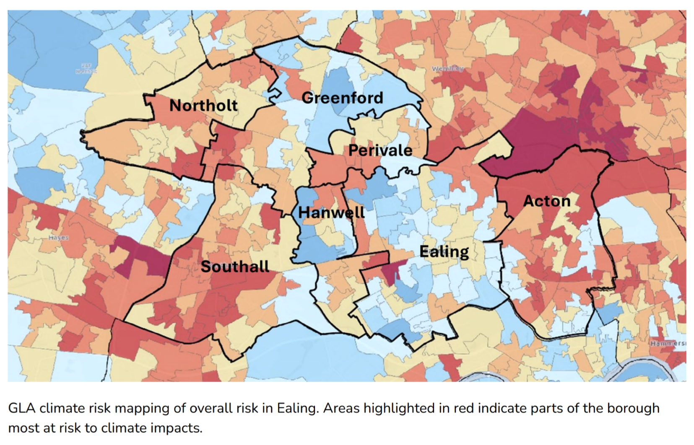
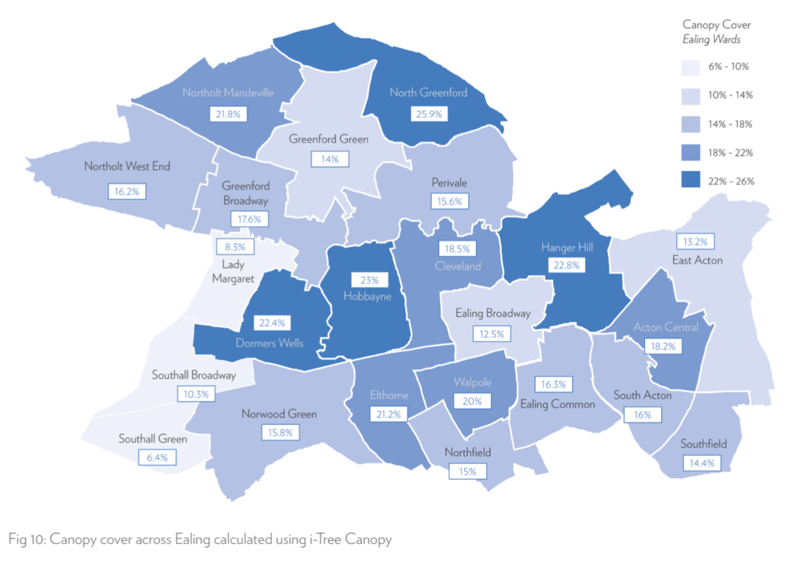
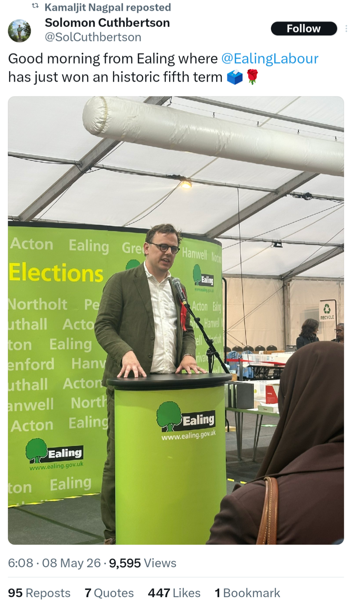
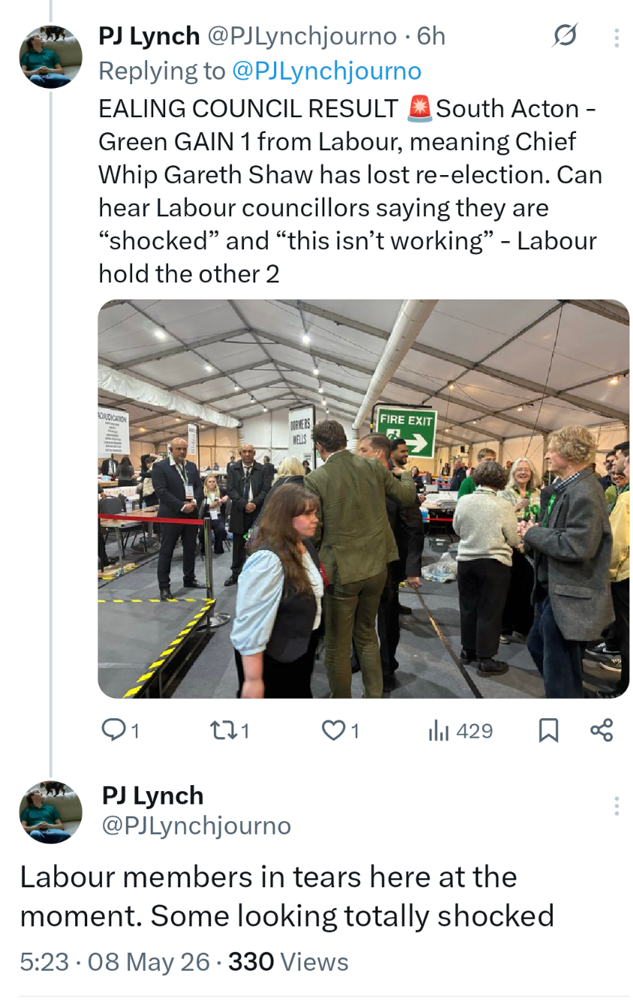
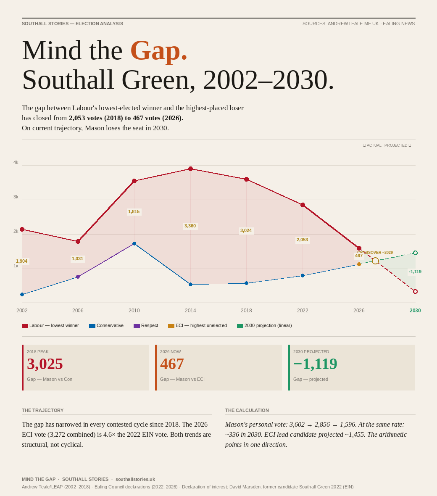
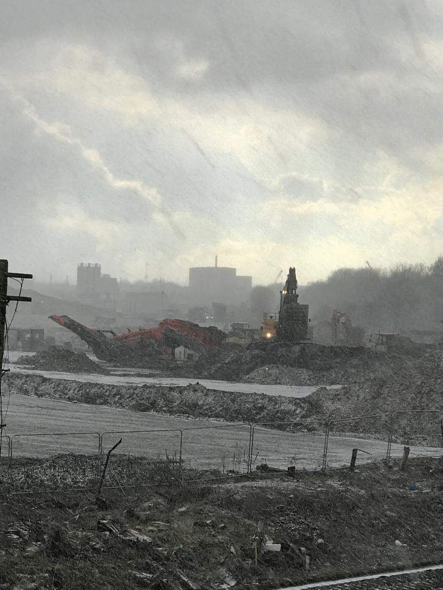
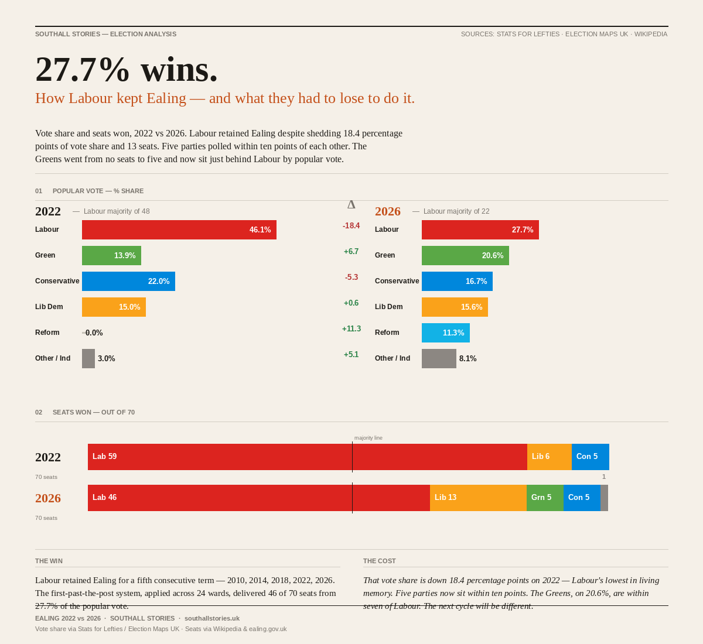

Individuality
Without any consultation, Ealing Council has unveiled its new logo.
The old logo was a mature municipal (socialist?) oak. Forty years of recognition, instantly legible, sitting in the lineage of the borough’s heraldic tradition.
Bin lorries, school gates, planning notices, council letterhead.
The kind of brand asset most local authorities would pay handsomely to acquire — and which Ealing already had, free of charge, through the cumulative work of decades of public service.
🎶 I’ll chop you down, like an old dead tree… 🎶
The replacement is a stylised “fingerprint” of seven disconnected branches floating in a green (party?) ecosystem.
No roots, no leaves, no canopy, no trunk.
Stripped of almost everything that might make it recognisable, or function, as a living tree.
An unnamed council spokesperson assures us:
“The new logo is still a tree."
But, I hear you ask, what is a tree? When is a tree not a tree?
According to the Forestry Commission:
To be considered a tree, the plant must have at least one woody stem and be expected to achieve a height of at least 5 metres.
But let’s be fair. This isn’t a real tree, but a representation of a tree, and what that might mean to anyone who sees it. A symbol of the London Borough of Ealing, its seven towns, and its diverse people.
“while the council supports those distinct 7 towns and their communities, it also believes in respecting the individuality of each of the people it serves."
Those seven abstract and disconnected white branches represent and respect the unique identities of Acton, Perivale, Ealing, Northolt, Greenford, Hanwell and Southall — and each and every one us.
Carefully cultivated and contained individuality.
Ward forums gone. Election hustings invitation-only and no questions from the floor. Public meetings no longer attended.
The once “broad church” of the Labour Party, now excludes everyone who refuses to conform to the leader’s vision.
Many of our community assets sold to developers.
Disconnected branches.
No trunk to gather them. No root system to anchor them. No canopy to shelter them. Floating freely. Structurally separate.
Accessibility compliant. Representation variable.
At no cost to the taxpayer
Echoing former leader Julian Bell’s rationalisation of his many trips to MIPIM in Cannes, the in-house designers did the work “at no extra cost."
Officer time is a cost. Communications team capacity is a cost. The opportunity cost — what those staff could have been doing instead — is also a cost. The council does not capitalise its brand equity on the balance sheet, but it had some, and it has now disposed of it.
It is, on the other hand, the perfect council tree.
It needs no soil. It will never need watering. It has no growing season.
It cannot drop leaves, cannot fail to thrive, cannot be planted in the wrong neighbourhood.
It cannot be subject to a canopy survey.
It will require no maintenance budget, no enforcement officer, no Section 106 contribution, no construction management plan.
It is, of all the council’s recently planted trees, the only one guaranteed to survive.
Specimen
The borough’s seven towns are now honoured by an abstract emblem of growth and individuality — two days after a piece documenting the borough’s ninth-worst position in England for heat vulnerability, the £5 billion retrofit gap signed by the Leader to government, and the 41,500 trees the council has planted almost entirely outside the seven priority neighbourhoods most of those seven towns contain.
It is the council’s other published documents — the heat vulnerability rankings, the canopy cover map, the air quality focus areas, the EREC overcrowding statistics — that record which of the seven the council has actually served, and which it has not.
The old logo was a tree.
The new logo is a values statement.
Both are now part of the brand.
SS · 002
With the help of Billy Bragg, I wrote a song. Thanks to Suno AI, it sounds more like The Only Ones. And I feel fine.
A lost Billy Bragg protest 7” from an alternate universe where he lived in Southall and got obsessed with local governance and the A4020 arterial road to the country.
Individuality
after Billy Bragg
I’ve got good neighbours
And friends from many nations
I’ve shared glasses
With folk from English classes
And unless you’re a fascist
I won’t turn you away
If you stick around
I’m sure that we can find some common ground
Individuality
Each and every one of us
Individuality
Your rules can’t contain us
The new logo for the London Borough of Ealing
Accessibility standards now it’s meeting
While Southall’s vulnerable prayed
In the heat to find some shade
“It’s still a tree!" the council has spoken
At least it’s finally out in the open
Individuality
Each and every one of us
Individuality
Your rules can’t contain us
Individuality
Or express all our qualities
Individuality
Or hide inequalities
I’m sure that everybody knows
How much my council rates me
It lets me down most every time
And leaves the streets so dirty
Please don’t shirk
Responsibility for your work
I’m getting weighed down (weighed down)
With all this information (information)
Consultation
Without representation
Stop raising allowances
While services grow poorer
I don’t want a superhero
Or accountability zero
Individuality
Each and every one of us
Individuality
Your rules can’t contain us
Individuality
Come eat and drink and speak with me
Individuality
We can be what we want to be
Previously on Southall Stories: SS · 001 — Ealing’s Burning.
Feeling the Heat: the council’s £5 billion gap, in the council’s own words.
Feeling the Heat

Above: the council’s own climate risk map for Ealing. Reds and dark reds mark the highest-risk neighbourhoods. Source: Ealing CEES 2025 Progress Report, p.13.
On 11 July 2018, I recorded a video for the Clean Air for Southall and Hayes campaign’s petition to stop the toxic and odorous open-air remediation of Southall’s massive old Gasworks site by the mega rich developer Berkeley Group.
In the video, I described how I had to keep my windows closed all night and all morning in the middle of a sweltering three-month heatwave.
Why?
Because of the stink of petrol outside, a result of Berkeley’s “clean-up” operation.
With very little respite, we were enveloped in the sickly-sweet smell for most of that year’s three-month heatwave.
As a result, and as Berkeley refused to stop, the temperature inside my home — 26°C — was around 5°C higher than the temperature outside.
Almost eight years on, we are having a mini-heatwave in the last week of May, with temperatures topping 30°C for the next few days in London.
In 2018, the highest temperature in May was 28.5°C.
In June, it was 29°C. In July, 34°C. In August, 32°C.
The all-time UK record temperature in May, set in 1944, was 32.8°C.
“So what?" you might ask. “It’s nothing to worry about. Most people will be fine. It’s worse in the Global South, and people survive there with less to cope."
It is true that most people will be fine.
But does that mean we should not worry about those who won’t?
Last year, there were more than 1,000 excess heat-related deaths in the UK.
Just last week, the Climate Change Committee warned that the majority of homes in the UK will overheat by 2050, water shortages will worsen, and the costs to public welfare could reach hundreds of billions of pounds a year.
What has all this got to do with Southall?
Quite a lot, actually.
Readers of this blog will not be surprised to learn that the impact of excess heat is worse in Southall.
But don’t worry! Ealing Council is here!
In April 2019, as the so-called “soil treatment hospital” at the Gasworks was officially decommissioned, Ealing Council declared a Climate Emergency.
And they’ve been “fighting” this climate emergency ever since.
Mostly, some might argue, by closing recycling centres, blocking roads with giant plant pots, and granting planning permission to transform the “Queen of the Suburbs” into a new Manhattan.
But the council has a strategy.
Ealing Council knew
On 11 January 2021, Ealing Council adopted its Climate and Ecological Emergency Strategy.
The strategy committed in writing to climate justice, acknowledging in Section 6 that low-income households contribute least to emissions, are most negatively affected by climate impacts, and are least able to participate in decision-making.
Section 15 commits the council to use its planning powers — described as “one of the most influential tools available to the council to mitigate the effects of climate change” — to “maximise urban greening”, “protect and enhance our network of open spaces”, ensure new developments are “Air Quality Positive”, and “steer development to the areas with the lowest probability of risk from flooding."
The targets are testable.
-
Tree canopy cover from 16.9% to 23% by 2030 (N1.1).
-
50,000 energy efficiency measures in private homes by 2025 (E1.4).
-
10,000m³ of additional surface water storage by 2025 (N3.4).
-
All major developments built to net zero (E2.2).
Ealing knew, in 2021, exactly which residents would bear the cost.
Veteran Southall Green councillor Jasbir Anand was appointed to lead the fight for residents.
Residents knew
Six weeks after the April 2019 declaration of a Climate Emergency, Ealing Transition Initiative submitted a detailed community response — pages of specifics, costed by category.
Among the asks:
-
retrofit of existing housing stock beginning with local authority homes;
-
shade trees in every street rather than ornamentals;
-
Passivhaus or equivalent standards for all building works and conversions; - and no further building on green spaces.
Seven years on, none of the four has been delivered in the borough’s most heat-vulnerable neighbourhoods.
-
Warren Farm Nature Reserve was saved but is scheduled to have building works right next door as new sports pitches and facilities are erected.
-
Passivhaus applies to new council-built housing only.
-
The trees that have been planted have mostly gone elsewhere — not in Southall.
-
And the retrofit numbers will be addressed below.
Only in Southall
Three years ago, I went through the council’s draft Air Quality Strategy line by line.
The strategy named Southall as an Air Quality Focus Area, identified BAME and low-income populations as disproportionately exposed, and committed to “fighting inequalities.”
But by then, the council had already:
-
approved continued open-air remediation of the contaminated Southall Gasworks site, including through the 2018 heatwave, when residents pleaded with leaders to halt work
-
failed to enforce the Construction Management Plan — and confirmed in an FOI response that it did not hold a complete copy of the original
-
refused to widen South Road bridge by the train station, the one mitigation promised when the Mayor overruled local planning objections
-
proposed destroying most of the rewilded Warren Farm Nature Reserve to build sports pitches the consulted public did not want.

Southall already has the lowest tree canopy cover in Ealing.
What I suggested in 2023
“If Ealing is serious about ‘fighting’ inequalities, action must be targeted to protect vulnerable people in Southall to reduce air pollution and its impact on the health of its large, mostly economically deprived and non-white population."
“The Strategy and Plan must target children and older people, people with lung conditions, and pregnant women: outside schools and school run hours."
[I wrote that in January 2023. As it happens, I was diagnosed with chronic lung disease the following year.]
“The Council must question if it is ethical to promote active travel in Southall when it knows that it is a high pollution area and that most of its population is particularly vulnerable to its adverse health impacts."
I also proposed something specific:
“If the council’s air quality strategy is to have any real meaning and intent to address air pollution and multiple inequalities in the Southall Air Quality Focus Area and beyond, it must surely include a vast tree-planting project, and proper maintenance of our existing parks if no new ones can be created on non-contaminated land."
The council adopted its draft strategy with some minor adjustments, and apparently ignored my submission.
The 10,000 trees planned in the new adaptation strategy are going to the new regional park, not into the priority neighbourhoods.
The council’s schools climate-change resource page, run by the School Travel Team, still does not mention heat adaptation, and still promotes active travel in a borough now confirmed as ninth worst in England for heat vulnerability.
Ninth worst in England
In July 2022, Friends of the Earth published an analysis of research led by Professor Sarah Lindley at the University of Manchester, ranking every English local authority by the number of neighbourhoods most socially vulnerable to extreme heat.
Ealing came ninth out of the whole of England.
Seventy-nine priority neighbourhoods for adaptation. Worse than Haringey, Brent, Lambeth, Hounslow, Wandsworth, and every other west London borough. Better than only Birmingham, Newham, Tower Hamlets, Hackney, Nottingham, Southwark, Leicester, and Enfield.
The research, drawing on University of Bristol heat-exposure modelling and over forty social vulnerability indicators, identified where heat would land hardest, who lived there, and what they could afford to do about it.
Friends of the Earth then overlaid the rankings with Leeds University carbon-footprint data and found that priority neighbourhoods have lower than average carbon footprints. The communities most exposed to the climate impact are least responsible for the climate cause.
And one finding largely ignored at the time of publication:
People of colour are four times more likely than white people to live in a priority neighbourhood for adaptation.
The council had this analysis nearly four years ago.
As Professor Hannah Cloke, Regius Professor in Meteorology and Climate Science at the University of Reading, put it last week:
“The solutions exist. The challenge now is turning adaptation plans on paper into streets, homes, rivers and infrastructure that are ready for what’s coming."
The plans on paper, in Ealing’s case, are five years old. The streets, homes and infrastructure have moved in the opposite direction.
The Leader’s own words
It wouldn’t be Southall Stories without a quote from our newly re-elected leader.
In June 2020, in the aftermath of George Floyd’s murder, the man who would become Leader of Ealing Council the following year, Peter Mason, posted to his then-Twitter account:

“we’re basically operating a system that’s structurally racist. We can’t figuratively keep washing our hands of this, whilst telling BAME communities to do it literally. #BlackLivesMatter”
Three years later, at the unveiling of replacement memorial plaques for Blair Peach and Gurdip Singh Chaggar — both killed in racist attacks on the streets of Southall — Mason named structural racism as the cause of Southall’s gaps in life expectancy, earnings and housing.
He’s not wrong.
He’s also been Leader of the council during the period in which the Friends of the Earth analysis has sat on the public record. That analysis quantified one component of what the Leader publicly described.
People of colour, four times more likely to live in priority heat-adaptation neighbourhoods.
The council’s measured delivery against its 2021 climate justice commitments, in those neighbourhoods, is what the Leader’s stated diagnosis describes in practice.
Feet to the flames
In January 2022, the Ealing Race Equality Commission — set up by the council and chaired by Lord Simon Woolley — published its final report.
Mason had been in office as Leader for eight months.
Woolley’s framing was direct: previous reports across the country had ended up “gathering dust on shelves – and we do not want that to happen with this report."
Priority 7 of the recommendations called for an independent body that would keep “feet to the flames” in order to “hold the next Ealing administration to account for progress”, with the Leader required to report on progress annually from 2023.
The council established the Citizens' Tribunal in response.
Two years on, the Tribunal’s own evaluation report records that 58% of its members reported difficulties in obtaining the necessary data from the council. “This in turn diluted their ability to make informed recommendations."
The council’s own accountability body has said, in writing, that the council will not give it the evidence it needs to hold the council accountable.
EREC’s housing recommendations — empowered tenant groups, a private-renters rights campaign, ward-level housing advice hubs — sit alongside one statistic from the same report.
Citing North West London Community Voices research, EREC recorded that BAME households in the borough are four times more likely to be overcrowded than the borough average. Private renters six times. Social renters eight times.
That is the demographic of the seventy-nine priority neighbourhoods, set out in the council’s own commissioned report, six months before Friends of the Earth published the heat-vulnerability rankings.
What the Council knew, and when
In January 2021, the council adopted its Climate and Ecological Emergency Strategy, committing in target E1.4 to 50,000 energy efficiency measures in private homes by 2025.
By July 2021 — six months later — the council’s Deputy Leader and Cabinet Member for Climate Action, Cllr Deirdre Costigan (since July 2024, the Labour MP for Ealing Southall), wrote to the then Secretary of State, Kwasi Kwarteng, telling him in writing that “the major levers to reduce costs and make retrofitting affordable for more households do not sit with local government”.
Without national VAT cuts, the costs of retrofitting would “fall beyond the means even of relatively financially comfortable households."
In November 2021, the London Assembly published a written answer from the Mayor to a question from Onkar Sahota AM.
The question recorded that “Ealing has only enough funding to start work on 68 council homes out of the 5,000 that are ready for refurbishment."
That is the council’s own social housing backlog, on the record. 68 out of 5,000, ten months into a strategy promising 50,000 private homes by 2025.
By August 2023, Cllr Peter Mason and Cllr Costigan jointly wrote to Grant Shapps, then Secretary of State for Energy Security and Net Zero. Their letter quantified the gap in writing:
“this is estimated to be in the order of £300M for Council-owned properties – and £5B for all domestic properties within the Borough. The gap between existing funding from central government and the task in hand is profound."
Five billion pounds. The council’s own figure, signed by its Leader, for the cost of decarbonising the borough’s housing stock.
On 21 January 2026, the council’s own Around Ealing magazine confirmed the delivery numbers.
Since May 2022, 1,207 of its own homes have been upgraded.
A further 732 council homes are scheduled for retrofit by 2028 — part-funded by £6.5 million from the Government’s Warm Homes: Social Housing Fund, and £35.5 million from the council over three years.
£35.5 million from the council, against a £5 billion gap the Leader had quantified two and a half years earlier. 0.7% of what the council itself told the government was needed.
The arithmetic looks worse still when set against Southall’s housing tenure.
In October 2022, speaking at a Southall Community Alliance forum, Mason described his own ward with unusual candour.
“If you live in Southall," he said, “your opportunity and your access to get onto the housing ladder is next to nothing. 80% of the homes in Southall Green are in the private rented sector. The challenges and the quality of accommodation available leads people having to live in terrible situations."
The council’s current retrofit programme — its own social housing stock — touches at most 20% of homes in the Leader’s own description.
The other 80% depends on the £5 billion private-sector decarbonisation the Leader himself told government, ten months later, was not funded.
Cadent Gas, the regional gas network operator, published its own data in March 2023 confirming that 16% of households in Ealing Southall live in fuel poverty — higher than the average both nationally and in London.
The same housing stock now ranked ninth in England for summer heat vulnerability is also among London’s worst for winter cold. Cadent privately funded a £94,540 community grant to mitigate this.
The public retrofit programme that would have reached most of those households is the same one the Leader told government, in writing, was £5 billion short.
Where did all the trees go?
The council’s own 2023 progress report confirmed the “commitment to plant 50,000 trees by 2026."
The council’s 2025 Progress Report records over 41,500 trees planted since 2022 — the majority within the West London Regional Park, connecting Pear Tree Park, Warren Farm, Churchfields Recreation Ground and Horsenden Hill. A further 10,000 are planned, the report says, “prioritising areas with the least greenery."
The areas with the least greenery, on the council’s own iTree data, are in Southall.
The planting to date has mostly gone elsewhere.
The very last “Going forward” item in the Nature section of the 2025 report is more revealing:
“Undertake an updated canopy cover survey to guide our approach to enhancing wildlife and connecting people to nature."
The council is commissioning a new canopy survey in 2026 — after most of the planting has been completed.
Berkeley Group’s “Poison Park” — the so-called “green” space grafted on to contaminated Gasworks land — will be counted towards Southall’s green infrastructure on paper.
The site’s contamination history is well documented.
In May 2019, The Observer reported that fifty Southall residents (including me) interviewed by Jo Griffin described “breathing difficulties, the onset and worsening of asthma, eye irritation, irregular heartbeats, migraines, skin rashes, chest infections, nausea, dizziness, memory problems, a sensation of ‘internal burning’ and other symptoms."
The soil was found to contain “hydrocarbons including benzene, a known carcinogen, naphthalene, asbestos and cyanide."
The same Observer article cites a toxicology report obtained via Freedom of Information request.
The note, from Berkeley’s own consultants Atkins, reads:
“there are no private gardens proposed cannot grow veg on the contaminated soil ever ! [sic]"
That is the developer’s own technical record, on the site of the council’s new “green infrastructure” for Southall.
A pattern of unmet targets
The 2021–22 Council Plan set three “transformational targets” against the climate priority:
-
shifting residents away from car use,
-
hitting a 60% recycling rate by 2022,
-
and improving the energy performance of “social housing stock, council buildings, and resident homes throughout the borough."
As I documented in detail, the council’s 2016 switch to fortnightly collections — sold to residents on the promise of cost savings and higher recycling rates — produced an immediate 103% spike in fly-tipping, and recycling barely changed: from 45% in 2015 to 49% in 2024.
The car use target has not been measurably reported against in any way the average resident can see.
The 2025 Progress Report introduces a new “Better Living Framework” promising six outcomes, including “Comfortable spaces: more homes, workplaces, public- and private- spaces are thermally comfortable all year round."
That is the heat-adaptation commitment, restated yet again.
It joins a series: the 2019 declaration, the 2021 strategy, the 2021–22 Council Plan, the 2023 Air Quality Strategy, the 2026 Adaptation and Resilience Strategy.
Each iteration commits to the same outcome in different language.
None of them has been delivered in the priority neighbourhoods such as Southall.
The Local Plan in Examination
Section 15 of the 2021 strategy described the Local Plan as “one of the most influential tools available to the council to mitigate the effects of climate change."
On 10 December 2025, the draft Local Plan was tested at the statutory Examination in Public.
Ealing Friends of the Earth’s Nic Ferriday presented evidence to the inspectors arguing that the plan’s “overriding policy” was to build “tens of thousands of flats, mostly in huge tower blocks” with “no mention of the fact that building and running high tower blocks emits huge quantities of carbon. Terraces of around five storeys are, in contrast, much more energy efficient but can still provide a similar density of housing."
Ferriday also noted that the council’s “change team” — the unit responsible for delivering climate action — did not attend the EiP climate session, despite climate action being listed as one of the council’s three core aims. The accountability mechanism the council set up to drive climate delivery did not turn up to the formal planning examination where its strategy was being tested.
The council’s response to public criticism cited “the largest deployment of solar power in west London, planted more than 40,000 trees, installed over 1,000 electric vehicle charging points” and the borough’s score in Climate Emergency UK’s 2025 Council Climate Action Scorecard.
The council mentioned one figure from the assessment: “90% in the planning and land use category."
The remaining categories are publicly available on the same scorecard.
-
Ealing scored 53% on Buildings & Heating — no change since 2023.
-
54% on Transport — down one point since 2023.
-
62% on Collaboration & Engagement, 57% on Biodiversity, 51% on Governance & Finance.
The borough’s headline 65% total score places it joint tenth out of 186 single-tier councils.
But the gap between its 90% on what it has written and its 53% on housing decarbonisation — the category most relevant to the £5 billion retrofit gap — is the entire argument of this piece in two numbers.
Tenth in policy. Ninth in measured vulnerability.
The council is celebrating the assessment of what it has written, against the measurement of what its residents experience.
The 2026 strategy
The forthcoming Climate Adaptation and Resilience Strategy, previewed by MyLondon, proposes:
-
Passivhaus standards for new council-built housing. The 2021 ETI submission asked for this seven years ago, for all building works and conversions.
-
A 575-hectare regional park with 10,000 more trees and a rewilding project including beavers — alongside the 41,500 already planted in the same regional park.
-
District heating powered by waste heat from data centres, which currently consume 25% of the borough’s energy supply. At least two more are planned for Southall.
The strategy will be put out to consultation. The council has said it wants input from “community leaders.”
Act For Ealing, launched in January 2021 by Ealing Transition Initiative and community partners as “an online hub and network through which existing and emerging community groups can come together,” is described in the council’s 2025 Progress Report as a network of “60 organisations” that the council “wants to build on its role as a convener” of.
Ealing Transition Initiative’s detailed 2019 community proposals remain unanswered.
The ward forums through which residents could directly question councillors on the record have been replaced by the council-convened Your Voice, Your Town programme.
What next?
A serious adaptation strategy for a borough ranked ninth in England would publish, neighbourhood by neighbourhood, what has actually been delivered against the 2021 commitments.
It would acknowledge openly that the most-exposed neighbourhoods are the same ones bearing the air pollution, the gas works contamination, the canopy deficit, overdevelopment and the demolition of half-built new council homes. It would commit replanting and retrofit funding to those neighbourhoods in proportion to risk.
It would give the Citizens' Tribunal the data its own members say they cannot obtain.
It would answer the question I asked them three years ago:
Is it ethical to promote active travel in Southall when the council knows the population is particularly vulnerable to the adverse health impacts of the air it is being told to breathe more deeply?
It would ensure that the climate team responsible for delivering the strategy turned up to the statutory Examination in Public testing it.
And it would stop treating “consultation” as a stage in a process whose outcome is already decided.
The council declared a climate emergency in 2019, and had the Ealing Transition plan in response.
Ealing had its own strategy in 2021. By July 2021 it was privately telling government the strategy could not be funded. By November 2021 the GLA was publishing that it had funded 68 of 5,000 council homes ready for retrofit.
By January 2022 the Ealing Race Equality Commission was telling it to hold its own feet to the flames. Ealing missed its own 2022 recycling target. It received Friends of the Earth’s climate change analysis.
It received my submission on the Air Quality Strategy in January 2023. Cadent Gas published Southall’s 16% fuel-poverty figure in March 2023. By August 2023 the Leader was telling government the retrofit funding gap was £5 billion.
Peter Mason has repeatedly publicly named the system he operates as structurally racist.
The Climate Change Committee published its national warning this week.
This bank holiday weekend and half-term we are cooking in our homes.
More vulnerable people will die.
Across that period, in the same neighbourhoods named in every successive evidence base, the council has approved more density, less canopy, more contamination, less green space, and fewer of the social rent homes that house the residents who carry the risk.
Ealing did not stumble into ninth place in England. It knew. It was warned. It legislated. It built anyway.
If you can’t stand the heat, don’t declare a climate emergency.
And don’t live in Southall.
Lift-Off! Ealing Elections Special
🐸 Going Green 🐸
Peter Mason celebrated another election victory yesterday morning by going green.
Solomon Cuthbertson, a Labour activist, posted a photograph at 6:08 a.m. captioned:
“Good morning from Ealing where @EalingLabour has just won an historic fifth term."
The photograph shows Mason at a podium against the Ealing Council branded green backdrop, in an olive-green suit.

Mason had spent much of the final week of the campaign amplifying national Labour’s attack line that the Greens risked repeating Labour’s antisemitism crisis — despite the party being led by Zack Polanski, the only Jewish leader of a national political party in the United Kingdom. Mason had previously dismissed the Greens' hopes of winning even a single seat in Ealing, saying:
“the Greens have never won a single councillor in Ealing and I doubt that they’re going to win a single councillor in the future.”
The Greens won five seats with 20.6% of the popular vote.
Mason’s and Labour’s victory in Ealing is real. Labour retained control of the council with 46 of 70 seats. He has now overseen a fifth consecutive Ealing Labour victory — 2010, 2014, 2018, 2022, 2026 — which is, by any reasonable measure, a historic record.
It is also a record secured on 27.7% of the popular vote — Labour’s lowest borough-wide vote share in living memory, down 18.4 percentage points on 2022.
The party that won the council with a huge 22 seat majority won barely more than one in four votes cast.
The Greens, on 20.6%, were the second-largest force in the borough by popular vote, but gained just five councillors.
The Conservatives took 16.7% and also have five.
The Liberal Democrats 15.6% share gained 13 councillors (who needs proportional representation?).
Reform, contesting Ealing for the first time with a slate made up entirely of no-hoper paper candidates, took 11.3%.
In a borough where 57% of residents are from Black, Asian and other minority ethnic backgrounds, more than one in ten voters backed a party whose political project centres on mass deportations and anti-immigration politics. I’m pleased to say Reform won zero councillors.
Other independent candidates and parties, including Ealing Community Independents, took 8.1% of the total votes despite fielding far fewer candidates.
The cost of Labour’s victory is significant.
Last night Ealing Labour lost ten seats. The Greens and the Liberal Democrats gained five each. The Conservatives gained one. Former Labour councillor John Martin retained his seat as an Independent in Norwood Green. Swaran Padda, another former Labour councillor, stood against Mason in Southall Green and was not elected. Neither was Kate Crawford in East Acton.
Mason’s own personal vote fell 44%. In 2018, he parachuted into Southall Green, Labour’s safest ward in the borough. Eight years later, he achieved the lowest individual Labour vote ever recorded in this ward.
🗄️ Cabinet Cut 🗃️
❌ Shital Manro — Cabinet Member for Good Growth and New Homes. GONE. Lost in North Greenford, where the Conservatives swept all three seats.
❌ Polly Knewstub — Cabinet Member for Healthy Equal Lives. GONE. Lost in Hanwell Broadway, where the Greens swept all three seats.
❌ Josh Blacker — Cabinet Member for Closing Children’s Centres. QUIT. Didn’t stand for re-election in South Acton.
❌ Gareth Shaw — the Labour Group’s Chief Whip. GONE.
Shaw had abandoned his Walpole base in the face of an obvious Liberal Democrat surge — they took all three Walpole seats — and switched to Blacker’s seemingly safe South Acton ward, where he was beaten by Husam Alharahsheh of the Green Party.
Shaw was reportedly inconsolable when the result came through at the count.
There is a detail worth pausing on. Alharahsheh, the Greens' winning candidate, was a paper candidate — the only Green on the South Acton ballot. Alphabetically, he appeared at the very top of the ballot paper. Shaw, by virtue of his given surname, sat near the bottom. Primacy effects (a psychological bias towards the first option in a list) are real and well-documented in multi-member ballots.
The Green paper candidate at the top of the ballot beat the Labour chief whip at the bottom of it. Shaw is no longer a councillor. South Acton has a Green councillor for the first time.
🎶 It’s My Party And I’ll Cry If I Want To 🎶
Channel 4 News political editor Gary Gibbon, on the eve of polling day, reported that Labour had briefed its activists not to cry on camera if the results were bad. The party’s central operation knew, in other words, that the results were going to produce activists who wanted to cry. They tried to manage the optics in advance.
PJ Lynch, the Local Democracy Reporting Service journalist present at Ealing’s count, posted at 5:23 a.m.:
“Labour members in tears here at the moment. Some looking totally shocked."

That was after the South Acton result. Mason was photographed in his green jacket consoling Shaw at the exit.
❌ Gordon Gone, Tighe Turfed ❌
In Hanwell Broadway, Yoel Gordon — one of three Labour councillors swept aside by a Green wave.
✅ Clare Welsby, who led the Save Ealing Children’s Centres campaign that this council fought in the High Court in order to carry out its plan to close ten children’s centres in order to improve them, was duly elected along with two other Green Party candidates.
Welsby is now, as of yesterday morning, a councillor in the same chamber as the people who closed the children’s centres she fought to save.
✅ John Martin’s re-election, now as an independent in Norwood Green relegated Labour candidate Claire Tighe into fourth place.
Tighe worked as part of Keir Starmer’s 'Green Army' alongside Morgan McSweeney until he (Starmer) became Prime Minister. After failing to win a seat in the House of Commons, she went to Northern Ireland to work as Hilary Benn’s SpAd.
Norwood Green has returned a full Labour slate at every election since 2002 — the year Local Elections Archive Project (LEAP) begin. Last night it elected an independent at the top of the poll and pushed the Prime Minister’s former staff member off the council entirely.
In the Walpole Wipeout, the Liberal Democrats took all three seats. Shaw leapt from the LibDem frying pan into the Green fire.
💊 The Drugs Don’t Work 💊
When The Drugs Don’t Work was published two days before polling day, the argument was simple: Ealing’s drug and alcohol service had been relocated from West Ealing to Southall, where Labour was electorally safer. West Ealing residents being the ones who had asked for the change and Southall residents being the ones who had not. The story drew on three years of police.uk crime data showing that crime around the West Ealing site had fallen, and crime around the Southall site had risen exponentially, since the move.
The 2026 results have made the political calculus underlying that decision unmistakable.
The two wards where residents complained loudest about the West Ealing service — Walpole and Hanwell Broadway — were both wiped out for Labour last night. Walpole went to the Lib Dems. Hanwell Broadway went to the Greens. Labour lost six seats across two wards that the council had effectively listened to when it came to relocating the service away from them.
The two wards where the service was moved to — Southall Broadway and Southall Green — Labour retained, but with massive vote losses to Ealing Community Independents.
Angela Fonso received 804 votes in Southall Broadway and Joe Bhangu got 1,129 in Southall Green.
Labour’s lowest winners returned with 1,043 and 1,596 respectively.
The “safe” wards delivered the seats.
They did so on the smallest margins in a generation, with the largest insurgent challenge in two decades.
The decision that helped residents in Walpole and Hanwell Broadway did not, in the end, save those seats. The decision that hurt residents in Southall Broadway and Southall Green produced the closest results either ward has seen in a generation. Both halves of the calculation have come back to the people who made it.
🚀 Independents Lift-Off 🚀
ECI’s overall vote share across the wards it contested was just under 19%. For a local party registered with the Electoral Commission less than seven months ago — running its first borough-wide campaign, in many wards without a full slate, against well-resourced incumbents — that is a remarkable opening showing.
Ward by ward, the picture looks like this:
| Ward | ECI % |
|---|---|
| Southall Green | 24.6% |
| Southall West | 19.4% |
| Dormers Wells | 19.0% |
| Southall Broadway | 18.4% |
| Norwood Green | 17.5% |
| South Acton | 11.4% |
| Northfield | 10.3% |
| Greenford Broadway | 6.7% |
| Perivale | 5.8% |
| Walpole | 3.9% |
| Pitshanger | 1.6% |
[Stats courtesy of ECI candidate Florence Pinaud for the breakdown stats]
Five wards above 17%. Three above 19%. The strongest performance by a new local party in Ealing by some distance — Respect peaked at 21.5% in Southall Green in 2006, but never sustained a five-ward bloc above 17%.
The Southall corridor is now ECI’s. The wider borough is a longer project. The numbers in Northfield (10.3%) and South Acton (11.4%) suggest solid foundations to build on. In every ward, there must be a fully co-ordinated and mutually co-operative strategy to win the anti-Labour vote.
🥬 The Greens 🥬
Mason had told anyone who would listen, in the final stretch of the campaign, that the Greens would not win a single seat in Ealing. He also spent most of the last week accusing Zack Polanski — the only Jewish leader of a national political party in the United Kingdom — of leading a party with pro-Palestine policies an antisemitism problem. According to Mason’s analysis of national and local politics, the electoral door was firmly closed shut to the Greens, and they were not invited to a seat at his anti-democratic table.
The Greens broke Mason’s half-built door down and took five seats at his wonky table. They swept Hanwell Broadway. They took a seat in South Acton from the chief whip. They took a seat in North Acton. They came within 122 votes of breaking through in North Hanwell. Their borough-wide vote share was 20.6% — second-largest in Ealing — and behind Labour’s by just over seven percentage points.
Polanski, whose Jewish identity Mason (himself a Jewish convert [evidence cited here not for the faint-hearted]) worked to delegitimise during the final week of campaigning, leads a party that has now established itself as a meaningful political force in the borough Mason runs.
And the man who self-identifies as left-wing attacked the only Jewish leader of a national pro-Palestine party wore green all election night.
⚓ Blue Peter ⚓
Mason’s path through Labour politics is worth tracing because it explains the green attire.
He stood as Labour’s candidate for Ealing Common in 2010 and lost. He was selected for Elthorne in 2014 and won. He served Elthorne as a councillor while also working as a researcher for Onkar Sahota AM at the Greater London Authority. In 2018, with Swarn Singh Kang’s retirement creating a vacancy in Southall Green, Mason was selected for what was then Labour’s second-safest ward in Ealing.
Before any of that, he was a student at the University of Birmingham, running for student union office under the slogan “Vote Blue Peter Mason” — painted blue, in a hand-drawn shirt with a Blue Peter ship logo, distributing leaflets on Birmingham’s campus. By his own confirmation, in a Twitter comment eleven years ago:
“I have committed the ability to draw a half decent blue peter badge to muscle memory”.
He posted (and since deleted) on Twitter:
“Most looking forward to ‘The Jewish roots of Blue Labour’ session by Maurice Glasman at S.London #Limmud on Sunday."
Blue Labour. Maurice Glasman. The conservative edge of the Labour tradition — communitarian, socially traditional, friendly to private capital and the property-development model. Friendly, in particular, to Berkeley Group, whose Southall Waterside development poisoned the air over a primary school (Toxic Town) on Mason’s watch as Cabinet Member for Housing, Planning and Transformation.
The man who painted himself blue at Birmingham went on to become the architect of Ealing’s developer-led housing strategy. The man who held the planning brief while the Section 106 money raised in Southall was spent elsewhere is the same man whose national Labour positions have, more recently, taken him into territory where attacking the only Jewish leader of a national political party in the country has become an acceptable thing to do.
Yesterday morning at the count, Mason was wearing green.
🧻 Walpole Wipeout 🧻
PJ Lynch posted a photograph of Mason posing with his Southall Green running mates Anand and Dhindsa, captioned:
“EALING COUNCIL RESULT — Southall Green — Labour HOLD all 3 seats including Council Leader Peter Mason, who saw a 44% drop in his personal vote compared to 2022."
What Lynch’s photograph shows, intentionally or otherwise, is Mason near a green sign reading FIRE EXIT, with an arrow pointing right.
Asked by the Local Democracy Reporting Service what went wrong for Labour, Mason told LDRS:
“Well, I think you have to look at the national picture. You have to look at the situation that we find ourselves in. We’re absolutely committed to making sure that we represent the incredible people of Southall and we deliver for them on all the promises that we’ve made and all the promises that we’ve demonstrated that we’ve delivered over the last four years. Elections come every four years and I’m totally hopeful that in four years time that we’ll be able to secure that important historic sixth consecutive election and perhaps even get more councillors."
The national picture.
Not the Section 106 money. Not the children’s centres. Not the toxic gasworks. Not the drug service relocation. Not the divestment campaign. Not the planning record. Not the four-times-the-national-average fly-tipping rate. Not the 44% personal vote collapse in his own ward.
The national picture.
The national picture came to Walpole this morning.
Sir Keir Starmer, addressing the results from the national perspective Mason invoked, posted to X with the caption:
“These are tough results for Labour. There’s no sugarcoating it. We’ve lost brilliant Labour representatives who’ve stood up for their communities."
The accompanying video showed the Prime Minister at a community hall in Walpole ward — the same ward whose voters, less than 4 hours earlier, had replaced their Labour councillors with three Liberal Democrats.
The councillor visible behind Starmer’s right shoulder, watching adoringly as the Prime Minister spoke, was Peter Mason.
Whether anyone advising the visit had thought through the optics of staging “tough results, no sugarcoating” in the ward whose voters had just sugarcoated nothing in delivering a three-seat Lib Dem sweep is unclear.
Another success story for the councillor of the year semi-finalist?
🎯 Broken Records 🎯
Two records were set in Southall Green on 7 May.
Mason’s record.
His 1,596 votes is the lowest individual Labour vote in Southall Green ever.
Lower than the worst year of New Labour following Iraq in 2006, when George Galloway’s Respect Party threw everything it had at Southall and pulled in 21.5% of the vote.
At Respect’s high water mark, the lowest Labour winner — Swarn Singh Kang — polled 1,794.
Mason has now achieved, in 2026, what George Galloway could not in 2006.
Joe Bhangu’s record.
The Ealing Community Independents' lead candidate took 1,129 votes. All three ECI candidates polled over 1,000 votes each.
Salvinder Dhillon, Respect’s lead in 2006, took 763.
ECI did not exist in 2022. The party was registered with the Electoral Commission seven months before this election.
At its first serious attempt, in a ward where Labour has held all three seats for as long as anyone can remember, ECI broke a 20-year insurgent record by 366 votes.
The combined ECI vote — Bhangu, Dogra, Rajput — was 3,272.
Four years ago the equivalent independent slate (the Ealing Independent Network) polled 712 votes between three candidates.
ECI has multiplied the local independent vote by a factor of 4.6 in a single cycle, with no incumbent benefit, no national party machine, and a slate of three first-time (in Southall Green) candidates running against three sitting councillors with sixty-four years of office and £1.5 million in allowances between them.

The gap between Labour’s lowest winner (Mason, 1,596) and the highest unelected challenger (Bhangu, 1,129) is 467 votes.
In 2018 the equivalent gap was 3,024. In 2022, 2,053.
The trend line points one way.
😢 Counting Tears 😢
The picture from inside the count tent in the early hours of yesterday morning, as relayed by ECI campaigners and supporters present, is one Labour will not enjoy reading.
The most senior councillor reportedly visibly distressed was Cllr Steve Donnelly, returned for East Acton, Cabinet Member for Inclusive Economy — and, according to long-running observation by local residents and campaigners, one of the three councillors who effectively run the borough alongside Peter Mason and Shital Manro. Of those three, one is now out (Manro), one has lost 44% of his personal vote (Mason), and the third was in tears.
Campaigners who have spent two years pursuing the council on its pension fund investments in defence contractors connected to Israel — investments that have been the subject of repeated petitions, council questions, and demonstrations — observed the symbolism without comment. The former chair of the pensions fund panel, who has held the line against thousands of signatures asking for divestment, was the cabinet figure most visibly affected when the results came in.
He had not been briefed by Labour HQ. Or if he had been, he was overwhelmed by his feelings.
🏗️ Wrecking Ball 🏗️
The Israeli divestment campaign is one of several issues on which Ealing Labour has held a line that increasingly few residents support. Over the past two years, petitions on pension fund investments in companies supplying weapons to a state currently subject to International Court of Justice proceedings have been ignored. Council meetings have been managed past the question. The chair of the relevant committee has not moved.
The same pattern recurs elsewhere. The Southall Gasworks air quality data was never independently analysed and residents reports of odour, air pollution and ill-health were ignored or downplayed.
The fly-tipping numbers have been managed past every cabinet meeting. The £13m of Section 106 money raised in Southall and spent elsewhere has been managed past every scrutiny opportunity. The relocation of the borough’s drug and alcohol service from Walpole — where Labour was at risk — to Southall, where it wasn’t, has been signed off and managed past anyone who might have asked questions about why crime then fell where Labour was vulnerable and rose where it was safe.
A council that responds to its own residents' emails with silence eventually finds that residents stop sending the emails and start sending other signals.
The signal from Hanwell Broadway sent Polly Knewstub home and Clare Welsby — who fought the children’s centre closures — to the council chamber.
The signal from North Greenford sent Shital Manro home and three Conservatives in his place.
The signal from Walpole replaced the Labour slate with a Lib Dem one, in the same ward the Prime Minister visited yesterday morning to record his commiserations.
The signal from South Acton ended the chief whip’s career.
The signal from Norwood Green sent a deselected Labour councillor back to the chamber and the Prime Minister’s former staffer to fourth place.
The signal from Southall Green left Mason 467 votes ahead of the local party which didn’t exist seven months ago.

The wrecking ball metaphor is not a flourish.
At the Southall Gasworks site, Berkeley Group’s contractors dug up a hundred years' of contaminated petrochemical sludge that left a toxic chemical cocktail in the air over local schools and homes. The impact on people’s health is, perhaps, yet to be fully realised.
Mason was Cabinet Member for Housing, Planning and Transformation.
While Southall residents coughed and choked on the poison air, Mason was wining and dining with Berkeley Group in the south of France, all expenses paid.
The wrecking ball that swung over Southall in the late 2010s has been swinging over the local political settlement ever since.
It has now reached the man who signed it off.
🔍 Looking Forward ➡️
Mason will form an administration that has lost ten seats and two cabinet members. He will run it from a position of visible personal weakness in his own ward, on the lowest borough-wide Labour vote share in living memory.
The Forvis Mazars audit, the Local Government Association Peer Challenge, the Housing Ombudsman determinations — these documents already exist. They will continue to exist.
The Section 106 money will continue not to be spent in Southall.
The fly-tipping will continue to be twice the London average.
The legacy of the toxic air from the Southall Gasworks site and other local pollutants will continue to need monitoring that the council has chosen not to do.
Cabinet member Jasbir Anand — Mason’s running mate, returned with the highest Labour vote at 1,789 — will continue to be the councillor who signed off the relocation of the drug and alcohol service to Southall that brought with it a massive increase in crime.
Labour councillors waking up in Ealing this morning will be asking themselves the same question every other observer is asking:
will they still be councillors in four years' time?
It is, of course, a long way away. A week is a long time in politics, let alone a four-year cycle.
But it is hard to come back from a record of supporting investments in a state most of the world now considers to be conducting genocide.
It is hard to come back from a fly-tipping rate four times the national average.
It is hard to come back from a toxic town.
It is hard to come back from emails the council does not answer and ward forums the council has cancelled and Section 106 money the council has spent somewhere else.
It is hard to come back from accusing the only Jewish leader of a national party of having an antisemitism problem in the same week that party broke through in your council for the first time.
It is hard to come back from winning the council on 27.7% of the vote and then blaming the national picture.

For ECI, the Greens, and the Liberal Democrats, the 2026 result is strong encouragement. ECI ran a brilliantly organised and unifying campaign, and multiplied the independent vote by 4.6 in a single cycle, polling just under 19% across the wards it contested and above 17% in five of them. That’s some achievement.
I know from my own efforts in 2022 how exhausting it is and how devastating it is to lose despite all the hard work. I just hope they all take heart from such an incredible result and start planning and campaigning now (or don’t leave it too long after recovering) for 2030. It’s a huge ask.
The Greens went from zero seats to five — the door to the council chamber broken open for the first time, with a borough-wide vote share of 20.6% just behind Labour’s 27.7%. The Liberal Democrats added five and could, on this trajectory, challenge for control of Ealing in 2030 if Labour continues at its current rate of decline.
The arithmetic of opposition consolidation — Northfield (Green + ECI = 5,564 vs Labour 5,287), Norwood Green, possibly North Hanwell — is no longer a thought experiment.
It is a strategy waiting to be executed.
For ECI specifically, the path forward in Southall Green is similar.
Mason’s lowest Labour vote was 1,596. ECI’s highest was 1,129. The gap is 467 votes.
To close it, ECI needs to do three things: convert the protest vote currently going to Reform (960), the Conservatives (1,780) and the Greens (554); recover the Padda vote (240) which, given Padda’s history as a deselected Labour councillor with his own grievances against the party, plausibly drew from the same pool of disaffected Labour voters that ECI was reaching; and mobilise some of the 7,000 registered electors who did not vote at all. In a ward of 11,000 voters, that is a tractable problem.
The conservative projection — assuming Labour partially recovers, ECI grows only modestly — has Mason on roughly 1,200 in 2030 and Bhangu on roughly 1,355. That is a 155-vote ECI lead. It is the conservative projection. The optimistic one has him losing by considerably more.
The man who arrived in Southall Green in 2018 with 3,602 votes left the count yesterday morning with 1,596.
He left it in a green jacket, by a fire exit, comforting his tearful ex-chief whip who had just lost his seat to a Green paper candidate, while other colleagues wept over a result for a residents-led campaign Labour had treated as unwanted background noise for years.
He stood beside the Prime Minister hours later in Walpole, of all places. He had spent the last week of the campaign attacking the only Jewish leader of a national party. He had dismissed the Greens' chances. He had been wrong about both.
There is a story in there about what governing without listening looks like, and about what eventually happens to people who do it.
Who Does Peter Mason Really Represent?
Shots were fired early in this election campaign.
In late March, Ealing Labour issued a statement attacking the Ealing Community Independents (ECI).
Their candidates, Labour said, include people:
“expelled from the Labour Party, supporters of the far-left Socialist Workers Party, and have connections to the Communist Party of Great Britain.”
ECI, Labour concluded, are:
“hardly independent” and should “tell the truth about who they really represent.”
It is an astounding statement.
Not because the associations it describes are inaccurate — some are accurate — but because of who is making it, and what it reveals about the man at the centre of Ealing Labour’s operation.
A Little History
Peter Mason is the leader of Ealing Council. He has represented Southall Green — home to a majority south Asian Indian-heritage community. And one of the poorest, most deprived wards in Ealing borough — since 2018.
As National Secretary of the Jewish Labour Movement for eight years, Mason led an organisation commited to “socialist Zionism”.

Mason led the campaign to prevent a Corbyn-led Labour government in 2019.
The first Indian Labour MP elected to the House of Commons in 1922, was Shapurji Saklatvala. Saklatvala was a staunch Communist and a member of the Communist Party of Great Britain (CPGB). The CPGB(ML)’s headquarters is Saklatvala Hall in Peter Mason’s council ward in Southall Green.
This was the venue — granted free and in solidarity — for the launch of the resident-led report “What Happened to Southall?”, which documents Mason’s record, and is recommended by the London Forum to its members for its “depth of analysis and implications”.

Mason self-identifies as a left-winger and a municipal socialist. He has spoken at the unveiling of replacement plaques commemorating Blair Peach and Gurdip Singh Chaggar, killed in racist attacks on the streets of Southall, where he named structural racism as the cause of Southall’s gaps in life expectancy, earnings and housing, criticised the borough’s role as a dormitory town for wealthier commuters, and committed Ealing Council to reindustrialisation, high-quality local jobs, and the dismantling of inequality.
Mason used SWP membership and “communist links” as a smear against candidates including those standing in his own ward (and which are entirely inaccurate in that ward).
That is where this story begins. It does not end there.
The Purge
The pattern did not begin with this election.
In April 2021, more than fifty Ealing Labour members and activists signed an open letter urging left-leaning councillors not to vote for Mason as Labour group leader, describing him as “a real and present danger to the future of the left in the Labour Party” and documenting his role in national-level disciplinary processes that had seen left-wing members suspended and expelled. Mason became leader anyway.
Lewis Cox, then Labour councillor for Hobbayne, resigned immediately rather than serve under what he called Mason’s “toxic brand of politics.” His resignation letter described a system “based on patronage, back-room deals and cronyism.”
What followed was a pattern of deselection extending well beyond the ideological left.
Swaran Singh Padda — sixteen-year Labour councillor for Lady Margaret — was told by Mason in July 2025 he would not be selected anywhere, then suspended in October 2025 after being photographed at a public meeting attended by Jeremy Corbyn. He is now standing as an independent in Mason’s own ward. “I only want Mason’s votes," he told me.
Kate Crawford, Labour councillor in East Acton for 28 years, was told in early 2026 she could not stand again. She joined the Liberal Democrats, calling Mason “a very controlling leader” and adding, “I know where the bodies are buried."
John Martin, Labour councillor for Norwood Green, resigned and is standing as an independent in his own ward, citing principles that “cannot and should not be compromised.”
When Ealing Labour says ECI candidates are “hardly independent” because some were expelled, they do not mention that it was Mason himself who was instrumental in those expulsions. The people he expelled did not choose to leave. He removed them.
The Network
Asa Winstanley’s book Weaponising Anti-Semitism (OR Books, 2023) documents Mason’s broader institutional trajectory in detail.
Yesterday, Jody McIntyre brought the story to a wider audience, and today posted the details.
Mason’s political formation did not begin with Ealing. It began in student politics — specifically with the Union of Jewish Students, where he served as Campaigns Officer from August 2008 to April 2009. He has said on video, (around the 3:30 mark in the full version) that he was recruited into student politics by his predecessor in that role, describing that person as one of his closest friends, now living in Israel.
Mason’s predecessor as UJS Campaigns Officer was Yair Zivan, confirmed in that role by the Guardian in May 2008 — three months before Mason took over.
LinkedIn records confirm that Zivan served as UJS Campaign Director from June 2007 to July 2009, overlapping with Mason’s nine months as Campaigns Officer from August 2008 to April 2009.
Both men grew up in Leicester.

(It’s likely that Mason’s former Ealing Labour colleague Josh Blacker knew Zivan separately from their shared time at University College London.)
Zivan subsequently spent 18 months as an IDF Press Officer before becoming Foreign Affairs Adviser and International Media Spokesperson to former Israeli Prime Minister Yair Lapid, where his Jewish News profile describes him as “the standard-bearer for a new generation of Israeli political advisers.” Mason follows Zivan on Twitter.
The man Mason describes as one of his closest friends — the person who recruited him into political life — is now a senior diplomatic adviser to the Israeli state, and was for years one of the most senior international communications operatives for an Israeli prime minister.
Winstanley documents that Mason’s path to JLM National Secretary ran through Progress, the JLC’s London Jewish Forum, an advisory role to the Labour group at the London Assembly, and a stint as office manager for Liz Kendall MP. From JLM Secretary (2013–2021), Mason moved to Labour’s National Constitutional Committee including as Vice Chair (2016–2024), then to the National Executive Committee in September 2024 on the ‘Labour to Win’ slate, and now sits as Deputy Leader of the LGA Labour Group, Deputy Chair of the Local Government Association, and on the executive of London Labour.
In January 2026, Mason was named by the Telegraph as one of the eight NEC officers who personally voted to block Andy Burnham from standing in the Gorton and Denton by-election — a decision that, the paper noted, “very possibly” determined “the future of this country’s leadership.” The piece singled Mason out by name alongside Starmer himself, describing the NEC under Starmer and McSweeney as a machine that “ruthlessly stamps out dissent.” Mason is not peripheral to this operation. He is a driving force.
In a public statement made in 2019, Mason declared that anti-Zionists have no place in the Labour movement — a position held by a councillor representing a ward where large Sikh, Muslim and Arab communities hold anti-Zionist views as a matter of political conviction.

Hilary Wise, expelled from Labour during the period when Mason was operating through the NCC, described him in December 2025 as:
“the main Rottweiler for me and other people in West London” on Palestine-related issues.
She described him as:
“a passionate Zionist” and “indifferent to Israel’s decades of violations of international law.”
Mason has every right to hold those political commitments. Southall voters have every right to know about them.
The Municipal Socialist
In December 2018, Mason tweeted from a council chamber debate on Ealing’s housing plan:
“Municipal socialists of the past tackled their housing crises with big dreams of the future, so will we.”
The link to that housing plan — on ealinglabour.com — now redirects to an Indonesian pornography and gambling website. The dreams, it turns out, have a similar trajectory. (Even the Internet Archive doesn’t have a copy.)
Around the same time, Mason told The Atlantic:
“I consider myself to be left-wing. There’s not much in the manifesto I disagree with. But because I talk about anti-Semitism and I’m Jewish, I’m pigeonholed as being more right-wing than Genghis Khan."
What the record actually shows is this.
In 2018, Ealing was awarded approximately £100 million by the Greater London Authority to deliver 1,138 genuinely affordable homes. By early 2026, just 180 had been completed. 16% of the target. £71.9 million spent.
The waiting list rose from 9,000 to over 12,000 under Mason’s watch. In September 2023, the council removed all Band D applicants from the register. The list dropped to 7,500. Families were not rehoused — they were simply no longer counted. The council cited the fall as evidence of progress.
Ealing demolished more social homes than any other London borough in the decade to 2023. The Community Infrastructure Levy — promised in Mason’s 2022 manifesto to raise £12 million per year — was not adopted until December 2025. The council approved the expansion of the Southall Gasworks development from 3,750 to 8,100 homes just months before the levy came into force. And between 2019 and 2024, Southall generated £13.1 million in Section 106 contributions; £4.9 million was spent locally.
Mason attended MIPIM — the world’s largest property developer conference, held in Cannes — with travel and costs funded by a consortium that included Berkeley Group and others with active planning interests in Ealing. He later apologised, calling it “a mistake.” The apology did not address what a decade of developer-hosted relationship-building had done to the framing of housing strategy, and the impact on private sector rents (a story in itself, and will be published post-election).
In October 2022, Mason himself told the Southall Community Alliance:
“If you live in Southall, your opportunity and your access to get onto the housing ladder is next to nothing. 80% of the homes in Southall Green are in the private rented sector."
He was describing the outcomes of a strategy he had shaped as cabinet member for Housing, Planning and Transformation. He holds an MSc in Urban Regeneration from the Bartlett. He had both the expertise and the executive responsibility.
The municipal socialists of the past built homes. Under Mason’s stewardship, 84% of the target went unbuilt.
The Democratic Decline
Municipal socialism is not only about building homes. It is about accountability — about the structures through which communities hold power to account.
In July 2025, while the Save Ealing Children’s Centres campaign petitioned outside Perceval House, Mason’s administration voted to more than double the threshold for a petition to trigger a full council debate — from 1,500 signatures to 3,671. Every Labour councillor voted in favour. Every Conservative and Liberal Democrat councillor voted against. The same meeting banned hybrid paper-and-online petitions.
For comparison: Westminster requires 100 signatures. Barnet requires 25. Brent requires 5. Hillingdon has no threshold at all.
The petition demanding Ealing debate divesting its pension fund from companies linked to the conflict in Gaza gathered thousands of signatures. Under Ealing’s rules, it was insufficient. The Pension Fund Panel has never placed divestment on its agenda. Mason sat on the board of London CIV — the body managing those investments — from December 2021 until July 2024, leaving the seat vacant when he departed. Three months later, the LGA — on whose board Mason now sits as a Director — commissioned a legal opinion from Nigel Giffin KC concluding that local authorities were under no public law obligation to divest. That opinion is now the primary institutional argument cited by councils resisting divestment calls across England and Wales.
Ward forums — the mechanism through which residents could directly question councillors on the record — have been replaced under Mason’s leadership with the council-controlled “Your Town, Your Voice” programme.
The ten children’s centres proposed for closure or repurposing in 2024 included three of the six in Southall — the borough’s most deprived area. The projected saving: approximately £750,000. In the five years of Mason’s leadership, the council spent over £1 million on increased councillor allowances. Mason’s own leadership allowance rose by 70% to £58,000, justified on the grounds of attracting “higher calibre candidates” — in communities where 35% of children grow up in poverty after housing costs. Mason leader’s allowance today is almost double what it was five years ago.
Southall Has Been Here Before
Ealing Labour’s attack on ECI cited SWP connections as disqualifying. It is worth being precise about what the SWP was doing in Southall.
On 23 April 1979 — St George’s Day — the National Front held an election meeting at Southall Town Hall, in the heart of a community they wanted removed from Britain. The community organised against it. Workers struck. Ten thousand residents signed a petition. Thousands marched.
Blair Peach was 33 years old, a teacher of children with special needs, and a member of the Socialist Workers Party. He travelled to Southall to stand with the community against the NF meeting. By the end of the night, 345 people had been arrested. Blair Peach was struck on the head by a member of the Metropolitan Police’s Special Patrol Group. He died the following day. No police officer was ever charged. The internal police inquiry, suppressed for thirty years, concluded he had almost certainly been killed by one of six SPG officers who had preserved their silence.
Eight thousand people filed past Blair Peach’s body. Between five and ten thousand followed his coffin. A primary school in Southall bears his name. Blair Peach was killed in what is now Southall Broadway ward.
Peter Mason stood at the unveiling of replacement memorial plaques for Blair Peach and Gurdip Singh Chaggar and committed Ealing Labour to fighting “inequality and structural racism.”
He then used SWP membership as a smear against candidates standing against him in Southall Green.
The people who stood with Southall in 1979 were not asking about party cards. The community did not ask Blair Peach which organisation he belonged to before it filed past his body. It honoured him because he came, and because he died here, standing against fascism.
Mason knows this history. He invokes it when it suits him.
What the National Labour Government Is Doing
Ealing Labour’s attack on ECI for alleged far-left connections sits alongside something that deserves equal scrutiny: what the national Labour government whose NEC Mason sits on is actually doing.
It has doubled the qualifying period for permanent settlement from five to ten years. Home Secretary Shabana Mahmood has told migrants they must “earn the right to be in the UK.” This Labour government has stripped newly recognised refugees of permanent status, replacing it with temporary protection renewable every 30 months. It is reviewing how UK courts apply the European Court of Human Rights provisions that protect people from deportation to dangerous situations.
The Institute for Government is unambiguous: there is now “a race to toughen immigration controls among parties that lead the election polls.”
Mason said this election should not be a choice between “extreme-Left and extreme-Right.” He is right that the Conservative candidate’s remarks about deportation represent something extreme. The difference between what she said and what his government is doing is a matter of volume, not direction.
Southall residents are not obliged to choose between a party that says fascism loudly and a party that does it quietly.
Conclusion: The Oldest Question
Ealing Labour asks ECI to be honest about who they represent. It is the right question. Let us apply it consistently.
Peter Mason was born Peter Robert Ness. He is now Labour’s NEC member, Deputy Leader of the LGA Labour Group, and Deputy Chair of the Local Government Association — a man whose primary political orientation has been national rather than local, whose career has been built through party machinery, internal disciplinary processes, and national bodies rather than through the granular work of improving conditions in Southall.
He is a professionally qualified town planner who presided over a 16% affordable homes delivery rate.
He was a board member of the investment vehicle managing Ealing’s pension assets during the period in which divestment was never placed on the agenda.
He attended developer-funded conferences in Cannes while Berkeley Group was remediating the contaminated Gasworks site adjacent to Blair Peach Primary School.
He launched a programme called the Southall Reset — the fourth major regeneration framework in fifteen years — while planning to close three of Southall’s six children’s centres.
He invokes Blair Peach’s memory while using the political affiliations of Peach’s own organisation as a campaign smear.
Mason’s political choices — consistently applied over more than a decade, consistently at odds with the interests of the communities Mason represents, and consistently insulated from the democratic accountability that might have changed them.
On your side?
The full evidential record — drawn from FOI responses, council documents, planning records, and published investigative journalism — is archived at southallstories.uk and documented in depth by Community Powered Reporting.
Read both before you vote.
Today, on 7 May, voters in Southall Green get to decide who Peter Mason really represents.
The Man in the Middle

Yes, yes, yes, he’s on the right in this picture!
On 6 November 2023, Berkeley Group’s Southall development — The Green Quarter, rising on the site of the former Southall gasworks — handed a £2,500 cheque to the Western Road Urban Garden Project.
The cheque was branded with Berkeley’s logo and The Green Quarter’s name.
It was presented in the garden and photographed for Berkeley’s website, where the story was published on 23 January 2024.
The image is striking for reasons that go well beyond a small community grant.
The person presenting the cheque on Berkeley’s behalf was Jags Sanghera, Berkeley’s Head of Business & Community Engagement.
The person present as chair of Southall Community Alliance — the umbrella organisation through which the grant was directed — was also Jags Sanghera.
A Career That Connects the Dots
To understand why this matters, it helps to trace Jags Sanghera’s career.
Between April and October 2015, he worked as Community Liaison Regeneration Officer at Southall Community Alliance itself — the charity he now chairs.
In November 2015, he moved to Berkeley Group as Community Liaison Officer, a post he has held continuously since (since promoted to Head of Business & Community Engagement at St George PLC, yet another Berkeley Group subsidiary).

Sanghera is also named as a Berkeley Foundation “Community Champion”, a role he took over in Southall from Rick Watler (Berkeley’s head of construction at the gasworks site, who was a local authority appointed governor at Blair Peach Primary School).
Berkeley’s own SouthAll Community News newsletter (Issue 1, Winter 2016) featured Sanghera in its Staff Spotlight, describing him as someone who had been “working with the Southall community for many years” and was helping to deliver Southall Waterside for “current and future generations.”

His role, as described on his LinkedIn profile, is “to facilitate, own and manage key stakeholder engagement” for Berkeley St Joseph — the Berkeley subsidiary responsible for the Southall gasworks site.
In other words: Jags Sanghera’s professional role, for over a decade, has been to manage Berkeley’s relationships with the Southall community. The organisation he previously worked for — and now chairs as a volunteer trustee — is one of the most prominent community bodies in that same space.
An example of Sanghera’s engagement with the community is from his 2023 “consultation” report.
In it, Sanghera asked local residents adjacent to the Gasworks site, many of whom have suffered years of bad smells, toxic air pollution, ill-health, damage to the structure of their homes and roads, loss of enjoyment of their gardens, and loss of light into their homes what they thought.
This is what Sanghera published about them:
“The response from residents to our engagement activity was generally ambivalent or positive. There was, however, a pocket of discontent towards the end of Beaconsfield Road, where residents took issue with a re-occuring smell, noise from the construction site and loss of views. There are still a substantial number of residents who do not really understand what is happening at The Green Quarter, despite their proximity to the site. However, many of these residents appear to take little interest in the community more generally.”
To anyone who knows anything about Southall and the impact of the Gasworks redevelopment on local residents, it’s an absolutely shocking and appalling thing to say. It shows a complete lack of empathy, and a total absence of any sense of regret, responsibility or accountability.
On 27 October 2022, the Charity Commission register records, Jagjit Singh Sanghera was appointed as a trustee of Southall Community Alliance (charity number 1104671). He is now its chair, as listed on the SCA’s own website.

The Cheque
Berkeley’s Community Chest programme distributes small grants to local community projects. A £2,500 award to a community garden is, in isolation, unremarkable. The grant was also reported by Ealing.News.
What is not standard is the arrangement visible in the photograph published on Berkeley’s own website.
The grant was presented by Berkeley’s Head of Business & Community Engagement.
It was received by the chair of Southall Community Alliance.
Both roles were held by the same person.
The cheque passed, in a literal sense, between two positions occupied by a single individual.
Neither Berkeley’s published account of the event nor SCA’s public-facing materials flag this overlap.
There is no declaration of interest on the public record in relation to Berkeley Group funding received by SCA.
The Charity Commission’s published guidance on conflicts of interest requires trustees to identify, declare, and manage situations where their personal or professional interests intersect with the charity’s.
Where a trustee is professionally employed by an organisation providing funding to their charity, that relationship requires active management — typically including the trustee stepping back from decisions about that funding. No such process is visible in the available public record.
The Political Dimension
Jags Sanghera has stood for election three times in Ealing.
In 2010, he stood as a Conservative Party candidate against Julian Bell — who would go on to lead Ealing Labour for more than a decade in power — in Greenford Broadway ward, receiving 1,478 votes.

By 2022, he had changed party: he stood for Labour in Ealing Common ward, coming close to winning a seat on a strong Labour night across the borough.
This year — on 7 May 2026 — he is standing again, as one of three Labour candidates in Norwood Green ward, as confirmed on his Ealing Labour candidate profile.
Sanghera’s selection as a candidate in Norwood Green — usually a safe Labour ward in the Southall constituency — comes after he facilitated Cllr Jasbir Anand’s catering business to take over the coffee cart opposite Southall station, ousting a small local business which had built up the customer base — more on that story post-election!
Jags Sanghera explains how Anand came to operate the coffee cart opposite Southall station, on Anand’s Instagram.
If elected, Jags Sanghera would become a councillor on Ealing Council — the same council that determines planning applications for Berkeley Group’s Southall developments, negotiates section 106 community benefit agreements with Berkeley, and makes decisions that directly affect the financial and operational interests of his employer.
That is a conflict of interest of a different order of magnitude to the community grant.
The Southall Town Team
Southall Community Alliance’s reach extends beyond grant-receiving.

SCA has a presence on the Southall Town Team, a council-facilitated body that brings together community stakeholders, local businesses, and the council to plan for Southall’s future.
The Town Team has a formal role in shaping how community benefit funds and developer contributions in the area are directed.
Through SCA’s participation in that body, Berkeley’s Head of Business & Community Engagement — in his separate capacity as SCA trustee chair — has a seat at a council-facilitated planning table.
Community stakeholders engaging with that body in good faith may not be aware of this overlap.
Greenwashing, corporate capture and conflict of interest
I am not alleging that the Western Road Urban Garden Project did anything improper in receiving a grant. The garden project serves a genuine community purpose, and the volunteers who tend it deserve support.
I am not alleging that Berkeley Group acted unlawfully. Corporate community grant programmes are entirely legal.
But these activities can also be used for purposes that ultimately extract resources and wealth from the communities they take over for the benefit of company shareholders.
The United Nations calls it “greenwashing":
Greenwashing manifests itself in several ways – some more obvious than others. Tactics include:
- Claiming to be on track to reduce a company’s polluting emissions to net zero when no credible plan is actually in place.
- Being purposely vague or non-specific about a company’s operations or materials used.
- Applying intentionally misleading labels such as “green” or “eco-friendly,” which do not have standard definitions and can be easily misinterpreted.
- Implying that a minor improvement has a major impact or promoting a product that meets the minimum regulatory requirements as if it is significantly better than the standard.
- Emphasizing a single environmental attribute while ignoring other impacts.
- Claiming to avoid illegal or non-standard practices that are irrelevant to a product.
- Communicating the sustainability attributes of a product in isolation of brand activities (and vice versa) – e.g. a garment made from recycled materials that is produced in a high-emitting factory that pollutes the air and nearby waterways.
Jags Sanghera’s marketing video for The Green Quarter as posted on Anand’s Instagram.
Readers can decide if any of that applies to the contaminated old gasworks site now rebranded as “The Green Quarter”.
I recommend that curious readers who like to verify things for themselves (and who doesn’t?), visit the Green Quarter. Free parking for three hours at Parkside Yards! Just be aware to follow all the rules, including:
“Unauthorised filming, photography, audio recording, or live streaming of any part of the site (including external façades, communal areas, residents, staff, or visitors) is not permitted under any circumstances”
The Center for Constitutional Rights calls it “corporate capture":
“Corporate capture” is a phenomenon where private industry uses its political influence to take control of the decision-making apparatus of the state, such as regulatory agencies, law enforcement entities, and legislatures. When corporations draft legislation privately with lawmakers that they have significant influence over, this results in laws and policies that benefit corporations, while often harming the environment, low-income people, and communities of color.
Jags Sanghera, among his many other roles, also sits on the Ealing Safer Neighborhood Board (see also https://esnb.org.uk/).
The overlap between his roles — as a Berkeley employee managing Southall community engagement, as chair of a Southall community charity that receives Berkeley funding, and now as a Labour candidate for the council that regulates Berkeley’s planning interests — raises serious questions about conflicts of interest that do not appear to have been formally declared or managed.
Those questions are in the public interest, during an election in which he is a candidate.
There is also a structural question about the revolving door between community organisations and the developer whose long-term presence in Southall depends on maintaining community legitimacy.
Sanghera moved from SCA to Berkeley in late 2015. He returned to SCA as a trustee — and became its chair — in October 2022. Berkeley describes his work as facilitating and managing key stakeholder engagement. The community body through which he does part of that work is one he also leads in a voluntary capacity.
The Allotment Question
This article began, in a sense, with a YouTube comment.
ECI’s recent video report on Manor Way Allotments documented the neglect of a community site maintained largely by elderly volunteers — volunteers who, as a commenter on that video rightly noted, have given years of quiet, unpaid work to their community.
The video raised the question of why these volunteers had not received funding support, and noted that another project in Southall had.
The other project was the Western Road Urban Garden Project. The funding came via Berkeley’s Community Chest. The grant was presented by and received by Jags Sanghera.
A commenter challenged this comparison as unfair: if one project applied and another did not, that is simply a different outcome based on different actions. It is a fair point, as far as it goes.
But the structural question is different.
The allotment volunteers at Manor Way are not the subject of this article, and nor are they responsible for any of the arrangements described above.
The question this article asks is whether those arrangements — the multiple roles, the undeclared overlap, the revolving door — represent the kind of transparent, accountable community governance that Southall deserves.
And whether the voters of Norwood Green are entitled to know about them before they cast their votes today.
Computer Says No
How many times have you asked yourself — or heard others ask the same question?
Why does the council never reply to my emails?!
When residents raised concerns about toxic odours from the Southall Gasworks site, they were told to keep reporting. Every call, every email, every logged complaint was encouraged.
“It’s good you’re making so many complaints,” they were told at a meeting with Peter Mason in March 2019.
Volume of reporting, the implication was, would produce results.
It didn’t.
And now, after eighteen months of correspondence with Ealing Council about environmental enforcement failures in Southall, I understand why.
There isn’t one filter between a complaint and accountability in Ealing. There are at least three. And the council has, at various points, been aware of all of them.
Filter one: the complaint that never arrives

The Head of Environmental Health & Trading Standards wrote to me in April to confirm that some of my emails had been blocked before they were received. She had followed up with the Head of ICT, she explained, and been advised that emails:
“have indeed been blocked due to factors such as email length, content, or the size of the chain.”
This is the first filter.
Note the word content.
Not size. Not formatting. Content.
Who decides which content triggers a block? On what basis?
The council’s response offered no answer — but the question matters, because detailed, evidenced correspondence is precisely the kind most likely to require action, and precisely the kind most likely to be silently discarded before it enters the system.
No notification to the sender. No record on the council’s side.
No complaint, no failure to respond.
No problem. No action required.
What makes this harder to dismiss as a technical glitch is that the evidence was already in the council’s own file when my Stage 1 complaint was closed. The response itself quoted a Pollution Control email from June 2025 stating:
“Our IT systems must have blocked it due to links included within the email.”
The council knew. It closed the complaint anyway.
The Stage 2 response, from Assistant Director Joe Blanchard, upheld Stage 1 in full. Instances of filtering were described as “extremely rare.”
No governance review. No apology. No procedural changes.
That response closed the council’s internal process.
My complaint is now with the Local Government and Social Care Ombudsman (Case 26000430), submitted on 21 April 2026.
Filter two: the complaint that isn’t counted
Of the complaints that do arrive, many are never counted.
The reporting system itself is documented to exhaust complainants into silence: fragmented across multiple hotlines, dependent on telephone menus, requiring each incident to be logged in isolation.
Odour complaints about the Gasworks site had to be reported separately to Ealing Council, the Environment Agency, and Berkeley Group’s own PR company. Each body counted only its own tally. None shared a running total.
The official figure given by council leader Julian Bell at the July 2020 public meeting was 250 complaints over three years — 79 in 2017, 51 in 2018, 82 in 2019, and 38 in the first part of 2020. Those 250 were the ones that got through and were logged.
But at the March 2019 meeting with Peter Mason — the same meeting at which residents were told their volume of reporting was welcome — one resident alone had already called the Environment Agency over a hundred times. The official response to that volume of contact was that Berkeley Group was “going above and beyond what is expected.”
Residents at last month’s ECI meeting in Southall described being told they were “the only one complaining” — a response familiar to anyone who has tried to hold this council to account on anything.
Low complaint counts, in this system, are never evidence of low harm. They are evidence of effective filtration.
Filter three: the complaint that isn’t verified
Of the complaints that arrive and are counted, the council’s own investigation records show a striking pattern: investigating officers verify almost nothing.
As I documented following the January 2026 Johnson Street fire, Ealing Council conducted a year-long daily investigation of the Sam’s Recycling site on Johnson Street.
Its conclusion: no evidence of statutory nuisance. No enforcement action warranted.
In three visits made in response to strong burning plastic odours entering my home, I had documented open incineration, burning of treated wood and plastic waste, smoke affecting residential areas, and explicit fire risk.
The site burned down thirty months after my formal written warnings, causing over half a million pounds of damage.
The Ombudsman submission sets out the problem precisely: the council relied on monitoring methods unsuited to detecting intermittent emissions, did not properly consider information already held by the Environment Agency, and carried out no internal review after the fire of its monitoring approach, its complaint handling, or its escalation processes.
The verification methodology requires officers to witness a statutory nuisance threshold at the precise moment of a visit. Residents' photographic evidence, video documentation, and patterns of complaint do not meet this threshold.
The result is that investigation techniques function as designed — not to verify harm, but to avoid the enforcement obligation that verified harm would create.
This is the same pattern documented across Southall’s pollution cases.
At the Gasworks site between 2017 and 2020, residents reported respiratory symptoms, hospitalisations, and toxic odours. Public Health England’s assessments relied on site-wide averages that masked localised readings consistently above legal limits.
Residents were encouraged to keep reporting.
The data was there. The verification never came.
The system in full
Set out together, the three filters describe something more troubling than administrative failure.
Complaints are encouraged — volume is welcomed, residents are told it is “good” to keep reporting, Berkeley is praised for going “above and beyond” — because volume without verification is harmless to the institutions being complained about.
The IT system silently discards the most detailed correspondence.
The fragmented reporting architecture ensures counts remain low.
The verification methodology ensures that what is counted rarely produces enforcement.
At each stage, the absence of a finding becomes evidence that there is nothing to find.
The 250 complaints Ealing Council recorded from the Gasworks site were the ones that passed through all three filters.
The questions the council has not been asked — and has not asked itself — are how many were blocked before arrival, how many arrived but were never properly counted, and of the 250 that were counted, how many were ever verified by an investigating officer visiting the site while the problem was actually occurring?
The Ombudsman is now being asked to determine whether a complaints system with documented filters at every stage — one that then uses the absence of complaints as justification for inaction — constitutes maladministration.
The desired outcomes I have set out include an independent review of the council’s monitoring methodology, its correspondence handling, and its coordination with the Environment Agency.
Whether the Ombudsman agrees those are reasonable expectations will be a test of whether the system has a fourth filter — or whether there is, finally, somewhere the complaint actually lands.
Sixty-Four Years On Your Side
Polling day is Thursday 7 May 2026. Southall Green’s three sitting Labour councillors — between them representing the ward for sixty-four years — are once again asking for your vote.
Between them, they have drawn well over £1.5 million in councillor allowances — Cllr Anand alone has received at least three-quarters of a million pounds over her 28 years in office. The figure has accelerated since 2022, when the Labour-controlled council voted itself a substantial uplift in the same period it began closing children’s centres on grounds of affordability.
Their latest leaflet, delivered two days before polling, lists the headline achievements they want you to remember.
What it does not say is also worth reading.
Peter Mason
Council leader since May 2021. Cabinet member, planning lead, and the public face of Ealing Labour. His record across the gasworks, children’s centres, regeneration, asset disposal and council governance is extensively documented on this site.
For an independent assessment of his sixteen years of Labour leadership in Ealing, read the Community Powered Reporting investigation — a forensic account of whose interests Ealing Labour has actually served.
Read everything Southall Stories has published about Peter Mason »
Jasbir Anand
Cllr Anand has represented Southall Green since 1998 — twenty-eight years — and currently holds the cabinet portfolio for crime and anti-social behaviour.
The public record includes: a long-running illegal food business reported by the Ealing Gazette in 1999, pursued through council enforcement and a rejected planning appeal; a 2006 legal dispute with a neighbour that cost her £35,000 in damages, paid only under threat of bankruptcy; a 2007 allegation against the same neighbour’s daughter — the singer Tasha Tah — which led to Tah’s arrest before the case was dropped; and her now-infamous remark to a room of disabled residents whose day centre she had closed:
“I own half of Southall. I’m very popular."
Her food business now operates a coffee cart at Berkeley’s Green Quarter development — the toxic former gasworks site — at a prime location opposite Southall station, promoted by Berkeley’s community engagement manager Jags Sanghera.
Today, I published the story of how Anand was responsible for the decision to move Ealing’s drug treatment centre from West Ealing to Southall, a move that coincided with a dramatic increase in crime in Southall.
Kamaljit S Dhindsa
Cllr Dhindsa has served Southall Green since 1998.
You can find Cllr Dhindsa’s achievements here »
A note on the leaflet
The 2026 leaflet headlines a claim that fly-tipping is “down 54% across Southall.” Readers may wish to compare that figure with “This is Our Home. It’s a Tip”, which uses Defra’s published data, indexed against national trends, to show what actually happened to fly-tipping in Ealing after the switch to fortnightly collections.

The Meeting that Ended Local Democracy in Southall
On 10 July 2019, around 200 residents packed the Dominion Centre in Southall to confront their councillors, their MP, Public Health England, the Environment Agency, and the developer of the former Gasworks site about the toxic fumes — benzene and naphthalene — that had been making their families ill for years.
The meeting was filmed. It runs to ninety minutes.
It is, in retrospect, the most important hour and a half in recent Southall political history.
Cllr Peter Mason, then Cabinet Member for Housing, Planning and Transformation, chaired the meeting. He lost control of the proceedings within thirty seconds and never recovered it.
The panel — councillors, the Environment Agency, Public Health England, Berkeley Group — was asked, repeatedly, by parents, by a doctor in the audience, by a local lawyer, the question that mattered:
Whose side are you on, the community? Or Berkeley Homes?
The panel stayed silent.
The MP, Virendra Sharma, slipped in late, said nothing, and left before the end.
Sharma had survived a Constituency Labour Party trigger ballot challenge only months earlier, in part by promising members closer engagement with the constituency he was failing.
Ealing’s Director of Safer Communities and Housing was asked what he would do if he were in residents' shoes. His response was instant and emphatic:
“MOVE!."
Another resident in the room described what she saw that night with brutal clarity:
a meeting that “laid bare” a class divide, “the avarice of big businesses rampant and unashamed,” and “an all round disgrace from our elected representatives who are supposed to be Labour.”
The meeting ended in uproar at 9pm when the chair tried to close it. Many residents wanted to continue, even without the panel. They were told they could not.
This was the meeting that scared the living daylights out of the Labour council.
The response
It was not silence. It was systematic.
Within months, the ward forum system across Ealing was wound down. The last meeting of the Southall Broadway ward forum on the council’s own record took place on 12 February 2020. Then nothing.
When the council was eventually pressed on why, its stated justification was that ward forums had become spaces where:
“the same voices were heard over and over again” and were “unrepresentative of the communities they were supposed to serve.”
That phrase — “the same voices” — has done a great deal of work since.
The voices Mason wanted gone were not unrepresentative. They were the voices of the parents, the doctor, the lawyer, the residents whose children were having nosebleeds, the voices that had stood up at the Dominion Centre and demanded answers his administration could not give.
In place of ward forums came a promise: town forums.
By April 2024, more than £70,000 had been spent on consultant fees with no functioning replacement delivered.
Ealing’s Liberal Democrat group leader put it plainly at the time:
Labour councillors seemed “totally afraid of being in front of the public to face criticism.”
The eventual product, Your Voice, Your Town, arrived in Southall in 2025.
It has a 25-member Town Team, a £120,000 community fund, and an officially determined headline priority: making Southall “a clean and pleasant area.” Its meetings, the council’s own page notes, are “invite only.”
Look at the Town Team membership and the council’s justification for scrapping ward forums collapses entirely. Southall Community Alliance. Let’s Go Southall. APNA Youth. Southall Residents' Alliance. Hope for Southall Street Homeless. Asian Community Concern.
The same organisations, many of the same people who attended ward forums for years. Three elected Labour councillors sit alongside them. Mason himself confirmed, at the launch event in May 2024, that this was the replacement for the old ward forums.
The same voices, in other words. Just curated. Channelled. Sat next to the very councillors they once questioned.
What’s been removed is not the voices. It’s the room. It’s the ability to walk in unannounced, with your neighbours, and ask your councillor whose side they are on.
The hustings tradition that died
Until 2019, Southall had a functioning hustings culture. The record is on the public web.
In June 2017, the Southall Faiths Forum and Featherstone High School hosted a parliamentary hustings. All six candidates attended. The Revd Mark Poulson chaired. Questions came from the floor on litter, public toilets, Ealing Hospital, the proposed disposal of Southall Town Hall, anti-social behaviour, affordable housing.
The same voices. The same concerns. Speaking to power.
In April 2018, Southall Community Alliance and Ealing Community Network organised a full council election hustings at the Dominion Centre. Conservative, Green, Labour and Liberal Democrat candidates all attended. A 10-point Voluntary Sector Manifesto was put to all parties.
In December 2019, six months after the Gasworks meeting, the Southall Faiths Forum hosted another General Election hustings. Five of seven parliamentary candidates attended.
In March 2022, SCA hosted a Zoom hustings for the council elections. Cllr Peter Mason attended for Labour. I attended for the independents. There were three pre-set questions. Everyone got six minutes. It was, by 2026 standards, an act of accountability bordering on the radical.
In June 2024, Sri Guru Singh Sabha hosted a parliamentary hustings at Norwood Hall. Over 100 electors attended. Six of twelve candidates appeared. Labour’s Deirdre Costigan — parachuted into the constituency to replace Sharma — did not attend. Neither did the Conservative. It was, by some margin, the largest local political event in Southall in years — held without the candidate of the party that has held the seat continuously since 1983.
This is the trajectory:
- 2017–2019: All major parties attend Southall hustings. Rooms are full. Faith leaders chair.
- 2022: Mason attends, because the elections are imminent and the format is controlled.
- 2024: Labour’s parliamentary candidate declines to attend.
- 2026: Labour does not attend the council elections debate. Ten people are in the room.
- 2026: “Ealing Citizens” host an “accountability forum” where local and poll leading parties were actively excluded from the panel, and no questions at all were allowed from the audience.
I have written separately about whether this latter meeting was a hustings at all — and what actual accountability might have looked like had local people been invited to speak and “allowed” to ask questions.
The meeting last Sunday
On 26 April 2026, eleven days before polling, the Peoples Empowerment Alliance organised a council election debate at Gurdwara Ramgharia Sabha. Five pre-set questions. Two hours. An invitation to all candidates standing in the Southall wards.
Five independent candidates attended: Minni Dogra, Angela Fonso, Sukhi Floria, Swaran Padda, and Dan Cortese. Around ten members of the public were present.
I chaired the meeting at short notice after the planned chair, Salvinder Dhillon — a long-standing community organiser who stood as Respect’s parliamentary candidate in the 2007 Ealing Southall by-election, and previously as an independent — was taken ill.
The candidates answered seriously.
Minni Dogra was forensic on grant spending and S106 funds that should have been spent in Southall and were not.
Dan Cortese was direct on housing pressure — 800 HMO licences approved each month, family homes converted to dormitory flats.
Angela Fonso spoke to the visible deterioration of the Broadway.
Sukhi Floria covered tower blocks, congestion, and unanswered complaints.
Swaran Padda — the only person on the platform who has actually sat in the room where Southall’s decisions are made, who lost the Labour whip for challenging the leadership, and who is now standing against Mason in Southall Green — spoke about how Southall systematically loses out to other towns in the borough because residents elsewhere are more organised and aware. Padda is part of a longer pattern of Labour dissenters being silenced or pushed out under Mason’s leadership.
The most pointed contribution from the floor came from Jaginder Singh, founder of One Nation and a candidate at the 2024 Ealing Southall parliamentary hustings. His call was for mass political education: residents cannot hold councillors accountable if they do not understand how the council works, what decisions it takes, or what their own rights are. I only recognised him afterwards when he gave me his card.
He is right. And he is describing the long-term consequence of the process this article is about. When the institutions of resident scrutiny are dismantled, the population that grew up using them disperses. The next generation does not learn how to do it. Political knowledge is not innate. It is transmitted, in part, through participation in working democratic structures. Take the structures away, and you do not just lose the meetings. You lose the muscle.
That is what has happened in Southall, deliberately, over the seven years since the Dominion Centre.
What community politics looks like when it still works
The night before the PEA debate, the Ealing Community Independents held their own engagement evening at Parkside Yards. Around ten residents — comparable in number to the PEA meeting — but the difference was instructive.
Residents at Parkside Yards described, in granular detail, what living in Southall in 2026 actually feels like: rats under the floorboards, fly-tipping that doubled after waste collection was halved in 2016, footpaths so damaged that disabled residents walk in the road, asking the council for a CCTV camera to deal with fly-tipping and being offered a sign instead, forty years of complaints to get a road resurfaced.
One resident put it more bluntly:
“This place has turned into a bloody slum."
Another:
“There’s no unity left in Southall. We beat the National Front, but it’s all gone. Where is everyone?"
That is the question this article has been trying to answer. The unity is not gone because Southall has changed. It is gone because the institutions that produced and sustained it have been dismantled.
Where is everyone?
They are still here. They still have things to say.
They are simply no longer permitted to say them in rooms where their councillors are obliged to listen.
Why this matters on 7 May
There is a respectable line of argument that says local democracy was always thinly attended; that ward forums attracted activists, not “ordinary residents”; that Your Voice Your Town is genuinely more representative; that Labour’s non-attendance at hustings is a national phenomenon, not a Southall one; that ten people on a Sunday afternoon in April is a verdict on the independent campaign, not on the governing party.
Watch the Gasworks video. The room is not full of activists. It is full of parents, of grandparents, of people in headscarves and turbans who have come because their children cannot breathe.
They are not “the same voices.”
They are the voices of a community that was, for ninety minutes, ungovernable — and that the ruling group of Ealing Council has spent the seven years since making sure cannot reassemble.
On 7 May, voters in Southall Green will decide whether Peter Mason returns to the council.
He chaired the meeting that produced this trajectory. He has presided over the abolition of the forums, the £70,000 of consultant fees, the invite-only Town Team, and a Labour council that no longer feels obliged to attend community-led election hustings.
His personal vote in Southall Green declined by 20.7% between 2018 and 2022 — and he finished last of the three Labour candidates in his ward at both elections.”

Campaigners, activists and Ealing Community Independents candidates gathered on Bank Holiday Monday to protest the failings of Ealing Labour in Southall and across the borough. The mood is positive and determined to bring about real change.
The vote on 7 May will be one of the few remaining mechanisms through which the residents of Southall Green can ask, directly and on the record, the question the panel never answered in July 2019.
Whose side are you on?
It Takes Two to Tango
The campaign to save ten of Ealing’s children’s centres was lost in the High Court in April.
The approved judgment in R (JO) v London Borough of Ealing is on the record. The claim was dismissed. Ealing Council won.
But the judgment is worth reading carefully — because what Mr Justice Kimblin did not find is as instructive as what he did.
A reader picked me up on Facebook for writing in The Smell of Success that:
“Mason’s council took a toddler to the high court.”
Strictly, the toddler — JO, through her father CJ as her litigation friend, as the law requires when a claimant is a child — issued the proceedings. The council were the defendant.
But defending a case is also a choice.
The council chose to instruct Rory Dunlop KC and Eleanor Leydon. They chose not to settle. They chose to take a 19-month-old child’s judicial review through a two-day hearing in the Administrative Court — at public expense — to defend a decision that the council’s own cabinet report says will save £751,000 by 2026/27.
What the judgment actually records
Reading the judgment, three things stand out — none of which the Council will be putting on any future election leaflet.
Southall is hit hardest.
At paragraph 19, the court reproduces the Claimant’s submission as the factual position:
Southall, “the area within Ealing which has the greatest level of need,” is “the worst hit of the seven towns in which centres are proposed to close.”
Half of its six children’s centres go, including the main hub at Grove House, “in the most deprived part of the borough.”
The judge did not contest this. It is now in a High Court judgment.
The Council’s comparator data was wrong.
At paragraph 24, Mr Justice Kimblin records that:
“the data for some of the comparator London Boroughs are agreed to be in error.”
The Council has, in the course of these proceedings, conceded that the graphs it relied on to justify the closures contained errors.
The Claimant did not press the point in argument, so it had no legal consequence. But the concession is on the record.
The £751k saving was always part of the picture.
At paragraph 28, the judgment quotes the cabinet report directly:
closures “will allow for a more efficient service model, through a combination of reduction in costs and increase in rental income.”
Children’s Services has “a robust savings target of £11.819m for 2025/26.”
The closures contribute £751k.
The council told consultees that money was “not the main reason for this review.”
The cabinet report read otherwise.
The court found the consultation lawful — within the wide discretion the statute affords councils, and within the case law on financial pressures driving service redesign. That is what the law required of Mr Justice Kimblin.
It is not a verdict on whether the closures are right.
Twenty-five in public, seven in court
There is a fact which has had remarkably little public airing.
Throughout the consultation and ever since, the council has spoken of having 25 children’s centres in the borough. The consultation framed the closures as a reduction “from 25 to 12.” The leadership has repeated that figure on the record.
Yet in February’s judicial review, as the Chiswick Calendar reported, Rory Dunlop KC — defending the council — argued that “not all the Council’s 25 children’s centres met the legal definition of a children’s centre. According to the legal definition only seven are classed as children’s centres.”
It is hard to overstate how striking this is.
The statutory duty to provide “sufficient” children’s centres under the Childcare Act 2006 attaches to centres that meet the legal definition. The council has, in public, used a figure of 25 to demonstrate generosity of provision. In court, it deployed a figure of seven to defeat the legal challenge. Both figures cannot be doing the same work.
Voters told that “we have 25 centres” and “we are reducing to 12” were not told that, on the council’s own legal case, only seven count for the purposes of statutory sufficiency.
Predetermination, in writing, in November
Then there is the matter of what the council was doing while the judicial review was live.
On 14 November 2025, while proceedings were on foot, the council’s own Early Help Strategy report was prepared for the Children’s Scrutiny Panel meeting of 25 November 2025. The document records that the council had received Department for Education funding to deliver the new “Best Start in Life” programme — funding contingent on a DfE readiness check in January 2026 and a programme launch in April 2026.
The same document states that the council would “refrain from further decisions until the legal claim has been resolved.”
That is a difficult sentence to reconcile with what came either side of it.
The council had accepted a grant whose conditions required implementation by April 2026 — irrespective of how the High Court ruled. Officers were mapping current provision and conducting “needs analysis and SWOT” five months after cabinet had decided to close the centres. Workforce development plans for the new model were not yet in place, even as redundancy processes for the existing one rolled forward.
This is not the conduct of a body waiting for a court. It is the conduct of a body that has decided, and is funding, the next thing — and is treating the legal challenge as a delay to be managed rather than a question to be answered.
This material was not before Mr Justice Kimblin as a discrete ground of challenge. It is, however, on the council’s own website, in the council’s own scrutiny papers, with the council’s own date stamp.
The Smell of Allowance
It is worth pausing on that £751,000 figure, because the council leadership has been pulling in the opposite direction.
Mason became leader of Ealing Council in May 2021.
According to Ealing News, his special responsibility allowance in his first year, 2021/22, was £32,100.
After Labour’s landslide win in May 2022, it jumped to £54,860 — a 71% rise in a single year.
By 2026/27 it stands at £62,814.52, a 96% increase across his five years as leader.
With basic allowance, his total annual payment is now £76,570.52.
The deputy leader, cabinet members, and majority group chief whip each take £59,395.56.
The basic allowance paid to all 70 councillors has risen more than 40% since 2021/22 — from £9,708 to £13,756.
In May 2022, when the largest of those increases was first proposed, Liberal Democrat leader Cllr Gary Malcolm called it:
“very wrong given the current cost of living crisis,” accusing Labour of “sticking their noses into the gravy boat.”
The cost-of-living crisis has not lifted. The council’s housing accounts have been disclaimed for four consecutive years. Nearly 3,000 households are in temporary accommodation. The Regulator of Social Housing notice remains in place.
And the closure of ten children’s centres — including three in Southall, the borough’s most deprived town — will save the council a sum that is, broadly speaking, the size of the increase in senior councillor allowances since Mason took the leadership.
Mason’s leader allowance increase alone — £30,714.52 a year — is enough, on its own, to keep one or two children’s centres open.
That is not what Mr Justice Kimblin was asked to rule on. It is what voters can rule on.
Where the council won, and where it didn’t
Mr Justice Kimblin found that the Medium Term Financial Strategy of February 2025 was “a compilation of budgetary proposals” rather than a fetter on the consultation, and that the reinstatement of three centres — Jubilee, Petts Hill, and Dormers Wells — after consultation responses was “strong evidence that the consultation was conducted on a genuine basis.”
That is a finding that depends entirely on the consultation responses doing the work the consultation document failed to do: forcing the council to look again. Without 2,300 responses, organised opposition, and a parent prepared to take the case all the way to the High Court, those three centres would have closed.
The campaign did not win the legal argument. It won three children’s centres back.
“Please god let this not be us”
In January 2016, Peter Mason tweeted about a London council that had spent £90,000 on a Rolls-Royce while cutting childcare.

“Every London Cllr on social media today saying to themselves ‘please god let this not be us’. #phew."

{kind=link}
Ten years on, the leader of Ealing Council has just won a High Court case defending the closure of ten children’s centres. Half of Southall’s centres go.
The council’s own data was wrong. The savings target is £751,000. The leader’s allowance has nearly doubled.
Mrs Patel understood perfectly, as did all the grown-ups.
Polls open at 7am on Thursday 7 May.
The Drugs Don't Work
This is the story about how Ealing’s incredibly valuable and (very likely) hugely under-resourced drug and alcohol treatment service has been moved about, along with its vulnerable service users, for what appears to be — at least partly — political gain by Ealing Labour.
The scale of the borough’s substance misuse crisis is real.
According to the council’s own 2025 Substance Misuse Service report, Ealing has an estimated 2,103 opiate and crack users and 3,658 alcohol dependent drinkers.
The borough now has the highest rate of alcohol-related hospital admissions in London. (Substance Misuse Service report; Ealing JSNA 2023)
We see people struggling with addiction every day — thin, exhausted, unwell, surviving from one fix to the next — across our high streets, side streets and public spaces. Their lives can appear to have narrowed to survival, money and the next fix. They need help and support to recover and live normal lives.
And we — the ordinary residents who live here — need help to feel safe and welcome in our own towns.This is how we got here.

In Walpole ward — the West Ealing ward where residents have spent two years complaining about open drug use, shoplifting and feeling unsafe — Labour’s third-placed winning candidate took the seat by a margin of 609 votes in 2022. In neighbouring Hanwell Broadway, the equivalent margin was just 389 votes — with the Greens in second place, less than 400 votes off taking a seat.
These are the wards covering the streets where the Liberal Democrats have built their entire campaign around resident anger at visible disorder.
In Southall Broadway, Labour’s majority was 1,126 — nearly three times the Hanwell Broadway gap. In Southall Green, Labour’s lead over the nearest opponent was 2,053. Cllr Jasbir Anand topped the poll there with 3,105 votes — a margin of 2,302 over the highest non-Labour candidate.
Now look at where the borough’s main drug and alcohol treatment service has gone.
Out of West Ealing. Into Southall. Specifically: into Southall Town Hall — the same building Southall residents went to court to save when the council tried to dispose of it.
The cabinet member who signed off the decision is Cllr Jasbir Anand. Then Cabinet Member for Tackling Inequality. Now cabinet lead for crime and anti-social behaviour. Councillor for Southall Green since 1998.
The decision
In January 2024, Cllr Anand approved an Individual Cabinet Member Decision authorising a 10-year lease on premises at 68 The Broadway, Southall, public money to refurbish it to clinical standards, and a sub-lease to Change Grow Live (CGL), the borough’s RISE provider.
(For wider context on Anand’s 28-year record in office, see Canvassing with Minni Dogra: A Councillor in All But Name.)
The report is explicit:
“This will be a new main treatment hub situated in Southall."
The 10-year lease, it argues, means:
“Public Health will not be faced with trying to source suitable premises… for at least 10 years."
The justification rests on the 2019 Drugs and Alcohol JSNA, which records higher dependency in deprived neighbourhoods, naming Southall, Greenford and Northolt.
That is true. Southall does have higher need. None of what follows disputes that.
The question is not whether Southall needs services. The question is how and where the borough sites them, and who decides — and whether that decision-making is shaped by need, by political convenience, or by both.
A decision that drifted — and ended up at the Town Hall
The 2024 decision named 68 The Broadway as the site. Eighteen months on, the picture had changed.
A later Substance Misuse Service report describes the position in present tense:
“RISE’s main service site is currently in West Ealing… RISE will need to vacate the West Ealing site by summer, as the building site is being re-developed. CGL and the Council have been exploring various opportunities over the last couple of years, and is currently in the process of securing Southall Town Hall as one of the bases in Ealing at the time of writing this report. CGL and the Council continue to explore opportunities for an additional site…”
The Town Hall is described as “one of the bases” — not the main hub — with an unspecified “additional site” still being sought.
CGL’s own announcement confirms what’s actually happened on the ground:
“RISE has now relocated from 99–103 The Broadway, West Ealing. All services are now operating as usual from our new location at Southall Town Hall, 1 High Street, Southall UB1 3HA.”
As far as I know, the public has not been told whether this is a stop-gap while 68 The Broadway is refurbished, or whether the Town Hall has quietly become the permanent home. What they can see is the outcome: West Ealing’s residents got the relocation they asked for. Southall got the building it fought to save partly repurposed as the borough’s main drug treatment hub.
The electoral map
Set the timeline against the political map.
The push from West Ealing. Lease at 99–103 The Broadway expiring. Site being redeveloped. Two years of organised, vocal resident pressure on visible drug use and anti-social behaviour. Two ward majorities — Walpole and Hanwell Broadway — small enough that a determined opposition campaign on local issues could flip them.
The pull to Southall. A council-controlled civic building sitting available. Cheaper space, longer lease. Higher measured deprivation, providing a clean policy justification rooted in the JSNA. Two of the safest Labour wards in the borough, including Anand’s own.
That is not a description of how a service should be sited. It is a description of how a political problem is solved.
The decision is individually defensible. Southall does have higher need. The JSNA does support the case. The West Ealing site did have to close. Each link in the chain has its own logic.
But step back, and the chain runs in only one direction. Out of marginal Labour wards. Into safe Labour wards. Out of streets where resident complaints are political costs. Into the poorest, most deprived town in the borough, least able to cope with the transfer of this service and its associated pressures on the local community and already stretched services.
A Southall Green councillor signing off the relocation of the borough’s main drug and alcohol hub — out of the wards Labour might lose, into the wards Labour cannot — is not a decision without political consequences.
The service follows the users
There is a further point that the JSNA argument quietly skips over.
The borough’s main drug and alcohol hub does not only treat residents who already live near it. It draws users to it. The West Ealing site served users from across the borough, including from Walpole and Hanwell Broadway, where residents' complaints about visible drug use and anti-social behaviour were about people attending the service, wherever they were from, in their high street.
Move the service to Southall, and you move the visible behaviour with it. The users who were causing concern outside 99–103 The Broadway, West Ealing, are now attending appointments at Southall Town Hall. The same waiting outside, the same coming and going, the same intermittent disorder that two years of West Ealing campaigning was about — relocated, with the building, into the centre of Southall’s high street.

The data is already moving.
Across the wider Southall postcode area (UB1, UB2 and surrounds), drug crime rose 63.6% in the year to April 2026 — against a national rise of 13.3% — making Southall the 10th highest postcode area in England and Wales for drug crime rate.
The two postcode sectors closest to the Town Hall, UB1 1 and UB1 2, are running at 299% and 314% of the national crime rate respectively.
At ward level, the picture is just as telling.
According to Metropolitan Police data for Southall Broadway, anti-social behaviour alone accounts for 37.8% of all reported crime over the last three years — 2,775 reports — with violence and sexual offences a further 21.8% (1,598 reports). Together those two categories make up almost 60% of crime in the ward. Drugs offences themselves are only 3.4%.
The dominant story, in other words, is exactly what surrounds a busy treatment service: not drug-dealing in isolation, but the street-level disorder, public order incidents, and visible distress that follow concentrated dependency.
The trend is rising. Quarterly crime in Southall Broadway has moved from 511 in Q1 2024 to 658 in Q1 2026 — up roughly 29% over two years. The most recent quarter is the second-highest in the three-year series, beaten only by Q2 2025 at 698.
Look at Southall Green — Cllr Anand’s own ward — and the picture is sharper still.
For the first six quarters in the three-year series, Southall Green ran at between roughly 550 and 700 reports per quarter. From Q1 2025, the line breaks: 797 in Q1 2025, 768 in Q2, 884 in Q3 (the highest single quarter on record), 782 in Q4, and 706 in Q1 2026.
The ward has averaged 787 reports per quarter for the last five quarters, against 604 for the eight quarters before. A step-change of roughly 30%. It coincides with the period in which, per the council’s own Substance Misuse Service report, CGL and the council were “in the process of securing Southall Town Hall.”
In the West Ealing wards where residents have spent two years organising against visible disorder, the trend has gone hard the other way.
In Hanwell Broadway, quarterly crime peaked at 749 in Q3 2024, fell to 688 by Q3 2025, and dropped to 531 in Q1 2026 — down 29% from the peak in 18 months.
In Walpole, the fall is sharper still: from a peak of 651 in Q3 2025 to 443 in Q4 2025 and 392 in Q1 2026 — a 40% collapse in two quarters, and the lowest quarter the ward has recorded since late 2023.
The composition is also distinctive.
Walpole’s three-year profile is dominated by theft offences typical of busy retail high streets: 13.1% vehicle crime, 8.4% shoplifting, 6.4% other theft.
That mix is much less prominent in Southall Broadway, where shoplifting is 4.6%. But in Southall Green, shoplifting runs at 8.7% of all crime — higher even than Walpole — alongside the borough-wide-leading ASB and violence figures.
The crime profile that drove West Ealing’s complaints — and the headlines about London’s “wild west” — is increasingly the crime profile of Anand’s own ward.
That divergence is correlation, not proof of causation, and the timing does not map cleanly onto a single moving date. But the direction is unmistakable.
The most recent Met Police quarter shows crime in Walpole at its lowest level in nearly three years; crime in Hanwell Broadway down 29% from peak; crime in Southall Broadway near its three-year high; and crime in Southall Green sustaining a 30% step-change above its pre-2025 baseline.
In the same period the borough’s main drug and alcohol service has confirmed it has moved out of West Ealing and is now operating from Southall Town Hall — sited within the Southall Broadway ward, on the boundary with Southall Green.
The “need” justification cuts both ways. It is exactly because Southall is the most deprived part of the borough — and is now experiencing both a steep rise in postcode-level drug crime and rising ward-level crime trends across both Southall wards — that it is the least equipped to absorb concentrated additional pressure on its high street, its public realm, and its already-stretched local infrastructure.
It is also the least equipped to complain.
There is no Southall equivalent of the Police Oracle feature on West Ealing.
There is no Southall equivalent of the organised Lib Dem campaign that turned residents' frustration into a political threat to Labour.
The complaints exist. They just don’t carry the same weight, in the same papers, with the same effect on majorities.
That asymmetry — between what is heard in Walpole and what is heard in Southall Green — is precisely what makes Southall the politically convenient place to put the problem. Not despite the deprivation. Because of it.
The pattern
This is one decision among many.
Southall already carries a disproportionate share of the borough’s harder-to-place burdens — industrial activity, air quality exposure, waste, lower-income housing pressure, civic underinvestment.
The fuller account of that pattern — and the council’s record under Peter Mason’s leadership — is set out in Community Powered Reporting’s investigation into Ealing Council. Mason — also a Southall Green councillor — has spoken publicly about Southall’s deep-rooted poverty, low pay and structural racism. The diagnosis is correct.
The question is what follows from that diagnosis. Because the same diagnosis can produce two very different policy responses:
- Concentrate resources in Southall to address the inequality directly.
- Concentrate the difficult, visible, politically costly functions in Southall because that is where they meet the least resistance.
The borough’s record on Southall increasingly looks like the second wearing the language of the first.
The drug and alcohol hub relocation is the latest in a sequence in which Southall absorbs what other parts of the borough push back against, and the wards that would punish the administration at the ballot box are protected from the consequences.
That isn’t tackling inequality. That’s redistributing visibility.
That isn’t tackling crime or anti-social behaviour. It’s moving it from West Ealing to Southall.
The irony is that the borough’s own 2023 JSNA increasingly points toward earlier intervention and lower-stigma community treatment embedded in primary care settings. The direction of travel nationally and locally is toward dispersed support through GP surgeries, hospitals and neighbourhood services — not the concentration of visible dependency into a single town-centre hub.
Vote tomorrow
Southall needs investment. Southall needs services. Southall needs properly resourced drug and alcohol treatment, accessible to the residents most affected by dependency.
None of that is in question.
What is in question is why the cabinet member who signed off the relocation is the councillor for the town receiving the relocated service, why the original site decision has drifted into a temporary occupation of the very building Southall fought to save, and why the relocation has landed in a way that solves a political problem in West Ealing by transferring it — physically, materially, and in plain sight — to Southall.
That looks less like need-led siting and more like political convenience-led siting that happens to align with need.
The drugs don’t work. Not like this. Not when the answer to inequality is to relocate it.
On the doorstep, voters across these four wards keep saying the same thing: voting Labour is a habit.
Time to kick the habit.
Cactuses Never Die

Yousef Qandeel was not born in al-Dawayima. He arrived five years too late for that. But he carries the keys.
Three iron keys on a ring, dark with age and heavy in the hand. They open nothing now — the house they belonged to no longer exists. The village it stood in no longer exists. In its place, since 1955, sits an Israeli settlement.
Where Palestinian families once marked the boundaries of their homes by planting prickly pear cactus — sabr in Arabic, the same word as patience — the land has been cleared and flattened.
The cactuses, though, are still there.
As Yousef puts it:
“Cactuses never die.”
They grow back among the ruins of terraced fields. They mark, in living tissue, the outlines of homes that no document records.
Yousef Qandeel, a Palestinian-British civil engineer and environmental scientist, has lived in Ealing for more than 25 years. This week he is standing as an Ealing Community Independents candidate in the Greenford Broadway ward — knocking on doors, talking to residents about cleaner streets and safer neighbourhoods, doing the ordinary work of local democracy. The keys are at home. But they are never far from his mind.

We met over coffee at Chaiiwala on Greenford Broadway, the morning after he’d been canvassing. He brought photographs. The keys laid on a Palestinian flag. Himself holding them, head bowed, in his home in Greenford. Himself standing at the Key of Return sculpture outside St Mary’s Cathedral in Edinburgh — a city that has done more than most to remember what happened to his family’s village.

He also brought the map.

It is a remarkable document. Drawn from memory, testimony and historical survey by Mohamed Rajab Abu Khadra — himself from al-Dawayima, himself in exile — it records every house, every family name, every path and well and olive grove.
The village as it was.
Star-shaped, built of stone and mud, its mosque at the centre, its market busy on Fridays, its land producing wheat and barley, olives and figs, pomegranates and grapes. A population of approximately three to four thousand people, with trade routes to Hebron, Gaza, Jaffa and Haifa. Yousef has shared this map on his Facebook timeline. He circled his family’s home in green.
He has also shared, and translated into Arabic, a letter written in 1948 by an Israeli soldier named Sh. Kaplan to a colleague at the newspaper Al-Hamishmar.
The letter was written ten days after the massacre. It disappeared from the archive for years. It has since been relied upon by Jewish historians including Benny Morris.

Kaplan wrote that there was no battle and no resistance.
- The first wave of troops killed between eighty and a hundred Arab women and children.
- The children were killed by smashing their skulls with sticks.
- There was not a house without dead.
A commander ordered a sapper to place two elderly women inside a house before blowing it up. The sapper refused. The commander ordered his men to do it instead. One soldier boasted that he had raped a woman and then shot her.
The principle, Kaplan wrote, was simple:
“The fewer Arabs remain, the better.”
No one in the field command or the high command objected.
By 1948, the massacre of the Palestinian village of Deir Yassin by Zionist paramilitaries had already become internationally known and widely condemned, including within Israel itself. Kaplan ended his letter with a question that amounted to a reproach directed at his own side:
“Is it right,” he asked, “to shout about Deir Yassin and be silent about something much worse?”
Yousef’s father was not in the village when Battalion 89 of the Israeli 8th Armoured Brigade arrived that Friday morning, approaching along three roads simultaneously. It was October. The olive harvest was under way, and his father was away from the village picking olives. That absence saved his life.
His sister and two of his aunts were murdered.
The village mukhtar, Hassan Mahmoud Ihdeib, gave sworn testimony to the United Nations Conciliation Commission for Palestine.
When the armoured vehicles arrived and soldiers disembarked, he recorded, they began shooting indiscriminately at anything that moved.
Worshippers at Friday prayers in the mosque were killed where they knelt.
Thirty-five families who fled to hide in the caves at Tur al-Zagh were tracked down, lined up, and shot.
A Forensic Architecture investigation, produced with Goldsmiths University, has since documented the cave massacre in detail.
There is also a film.
Estimates of the death toll vary. The mukhtar presented a figure of 580 to the Jordanian commander. An Israeli journalist who visited the site in 1984 estimated 332. The American consul in Jerusalem reported at the time that between 500 and 1,000 Arabs had been killed. The Palestine Land Society’s detailed account records 171 confirmed names killed in the mosque and caves alone. On any accounting, al-Dawayima was among the worst single atrocities of the Nakba — and the least remembered.
As Yousef said to me:
“It doesn’t really matter how many.”
The cover-up began immediately. Israeli forces burned the houses and buried bodies before UN observers could reach the site. When investigators tried to visit, they were told the road was mined. When they finally gained access, a week later, they reported a peculiar smell of burning flesh.
They were told the houses had been set alight to clear out vermin.
One UN officer saw a carbonised body. The Israeli officers expressed astonishment.
No one was ever prosecuted despite the IDF’s own intelligence service recommendations that they should be.
Abba Eban, the Israeli representative to the United Nations, wrote to the Security Council denying that a place called al-Dawayima existed at all.
“The Arab account of a massacre,” he wrote, “was lurid and sensational propaganda.”
This letter is in the UN archive. So is the mukhtar’s testimony. So, when it has not been removed, is the soldier’s letter.
In Edinburgh’s Bruntsfield Links, a tree was planted on 29 October 1998 — the fiftieth anniversary of the massacre — by the Rt Hon Eric Milligan, Lord Provost of Edinburgh. A stone marker reads: > Al-Dawayima, Palestine, 29 October 1948.

A carved stone monument nearby carries the same inscription. A bench beside it is fixed with a plaque quoting Nelson Mandela: > We know too well that our freedom is incomplete without the freedom of the Palestinians.
Yousef has been photographed at all of these sites, and at the Key of Return sculpture at St Mary’s Cathedral. He goes to Edinburgh, in part, because Edinburgh remembers.

On the land where al-Dawayima once stood, an Israeli nature reserve sign marks the ancient Tomb of Sheikh Ali — a dome of stone that served as a place of pilgrimage for centuries. The sign records two thousand years of history. It does not mention the massacre. It does not mention the bones. Among the ruins of terraced fields and the remains of old houses, the cactuses are still growing.

Under the Israeli Law of Return, Yousef Qandeel has no right to go back home to the land of his father and his ancestors.
Israeli law, however, does grant that right to anyone who is Jewish, or who becomes Jewish — by birth, by descent, or by conversion — regardless of any prior connection to the land.
A family whose roots in a place stretch back generations, who hold the keys, who kept the map, who translated the soldier’s letter so that the truth would not disappear again: none of that confers any standing under Israeli law.

Yousef is standing for a council seat in Greenford Broadway on 7 May.
That he is standing as an independent rather than for the Labour Party is itself part of the story.
Yousef was a Labour Party member for years.
He left voluntarily when right-wing factions in the party the party began attacking the Party leader Jeremy Corbyn.

Before that, he had put his name forward to be an Ealing Labour councillor candidate. He says he was told by one of the current sitting councillors in Greenford Broadway that he had been rejected, because, in that councillor’s words:
You’re Palestinian. You’re left-wing".
At the candidate assessment panel, Yousef recalls, he was asked whether he agreed to follow the Party whip. He declined — telling the panel, he says, that he was independent-minded and would assess each local issue on its merits rather than blindly follow the national party line.
The party that did not want him as a candidate is the party that runs Ealing Council. And the question of how Ealing Council relates to what is happening to Palestinians today is not an abstract one.

According to the resident-led investigation What Happened to Southall?, published in March 2026 by Community Powered Reporting, Ealing Council’s pension fund is invested, through the London Collective Investment Vehicle (LCIV), to the tune of approximately £112,896,000 in companies described in the report as complicit in Israel’s actions in Gaza.
The list, the report says, includes Maersk, Palantir, and Elbit Systems — the latter being Israel’s largest weapons manufacturer. The figures are drawn from a council Freedom of Information response, screened against the United Nations Human Rights Office database, the American Friends Service Committee database, and the Who Profits database.

A formal residents' petition demanded Ealing divest. The council refused to debate it.
The Pension Fund Panel has not once placed divestment on its agenda.
When LCIV divested from Russian holdings within weeks of the invasion of Ukraine, the report notes, it did so without controversy and without legal challenge.
On Russia: ethical clarity. On Gaza: procedural neutrality.
The report sets out the role of Ealing Council leader Peter Mason in detail.
From December 2021 until his resignation in July 2024, Mason held a shareholder-nominated directorship on the LCIV board — a seat held specifically to represent the interests of Ealing Council and its pension scheme members.
In July 2024 Mason resigned that seat and joined the board of the Local Government Association. Three months later, the LGA commissioned the legal opinion from senior barrister Nigel Giffin KC that has since been cited by other councils as a reason not to divest.
The report is careful to note there is no public evidence that Mason directed or commissioned the Giffin opinion. What it documents is the sequence: Mason left the room where Ealing’s pension investments are decided, took a seat in the room where the national legal architecture against divestment was being built, and the Ealing seat at the LCIV has, the report records, remained vacant ever since.
The report also notes Mason’s public statement that anti-Zionists have no place in the Labour movement. Mason represents Southall Green ward, which has one of the largest Sikh, Muslim, South Asian and Arab populations in London.
So this is the situation in Ealing in May 2026.
-
A council leader who has held, and given up, a seat at the table where pension investment decisions affecting his residents' retirement savings are made.
-
A pension fund of more than £112 million invested in companies flagged for their role in what the International Court of Justice has found to involve a plausible risk of genocide.
-
A Pension Fund Panel that has refused, in the face of formal petitions and public protest, to so much as place the question on its agenda.
-
A Labour party that, on Yousef’s account, rejected him as a candidate for being “Palestinian and left-wing”.

And, standing in Greenford Broadway, a 73-year-old Palestinian engineer who carries three iron keys to a house in a village that no longer exists, whose father survived because he was picking olives that October morning, whose sister and aunts did not survive at all.
Yousef Qandeel cannot, under Israeli law, go home. The least his neighbours in Ealing might ask of their elected council is that it stop investing their money in the architecture that is doing to Gaza now what was done to al-Dawayima then.
Voters who want to support candidates committed to Palestinian rights at the local elections on 7 May can find guidance at Vote Palestine.
The Smell of Success
Six days before local elections polling day, Southall Green councillor and Ealing Labour council leader Peter Mason has been named a semi-finalist for SME4Labour’s Labour Councillor of the Year 2026 award.

It seems only right to mark the occasion by celebrating Peter Mason’s achievements as a councillor.
The nomination form had a strict set of criteria to narrow down the list of possible winners from almost 6,000 Labour councillors nationwide. To make it to the last sixteen is an achievement in itself!

In support of Mason’s nomination, Southall Stories has compiled a selection of Peter’s “Greatest Hits”.
The Smell of Damp
Peter has spoken often about his childhood in a prefabricated concrete council house — the smell of damp, picking mould from window caulking, three months in temporary accommodation. These are not private memories. He put them on the public record, repeatedly, as the foundation of his claim to understand what bad housing does to people.

The auditors, the regulator, and the Housing Ombudsman have since offered their own assessment of how that understanding translated into leadership.
Ealing Council self-referred to the Regulator of Social Housing over housing health and safety failures in 2022. Three years on, the regulatory notice remains in place.
The Housing Ombudsman has issued findings of severe maladministration — specifically citing damp, mould, and repairs failures. Ealing’s accounts have received disclaimed audit opinions for four consecutive years — every year of Mason’s leadership. His external auditors identified unresolved housing governance failures for the third year running in their 2024/25 completion report. Nearly 3,000 households in Ealing are in temporary accommodation — among the highest in London.
Mason’s own leader’s allowance, meanwhile, has nearly doubled since 2021: from £32,100 to £62,815.
The Smell of Failure
On development, Southall generated over £13 million in Section 106 developer contributions over five years and received less than its share back.
Ealing Council’s own planning baseline, commissioned in 2022, counted nearly 12,000 new homes consented or under construction across Southall — and 4,171 jobs in its industrial areas, over a quarter of them in food and catering. The Southall Opportunity Area was designated on the promise of 9,000 new homes and 3,000 new jobs. The homes are arriving. The jobs are not.
On housing, Mason oversaw completion of just 16% of genuinely affordable homes paid for by a £100m grant from the GLA, while Ealing reportedly demolished 5,000 social homes — more than other London boroughs. A number of housing developments in Ealing and Southall remain unfinished after the building contractors went bust. Left to rot for years, they now face expensive demolition and rebuilding. The number of homeless families on the council waiting list rose to an unprecedented 12,000 before Mason cut it to 7,000 by removing eligibility for thousands with the lowest priority needs.
On waste, fly-tipping has more than tripled since the council’s 2016 decision to move to fortnightly collections. Ealing council’s viral TikTok “This is our home, not a tip” video was nominated for campaign of the year.
On environment, a recycling site that residents and regulators had warned about for years burned down in January 2026, costing the small business owner over half a million pounds. The council’s own investigation over more than a year had found nothing to be concerned about.
Mason’s council took a toddler to the high court to ensure that the closure of ten children’s centres across the borough can proceed to save money and “improve” children’s services.
In March 2026, a resident-led research group published What Happened to Southall? — a rigorous, extensively sourced report by Community Powered Reporting covering waste, housing, asset disposal, health, and democratic accountability under Mason’s council. It pulled together, in one place, a picture that many of us have been documenting piece by piece for years. The London Forum recently recommended it to its members stating:
London Forum members may be interested in it for the depth of analysis it shows and the implications.
The Smell of SMELabour
But perhaps I’m being unfair, and we should look at Peter Mason’s record on supporting small businesses in Southall and across Ealing? It is the Small Business Labour awards, after all.
In Southall, in his own words, Ealing Labour and Mason had pursued political policies that transformed Southall from a hub of industry and manufacturing into a dormitory town without the infrastructure to support it.

Tonight we hit the reset button for Southall, our industrious, resilient, entrepreneurial, diverse, incredible town.
It’s future is as a place of good, well-paid jobs, of culture and community pride - not a dormitory town.
As cabinet lead for housing, planning and transformation, and then as council leader, Mason oversaw the destruction of small businesses across Southall. In their place rose residential towers to house more than 10,000 new homes and tens of thousands of new residents in a town already struggling with chronic overcrowding.
A massive new data centre is set to be built around the corner from me on Brent Road Trident Way industrial site.
The proposed destruction of small businesses at The Green failed thanks in no small part to the incredible research and campaigning work of Ealing Community Independents candidate Minni Dogra, who is standing for election against Mason in Southall Green on Thursday.
Ealing Council’s own 2024 Southall Regeneration Framework acknowledges that despite over 1,800 new homes built since 2014, the jobs and employment space “has not come forward as planned.”
It confirms that Southall remains the borough’s lowest-paid town, with all its neighbourhoods ranking among the top 30% most deprived nationally. The framework sets targets for 3,000 new jobs by 2041. The council under Ealing Labour’s administration and Mason’s direction and control, has had since 2010 to make a start. But across Ealing during the past year, almost 2,000 jobs were lost.
The Smell of Success?
OK, what about across Ealing? There must be something positive we can say that will support Peter Mason’s nomination for Labour councillor of the year.
Others may know better than me, but all I can recall is Mason’s distaste for cars and community pharmacies on the high street.


The SME4Labour award celebrates dedication to local communities. By that measure, Southall Green residents — living with a regulatory housing notice, a more than trebled fly-tipping rate, a toxic gasworks legacy, and a council whose accounts have been disclaimed four years running — may have a different nomination in mind.
Vote for your own choice of Labour councillor of the year here.
The local election polls open at 7am on Thursday 7 May.
Back to the Future

Great Scott. Ealing Council’s welcome guide for new residents was written in 2010. The DeLorean is still parked on their website. And they haven’t changed a word.
If you moved to Ealing recently, you may have been directed to the council’s Welcome Guide for New Residents.
Well, no, you probably weren’t. Unless you’re Ukrainian.
The welcome for the rest of you is sixteen years out of date.
It’s still live on the Ealing Council website, cheerfully promising you “improved services,” a magazine through your letterbox every month, and a (Conservative) council that was “named the UK’s Best Achieving Council in 2009.”
“Roads? Where this guide is going, it doesn’t need roads.”
Sixteen years of austerity, service cuts, consultations, plans, resets, a global pandemic, a cost of living crisis (driven by Russia’s invasion of Ukraine) and four rounds of local elections have come and gone. The guide has not noticed.
We know this not just from the content, but from the Wayback Machine — which, unlike Ealing Council, has actually been paying attention.
The Internet Archive has captured this URL just thirteen times in fourteen years. A flurry of saves in 2011–12, then silence until 2019, then occasional snapshots through to December 2024. There are no captures at all in 2025 or 2026.
Nobody at the council has visited, reviewed, or updated this page in nearly two decades.
It hasn’t been forgotten by the internet — only by the people who published it.
This matters for reasons beyond embarrassment. The document contains active misinformation that could harm the very people it claims to welcome. This is not nostalgia.
This is a council sending new residents back to 2010 without a flux capacitor.
The A&E that closed
The guide tells new residents: “Central Middlesex Hospital also has an Accident and Emergency Department."
Central Middlesex A&E closed in 2014. It no longer exists. Anyone following that advice in an emergency is being sent to a closed department.
The helpline that was abolished
“You can also contact NHS Direct for health advice 24 hours a day by phoning 0845 4647."
NHS Direct was abolished in 2013 and replaced by NHS 111. That number has been dead for over a decade. The website — nhsdirect.nhs.uk — no longer exists.
The youth service that was defunded
“Youth and Connexions — provides opportunities for young people aged 13–19."
Connexions was defunded by the coalition government in 2011–12 — the year this guide was published.
The housing organisation that was dissolved
The inside back cover lists contact numbers and email addresses for Ealing Homes — the arm’s-length organisation that managed council housing. Ealing Homes was wound up in 2011 and housing management returned directly to the council. Both email addresses are dead.
The school building programme that was cancelled
“High schools are set to get even better with more than £300 million being invested under the national Building Schools for the Future programme."
Building Schools for the Future was cancelled by Michael Gove in July 2010 — six months before this guide was finalised. It was abolished before the ink was dry.
The bins that became fortnightly
The guide promises weekly refuse collection, with missed collections remedied the same day if reported before 5pm. In 2016, Ealing Council switched to fortnightly collections.
As this site has documented in detail, official government data shows that switch coincided with a sustained doubling of fly-tipping in the borough — a fact Ealing Labour’s 2026 election materials have chosen not to mention.
The magazine that changed beyond recognition
> “The council’s residents' magazine, Around Ealing, is delivered to every home each month."
Around Ealing still exists — but it is now a quarterly seasonal publication, not a monthly one, and it is primarily a digital product hosted on a third-party platform.
The promise of something landing on your doormat every month is long gone.
The forums that were abolished — and replaced
“Ward Forums, led by the ward councillors, feature joint problem solving on local concerns. Each ward has the chance to influence how an annual budget of £40,000 is spent on local improvements."
Ward Forums were abolished in 2020.
They have been replaced by Town Forums, which now incorporate the council’s Your Voice Your Town participatory budgeting process — a competitive application system with its own governance arrangements.
[This site is currently investigating those governance arrangements in order to determine any undisclosed conflicts of interest on the panels deciding who gets funded — but that’s another story.]
The Freedom Pass age threshold
“People aged over 60 should apply."
Freedom Pass eligibility is now tied to the state pension age, which is 66. The guide understates the qualifying age by six years.
Your turn — the community audit

The guide’s back page lists 47 facilities across the borough — sports centres, libraries, community centres, recycling centres, golf courses. That’s before we get to the services described in the text.
The errors above are some of the ones I can verify with confidence. But a document this old, left this untouched, certainly contains others — phone numbers that ring out, email addresses that bounce, facilities quietly reduced, closed or demolished without anyone remembering to update the brochure that recommends them.
So I’ve built a community audit tool — a live, crowdsourced record of what’s still standing and what’s gone. Every entry from the 2010 map is listed. You can mark each one as still open, changed, closed, or sold and redeveloped, and add a note with what you know. All contributions are saved and shared with every visitor.

→ View and add your own record at Ealing Audit on Southall Stories
If you’ve lived in the borough, worked in one of these buildings, or watched one of them come down — this is the place to record it.
The most significant findings will be documented in a follow-up piece and, more usefully, in a formal request to the council to either update or withdraw a document that is actively misleading the people it claims to serve.
Because “we ask, we listen, we deliver” was their promise in 2010.
Sixteen years on, the document is still there.
The buildings and services, rather less so.
The Welcome Guide for New Residents has been archived on the Wayback Machine, first captured on 15 January 2012. The live — and unchanged — version remains on the Ealing Council website.
This Is Our Home. It's a Tip.
Update, 1 May 2026: A reader has correctly pointed out that the Defra 2024-25 fly-tipping statistics cover April 2024 to March 2025 — and therefore predate Ealing Council’s “This Is Our Home, Not a Tip” campaign and Peter Mason’s claimed 55% reduction in fly-tipping across Southall, both of which relate to 2025-26. The Defra figures establish the pre-campaign baseline, not the campaign’s results.
However, the contradiction at the heart of this piece does not depend on Defra data. Ealing Council’s own Q2 2025/26 Performance Report — covering the campaign period itself — states explicitly that fly-tipping “has increased by around 50% year on year since 2022/23.” That is the council’s own in-year monitoring, for the same period Mason is claiming a 55% reduction in Southall.
The council’s data and the council leader’s election claim cannot both be true.
The correction strengthens rather than weakens that conclusion.
A postscript to On the Bins Again, Boomerang! and Bangarang!
Ealing Council was shortlisted for an LGC award for their fly-tipping awareness campaign. It was called “This Is Our Home, Not a Tip.”
Defra figures published today show fly-tipping in Ealing rose by 50.9% in 2024-25 to 25,394 incidents — the highest ever recorded in the borough, sixth worst in London, and seventh out of 294 local authorities in England. At 65.8 incidents per 1,000 residents, Ealing is now worse per head than Brent was at any point before its own enforcement crackdown began.

Neighbouring Brent, running an aggressive enforcement campaign for several years and having switched to twin-stream recycling collections in October 2023, is down to 16,338 incidents — 46.3 per 1,000. Harrow, which never switched to fortnightly collections, recorded 13,925 — 51.4 per 1,000.
The enforcement comparison is particularly telling. In 2024-25, Ealing issued 1,993 fixed penalty notices for fly-tipping and saw incidents rise 51%. Brent issued 916 and saw incidents fall 40%. More fines, worse outcome. The difference is not enforcement intensity. It is the structural problem that enforcement cannot fix.
The council’s explanation? Higher figures partly reflect improved reporting by residents. The same explanation Newham offered in 2016 when their new digital reporting system inflated their counts. The difference is that Brent’s improved reporting produced a 40% fall in the same year.
Gareth Lloyd Jones, Managing Director at HIPPO Waste, told Ealing.News that Ealing’s ranking is “despite only capturing publicly reported incidents,” pointing to “a broader underlying problem.” He’s right. It has been documented in some detail: reduced waste collection capacity since 2016, a cost of living crisis reducing residents' ability to pay for disposal, rising private sector rents driving population churn and overcrowding, and a borough where housing density and overcrowding mean the fortnightly system was never designed for the communities it serves. The council’s awareness campaign has 8 million social media impressions. Fly-tipping has 25,394 incidents.
There is one further question the 2024-25 figures raise. In a BBC London Politics Show interview earlier this year, Council Leader Peter Mason claimed a 55% reduction in fly-tipping in Southall. Ealing Labour’s election leaflet repeated the claim as a 54% reduction. No baseline year or dataset was specified for either figure, and as the Boomerang article noted, neither can be reconciled with published Defra or council performance data.

Southall’s official population is around 80,000 — almost certainly an undercount given the scale of undocumented migration into a borough with a 21.5% annual population churn and severe private sector overcrowding. Even on the official figure, if Southall genuinely accounts for roughly a fifth of Ealing’s population, and fly-tipping across the whole borough is up 51% to 25,394 incidents, then a 54% reduction in Southall implies the rest of Ealing has seen something close to a tripling of incidents to compensate. That would represent a catastrophic failure of borough-wide policy that Labour has conspicuously not mentioned. The more likely explanation is that the figure is based on a different metric, a selected time window, or simply cannot be verified — which is why no source was provided.
Ealing Council’s own Q2 2025/26 performance report states explicitly that fly-tipping “has increased by around 50% year on year since 2022/23.” The council’s own data and the council leader’s election claim cannot both be true.
Three articles. Months of Defra data. Five boroughs. One unasked question.
Has the 2016 alternate weekly collection policy been evaluated as a material cause of the sustained and now accelerating rise in fly-tipping?
Still no answer, a week before local elections.
Fly-tipping incident data: Defra Fly-Tipping Statistics for England, 2024-25. Per-capita figures calculated using ONS mid-year population estimates as published in the Defra dataset.
When is a Hustings not a Hustings?
I attended the West London Citizens “Accountability Assembly” at St Anselm’s Church in Southall Green on Tuesday night. I left after an hour, before any of the candidates had answered any of the preset questions.
In that hour, I listened to Peter Mason talk — yet again — about his family upbringing in damp and mouldy temporary accommodation.
[Video courtesy of another audience member.]
Three months that made him a lifelong socialist, committed to ensuring others don’t have to endure the same hardships.
Then I listened to a succession of young people describe, in harrowing terms, how they — a tiny subset of the more than 3,000 families in unsafe, insecure and unsuitable housing in Ealing — struggle in conditions far worse, for years without end.
This is Mason’s Ealing.
Shaped in his own image over more than a decade of leadership (behind the scenes and out front):
- ever-increasing housing waiting lists, thousands of demolished and half-built social homes,
- millions wasted on unscrupulous contractors,
- failed environmental schemes,
- and obscene increases in councillor allowances.
The young people who spoke last night deserved answers. They didn’t get them.
They got choreographed applause and cheers. They got pledges.
[Video courtesy of another audience member.]
What are these pledges worth?
The organisers decided no questions were permitted from the floor. The party leading the polls in Ealing was not invited. The local organisers, activists and candidates best placed to speak to their experience were refused a seat at the table.
That is not accountability. It’s political convenience.

An accountability assembly that excluded Southall’s actual challengers tells us more about Ealing’s political establishment than any speech delivered from its podium.
“The party told you to reject the evidence of your eyes and ears. It was their final, most essential command." — George Orwell, Nineteen Eighty-Four
On the evening of 28 April 2026 — nine days before Ealing residents go to the polls — West London Citizens held what it billed as a “Pre-Election Accountability Assembly” at St Anselm’s Church in Southall Green.

The event’s own code of conduct stated clearly: “This is not an election debate, hustings or partisan political rally. We do not support or endorse any politician or political party.”
Three candidates were invited to make opening statements and respond to the assembly’s manifesto asks: Peter Mason (Labour), Gary Malcolm (Liberal Democrats), and Julian Gallant (Conservatives).

No other parties were invited.
Ealing Community Independents, standing candidates across multiple Southall wards, formally requested to attend. They received a direct written refusal.
This isn’t the first time
This is not a new arrangement. Four years ago, on 27 April 2022, Ealing Labour’s then-parliamentary candidate Bassam Mahfouz tweeted from an identical Citizens UK event, describing it plainly as a “Hustings” — with the same three parties on the stage.

The projected slide at that event listed two of the same names: Councillor Gary Malcolm, Councillor Peter Mason, with then-Councillor Gregory Stafford representing the Conservatives.
In 2026, the event has been rebranded. It is no longer a hustings. It is an “accountability assembly.” The code of conduct now explicitly states it is “not an election debate, hustings or partisan political rally.”

The parties on the stage are identical. The parties excluded are identical. Only the language has changed.
A controlled format
The assembly’s rules prohibited questions from the floor. The agenda had been shared with invited candidates in advance. Residents — perhaps 50 of the 700 whose voices supposedly shaped the Citizens manifesto — could listen, but not speak.
This is a legitimate format for some purposes. But calling it an accountability assembly, while excluding candidates and silencing the room, raises an obvious question: accountable to whom, exactly?
What the record actually shows

Peter Mason arrived at St Anselm’s with a confident message. Speaking to Ealing News on 25 April, he said:
“Our record speaks for itself in terms of what we’ve delivered, not just in genuinely affordable homes, but jobs for local residents and the money that we’re reinvesting back into frontline services.”
The record, examined closely, tells a different story.
In 2022, Ealing Labour promised to build 4,000 affordable homes. By 2026, the party’s own manifesto celebrated delivering 2,644 — 1,356 fewer than pledged.
The recently published report What Happened to Southall? produced by Community Powered Reporting and collating council data, local journalism and Freedom of Information responses, gives a fuller picture. It reports Conal Urquhart’s investigation, which found that of roughly £100 million allocated to deliver more than 1,100 affordable homes, only around 180 had been completed by early 2026 — approximately 16% of the target.
Conal also broke the story of Henry Construction, who were awarded contracts to build genuinely affordable homes in Southall Green, and went bust before completion — despite having a publicly documented history of prior insolvency collapses.
This site documented some of the human cost in detail:
- Half-built homes have rotted on Norwood Road for three years.
- The McCreesh family were made homeless after Ealing failed to deliver their promised accessible new home, with council officers telling them they were “not responsible” for new-build properties.
- The Southall Market Car Park development now faces potential demolition and rebuild at enormous additional cost.
Mason attributed the shortfall to unforeseeable events: Liz Truss, Ukraine, rising interest rates.
What he did not explain was why Henry Construction — whose controllers had prior insolvency history and had extracted a £10 million dividend shortly before a previous collapse — was awarded public contracts in the first place.
That information was publicly available.
The question of who signed off on the risk has never been answered.
What Happened to Southall? documents the wider pattern.
- Fortnightly bin collections introduced in 2016 linked to fly-tipping more than doubling.
- The housing waiting list rising above 12,000.
- A sustained closure of children’s centres, youth facilities and sports provision.
Plans affecting ten children’s centres, which hit Southall hardest of any of Ealing’s seven towns, losing three of its six centres including its main Grove House hub.
Residents campaigned and raised over £5,000 to fund a [judicial review challenge (https://caselaw.nationalarchives.gov.uk/ewhc/admin/2026/886), heard in February 2026.
Mr Justice Kimblin dismissed the claim on 15 April.
The closures will proceed.

At the accountability assembly on Tuesday evening, with no questions from the floor permitted, none of this went examined.
When accountability is NOT accountability
There is a phrase that has haunted Southall for years, first documented on this site in August 2019. When residents pressed Ealing Council on when the toxic remediation of the Southall Gasworks site would finally be completed, the council’s contaminated land officer — whose post had originally been funded by Berkeley Group, the developer responsible for the pollution — provided this clarification:
“The remediation for the next nineteen years is, in a sense, NOT remediation."
Residents had been told remediation would be complete in September 2018. Then December 2018. Then March 2019. When pressed in writing on whether these repeated assurances constituted “a rather significant error” that was “extremely misleading,” the council’s Regulatory Services Officer replied that he did not agree — defending each revised deadline as based on “the best information available at the time.”
The remediation of the contaminated land is set to complete 2038.
Meanwhile, Peter Mason and his then-leader Julian Bell were accepting all-expenses-paid trips to the MIPIM property developers' conference in Cannes, courtesy of Berkeley Group — the company whose contractor was producing the poisonous air that Southall’s children were breathing in their school playgrounds.
Orwell’s observation was about totalitarianism. But the instruction it describes — reject the evidence of your eyes and ears — does not require a totalitarian state. It only requires officials who have learned that language can be made to mean its opposite, and institutions willing to let them get away with it.
Remediation that is NOT remediation.
A hustings that is NOT a hustings.
An accountability assembly that excludes the candidates with the most to say about the record being assessed.
The pattern is consistent. Only the subject changes.
The pledge that accountability forgot
The Living Wage sits at the heart of West London Citizens' 2026 manifesto.
It is one of the asks candidates were invited to commit to at St Anselm’s on Tuesday evening.
It was also one of the asks Peter Mason committed to at the same event four years ago.

Citizens UK’s own account of the 27 April 2022 assembly records that Mason made the following commitments on behalf of Ealing Labour:
- making Ealing a Living Wage Place and more than doubling the number of Living Wage accredited employers from the 41 then accredited;
- 10 new renters rights workshops;
- 50 new community land trust homes;
- council funding for mental health and SEN parent champions.
The 2026 manifesto asks for 100 CLT homes. Four years ago, Mason committed to 50. Citizens UK’s own records confirm the commitment was made. Last month, on 26 March 2026, West London Citizens accounted for a proposal “which could deliver around 20 genuinely affordable homes.”
Zero homes delivered.
A proposal that might see about 20. Sometime.
On the Living Wage, the record is similarly instructive.

Ealing Council signed a Living Wage Foundation Accreditation Licence in 2014, under then-leader Julian Bell. That licence covered not just direct council employees but workers subcontracted to the council. According to Michael Milne, founder of the Ealing Living Wage Alliance, those obligations went unmet for years. It took a campaign by the Alliance and Ealing UNISON in 2020 to force the belated payment of the Living Wage to school catering workers — six years after the licence was signed.
In April 2021 — while Mason was already serving as Ealing’s Living Wage Champion — Ealing school catering staff were being paid £8.91 per hour, against a London Living Wage of £10.85. Workers described it as a “disgrace” that the council had not helped them achieve accreditation.
In May 2022, shortly after making his Citizens UK commitments, Mason awarded himself a 71% pay rise, with other councillors receiving 24%.

By September 2022, the Ealing Living Wage Alliance was documenting that council care workers would have to wait until 2026 to receive the Living Wage — despite Ealing holding a Living Wage Foundation licence since 2014. Milne wrote that the council appeared to be rebranding its 2014 licence obligation as a new “plan to fix social care”:
“That is a disgrace, and a direct breach of trust.”
When the Alliance raised this publicly, both their local councillor and Virendra Sharma MP’s office blocked them on Twitter.

In November 2022, Mason appeared at a West London College Living Wage celebration event in Southall, announcing that homecare workers would receive the Real Living Wage “from this week onwards.”
By June 2023, there were 55 accredited employers and a stated target of 200 by 2026.
That target has not been met.
In November 2023, West London Citizens announced a new Living Wage Action Group.
By October 2025, Ealing reached 100 accredited employers, becoming the first borough in West London to do so — progress Mason cited as evidence his record speaks for itself.

From 14 accredited Living Wage employers in 2016, when Mason became Ealing’s Living Wage Champion, to 55 (or 58) in June 2023 when the Living Wage Action Group took over responsibility, progress has been painfully slow. 50 or so new employers in seven years.
The 100 employer milestone, reached in October 2025, represents 40 or so employers in just over two years.
100 out of Ealing’s 18,000 businesses is just 0.6%.
West London Citizens' own 2026 manifesto provides the broader verdict on a decade of Mason as Living Wage Champion:
25% of jobs in Ealing still below the Living Wage.
Ealing remains 18th nationally for low-paid work.
These are not figures from Mason’s critics.
They are the figures presented to him on Tuesday evening at St Anselm’s — at the same event where he made his original commitments four years before, organised by the same organiser, Hilal Yazan — at an event from which the candidates most likely to scrutinise his record and hold him accountable had been purposely excluded.
On Tuesday evening, West London Citizens asked Mason to commit to the Living Wage again.
Four years ago, at the same event, he already had.
The five-party reality Mason and West London Citizens didn’t see coming

In his Ealing News interview three days earlier on 25 April, Mason said:
“The Greens have never won a single councillor in Ealing and I doubt that they’re going to win a single councillor in the future.”
On 28 April — the same evening as the assembly — independent MRP modelling commissioned by the LSE and conducted by JL Partners projected Ealing as one of the London boroughs where the Green Party is expected to achieve the highest vote share. Mason was not responding to the polling. He didn’t know it was coming.
The LSE’s wider findings are equally striking. Labour is projected to be pushed into second place in seven boroughs it currently controls, with its vote share down 15 points on average across the capital. And 60% of London voters plan to split their ballots across parties. The two-horse-race squeeze — where voters are told it is Labour or nothing — is, according to independent academic modelling, already over.
In Southall, where the Greens are standing only single paper candidates in each ward, the only progressive, local alternative to the other national party branches are the Ealing Community Independents.
The question that remains
West London Citizens says it seeks to “restore trust, integrity and accountability” in local democracy. That is a worthy goal, and the issues in their manifesto — temporary accommodation, renter rights, living wages, community land trusts — are real issues affecting real people in Southall.
Peter Mason in 2021: “You don’t trust me”
But an accountability process that issues written refusals to candidates challenging the incumbent administration — in the wards where that administration’s record is most exposed — is not accountability.
It is gatekeeping.

Peter Mason posted this on Twitter on 25 June 2020:
Words have consequences. Impact is as important as intent. Culture is defined by leadership. Redemption is possible.
Reflect, learn and change. Or move on.
It’s a choice.
On 7 May, if you don’t think Peter Mason has done a good job, you get to hold him accountable.
Peter Mason in 2021: “If you don’t think I’ve done a good job, you get to vote me out”
You get to vote him out.
Get Mason Out!
Vote Ealing Community Independents on 7 May.
Southall Deserves Better.
"This Place Has Turned Into a Bloody Slum": Southall Wards Meeting with ECI candidates

I arrived late to the Ealing Community Independents' Southall Wards Engagement Evening at Parkside Yards — the usual traffic gridlock on The Green and South Road up to the station. Normally I would walk, but I’d walked all the way up to Oswald Road via the canal footpath the previous afternoon and my poor feet and body were telling me no. After a beautifully warm and sunny spring day, the heavens looked like they might open soon, too. As it turned out, I needn’t have worried.

I parked in the Parkside Yards car park. Free parking for three hours! Plenty of parking spaces. No two hour queues to get in and out like at Herbert Road car park.
Immediately I was confronted by the sight of a small knot of Ealing Labour Party canvassers working the street outside. Some of them I hadn’t seen for four years, but I recognised councillors Nagpal and Mohammad, and they were with two or three others.
It was an odd choice of boulevard to work, as there are no adjacent houses, only the very plush, clean, and inviting boutique shops, private Green Quarter residents' only gym and lounge/workspace, and further down the Italian coffee shop.
Outside the café stood a gaggle of counter-canvassers, the Ealing Community Independents candidates and their supporters. The Labour group had apparently been sent to find out what was going on.
Inside, the contrast with the rest of Southall was once again striking.
Parkside Yards' community space is everything Southall’s civic infrastructure isn’t — high ceilings, good light, a proper kitchen, a library corner, sofas alongside conference tables.
The kind of room that makes you ask, as I found myself asking, why there is nothing remotely like this at the Dominion Centre, or anywhere else in the town.
The ECI banner was up, the “Southall Deserves Better” poster on the wall.
On the screen: images of Southall. Construction cranes. High-rises going up. The same rubbish-filled streets these residents walk every day.

The meeting started late — gone 7pm by the time things got moving, with perhaps ten residents in the room alongside a dozen or so ECI candidates and supporters. Not a massive crowd by any means, but neither were there any empty seats. And the people who were there had things to say, and they said them.
“We are you”
Joe Bhangu, ECI candidate for Southall Green, opened making a brief video explaining who is standing in which wards and how to vote.
This is the kind of very basic political education that is needed — Ealing Labour are very good at getting their vote banks out, but obviously have zero interest in helping anyone else figure out how the system works. They’ve had more than enough time to lift up and empower people in Southall for the good of the whole community, but have done nothing.
Joe spoke about his own journey — his uncle becoming the first Asian councillor in Southall in 1967, recalling the horrors of the “No Blacks, No Irish, No Dogs” signs, Blair Peach, the Hambrough Tavern. The history of Southall is a place that fought for its people.
“We are normal residents,” he said. “This meeting is not like typical Labour Party meetings. We are you.”
But this was no sentimental nostalgia trip. It was setting the scene and the context for where we find ourselves today.
Sukhi Floria, ECI candidate for Southall West, spoke about trying to get problems solved and being passed around. Not one councillor, he said, has ever asked why there is so much fly-tipping. Why are there no police? He described being told he was the only one complaining — a response that will be familiar to anyone who has tried to hold Ealing Council to account on anything.
Jatinder Rajput (known as JR), ECI candidate for Southall Green, spoke with the directness of someone who has been doing the work rather than talking about it. His team has knocked on 5,000 doors. On the doorstep he says to lifetime Labour voters:
“Look around you. This is Labour.”
The implication wasn’t rhetorical — it was evidential. The fight in Southall is still in the streets.
JR described a Southall culture of being “programmed from birth to vote Labour.” He wanted to leave Southall after 2015 for somewhere better, cleaner, safer. But after starting a family, the reality of the housing market means he’s here to stay. But there are drug users and drug use paraphernalia in and by the children’s playground. The children’s nursery wall is used as an open air public urinal.
“This place has turned into a bloody slum.”
He’d found Angela Fonso on Nextdoor two years ago and connected with Joe and the Southall Residents Alliance from there.
Why is he standing to be a councillor? Because he realised:
“You can’t make a difference until you’re in a position of power.”
Southall West candidate Dan Cortese moved into the Green Quarter five years ago — marketed as a development “on the up.”
He feels conned by the developer (Berkeley Group).
The reality: no planning for the community infrastructure that should have followed.
No delivery. No schools. No GP surgery. No shops.
And, since then, Ealing Council has closed three children’s centres.
The Q&A from 7:50pm produced a cascade of specific, local, documented grievances: overcrowding, fly-tipping, rats, drug dealers, an unsafe environment, no police station, no post office. Older residents unable to navigate new technology. Language barriers. The Dominion car park.
A resident asked:
“How much council tax are they taking out of Southall?”
The question wasn’t rhetorical either.
A resident described asking the Council for a CCTV camera to deal with fly-tipping on their road — and being offered a sign instead. Forty or fifty years of complaints to get a road resurfaced. Rats under the floorboards of a tenant’s house. Footpaths are so badly damaged that disabled residents are forced to walk in the road.
The Council’s response? Supply videos and photographs as evidence.
The frustration is not being seen or heard as an equal partner. Why can’t we call and say there is a problem that needs sorting without being believed?
“People are giving up,” one resident said. “The process is too complicated.”
On the Gasworks: when Berkeley Group’s vehicles used Trinity Road during demolition, residents' houses shook and cracked. Without any investigation, Ealing Council said the vibrations were “harmless.” The Council’s word, apparently, was sufficient.
One contribution stung:
“There’s no unity left in Southall. We beat the National Front, but it’s all gone. Where is everyone?”
Another:
“The Council are bringing people in from other boroughs. Southall people are moving out.”
“HMOs ‘give birth’ to mattresses overnight.”
The rats, the rubbish; all of this gives visceral life to the feeling that somewhere decisions are being made about Southall by people who don’t live here and don’t care.
That the Labour leadership of Ealing Council is not accountable to Southall — is hard to argue with.
Minni Dogra, ECI candidate for Southall Green, was clear-eyed about the trajectory. “It’s been a long journey,” she said. The Southall Library building — the old Carnegie building — stands empty and derelict. The business community lost their Chamber of Commerce at Manor House.
“It’s a deliberate breaking down of our civic life.”
Many people, she said, simply don’t have time to deal with all these issues — and all the new developments started appearing without any meaningful consultation. Minni was a solicitor in an office in Southall, and maybe more clued in than most, she said, but:
“I don’t remember any consultation.”
The development planned for The Green, she noted, would never have been proposed in a white middle class area. The CPOs. The public inquiry. The Southall Young Adult Centre. The community raised money to rebuild the YAC twenty years ago — and later the Council wanted to knock it down and build flats.
She’s standing in Southall Green, she said, because Peter Mason is the Ealing Council leader and his ward is Southall Green. That’s it. That’s the reason.
Angela Fonso, ECI candidate for Southall Broadway, was persuaded to stand by Sukhi and Jatinder. She spoke about broken pavements, rubbish, and the drug issue at Southall Recreation Ground — and how an offered meeting with the Safer Neighbourhood Team never materialised.
Her message to the room was direct:
“Residents have to believe they have the power.”
“Whether we are elected or not, we will still campaign.”
“You don’t have to vote for Labour.”
What was happening in Southall, she said, was:
“a deliberate policy of neglect and decline.”
Craig Smith, ECI Party leader and candidate in Northfield, framed the fundamental question with characteristic precision:
- what is ECI’s purpose?
- why are councillors absent and ineffective?
Because there is no opposition.
Labour has too much power, makes cuts to services, increases council tax, delivers no benefit to communities.
Labour councillors are career and status oriented.
A good independent councillor, by contrast, picks up litter, plants flowerbeds, actively helps their community.
“We will listen, consult properly, and make the changes you want to see.”
Craig connected the problems that residents had raised to structural decisions and political choices.
Waste collections were halved in 2016. Fly-tipping doubled. It’s harder to properly dispose of rubbish.
Peter Mason, he noted, has said publicly he could clean the streets in two hours — but he hasn’t, because:
“he wants residents to take responsibility for a problem he created.”
Joe closed with a harder edge.
Peter Mason, he said, gave himself a 71% pay rise. ECI has video evidence of a leader of a religious group canvassing with Labour. Labour didn’t stand with residents on the Gasworks, the Post Office, the YAC. Labour is not “on your side.”
“There is nothing we cannot achieve if we stand together.”
Jatinder showed a video of Manor Waye Allotments — a local asset, the kind of thing that gets quietly eroded.
Joe showed a graphic video of a local activist explaining where some of our council tax goes and how Ealing Council invests workers' pension funds in companies arming Israel’s destruction of Gaza and the killing of tens of thousands of women and children.
“Everyone’s paying council tax. This is where your money goes.”
That last point landed harder for having been repeated in different forms throughout the evening.
These political choices are why we can’t have children’s centres in the poorest part of the borough that needs them most.
These structural decisions are why our waste collection service was halved a decade ago and why fly-tipping is now an epidemic.
This is why there are drug users in children’s playgrounds. This is why there are so many, too many tower blocks. Why there is no proper library, a lack of parking spaces, not enough shops, schools, health centres, bus services, no bus stop outside the new Elizabeth Line station (really!), no public toilets.
These are all decisions made by Ealing Labour and Southall councillors with almost no opposition, no accountability and no democracy.
The meeting closed with a reminder:
3pm, King Street, on Bank Holiday Monday. The campaign’s final push before 7 May.
This was not a polished political event. The room was warm, the lift for disabled access to the first floor had no instructions on how to use it (gotta keep your finger on the button!), the meeting started late. But none of that is the point.
The point is that this is what genuine community politics looks like before it becomes something else — before it gets professionalised, managed, messaged.
A room of people who are angry about specific things that have happened to their specific streets.
A candidate who is standing because the Council leader is on the ballot in the same ward.
A candidate who found he wasn’t alone in thinking “this is all wrong”.
Labour will tell you that Southall’s problems are complex and deprivation is deep-rooted, that Tory government funding cuts means resources are limited. That they are doing their best in difficult circumstances — and better they cut services than the Tories!
Some of that is true.
What is also true is that since 2016, waste collections were cut in half and fly-tipping doubled. That the Southall Library building — a Carnegie library — sits empty. That three children’s centres are being closed. That Merrick Road Community Centre, a community asset, was sold to a private developer. That residents who asked for a CCTV camera got a sign instead.
Ealing Labour has been in power for sixteen years.
Southall has been a Labour stronghold for decades.
It’s time for something different.
Ealing’s local elections are on 7 May.
In Southall Green, the Council leader is on the ballot.
That is, as Minni Dogra put it, the reason she is standing.
When "deport six million" becomes mainstream: what Ealing Labour won't tell you
Two weeks ago, and again today, Ealing Labour attacked Grace Hunter, a Conservative candidate for Pitshanger ward, after a TikTok clip surfaced in which she said:
“The solution to our housing problem isn’t building six million more houses… it’s deporting six million people.”
This is fascist propaganda reminiscent of the policies of the National Front in the 1970s and 1980s — and of our own present-day far right, which is leading the polls and looks set to reshape the next government.
Where the “six million” came from
I’ll be honest. When I first read the reported quote, the figure stopped me cold. “Six million.” Whatever the context, whatever the intent, those words in a sentence about mass deportation carry an unmistakable echo. The deliberate murder of six million Jewish people by the Nazi regime is the defining atrocity of the twentieth century. In a borough where Jewish communities have deep roots, that resonance does not disappear because it may have been unintentional.
So I looked into where the figure came from.
It almost certainly derives from a July 2025 report by the Centre for Policy Studies — a right-leaning think tank with strong Conservative connections — which found the UK is short approximately 6.5 million homes compared to similar European countries. The CPS acknowledged migration as a contributing factor — but was explicit that even cutting net migration to zero would not solve the shortage. The bulk of the problem is decades of under-building.
Hunter appears to have taken the CPS’s housing deficit figure and inverted its argument entirely. Where the think tank said “we need to build six million more homes,” Hunter said “we need to deport six million people instead.” She used a Conservative think tank’s research to reach a conclusion that Conservative think tank specifically rejected.
That origin does not dissolve the echo. The Holocaust did not happen in the abstract. It began with the identification of a group of people as a problem to be solved — and with the language of removal. When that number appears in a sentence about deportation, the discomfort is not irrational. It is memory doing its job.
What Ealing’s own data actually shows
Ealing Council’s own figures tell a different story from Hunter’s. Over 3,000 households are currently in temporary accommodation in the borough, with 329 households with children in bed and breakfast accommodation beyond the legal six-week limit. Average rents rose by 12.4% in a single year — faster than anywhere else in London. The council’s own analysis attributes this to landlords leaving the market, a chronic shortage of new homes, and properties being converted to short-term lets such as Airbnb.
Immigration does not appear in Ealing’s own homelessness analysis as a cause. The council is run by Labour. These are their numbers.
Mass deportation is not a housing policy. It is fascism.
A very old idea
Mass deportation is not a new idea. It is not even a particularly Conservative idea in origin. It is the oldest demand of the British far right — and it has been with us, in one form or another, for sixty years.
The National Front was founded in 1967 with the expulsion of all settled non-white immigrants as a founding policy. By 1974, the compulsory deportation of all non-white immigrants and their descendants — including the white British partners in mixed-race relationships — was the cornerstone of their manifesto. They said it would take ten years. Before deportation, non-whites would be stripped of British citizenship and placed behind white Britons in access to welfare, education and housing.
The British National Party, formed in 1982, carried this forward. Under John Tyndall’s leadership it promoted compulsory removal of non-whites from the UK. In the early 1990s it produced stickers with the slogan:
“Our Final Solution: Repatriation.”
When Nick Griffin modernised the party’s image, compulsory deportation became “voluntary repatriation” — but any non-whites who refused would be stripped of their citizenship and categorised as “permanent guests.”
The language evolved. The policy did not.
Tommy Robinson — real name is Stephen Yaxley-Lennon — drew around 100,000 people to a far-right rally in London in September 2025. He has spent his public life advocating for the mass deportation of immigrants and Muslims from Britain. At that rally he told the crowd that:
“an orchestrated, organised invasion and replacement of European citizens is happening.”
And now, in April 2026, both the Conservative Party and Reform UK are standing candidates across Ealing on platforms that include mass deportation schemes targeting hundreds of thousands of people.
Reform’s plan would disapply the 1951 Refugee Convention to achieve it. The Economist described both plans as “dangerously unrealistic."
The Overton window has not just shifted. It has been smashed. Fascist policy is mainstream.
Southall has been here before
Southall knows this history in its bones.
On 23 April 1979 — St George’s Day, 46 years ago yesterday — the National Front held an election meeting at Southall Town Hall, in the heart of a community they wanted removed from Britain. They chose Southall deliberately. It was a provocation. The community knew it.
Blair Peach was 33 years old, a teacher of children with special needs at a school in East London, and a member of the Socialist Workers Party. In the months before Southall, he had twice been attacked by NF supporters while cycling home from work. On 23 April he travelled to Southall to stand with the community against the NF meeting.
Workers went on strike. Ten thousand residents signed a petition to cancel the meeting. Thousands marched. The Tory-run Ealing Council — compelled by the Representation of the People Act — allowed the meeting to proceed despite the community’s protests.
The police sent in 2,800 officers — 94 on horseback — to protect the National Front’s right to meet. Thirty fascists attended their meeting inside. By the end of the night, 345 people had been arrested. Dozens were injured. And Blair Peach was murdered, struck on the head by a member of the Metropolitan Police’s Special Patrol Group.
No police officer was ever charged.
The internal police inquiry, suppressed for thirty years, concluded he had almost certainly been killed by one of six SPG officers who had preserved their silence.
Eight thousand people filed past Blair Peach’s body as it lay in state at the Dominion Cinema in Southall. Between five and ten thousand followed his coffin to East London Cemetery. A primary school in Southall bears his name. This April, his partner Celia Stubbs donated the full archive of materials relating to his death to the Bishopsgate Institute, where they are now publicly available.
Southall did not passively endure the far right. The community organised, and resisted.
And Labour? Surely Labour stood with Southall?
Many people will be thinking: but Labour stood with Southall back then, didn’t they? That was the difference. Labour opposed the far right.
Wrong.
It was Labour’s Home Secretary Merlyn Rees who refused to overrule the then Conservative Ealing council to ban the NF meeting. It was a Labour government whose response to Blair Peach’s death was to defend the Metropolitan Police.
The pattern goes back further. Labour abandoned its opposition to immigration control as early as 1962, when the party decided it could not afford to be seen as “soft” on the issue. By 1968 — the year of Enoch Powell’s Rivers of Blood speech — Labour had already passed its own restrictive Commonwealth Immigrants Act, creating a distinction between predominantly white British citizens and predominantly non-white Commonwealth citizens who could no longer claim to be British.
Powell was sacked from the Tory shadow cabinet for the rhetoric of his speech. The policy content was already bipartisan.
Individual Labour figures did stand with Southall. Neil Kinnock spoke at Blair Peach’s graveside. Peter Hain co-founded the Anti-Nazi League. Dozens of Labour MPs supported the anti-fascist movement.
The Labour Party as a governing institution did something different: it triangulated, accommodated, and refused to act.
The difference between then and now is not that Labour used to oppose restriction and now betrays its principles. It is that the accommodation has become the policy itself.
What the National Front demanded in 1974 — strip rights, detain, deport — is now being proposed in white papers and manifestos by national parties that between them hold almost every seat on Ealing Council.
What the national Labour government is doing right now
Ealing Labour’s attack on Grace Hunter was entirely justified in its condemnation of her remarks. But voters in Southall should know what the national Labour government has done since taking office.
It has doubled the qualifying period for permanent settlement from five to ten years.
Home Secretary Shabana Mahmood has told migrants they must “earn the right to be in the UK” — language almost identical to Conservative leader Kemi Badenoch’s framing of citizenship as “a privilege that is earned.”
This Labour government has stripped newly recognised refugees of permanent status, replacing it with temporary protection renewable every 30 months.
Labour is reviewing how UK courts apply the very European Court of Human Rights provisions that protect people from deportation to dangerous situations.
The Institute for Government is unambiguous: there is now “a race to toughen immigration controls among parties that lead the election polls.”
Only the Liberal Democrats, the Greens and Jeremy Corbyn’s and Zarah Sultana’s Your Party nationally are defending a rights-based approach.

Peter Mason, leader of Ealing Council, said that the election should not be a choice between “extreme-Left and extreme-Right.”
He is right that Grace Hunter’s remarks represent something extreme.
But his own national Labour Party, whose governing National Executive Committee he sits on, is implementing policies that the Institute for Government describes as a fundamental departure from decades of consensus.
Southall residents are not obliged to choose between a party that says fascism loudly and a party that does fascism quietly.
A different approach is possible
Ealing Community Independents candidates in Southall wards are standing on a platform rooted in this community — its housing, its services, its right to transparent and accountable local government — without using our neighbours as political currency. They support Ealing Friends of Palestine’s campaign for council pension divestment. They will not compete to sound toughest in a race to the bottom that Southall has seen before and refused before.
Yesterday, Jeremy Corbyn — the former Labour Party leader who Ealing Labour leader Peter Mason did so much to undermine and oppose — visited to give his support, again.
On 7 May, Ealing voters will decide whose side they are on.
First They Came for the Socialists
This is a story about what happens when you speak out against Peter Mason — on opposing the closure of children’s centres, on backing a Gaza debate, on attending a public meeting with the wrong person in the audience. It is also a story about a pattern that began long before any of that.
This pattern did not begin with Padda, Crawford or Martin. In April 2021, as Mason stood for the Labour group leadership, more than fifty Ealing Labour members and activists signed an open letter to left-leaning councillors urging them not to vote for him, describing him as “a real and present danger to the future of the left in the Labour Party” and documenting his role in Labour Party disciplinary processes at a national level. Mason became leader anyway.
Lewis Cox, then Labour councillor for Hobbayne, resigned immediately, refusing to serve under what he called Mason’s “toxic brand of politics.” In his resignation letter, Cox described the Labour group’s internal culture plainly:
“Ours is not a system of meritocracy, where the most qualified or most experienced are put in the Cabinet or gifted roles with responsibility so that we might best serve the interests of residents. No — it was when I joined, and remains tonight, a system very much based on patronage, back-room deals and cronyism."
Cox did not stand as an independent. He simply left.
Swaran Singh Padda, Kate Crawford and John Martin are not leftists. None of them were part of that movement. The purge has kept going.

Swaran Singh Padda has represented Lady Margaret ward as a Labour councillor for sixteen years. Now he is standing as an independent candidate in Southall Green — not his own ward.
He is not trying to win.
He is trying to cost his former party leader Peter Mason his seat.
I spoke to Swaran this week to hear his story.
In July 2025, Mason told Padda directly that, much like Kate Crawford in Acton, he would not be selected as a Labour candidate for Lady Margaret or any other ward.
The reasons Mason gave were that Padda had:
- opposed the closure of children’s centres — a policy not in Ealing Labour’s 2022 manifesto
- supported holding a council debate on Gaza. Mason had opposed the debate.
In October 2025, Padda attended an event organised and hosted jointly by Ealing Community Independents (ECI), the Indian Workers Association (GB) and Southall Monitoring Group in Southall, at which Jeremy Corbyn was present and spoke. Peter Mason had some of his own supporters in the hall who photographed Padda with Corbyn. Mason used the photographs to have Padda’s Labour Party membership suspended.
Padda told me he is standing in Southall Green — Mason’s ward, not his own — specifically to take votes from Mason.
“If I’d wanted to win, I would have stood in Lady Margaret.”
He hopes ECI win seats. When I suggested that he and ECI and the Green candidate would take votes from each other, he said:
“I only want Mason’s votes.”
Padda’s leaflet makes his position plain in his own words:
“Labour has ignored Southall councillors and that is why I’m standing independently — because Southall is my home too."
His listed achievements include fighting the closure of children’s centres and saving Jubilee Gardens Library.
His issues are local: clean streets, fly-tipping, and overdevelopment without services, all of which will be familiar to Southall residents and readers of this website.
Kate Crawford is a different kind of dissenter — and her words are worth quoting in full. A Labour councillor for 28 years in East Acton, she was told in early 2026 that she could not stand as a Labour candidate in the ward she had served for nearly three decades, though she might be permitted to stand elsewhere “in future years.” She appealed to Labour’s national committee. She lost. She then joined the Ealing Liberal Democrats and will stand in East Acton in May.
Speaking to Ealing News on 25 March 2026, Crawford was direct about Mason:
“I find him a very controlling leader. There is very little discussion in Labour group meetings. I’ve always wanted to be loyal to him, and I haven’t been disloyal."
Her summary of her departure was three words:
“Labour left me."
When the Local Democracy Reporting Service separately asked if she had a message for Ealing Labour, she added:
“I hope we can do it in a fair and reasonable way, but if people want to be difficult, I know where the bodies are buried."
Ealing Labour’s response was the standard non-answer: “The Labour Party has thorough selection procedures and sets high standards and expectations of probity and personal integrity for all its elected members and candidates. It does not comment on the outcome of these procedures.”
Crawford’s account — 28 years of service, barred from her own ward, describing the council leader as “very controlling” — reinforces, from a different part of the borough, exactly the pattern the Padda story documents.
What Mason’s treatment of Padda and Crawford reveals is not a party disciplining wayward members. It is a council leader who brooks no dissent — on children’s centres, on Gaza, on scrutiny of officers, on attending a public meeting with the wrong person in the audience.
That is not discipline. That is not scrutiny. That is a council leader who cannot tolerate dissent.
John Martin

Norwood Green Labour councillor John Martin has resigned from the party and is standing as an independent in his own ward.
This was the message he distributed through his networks:
I have resigned from the Labour Party and now serve as an Independent councillor.
In the last four years, it has been my honour and privilege to advocate for the residents of Norwood Green ward, sometimes to my detriment. However, integrity and principles cannot and should not be compromised when holding an office to which one has been elected.
I have been overwhelmed and humbled by the recent contact from residents (of all faiths and none) from across the ward both in relation to my work over these last four years and to ask my intentions in respect of the future once they discovered that I would not be standing for the Labour Party in the local elections.
I have, therefore, taken the time to consider the future and, together with my wife whose support is unstinting, have decided that I will stand as an independent councillor in the upcoming elections on Thursday 7th May.
I can reassure everyone of my continued commitment to the residents of Norwood Green ward and to the area which I have been proud to call my home for over 30 years and hope you will consider me worthy of representing you as an independent councillor for the next four years.
His candidacy tells a similar story to Padda’s and Crawford’s — another Labour councillor who reached a point of no return with the leadership.
Martin is very well liked as an active and responsive councillor who gets things done for residents in his ward. I would be surprised if he doesn’t get enough votes to retain his seat as an independent.
Watch these ward on election night!
Canvassing with Minni Dogra: A Councillor in All But Name
Last week I spent a lunch hour with my friend and former Ealing Independent Network “running mate” Minni Dogra, as she canvassed a street near me in her effort to win enough votes to be elected as a councillor in Ealing Labour council leader Peter Mason’s own Southall Green ward.

In 2022, I did the same canvassing and amassed a whole 223 votes — 2,633 fewer than Peter Mason. It is a mammoth task. But four years ago, Mason lost the largest share of votes of any Labour incumbent in Ealing. So there is always hope.
I met Minni at the Brent Road end of Derley Road and we made our way down the odd numbers toward Caxton Road. Minni had her list of postal voters, a couple of clipboards, pens and stacks of brilliantly designed leaflets held together with elastic bands.
Councillor Jasbir Anand
As we set off — Minni doing all the work of knocking and talking, while I checked the postal voters register for each address — I noted Peter Mason’s fellow Southall Green ward councillor Jasbir Anand’s former home — and the site of the garage from which she ran an illegal food business for the better part of a decade. The story was broken by the Ealing Gazette’s Phil McCorkell way back in 1999.


The timeline, as reported by the Gazette, is precise. Anand had been preparing food — samosas and snacks supplied to local firms — from her dining room since at least 1991. She was given temporary planning permission in April 1993 to prepare cold food at her home. That was extended. In October 1996, she applied to use her garage permanently. Refused. She appealed. A government planning inspector rejected the appeal in September 1997. The council ordered her to stop and remove all equipment. She was still running the business more than a month later. A council disciplinary committee was convened but could not examine her conduct until it recruited outside members. Her comment to the Gazette:
“I have bought a shop in Southall and will be moving out very shortly."
Fellow ward councillor Umesh Chander, who had just taken over as planning west chair, told the Gazette at the time:
“Councillors should show other people how to behave. This is setting a bad example. It seems she just wanted to carry on until someone complained."
This was 1999. Anand had just been elected to Ealing Council with 2,018 votes — the highest of any candidate in Southall Green (or Glebe ward as it was then known) that year.
In 2006, Anand was in the news again. Her new shop was around the corner on Scotts Road opposite the Scotsman pub. Cllr Anand got into a lengthy legal dispute with her new neighbour, which eventually cost her £35,000 in damages. She paid up only under threat of bankruptcy.
A year later, Anand — allegedly — falsely accused the same neighbour’s daughter (who went on to be the world famous singer Tasha Tah) of assaulting her. Tah was arrested, but the case never went to court and she was cleared of any wrongdoing. Tah said she would sue Anand for “malicious prosecution”.
Responding to fellow councillors' concerns about her behaviour, Cllr Anand said:
“I don’t care what people believe. I believe in my rights.”
Never mind her personal affairs, some will say. So what about her time in office?
In 2010, at a public meeting called by disabled adults protesting the closure of their day centre — a closure she was responsible for as cabinet lead for Adult Social Services — she told a room full of people in wheelchairs:
“I own half of Southall. I’m very popular. I got voted in so at least a few people must like me."
Ironically enough, Anand is now the cabinet lead for crime and anti-social behaviour, and has been a councillor in Southall Green for 28 years. By my calculation she has received at least three quarters of a million pounds in councillor allowances during that time. Enough for ten children’s centres.
Her food business, AN&, now operates an upmarket coffee cart at Berkeley’s toxic Green Quarter development at a prime location opposite Southall station — a commercial relationship that her colleague Jags Sanghera — simultaneously Berkeley’s community engagement manager, chair of Southall Community Alliance, and a Labour candidate in Norwood Green — has helped to promote. That is a story for another day.
Minni Dogra
It is not easy talking to people on the doorstep. Many are just coming home or about to go out. Most are deeply sceptical. They have been let down too many times by politicians making and breaking promises to care much about voting.
Many feel disenfranchised, powerless, and resentful at the perceived — and often very real — unfairness of it all.
What they hear in the media, mainstream and social, is that their problems are caused by immigration, by benefit claimants, by their neighbours converting four-bedroom houses into HMOs with fifteen tenants, and rubbish in the street. Nobody knows who to complain to, or gets any response if they do.
Minni listens to all of it without judgment. She takes notes. She offers practical help and advice where she can. She is nothing if not completely grounded in the day-to-day reality of living in Southall.
In recent years she has campaigned to save Southall’s Crown Post Office, campaigned against the closure of ten of Ealing’s children’s centres (including three of six in Southall, the most deprived town in the borough), and secured a public inquiry into the legality of the compulsory purchase orders on The Green — orders designed to buy out small local businesses to make way for yet more residential tower blocks. The inquiry found the CPOs were legal, but the developer subsequently pulled out.
Minni Dogra is a councillor in all but name.
While she is standing in Southall Green under the ECI umbrella alongside her friends and neighbours Joe Bhangu and Jatinder Rajput, Minni regards her independence as a major asset. She cannot be bought and she does not blindly follow any party line.
This is one of the things I have noticed about ECI as an organisation: its leadership has managed to formulate policies that a broad coalition can support while still leaving room for genuine individual differences — and, occasionally, disagreements on priorities.
That is a very different offer from Ealing Labour and the “controlling” Peter Mason who permits no dissent at all.
Minni has a track record of campaigning on local issues that are important to people and small businesses in Southall and serving their interest, rather than her own. She has complete integrity and is committed to democratic decision-making in the council chamber, meetings and panels.
On wider issues that also affect all Ealing residents, she is committed to divesting Ealing’s pension funds from companies who provide weapons or otherwise support the senseless death and destruction in Gaza and elsewhere.
These are all strong differentials between her and all the Ealing Community Independent candidates, and their incumbent Labour Party opponents. For all their repeated talk and “On Your Side” sloganeering, it’s clear after sixteen years in power whose interests they really serve.
"You Never Forget the Smell of Damp": Peter Mason's Housing Record in His Own Words
Peter Mason has spoken often and publicly about his childhood. Growing up in a pre-fabricated concrete panel council house. The smell of damp. Picking mould from window caulking. His family spending three months in temporary accommodation.
These are not details dragged out of private correspondence — they are things he chose to put on the public record, repeatedly, over several years, as the basis for his claim to understand what bad housing does to people.
They are also, now, the most direct measure of his record as leader of Ealing Council.
What he said

In June 2018, Mason - cabinet lead for housing - wrote:
“Both my parents served in HMAF, and we spent 3 months in temporary accommodation ourselves. Big challenges ahead on genuinely affordable homes, and working hard to turn it around in Ealing.”

Later that summer, he travelled to Birmingham to visit Ealing residents who had, in the council’s framing, chosen to relocate there, writing:
“Today I’m on my way to Birmingham to meet with @EalingCouncil residents who’ve made the decision to move out of London, and see for myself the properties and neighbourhoods where relocations are happening. Will write up my reflections on my return.”

When challenged in 2019 over the council’s use of modular homes and the relocation of families out of London, he replied:
“Memories of my homeless family living in temporary accommodation are the most formative experiences of my life.”

In the same exchange, he defended the use of temporary measures:
“if the choice is between modular, or being placed into a hostel, with shared washing and cooking facilities, or being forcibly relocated outside of London, you can at least see why this is one of a range of temporary measures we’re using, which are alway [sic] under review.”
In August 2021, soon after he became council leader, Mason wrote:
“I grew up in a pre-fabricated concrete panel 1950s-semi council house. You never forget the smell of damp, or picking off the mould out of the window caulking.”

In February 2023, two years into his leadership, he returned to the theme:
“My earliest memories involve moving into temporary accommodation. Soon, 31 families, facing the overwhelming trauma of homelessness, will move into brand new homes that we’ve purchased… Changing worlds for people is truly possible.”

Two months later, he described meeting tenants of a women’s housing association:
“We swapped stories of what it’s like to be the mother (or the child in my case) in a single parent family faced with homelessness, temporary accommodation and instability. But also stories of what stability, community and security can become the foundation for.”
What the record shows
In May 2022, less than eighteen months into his leadership, Ealing Council self-referred to the Regulator of Social Housing over failures in housing health and safety. A regulatory notice was issued. By 2025 — three years later — the Local Government Association’s Corporate Peer Challenge found the notice remained in place and progress had been minimal.
The Housing Ombudsman issued findings of severe maladministration against the council, specifically citing failures around damp, mould and repairs. Temporary accommodation households in Ealing now stand at nearly 3,000 — among the highest in London. The relocation of families to Birmingham and beyond, which Mason was visiting and defending as a councillor from 2018, continues.
Ealing Council’s external auditors, Forvis Mazars, formally identified the unresolved housing health and safety failure as a significant weakness in the council’s governance arrangements — for the third consecutive year. Their finding, published in the audit completion report for 2024/25, was that the council had failed to adequately address recommendations made by internal audit, an externally commissioned report, and the Regulator of Social Housing in respect of housing-related health and safety risks.
The same report confirmed that Ealing’s accounts have received disclaimed audit opinions for four consecutive years — every year of Mason’s leadership.
The accounts for 2024/25 were signed by Mason on 26 February 2026. They were subsequently found to contain an incorrect figure for the chief executive’s salary, overstated by nearly £20,000, not caught before publication. The same accounts show the chief executive’s corrected salary at £222,525 — a package, including pension, of £271,750.
Mason’s own leader’s allowance has nearly doubled since he took over as leader in 2021, from £32,100 then to £62,815 now.
None of this is inference. Every finding cited above comes from published public documents: the auditor’s completion report, the peer challenge findings, the regulator’s notice, the Housing Ombudsman’s determinations, and the council’s own published accounts.
Peter Mason asked voters to judge him on his record. On housing — the issue he has most consistently used to define himself — the auditors, the regulator, and the ombudsman have already offered their assessment.
Voters in Southall Green will make their own on 7 May.
On the Bins Again
This is a follow-up to Bangarang! Pirate Pete and the Lost Bin Collections of Southall and Boomerang! Ten Years Sorting Out Fly-Tipping, which documented how fly-tipping in Ealing doubled the year weekly black bag collections were scrapped in 2016 — and remained at that high level ever since.
After those two articles, a commenter on a separate Facebook post promoting the launch of the “What Happened to Southall?” report questioned the focus on bin collections, among other things.
MW Gurney made several points worth taking seriously: that fly-tipping has risen nationally, that other factors like bulky waste charges and enforcement levels matter, that Ealing’s recycling rates compare well with London, and — most directly — that if collection frequency were the main driver, “every borough on fortnightly collections would look the same.”
Now, to be fair, right at the bottom of my first “Bangarang” article, I did say:
“There could be other causes of the increase in fly-tipping. The data clearly shows a doubling of fly-tipping incidents immediately after weekly refuse collections were replaced with fortnightly general waste collections.
As a friend said to me, we need more bins, more collections, free disposal of bulky waste and recycling items, targeting of illegal dumping by organised rogue waste disposal and clearance companies and unscrupulous HMO landlords, and more education and support about what’s acceptable waste disposal and what isn’t.”
In my follow-up “Boomerang” story, I explicitly stated some of the other factors involved:
The 2022–23 cost-of-living shock likely increased the baseline pressure on waste systems nationally.
In Southall, these are likely to include housing density, overcrowding, higher private sector rents, as well as collection policy, enforcement and recording practices, and over-development minus any major infrastructure mitigations that magnify national economic stress.
None of this suggests that collection frequency is the only factor. But it is one of two variables that changed suddenly — and the one that aligns most closely with the timing of the spike in 2016.
What Happened to Brent?
The best way to test whether fortnightly collections cause fly-tipping spikes is to find boroughs that made the same switch — and look at what happened.
We do not have to look far.
Brent switched to alternate weekly general waste collections around 2013-14.
The decision followed an August 2010 Executive report promising “long term efficiency savings in excess of £1 million each year” and a step change in recycling rates towards 60%. The report also introduced a “no side waste” policy: only waste that fits inside the bin will be collected.
Residents predicted exactly what would happen.
Brent’s Own Overview and Scrutiny Committee called in the decision, citing concerns including the “implications of fortnightly refuse collections on housing estates and properties in multiple occupation.”
The call-in papers from November 2010 make grim reading in retrospect.
By November 2012 — before the full fortnightly switch was even complete — a Wembley Matters report on a council scrutiny committee revealed that Brent’s own officers explicitly linked the rise in fly-tipping to the new collection system, which had “led to residents dumping excess/uncollected waste on footpaths and near litter bins in some areas.”
The campaigners who predicted it, the report noted, had been right.
Then the full fortnightly switch landed.
In 2014-15, fly-tipping in Brent surged by 84% in a single year — the largest year-on-year increase of any local authority in England.
A Freedom of Information request by the Press Association confirmed the figures; a December 2015 industry report recorded them independently. The Kilburn Times reported that Brent Council spent £531,178 clearing illegally dumped waste that year, recouping just £11,670 in fines.
What Happened to Hounslow?
Hounslow announced its switch to fortnightly wheelie bin collections in September 2015, implementing it from April 2016 — just weeks before Ealing made the same change in June 2016.
Residents in Chiswick and Brentford immediately petitioned against it, warning that terraced streets with “tiny front gardens” were “totally unsuitable to house a wheelie bin of any type.”
The council pressed on regardless, promising cleaner streets, higher recycling rates, and cost savings of £1.3 million per year. Sounds familiar?
Within weeks of the July 2016 launch, residents were sending angry emails to the council. MyLondon reported residents' complaints of dirty and littered streets:
“We have new bins but no idea when they will be emptied,” wrote one Feltham resident.
A fellow resident did the arithmetic:
“They have given us 6 wheelie bins for 22 properties containing 46 residents. That is one third of a bin per property for two weeks, one sixth of a bin per week.”
Streets in the TW3 postcode were described as “dirty” with “recycling boxes bursting at the seams.” The council’s response — “wash and squash plastics and cans as much as possible” — was not equal to the scale of the problem it had created.
A resident petition to restore weekly collections warned explicitly that “councils who move to fortnightly collections see overflowing bins, more litter and more fly-tipping.”
The Hounslow data tells the rest of the story.
What Happened to Harrow?
Gurney argued that if collection frequency were the driver, every fortnightly borough would show the same pattern.
The Defra fly-tipping dataset shows they do — at the moment of their respective policy changes.
| Year | Ealing | Brent | Hounslow | Harrow |
|---|---|---|---|---|
| 2012–13 | 6,352 | 6,911 | 13,934 | 6,228 |
| 2013–14 | 5,765 | 7,001 | 15,864 | 8,429 |
| 2014–15 | 7,257 | 12,912 (+84%) | 16,282 | 7,072 |
| 2015–16 | 7,032 | 13,198 | 19,809 | 8,462 |
| 2016–17 | 14,270 (+103%) | 17,340 | 22,973 (+16%) | 6,835 (-19%) |
| 2017–18 | 13,610 | 18,609 | 17,063 | 9,626 |
| 2018–19 | 12,547 | 23,965 | 21,897 | 13,658 |
| 2019–20 | 13,115 | 34,197 | 22,480 | 11,151 |
| 2022–23 | 12,922 | 34,830 | 26,135 | 9,222 |
| 2023–24 | 16,828 | 27,023 | 27,241 | 12,609 |
Source: Defra Fly-Tipping Statistics for England, 2012-13 to 2023-24.
Brent switched first. Brent spiked first (+84%, 2014-15). Ealing switched in 2016. Ealing spiked in 2016-17 (+103%).
Hounslow switched in April 2016 and its figures climb steadily from that point. Harrow, which did not switch to fortnightly general waste collections, shows no equivalent spike. In 2016-17 — the year Ealing’s fly-tipping doubled — Harrow’s figures actually fell by 19%.
Brent and Ealing both recorded sharp increases at the moment each borough changes its collection system.
Hounslow, starting from a baseline level equal to Brent and Ealing after they switched, shows a smaller immediate increase.
Three boroughs switched; three boroughs saw an immediate increase. The one that did not switch did not.
Gurney said:
“if it were the main driver, every borough on fortnightly collections would look the same.”
Up to a point, they do.
The pattern is not that every borough looks identical. The pattern is that every borough breaks at the point the system changes.
That said, the longer-term picture is messier, and worth being honest about.
When Brent, Ealing, Harrow and Hounslow (plus Newham) are indexed against the national trend, Ealing actually turns out to be the clearest case — precisely because it is the simplest.

Ealing had no new reporting technology introduced in 2016, no major change in street cleansing methodology, but it did later introduce a new fly-tipping “task force” enforcement drive to tackle the 216% increase. That, and repeated “crackdowns” every four years just before local elections, probably helped maintain the flat doubled rate we see until 2023.
Ealing’s 2016-17 spike is a clean structural break from a stable baseline, diverging sharply from both the national trend and from Harrow, which tracks the national trend throughout.
Brent and Hounslow both show sustained divergence from the national trend, but with more noise — later enforcement campaigns, a twin-stream recycling change in Brent’s case, and Covid-era disruption all complicate the picture.
Ealing is not the weakest case. It is the clearest one.
The Structural Reasons
Why does this happen? The answer lies not in residents' values but council attitudes, assumptions and arithmetic.
Brent Council’s own 2005 waste strategy — produced by consultants SLR/LUC — warned that fortnightly collections “may not be feasible in many areas.”
They noted that alternate weekly collections work “in high performing areas” and where “diversion of up to 50% of the waste stream to recycling and composting means that residual waste bins are rarely full on collection day.”
That describes a leafy suburb with modest household sizes and gardens. It does not describe Brent, Hounslow or Southall.
Brent’s 2019 Inclusive Growth Strategy documented what those boroughs actually look like:
- Brent has the highest population density in outer London at 78.8 persons per hectare, against an outer London mean of 43.3.
- Overcrowding in the private rented sector more than doubled between 2001 and 2011, from 8,134 to 16,642 overcrowded households.
- Almost half the population live in flats.
- Brent has the highest number of housing benefit claimants in all outer London boroughs.
The Hounslow resident who calculated one sixth of a bin per person per week was not describing cultural differences, an absence of “British values” or documenting a need for individual behaviour change. He was describing the physics of the material structural problem with everyday reality for ordinary people.
One fortnightly wheelie bin cannot physically contain two weeks of waste from twenty-two properties sharing a building.
The most striking confirmation of the link comes from Brent itself — not from critics, but from its own officers.
In July 2014, as fly-tipping in the borough was surging towards its 84% annual spike, Brent Cabinet received a report recommending an increase in dry recycling collection frequency to weekly. Among the listed benefits of doing so:
“more frequent waste collections are also likely to reduce the amount of waste that is fly-tipped in Brent.”
That is a council officer, writing in the year of the borough’s worst-ever fly-tipping surge, officially recording the causal link between collection frequency and fly-tipping.
Ealing’s Cabinet, two years later, made the opposite decision with no equivalent analysis on record.
On Recycling
Recycling was the stated justification. It did not materialise.
Gurney is right that Ealing’s recycling rate is among the highest in London — second in 2023-24 at 48.7%.
But London as a whole languishes near the bottom of English regions at 33%, and being near the top of a poor-performing region is not the same as meeting the targets used to justify the switch.
Ealing’s recycling rate in 2015, before the switch, was 45%. Ten years later it is 49%.
Brent promised 60% recycling in 2010. Fourteen years later it is at 33%.
The recycling argument was built on a false comparison from the start.
Brent’s 2010 waste strategy cited a table of the top 20 recycling performers in England to justify fortnightly residual collections.
Every authority in that table used fortnightly collections.
But those authorities were Staffordshire Moorlands, Cotswold, East Lindsey, South Hams, South Shropshire: rural and semi-rural districts with low population density, large gardens, and modest household sizes.
The same strategy document recorded that Brent had 2.62 persons per household — the third highest in England and Wales — and the highest overcrowding rate of any outer London borough.
The evidence that fortnightly collections work for Cotswold was never evidence that they would work for Brent, or Ealing, or Southall.
What Happened to Newham?
The most telling comparison is not between boroughs that switched but between one that switched and one that switched back.
Newham is, by every measure Gurney would use to explain fly-tipping, a more challenging borough than Ealing.
A 2022 presentation by Newham’s Director of Public Realm described:
- a population of 355,000 with a 21.5% annual churn rate,
- almost 50% of residents in private rented accommodation,
- the second most diverse borough in the UK,
- and a deprivation ranking of 12th out of 317 local authorities.
Newham’s fly-tipping data requires a brief note before drawing comparisons.
The borough had a chronic, pre-existing crisis — identified by the Guardian in 2014 as the worst local authority in England per head.
A sharp spike in fly-tipping through 2013-15 coincided with the launch of a new digital in-cab reporting system in January 2014, which Newham itself acknowledged meant “reporting, and collecting of tips has increased dramatically.”
Defra’s own notes on the dataset record Newham’s explanation that “the ease of recording, combined with multiple street cleansing rounds carried out daily, seven days a week, results in a high level of fly tips recorded.”
The incidents are real — but the pre-2014 figures undercount them, making the spike look larger than the underlying change in behaviour warrants.
From 2015-16 onwards, Newham’s figures are meaningful: a gradual decline through to 2019-20, a Covid-era spike in 2020-22, and then a significant drop in 2022-23.
That drop followed a policy change. In February 2024, Newham’s Cabinet Member for Environment announced:
“We have recently launched weekly recycling collections, in place of the previous fortnightly collections, and this makes it much easier for residents to keep on top of their domestic rubbish.”
That is not an enforcement or a behavioural change intervention. It is a system or structural intervention to address material everyday reality.
The result: a 32% reduction in fly-tipping — the second largest drop in London — against a rising national trend.
A Labour cabinet member, in a borough more deprived and more densely populated than Ealing, explicitly said that weekly collections make it easier for residents to manage their waste.
And the data confirmed it.
What Enforcement Can and Cannot Do
Gurney’s strongest point is that enforcement matters. He is right. The evidence from Newham, Brent and Ealing all confirm it — targeted enforcement in specific hotspots can achieve significant localised reductions.
But enforcement and structural prevention are categorically different interventions with different cost profiles.
Brent’s experience demonstrates this most clearly.
After a decade of escalating enforcement — wanted posters, CCTV, naming and shaming, fines of up to £1,000 — Brent’s Don’t Mess With Brent campaign achieved a genuine and impressive reduction from its 35,000 peak.
Kilburn Times reported that by 2024-25, incidents had fallen by 53% year-on-year, with a 500% surge in fixed penalty notices placing Brent third in England for fines issued.
In October 2023 Brent also switched to twin-stream recycling collections, separating paper and card from other dry recyclables — a further service change that may have contributed to the reduction.
Several things changed simultaneously, and the improvement is real.
But even so, provisional figures for 2024-25 suggest around 16,338 incidents — still more than double Brent’s pre-fortnightly baseline of approximately 6,900 in 2012-13.
Enforcement reduces the peak. It does not restore the baseline.
After a decade, millions spent on enforcement, a 500% increase in fixed penalty notices, and a recycling service change, Brent has got back to roughly where Ealing was in 2024 — and neither has returned to baseline.
Newham achieved a 32% reduction by changing policy. These are not equivalent strategies.
The Unasked Question
None of this proves that collection frequency is the only factor.
Of course it is not.
Deprivation, housing density, overcrowding, enforcement capacity, bulky waste charging, the cost of living — all of these matter. My original “Bangarang” and “Boomerang” articles said so from the start.
The question that Ealing Council has never asked — and that ten years of crackdowns, campaigns and council award nominations have been designed to avoid asking — is a simple one:
Has the 2016 alternate weekly collection policy been evaluated as a material cause of the sustained doubling in fly-tipping?
The data from Brent, Harrow, Hounslow and Newham provides the answer Ealing is not looking for.
- Three boroughs made the same switch from weekly to fortnightly collections.
- All three show divergence from the national trend from the moment of the switch.
- The one that did not switch tracked the national trend throughout.
- The one that switched back saw a 32% reduction.
The pattern is not ambiguous. It is a boomerang — you throw the policy out, and the costs come back.
As Brent’s own consultants warned in 2005: fortnightly collections “may not be feasible in many areas.”
Southall is one of those areas.
The last ten years have not disproved that warning — they have confirmed it.
*All fly-tipping incident data sourced from Defra’s Fly-Tipping Statistics for England, 2012-13 to 2023-24. Data for this analysis drawn from the complete London borough dataset.
Provisional 2024-25 Brent figures from Kilburn Times / North London News reporting, pending official Defra publication.
A note on cross-borough comparisons: recording methodology varies significantly between boroughs and changes over time. Newham is a particular case — its figures from 2013-14 onwards reflect a proactive daily digital reporting system that produces higher counts than paper-based systems used previously and by other boroughs.
What Happened to Southall?
A substantial new report on Ealing Council’s record in Southall landed this week, and it deserves your attention.
What Happened to Southall? is published by Community Powered Reporting, a volunteer resident-led research group, and it covers waste, housing, asset disposal, health, democratic accountability and pension fund investments — with extensive sourcing from council documents, FOI responses, and public data.
I haven’t read every page yet, but what I have read is rigorous, well-evidenced, and pulls together a picture that many of us have been building piece by piece for years. Southall Stories features prominently in the endnotes, which reflects the work this community has put into holding the council to account.
With local elections six weeks away, the timing matters. Read it at communitypoweredreporting.co.uk.
I hope to see and meet some of you later today at the report’s official launch event.
📣 THIS FRIDAY
FREE TICKETS AVAILABLE
Join Community Powered Reporting for the launch of their first report - a resident-led analysis examining Ealing Council’s failures to meet Southall’s needs.
From fly-tipping to half built homes to the closure of children’s centres; join us on Friday to discuss the findings this data-driven report and to workshop what we as a community can do next.
🗓️ Date: Friday 27th March 🕕 Time: 6pm - 8.30pm 📍 Venue: Saklatvala Hall, 22 Dominion Road, Southall, UB2 5AA
More information here: https://luma.com/wu4151lw
Through a kind donation, we have a small number of free tickets available on a first come, first served basis. Please email us with ‘ticket’ in the subject and your name in the body of the email if you would like to be added to our guest list.

Boomerang! Ten Years Sorting Out Fly-tipping
Two weeks ago, I reported on the results of my research into the fly-tipping epidemic that has hit Ealing, and Southall in particular.
In short, fly-tipping across the borough literally doubled from July 2016, immediately after Ealing Council reduced household waste collections from weekly to fortnightly.
It’s remained at that high level ever since, and residents report that it’s getting even worse in recent years.
The nature of these sudden and sustained increases strongly indicate that it’s not due to any increases in population - documented or otherwise. Population increases are gradual over time and simply not large enough to account for such a massive change in the amount, or rate, of fly-tipping reports.
The data also suggests that the council’s stated aims to increase recycling rates and save money have catastrophically failed. Recycling rates are around the same level as they were a decade ago, and the council now spends more cleaning up dumped rubbish than it saved by halving collections.
The council’s much publicised and repeated efforts to tackle, fight, crackdown on, and criminalise fly-tipping have quite clearly completely failed.
A policy that halves collection frequency, produces a sustained doubling in per-resident fly-tipping, and results in higher net clean-up costs than the savings it generated raises serious questions about whether the change was economically or operationally sound.
Somewhat bizarrely, in the face of such persistent failure, Ealing Council has this month nominated itself for a prestigious public sector award for their social media campaign “This is our home, not a tip”.
Just a couple of months ago in a BBC London Politics Show interview, Ealing Council leader Peter Mason acknowledged “an exponential increase in fly-tipping” while simultaneously claiming a 55% reduction in fly-tipping reports in Southall.
Only today I received Ealing Labour’s election leaflet claiming a massive (and extremely implausible) 54% reduction in fly-tipping across Southall.
Meanwhile, the daily reality for those of us who live here is that Ealing, and Southall in particular, is drowning in rubbish left on pavements.
Read on for details, and more on what the data tells us.
Since my article a fortnight ago, I found some more information that confirms what we already knew beyond any doubt.
In July 2016, just weeks after Ealing replaced black bin bags with wheelie bins and switched to alternate weekly rubbish collections, Southall residents were already warning something had gone wrong.
At the Southall Broadway Ward Forum (12 July 2016), residents reported:
- Overflowing bins
- Increased fly-tipping
- More foxes and rats
- A feeling they were being “made to live in slums”
The official response recorded in the action log?
“Introduction of the alternate weekly collection service should help reduce this.”
That was the expectation.
What followed was the complete opposite.
2016: The Spike

Two MyLondon articles later that year captured the shift.
New wheelie bins replaced a system of bin bags on June 6, and the council switched to alternate weekly collections.
The council claimed the change resulted in a sharp rise in recycling — 55% of household waste collected in the first month compared to 48% in the previous year.
At the same time:
- Fly-tipping fines were increased from £80 to £400
- Three new “enforcement trucks” were introduced
- Public messaging intensified
A council spokesperson indicated that the council expected an increase in fly-tipping:
“We anticipated it would take a little time for people to get used to alternate weekly collections and have a team of people accompanying the collection crews, helping educate residents on how to use the wheelie bins properly.”
And just one month later in July 2016, residents linked the change to increased fly-tipping.
But a council spokesperson insisted the opposite:
“We have seen a steady reduction in reported incidents of fly tipping.”
Somewhat confusingly, Cllr Bassam Mahfouz explained that increased enforcement and removal activities contributed to an increase in recorded fly-tips:
“Labour have set up a dedicated task force to find and prosecute culprits as well as carrying out thousands of visits to help educate people on how to dispose of their rubbish – we are going out of our way to find and remove dumped rubbish which accounts for a portion of the increase in recorded fly tips.”
By November 2016, Mahfouz was reporting on his crackdown on fly-tipping, promising fly-tippers:
We will find you and we will fine you.
In February 2017, Mahfouz claimed:
“The number of fly-tips reported to the council each week has dropped by 46%.”
| Year | Measure Type | Total Cases | Population | Per 1,000 Residents | Change vs 2012 |
|---|---|---|---|---|---|
| 2012–13 | Confirmed incidents | 6,352 | 336,900 | 18.9 | Baseline |
| 2015–16 | Confirmed incidents | 7,032 | 339,700 | 20.7 | +9% |
| 2016–17 | Confirmed incidents | 14,270 | 340,000 | 42.0 | +122% |
| 2023–24 | Confirmed incidents | 16,828 | 375,340 | 44.8 | +137% |
| 2024–25 | Confirmed incidents | 25,394 | ~390,000 | ~66 | +245% |
| 2025–26* | Projected (reports) | ~30,000 | ~392,000 | ~76 | +302% |
Defra’s national dataset shows:
- 2015–16: 7,032 incidents
- 2016–17: 14,270 incidents
Per 1,000 residents:
- 2015–16: 20.7
- 2016–17: 42.0
That is a doubling of the per-resident rate in a single year.
Population barely moved that year.
This was not gradual drift.
It was a sharp baseline shift.
2018: “We’ve Got to Sort Out Fly-Tipping”
In May 2018, Peter Mason tweeted:
“As well as Ealing Labour’s priorities for genuinely affordable homes and decent jobs, we’ve got to sort out the lorries on Scotts Road, flytipping and the canal…”

Two years after the spike, the problem was acknowledged publicly.
But no formal public evaluation of the 2016 service change and its long-term fly-tipping impact was published.
2022: Operational Success Narrative
By June 2022, the council’s Waste Management presentation highlighted:
- 135,000 bins emptied weekly
- 99.96% collection success
- 47% recycling rate
- £22m Greener Ealing operation
Recycling performance became the headline metric, but down from 48% in 2015.
Fly-tipping trends were not foregrounded in the presentation. Perhaps because they had doubled.
2023–2026: The Second Surge
More recently, incidents have surged again.
Defra data shows:
- 2022–23: 12,922 incidents
- 2023–24: 16,828 incidents
Last year, Ealing Council leader Peter Mason went as far as to “declare war” on fly-tippers.
Yet ITV reports that in 2024–25, Ealing recorded approximately 25,394 incidents, placing it in England’s top ten fly-tipping hotspots.
The Council Plan Performance Report Q2 2025/26 confirms:
“Fly tipping incidents have increased by around 50% year on year since 2022/23…”
The same report notes:
- Clearance performance below target
- Response times extended
- Additional removal teams deployed
- CCTV expansion
- Behaviour change pilots
This is escalation.
National Context
BBC reporting confirms that fly-tipping has increased nationally by around 9% year-on-year.
ITV reports Croydon as England’s worst hotspot:
- Croydon: 53,268 cases
- Population ~390,000
- ~136 incidents per 1,000 residents
Ealing:
- ~25,394 cases
- Population ~386,000
- ~66 incidents per 1,000 residents
Ealing is not the worst in England.
But its internal structural break in 2016 (when fly-tipping incidents doubled), and from 2023 when incidents increased by 50% year-on-year, remains unusually sharp compared to gradual national increases of 9%.
Is It Population Growth?
Ealing’s population has increased approximately 13.8% over 13 years.
Fly-tipping per 1,000 residents:
- 2012–13: 18.9
- 2016–17: 42.0
- 2023–24: 44.8
This is not proportional demographic drift.
Per-resident incidence more than doubled.
What About “Undocumented” Population Growth?
Some argue the rise could be due to hidden or undocumented population growth.
The arithmetic does not support this.
In 2016–17, there were 14,270 incidents.
To return to the previous per-1,000 baseline (around 21 per 1,000), Ealing’s population would have needed to be approximately:
680,000 residents.
That is roughly double the official estimate.
There is no evidence — from GP registrations, school rolls, council tax base, housing stock, electoral register data, or infrastructure capacity — to suggest a hidden population of that scale.
Even between 2022 and 2024, incidents rose nearly 96%, while population rose around 5%.
To explain the surge purely through undocumented growth would require tens of thousands of additional residents appearing in two years without showing up anywhere else in the system.
That is implausible at scale.
The Counter-Narrative Pattern
Across a decade, the official framing has remained consistent:
- “It’s a national issue.”
- “Enforcement is increasing.”
- “Benefits are largely contingent on changing resident behaviour.”
- “Recycling rates are strong.”
- “Incidents are reducing.”
In 2017, reductions were claimed.
In 2022, recycling success was highlighted (despite being lower than in 2015).
In 2025, enforcement was expanded.
Meanwhile:
- 2016 saw a doubling of fly-tipping.
- 2023–26 shows another surge.
- Cabinet admits ~50% year-on-year growth since 2022/23.
Residents flagged deterioration within weeks in July 2016.
The baseline never returned.
Campaign of the Year?
In 2026, Ealing’s “This Is Our Home, Not a Tip” campaign was shortlisted for an LGC Award under Campaign of the Year.

The nomination celebrates messaging.
The data shows:
- A more than 100% per-resident increase after 2016.
- A further surge since 2022-23.
- Incidents now at record highs.
Communications may be award-winning.
But arithmetic remains unimpressed.
The Unasked Question
This is not about denying national trends.
It is not about ethnicity or migration.
It is not about dismissing recycling gains.
It is about a structural question:
Has Ealing ever conducted a formal public evaluation of the 2016 alternate weekly collection policy and its long-term impact on fly-tipping baselines?
Ten years on, “sorting it out” remains a campaign line.
But the data shows two structural inflection points:
- 2016
- 2023
The 2022–23 cost-of-living shock likely increased the baseline pressure on waste systems nationally.
Ealing’s much steeper rise suggests local amplification factors. In Southall, these are likely to include housing density, overcrowding, higher private sector rents, as well as collection policy, enforcement and recording practices, and over-development minus any major infrastructure mitigations that magnify national economic stress.
The borough’s recycling rate was already ~48% in 2015 — almost exactly where it is today. This suggests that the increase in fly-tipping after 2016 does not stem from a sudden change in recycling behaviour, but rather from structural shifts in waste collection, capacity constraints, and later economic pressures.
If enforcement keeps escalating while incidents keep rising, then perhaps the conversation needs to move beyond slogans and towards systems.
Because arithmetic is harder to campaign against than residents.
Unless you’re Ealing Labour. In which case, you simply claim that fly-tipping is down 54% across Southall!
Without a specified baseline year or dataset, the 54% figure cannot be reconciled with published Defra or council performance data.
Let’s hope 7 May election day will see bangarang boomerang and some higher calibre councillors elected?
Ealing's Burning

It’s getting heavy around here, so time for some light relief.
Ealing likes to call itself “the Home of Loud.”
It is a reference to Jim Marshall, valve amps, and the glorious feedback of British rock music history.
But after reading a few years’ worth of Leader’s Notes, another title suggests itself:
The Home of the Same Song.
Because every week, the column strikes the same chord:
Fighting inequality. Tackling the climate crisis. Creating good jobs.
Sometimes the intro changes.
One week:
“We are declaring war on fly-tipping.”
Another week:
“Together we are stronger.”
Another:
“We are all creative.”
And occasionally:
“Funding has been slashed by government.”
But the chorus is always the same.
The housing crisis is severe. The council is taking action. Targets are ambitious. Times are tough. We are on your side.
By the time you’ve read a dozen columns, you start to feel like you’re listening to a greatest-hits album with only one track on it.
The municipal remix
It goes something like this:
Track 1: Fighting Inequality (Extended Mix)
Track 2: Tackling the Climate Crisis (Radio Edit)
Track 3: Creating Good Jobs (Feat. High Streets Taskforce)
Track 4: Funding Has Been Slashed (Acoustic Version)
Track 5: We Are On Your Side (Christmas Special)
By the end of the playlist, you realise something:
The title keeps changing. The artwork keeps changing. But the times…
The song remains the same.
There’s a rich popular music heritage in Ealing, and in Southall — the home of Misty In Roots and The Ruts. I channeled my inner rock star and wrote and produced a late-70s/early-80s inspired Southall sound song.
Have a listen and share if you like it.
In the Home of Loud, the amps may change, the posters may change, the slogans may change.
But the setlist never does.

And somewhere in the distance, if you listen closely, you can hear the chant forming:
Get Mason Out… Get Mason Out…
And a special Bangarang Remix:
Lyrics
Verse 1
Every week
Another note
Different words
Same old quote
Fightin’ this
Fixin’ that
Three big pillars
Copycat chat
Housin’ crisis
Waitin’ list
Another promise
Easy to miss
Targets risin’
Bricks not laid
Same old song
Just remade
Chorus
In!
Ee!
Qual!
Ee!
Tee!
Ealin’ is burnin’ with
Inequality!
Ealin’s burnin’!
In!
Ee!
Qual!
Ee!
Tee!
Ealin’ is burnin’ with
Inequality!
Ealin’s burnin’!
Verse 2
Nine thousand
Families waitin’
Hopin’ to move
Straight in
Four thousand
Homes is the plan
Many half-built
More knocked down
Council tax
Up again
Kids’ clubs cut
Pay for friends
Mason’s pay
Up seventy
Leader’s tone-deaf
Melody
Chorus
In!
Ee!
Qual!
Ee!
Tee!
Ealin’ is burnin’ with
Inequality!
Ealin’s burnin’!
Bridge
Fundin’s down
Demand is up
Another promise
Another cut
Miss the target
Raise the bar
Next manifesto
Same old guitar
Final outro chant
GET!
MASON!
OUT!
GET!
MASON!
OUT!
GET!
MASON!
OUT!

The Broken Manifesto Promises that show how Labour is Failing Ealing
You’ve got to hand it to Peter Mason.
Every four years he manages to regenerate, reinvent and transform himself and Ealing Labour into a new and improved version of reality.
He has a creative imagination. His ambition is unbridled. He is resilient and resourceful. Nothing, it seems, can stop him recycling ever more of the same old rubbish manifesto promises while simultaneously presenting them to the public as successful achievements we should want more of.

Of course, it would be unfair to pretend Mason is alone among politicians in this kind of performance. We’ve seen it all before. And that’s really the crux of the problem.
As the loyal leader of the local incarnation of the “Party for (Short) Change,” he is the continuity candidate — the one person most likely to ensure that things stay exactly as they are. Or get even worse.
Let’s take a closer look at the record.
By his own admission just two weeks ago, Ealing has had sixteen years of cuts to frontline services under Labour control.
Julian Bell was leader until 2021, but it was Mason who coordinated the 2018 manifesto, and it’s clear he was heavily involved throughout all sixteen years.

It is hard to believe the 2022 manifesto, under his fledgling leadership, was written by anyone else. His fingerprints are all over it.
The priorities themselves have remained broadly the same, even if the labels have been given makeovers.
In 2018, Mason was cabinet lead for Housing, Planning and Transformation, while colleagues held traditional portfolios for:
- Finance and Leisure
- Business and Community Services
- Health and Adult Services
- Environment and Highways
- Schools and Children’s Services
By 2021, and with an open and transparent promise to uphold the most basic Nolan Principles of public life, the same machinery had been repackaged under a new set of slogan-based titles:
- Genuinely Affordable Homes
- Decent Living Incomes
- A Fairer Start
- Healthy Lives
- Climate Action
- Good Growth
- Inclusive Economy
- Thriving Communities
- Tackling Inequality
- Tackling Crime and Antisocial Behaviour
There were further cabinet reshuffles, deckchair rearrangements, and revolving door entrances and exits at Perceval House - the seat of local democracy in Ealing - in 2022 and 2024.
The top table now looks like this, and there’s even some detailed descriptions about who is responsible for what.
Here’s a rough guide to who does what in Peter Mason’s brave new world of local democracy:
Cabinet portfolios: then and now
| 2018 functional role | 2021–2026 slogan title | Core services underneath |
|---|---|---|
| Schools & Children’s Services | A Fairer Start | Children’s services, early years, education, SEND |
| Health & Adult Services | Healthy Lives | Adult social care, public health, disability services |
| Housing, Planning & Transformation | Genuinely Affordable Homes / Good Growth | Council housing, planning, regeneration, development |
| Finance & Leisure | Inclusive Economy / parts of Thriving Communities | Finance, procurement, culture, leisure, economic strategy |
| Business & Community Services | Thriving Communities | Libraries, community centres, voluntary sector, neighbourhood services |
| Environment & Highways | Climate Action | Waste, recycling, transport, highways, air quality, green policies |
| Employment / regeneration functions | Decent Living Incomes | Skills, employment, apprenticeships, local economy |
| Cross-departmental social policy | Tackling Inequality | Housing need, welfare support, public health, children’s services, community development |
| Community safety and enforcement | Tackling Crime and Antisocial Behaviour | ASB teams, enforcement, CCTV, regulatory services, police partnerships |
Instead of departments and delivery, the focus had shifted to something else: a story.
And it’s a very attractive story.
Who doesn’t want genuinely affordable homes? Who would argue against decent living incomes? Who could oppose a fairer start or healthy lives?
But if you wanted to know who was actually responsible for delivering those promises — and how much had really been achieved — the answers were often harder to find.
While Mason crafted an elaborate tale out of aspirational slogans, and promised ever greater numbers of homes, parks, swimming pools, sports pitches, nature reserves, school streets, living wages - and even beavers - a different question lingered in the background:
How does the beautiful story match up to the rather grimmer reality?
The easiest place to look for an answer is the manifestos themselves. Unlike the cabinet titles, the manifestos came with numbers attached. Clear targets and deadlines. Promises that were supposed to be measurable.
And both the 2018 and 2022 manifestos were written under the same leadership, by the same man. Same party. Same council. Same housing crisis.
So they can be compared directly. Not as political ideology, or as spin, but as numbers. And once you put those numbers side by side, the story starts to look very different.
From 2,500 to 4,000 to 180
What changed between Ealing Labour’s 2018 and 2022 manifestos?
In both the 2018 and 2022 local elections, Ealing Labour asked voters for a fresh mandate based on a new manifesto. Both documents were ostensibly written by Peter Mason, and both were built around big, measurable promises — especially on housing.
But when the two manifestos are placed side by side, a pattern emerges.
The targets got bigger. The delivery got blurrier.
The central promise: affordable homes
In 2018, the commitment was simple:
2,500 genuinely affordable homes by 2022
A number. A type of home. A deadline.
It was one of the centrepieces of the manifesto — presented as one of the most ambitious council housebuilding programmes in London.
Four years later, the new manifesto raised the stakes:
4,000 genuinely affordable homes across the borough
A bigger number. A new deadline. A fresh promise. But what happened to the original one?
2022: the council’s own figures
By early 2022, as the 2,500-home deadline approached, the council’s internal performance dashboard showed the housing target marked:
RED
The number displayed:
1,277 homes completed or on site

A Freedom of Information response to Ealing Independents gave a clearer breakdown:
- 1,217 homes completed and occupied
- The rest still under construction
- Some not due until 2024 or 2025

So by the actual 2022 deadline:
- Fewer than half the promised homes had been completed
- Hundreds existed only as construction sites
- Others were still years away
The moving numbers
Over the life of the programme, the public totals shifted repeatedly:
- 898 homes
- 1,355 homes
- 723 homes
- 1,965 homes
- 2,442 homes
- 2,700 homes
Different announcements. Different definitions. Different counting methods. Sometimes the figures included homes:
- Not completed
- Not occupied
- Or not yet built at all
In some cases, a “new home” meant:
A hole in the ground with foundations poured.

The 2,700 claim
During the 2022 election campaign, Labour publicly claimed:
“Over the last four years, we’ve built 2,700 genuinely affordable homes.”
But at the same time:
The council’s own dashboard showed around 1,217 completed.
The target was marked RED.
The higher 2,700 figure appears to have included homes still under construction, in the wider development planning pipeline, and possibly other programmes beyond the core council build.
In other words, it was a number that was pure “political theatre”, and absolutely not a number that bore any relation to any lived in reality.
The £100 million question
In 2018, the council received a major grant from the Greater London Authority:
- Around £100 million in funding
- A target of 1,138 new affordable homes
But by early 2026 just 180 of those homes had been completed - about 16% of the target.
According to a Freedom of Information response, £71.9 million had already been spent and work had started on 836 homes. But only a small fraction were actually finished.
So even within the programmes underpinning the manifesto promises, delivery lagged far behind the headlines.
Despite the huge number of new developments across the borough, including over twenty tall towers, and housing potentially over 100,000 people, the proportion of genuinely affordable homes is actually tiny.
Reality doesn’t match fantasy.
2022: a bigger promise
Instead of a clear public reckoning with the 2,500-home target, the 2022 manifesto announced a new, bigger and better promise:
4,000 genuinely affordable homes
But without a single, consolidated figure showing how many of the original 2,500 had actually been delivered, or how many families had moved in, or what the real baseline was.
2024–25: still “contributing”
By 2024, the council’s own delivery plan still listed the same commitment, but the document itself showed something that is, perhaps, revealing. It said the council would:
“Contribute to delivery of 4,000 new genuinely affordable homes”
Not deliver or complete or achieve, but contribute. The 4,000 figure was still a target. Still a work in progress.
2025: target off track
A 2025 scrutiny report confirmed what the delivery plan implied.
The programme was supposed to deliver 4,000 genuinely affordable housing starts by 2026.
But the report also stated the target was off track. It was now expected to reach around 3,000 starts, or 75% of the target. A shortfall of 1,000 homes.
The housing reality behind the manifesto promises
The manifesto comparisons show a simple pattern:
2018: promise 2,500 homes. Deliver around half.
2022: promise 4,000 homes. 2025: target off track by 1,000.
But the manifesto numbers only tell part of the story. Because over the same period, two other housing trends were unfolding.
The waiting list that kept growing
Across public statements, the housing waiting list figures moved steadily upward:
Around 9,000 families. Then 10,000. Then 11,000.

Then the official number suddenly dropped.
Today, the council says there are: around 7,500 “live applications”.
At first glance, it looks like progress. But the reason was not a wave of new homes.
The register was tightened
In September 2023, the council introduced a new allocations policy. Under the new system all Band D applicants were removed from the register. Band D was the lowest-priority group. It included thousands of households in housing need. Those families were not rehoused. They were simply no longer counted.
Via a private communication from a reliable source, I was informed that councillors were told:
Currently there are over 12,000 applications on the Housing Register, and this grows by over 100 additional applications per month.
So the waiting list dropped:
From around 12,000 families to about 7,500 applications with the stroke of a pen. Not because homes were built or delivered, but because the list was redefined.
The demolition factor
At the same time, another trend was taking place. According to analysis by the London Tenants Federation:
- 12,050 social-rent homes were built in London over ten years
- 22,895 were demolished
Nearly twice as many homes were lost as gained.
And the borough with the highest number of demolitions?
Ealing.
The study found almost 5,000 social homes demolished in the borough. Many were cleared as part of regeneration schemes, where older social-rent homes were demolished, replacement homes were built later, and often at higher “affordable rent” levels rather than at “social rent” levels.

The long view: 9,000 families, then and now
The waiting list has been high for decades. A local newspaper report from 1996 recorded 9,000 families on the waiting list.

Nearly thirty years later, the number had risen above 12,000. The later drop to 7,500 came only after thousands were removed from the register.
So by the early 2020s, the waiting list was higher than it had been in the mid-1990s.
The same argument, thirty years apart

When challenged about the waiting list, council leaders point to funding cuts.
In 2021, London Councils said boroughs had seen a 25% real-terms fall in core spending power since 2010. At the same time, Ealing claimed its direct government grant had been cut by 64%. Both figures can be technically correct. They measure different things. But the deeper pattern is harder to ignore.

Back in 1996, councillors were already saying:
“The Government has the money. All that is lacking is the political will to spend it.”
They blamed Whitehall (central government) spending restrictions. Nearly thirty years later, the waiting list is still at similar levels, and the same arguments are still being made.
Climate: bigger numbers, similar story
The 2018 manifesto spoke in broad ambitions about carbon neutrality, cleaner air (!), more trees, active travel and green spaces.
By 2022, the targets were far more specific:
- 50,000 new trees
- 10 new parks
- 800,000 m² of rewilded land
- 2,000 EV charging points
- 50 School Streets
- Retrofit 750 homes
Some progress has been claimed, with around 50 School Streets delivered, 1,000+ EV chargers installed and more than 40,000 new trees planted.
But for several targets - new parks, rewilding, retrofit numbers, tree canopy targets - there appears to be no clear public scorecard.
Jobs, apprenticeships, and the missing scoreboard
In 2018, economic promises were broad: support local businesses, attract new industries, expand apprenticeships.
By 2022, the targets were precise:
- 10,000 new jobs
- 2,000 apprenticeships
- 12,000 training outcomes
- £12 million per year developer levy
Again, no public scorecard I could find.
According to Ealing.News, “Employment in Ealing stood at 176,690 in December 2022 before increasing to 182,992 by December 2023, a gain of more than 6,300. Figures for December 2025 show there were 181,325 people employed in the borough, down 2,195 compared with the same month a year earlier.”
The developer levy: a late arrival
The 2022 manifesto promised a new “developer tax” raising £12 million per year.
But the Community Infrastructure Levy was only approved two months ago in December 2025, to begin in March 2026.
Opposition councillors say this followed a 15-year delay and estimate up to £90 million in lost infrastructure funding.
The exact figure is disputed, but the timing is not.
It’s certainly true that by far the largest new development - the massive expansion of the Southall Gasworks site from 3,750 new homes to 8,100 - was approved by the planning committee in November 2025, despite around a hundred local objections.
Another three or four months, and that would have been necessitated Berkeley Group making a very large CIL payment to the borough.
Council tax: the quiet background story
Across both manifestos, Labour presented itself as shielding residents from austerity. But since 2018, council tax has risen repeatedly. Several increases were close to or at the legal maximum. The 2023/24 rise was nearly 5%. The council attributes this to social care pressures and reduced government funding.

The big picture
Under Ealing Labour and under Mason’s watch:
- The housing waiting list rose from 9,000 to 12,000
- 5,000 social homes were demolished
- They have been replaced by far fewer than 5,000 “genuinely affordable homes” (the social rent proportion likely to be much less than 50% of that figure) completed and ready to live in
- Housing targets have been repeatedly missed, and half-built homes will have to be demolished
- Developer tax has been wasted and essential large infrastructure projects were simply abandoned
- All of this while Mason was cabinet lead for housing, planning and transformation while qualifying as a town planner at the prestigious Bartlett School of Planning before he became leader.
He had the expertise. He had the power. He had the resources.
What he lacked was the political will to prioritise residents over developers.
- Council tax has gone up 22% over five years
- Fly-tipping has more than doubled
- It costs more to clean up the rubbish than was saved by switching to fortnightly waste collections in 2016
- Children’s centres cut
- 70% pay rise for Mason
But the gap between slogan and reality was perhaps clearest in environmental policy.
The 2018 manifesto promised to “use our powers, as we have in Acton and Southall, to go after polluting industries that show no regard for the quality of our air.”
One year later, Mason was accepting Berkeley Group hospitality at the MIPIM property developers festival in the south of France, all while Berkeley poisoned Southall residents with benzene and naphthalene at levels way above legal limits.
When residents complained, his response was: enforcement “wouldn’t stack up in court.”
Mason didn’t go after the polluting industry. He went partying with them in Cannes.
Not on your side.
The transparency gap
The biggest difference between the two manifestos is not the promises. It is the absence of a clear, public scorecard showing:
- Which promises were met
- Which were missed
- Which were quietly rolled forward into the next election
Instead, to find answers to make informed choices, residents must dig through Cabinet reports, budget papers, scrutiny documents, and press releases just to piece together partial answers.
The obvious question
Between 2018 and 2022, the housing target rose from 2,500 to 4,000 homes. Between 2022 and 2026, many of the new promises still lack clear public outcomes.
So the question for voters is simple: are targets being delivered? Are manifesto promises being kept? Or are they just getting bigger each election?
And if targets are not being met, and election promises are repeatedly broken, why is that? Because it’s not actually all Peter Mason’s fault. The same happened ten years ago under Julian Bell. The same happened thirty years ago when Virendra Sharma was a councillor before he became an MP.
Peter Mason knows why:
[E]ver since the 1980’s, and Thatcher’s dismantling of the social housing sector, local authorities have been starved of the funding they need to build the next generation of council housing.
Under Blair and Brown’s New Labour, under the Tory/LibDem austerity coalition that forced ordinary people to pay for crimes committed by Wall Street bankers, and under Keir Starmer’s Labour Party, the political will has consistently favoured mega rich housebuilders over the needs of people to live in decent housing.
Change will be hard. And it won’t happen overnight. But the mainstream parties are all gatekeepers for the status quo, developers and the ruling classes.
We need people in local and national government who will actually stand up for the needs of ordinary people.
Section 106 money: where did Southall’s “developer tax” go?

With council elections less than three months away, Ealing Council is busy using “Ealing Council’s magazine for residents” to promote news of Ealing Labour’s local “achievements” in an effort to persuade voters that, despite national Labour’s dismal regurgitation of failed and cruel Tory government austerity policies and shameless political scandals going right to the heart of the UK establishment, Peter Mason’s Ealing Labour are still “on your side”.
Yesterday I looked at fly-tipping data after the council announced in its draft 2026-27 budget yet another “crackdown” to solve an expensive problem that appears to be largely of its own making.
A week later the council trumpeted its “success” in securing £27m from developers to create much-needed infrastructure to cope with the circa 100,000 new residents expected to live in the more than 120 new tower blocks approved for development across the borough.

Graphic from Stop The Towers campaign
Section 106 money - described as a “developer tax” by Ealing Council - is paid by developers as a form of mitigation for being allowed to build schemes that would otherwise place extra strain on local infrastructure.
The national Planning Portal defines S106 thus:
“Planning obligations, also known as Section 106 agreements (based on that section of The 1990 Town & Country Planning Act) are private agreements made between local authorities and developers and can be attached to a planning permission to make acceptable development which would otherwise be unacceptable in planning terms.”
In plain English, that can sound less like mitigation and more like a system where developments become acceptable once the right cheque is written.
In Southall, they’re known euphemistically as “brown envelopes”.
In theory, it works like this:
- A developer gets planning permission.
- The council negotiates a Section 106 agreement.
- The developer pays contributions for things like:
- Schools
- GP surgeries
- Parks
- Roads
- Air quality
- Training and employment
The idea is simple:
if you add thousands of new residents, you help pay for the infrastructure they’ll need.
In practice, the numbers for Southall tell a more complicated story.
Southall’s Section 106 balance sheet (2019–2024)
Using Ealing Council’s own Infrastructure Funding Statements, we can track how much S106 money Southall generated and how much was actually spent there.
Five-year totals

2019–20 to 2023–24:
| Category | Amount |
|---|---|
| S106 income from Southall developments | £13.1 million |
| S106 spending in Southall | £4.9 million |
| Net position | +£8.2 million |
Over five years, Southall generated at least £13.1m in developer contributions but received £4.9m in spending—a net outflow of £8.2m.
The spike year: 2022–23
| Year | Southall income | Southall spend |
|---|---|---|
| 2022–23 | £7.15m | £0.78m |
So in that one year alone:
Southall generated over £7 million in developer contributions, but less than £800,000 was spent locally.
That’s a net outflow of £6.3 million in a single year.
Where the money actually went
When you look at the project lists, most of the Southall spending falls into a few categories.
The biggest single project
Southall Market affordable housing
- Around £899,000 in S106 spending
- The largest single Southall project across the five years
This scheme:
- Stalled in 2023
- Is now at risk of demolition

So a large share of the town’s S106 spending is tied up in a project that may never deliver homes.
The next largest item
Southall foot and cycle bridge
- Around £225,000 in S106 funding
After that, most projects are much smaller:
- Outdoor gyms
- Running tracks
- Tree planting
- Small park upgrades
- Air-quality monitoring
- Training schemes
- Minor highways works
Many are in the £5,000–£100,000 range.
Big allocations that never materialised
Some of the largest Southall allocations were not actually spent.
For example:
- Southall health hub: £1.81m allocated (2022–23), unspent at year end
- Public realm works: £328k allocated, unspent
So even where large sums were earmarked, the infrastructure often wasn’t delivered.
Southall vs Acton: the growth areas compared
Over four comparable years (2020–21 to 2023–24):
| Town | Total income | Total spend | Net position |
|---|---|---|---|
| Southall | £12.4m | £4.9m | +£7.5m |
| Acton | £15.6m | £6.1m | +£9.5m |
Both of the borough’s biggest growth areas:
- Generated huge S106 income
- Received far less in spending than they produced
Southall Gasworks (aka The Green Quarter): a flagship scheme
The council’s own FOI response gives a rare scheme-specific total.
Southall Gasworks (aka Green Quarter) S106 (2015–2022)
Total received from the development:
£1,749,584
For one of the largest housing developments in West London, delivering thousands of homes, that’s:
Under £2 million in S106 contributions over seven years.
What that money paid for
| Contribution | Amount |
|---|---|
| Education | £840,363 |
| Swimming pool contribution | £188,558 |
| Employment & training | £256,955 |
| Air quality | £129,226 |
| Highways and bus lane | £146,000 |
| Signage & CPZ review | £138,482 |
| Contaminated land officer | £50,000 |
Total: £1.75m
But:
- There is no new swimming pool serving the development.
- The education funding is not tied to a clearly visible new Southall school.
The council’s £27 million claim
Recently, the council said:
“£27 million has been invested in our borough since 2022, paid for by developers.”
But the official figures show:
- 2022–23 S106 spend: £3.9m
- 2023–24 S106 spend: £11.5m
Total spent since 2022:
- £15.4 million
So the £27m figure appears to include allocations or commitments, not just actual spending.
Southall’s share since 2022
| Year | Southall income | Southall spend |
|---|---|---|
| 2022–23 | £7.15m | £0.78m |
| 2023–24 | £0.83m | £1.49m |
Two-year totals:
- Southall income: £8.0m
- Southall spend: £2.3m
Since 2022, Southall has generated almost £8m in developer contributions but received only about £2.3m in spending.
The bottom line
Across five years:
- Southall generated at least £13.1 million in S106 income.
- Only £4.9 million was spent in the town.
- Net outflow: £8.2 million.
And much of that spending was:
- One stalled housing project
- One foot and cycle bridge
- A scattering of smaller schemes
Meanwhile, the biggest allocations - like the Southall health hub - remain undelivered.
The £11.8 million bridge that was never built
One of the biggest infrastructure promises tied to Southall’s redevelopment was the widening of South Road bridge, the main road over the railway near the station.
This was not a minor improvement.
It was a core mitigation project secured through a Section 106 agreement on the former gasworks site — now the Green Quarter.
According to the council’s own report:
“The widening of the South Road Bridge is a S106 planning obligation on the Green Quarter site (formerly Southall Gas Works) and was secured in 2010.”
The logic was simple:
Thousands of new homes were planned around the station.
Traffic levels were expected to rise sharply.
The bridge widening would help reduce congestion and improve access.
The council report explained:
“With the considerable volume of new housing currently being developed in Southall… additional measures and infrastructure is required to reduce traffic congestion… South Road bridge widening has been long proposed as a measure to help reduce the congestion.”
What went wrong
Originally, around £11.875 million was available for the project through S106 and housing zone funding.
But costs spiralled.
By 2021: The estimated construction cost had risen to £29.6 million.
By 2022: The council had already spent £2.58 million on feasibility studies, design and pre-construction work.
But concluded the project was no longer viable.
The report recommended:
“The Council should not commission any further technical or design work on this project… and close the project.”
The outcome
| Item | Status |
|---|---|
| S106 obligation secured | 2010 |
| Infrastructure promised | South Road bridge widening |
| Budget available | £11.875m |
| Spent on design/pre-construction | £2.58m |
| Final estimated cost | £29.6m |
| Outcome | Project abandoned |
The housing went ahead.
The bridge widening never did.
This is a textbook example of how Section 106 is supposed to work in theory - major development is approved because infrastructure will follow - and how it can fail in practice when the promised mitigation is never delivered.
The council says the developer tax is working.
The figures suggest something else: millions flowing in, much less flowing back, and a bridge that was meant to arrive before Crossrail that never came at all.
With the elections just weeks away, Southall’s voters may want to look past the slogans and ask a very old-fashioned question: where did the money go?
Bangarang! Pirate Pete and the Lost Bin Collections of Southall
This is the shocking story of how for sixteen years Ealing Labour councillors talked rubbish about having to make “difficult choices” to cut services to save money, ignoring thousands of residents' protests, and in doing so created a massive mess that a decade later still costs millions to clean up every year and leaves children’s and disabled people’s lives unnecessarily poorer.
It’s a story about an ambitious New Labour leader - politically aligned with Tony Blair and his campaign director in 1997, the three times disgraced ex-Lord Peter Mandelson - who makes bad choices that harm the very people (and their children) who elected him to represent them in Southall Green, one of the poorest council wards in Ealing.

Not only do his bad choices harm vulnerable people who deserve better, Ealing Labour’s “solution” to the problem they created is to blame and punish their victims - with fewer frontline services they need the most, more authoritarian and privacy-violating surveillance, and harsher financial punishments for and criminalisation of often unfortunate individuals who can’t afford to pay huge fines, while allowing actual criminal fly-tippers to carry-on and get away scot-free.
Seemingly oblivious (or maybe not) to the chaos and disorder caused, he celebrates spending millions more than he saved on enforcement by trumpeting his “listening to residents” and his enforcement “achievements” on TV and LinkedIn, signing off with a Boris Johnson-esque “Bangarang”.

Bangarang Pete
Ealing Council last week announced their draft budget for the coming financial year 2026-27. Coming just three months before local council elections in May, it is full of what many voters will see as nothing more than simple electoral bribes.
Ealing Labour Leader Peter Mason hailed it as the first council budget in sixteen years that doesn’t cut frontline services such as social care, schools, housing and planning and waste collection.
That’s quite an admission.
Sixteen years of Ealing Labour cutting frontline services as if they were Tories.
Of course, Ealing Labour always blamed the national Tory government cuts to local government funding. They had no choice to make the “difficult choices” that were effectively imposed upon them by a hard-right Tory central government.
What else could they do?
At least they did it in a more professional and grown-up way than Ealing Conservatives would have done!
And let’s just pretend that Peter Mason didn’t spend much of his time between 2015 and 2019 in cahoots with “the Dark Lord” Peter Mandelson - the disgraced best friend of convicted paedophile financier Jeffrey Epstein - in trying to undermine Jeremy Corbyn every single day.
Corbyn isn’t perfect, but a Corbyn-led Labour government in 2019 would certainly have provided increased funding to local authorities.
Instead, self-identifying “left-wing” Mason made the “difficult choice” to withdraw support and effectively hand the election to known anti-Semite, all-round racist, liar and “killer clown” Boris Johnson. Never on your side.
After Corbyn’s successor as Labour Leader Keir Starmer won a landslide General Election last year against a Tory Party reeling after five years of chaos and confusion under Johnson, Truss and Sunak, Mason was clearly delighted to announce additional central government funding.
But with Starmer generating his own chaos by supporting war crimes by Israel and embroiled in a scandal of his own making with his appointment of Peter Mandelson as the British Ambassador to the US despite knowing of Mandelson’s continued friendship with the convicted paedophile Epstein, national Labour’s stock is at an all-time low.
Similar to by-elections, local elections are often a convenient opportunity for the general public to voice their frustration with, and opposition to, national government policies and failures with a protest vote against the ruling party.
Ealing Labour councillors must be very concerned that many of them will lose their massively increased allowances in May, thanks to the actions of Starmer’s national Labour Party.
In the lead-up to the elections, therefore, their leader Peter Mason has seized the opportunity to take back the local initiative with a financial package of “improved” frontline services, including action on fly-tipping.
One of the big local (and national) issues now in Ealing, and especially Southall, is fly-tipping, with the perception across the borough that the problem, while not new, has got significantly worse in recent years.
A quick recap of how we got here
In 2003, “Filthy streets, dirty parks, a growing drug problem and overcrowding mark Southall as suffering ‘inner-city deprivation’”, then London Mayor Ken Livingstone admitted.
Around the same time, Southallians complained about rubbish and litter on our streets in response to a consultation on the possible development of the old Southall Gasworks site.
 —
—
In 2010, soon after Peter Mason arrived in the borough, he was complaining about his new neighbours on Facebook, who - quite possibly - were rooting through his trash in the night:
“How many times must i be woken up by their squeaking?”
Rather than set an example and report a noise nuisance via the council website like a normal person, Mason proposed a callous, ruthless and deadly violent solution:
“will somebody please shoot these fucking foxes in Acton!”

It was after Mason’s arrival that Ealing Labour under then leader Julian Bell made the “difficult choice” to freeze council tax every year while the national Tory government cut their funding by 60%.
Of course, they wanted to protect the majority of people suffering under Tory and LibDem imposed national austerity from having to pay more council tax. But in doing so they reduced further still the amount of money available to sustain local services.
Cynics might point out that Bell was afraid that raising council tax would be vote loser. Instead, in order to retain power, he made the “difficult choices” to raise funds and save money by selling off Ealing’s public assets and cutting frontline services - including adult social care services in Southall, and a 50% reduction in waste collection across the borough.
In 2015, residents protested against these cuts outside Ealing Town Hall. Peter Mason, always ready put put his spin on it, tweeted:
“Some protesting wheelie bins, many more protesting adult social care [sic]. Priority?”

When Ealing Council switched from weekly black rubbish bag collections to fortnightly wheelie bin collections in 2016, Cabinet Member Bassam Mahfouz promised a change that would please Peter Mason and “keep our streets cleaner by cutting down on the number of black bags ripped open by foxes.”
Peter Mason, never shy about telling residents why he’s right and they’re wrong, tweeted that rolling out wheelie bins was “unavoidable” and that cutting collections by half would save £3 million.

Despite more than 7,000 Ealing residents formally opposing this drastic reduction in general waste collection frequency, the “ever-listening” Labour council pressed on regardless.
The question now is what was the cost?
Residents called it immediately
On social media in May 2017, barely a year after the policy change, residents directly challenged then-Cabinet Member Peter Mason about the obvious connection.
Sarah Adams wrote: “All lies. Are you recycling the Ealing residents too.”
VisitSouthall responded: “You have done it. Reduced rubbish collections - leading to fly-tipping.”

By November 2018, at the Southall Green / Broadway Ward Forum, Peter Mason was still talking rubbish about tackling fly-tipping, claiming “packed house, passionate people and ideas a plenty.”

Three years later, in October 2021, Ealing Independent Network commented on the same post: “And 3 years on, this just highlights how impotent in action @_petermason is to Southall & Ealing. Lots of talk but no actions from this as Southall residents see flytipping and rubbish still not being tackled.”
In 2022, I stood as an independent candidate in the local elections against Labour in the ward where I live in Southall Green. My then seven year old son Zion went out leafleting with me and documented what it’s like as a child growing up in the area Peter Mason represents.
“This part of Southall is disgusting”
This part of Southall is right around the corner from where we live. I feel so ashamed as a parent that I am raising my children in a place they know as home and that they find disgusting because of the state it’s in.
[Many thanks again to the incredible LAGERcan volunteers who cleaned up this particular fly-tip the following year.]
Later that year, the Young Ealing Foundation published a report aiming to help tackle youth violence in Southall.

Young people stated ‘Rubbish/pollution impacts mood’, ‘council don’t care about the environment, rubbish and unclean’ and ‘pollution, waste, and being dirty gives a negative impression.'
The report stated that the poor physical appearance of the environment has a negative impact on young people.
In 2025, a disabled Southall Green neighbour, Arti, described how her life is curtailed by fly-tipping
Her mother is often forced to push her wheelchair into the road to get past due to pavements being frequently blocked by rubbish, leaving Arti exposed to speeding traffic.
[Arti] said: “It makes me anxious going out, and I’ve slowly, slowly cut down on going out due to this issue.
“It makes me really mentally unstable, and I feel trapped, because I can’t do anything about it. I’m trying my very best.”
It’s a not uncommon sight here to see disabled people forced to risk their lives by walking with their mobility aids in the road because the pavements are impassable due to rubbish bags, mattresses, fridges, broken glass, illegally parked cars, and broken pavements.
Also last year, my brilliant community pharmacist, Rahul Puri, explained the serious public health harms arising directly as a result of the dramatic rise of fly-tipping in Southall, an area already extremely vulnerable to health problems and stressors.
Fly-tipping doubled when weekly rubbish collections ended in 2016
Official government data shows the number of fly-tipping incidents doubled after 2016 and the introduction of fortnightly wheelie bin collections. Ealing Council’s own numbers show it costs millions. And the solution they won’t consider would save £1-1.6 million per year.
What actually happened is recorded in the government’s own statistics: fly-tipping in Ealing doubled overnight and has cost council taxpayers millions every year since.
Three months after weekly collections ended, the council was already announcing a fly-tipping crackdown.
In November 2016, it reported that new taskforce crews had visited 763 streets and traced dumped waste back to 1,124 addresses in just three months. The message from cabinet member Bassam Mahfouz was simple: “We will find you and we will fine you.”
The enforcement narrative was in place almost immediately after the service change - just as the official data shows fly-tipping doubling across the borough.
It’s hard to escape the impression that the council knew the service change would create a problem and prepared to police the consequences rather than reconsider the policy itself.
Some might argue the rise could simply reflect better reporting rather than more fly-tipping. But the data shows a different pattern. Incidents were stable for years, then almost exactly doubled in the same year weekly collections ended - and have remained at that higher level ever since.
Reporting changes usually produce short-term spikes or gradual trends. What Ealing’s figures show is a sudden, permanent step-change, which strongly suggests a real increase in dumping rather than just better record-keeping.
Ealing Council now spends £3 million annually clearing fly-tipping whilst claiming the problem is down to residents' behaviour.
Now Ealing Southall’s MP and formerly Peter Mason’s deputy leader of the council, Deirdre Costigan visited Southall Green in March 2022 to launch yet another ineffective authoritarian pre-election crackdown on fly-tipping.
Costigan said, “I’m here in Southall today with our fly-tip enforcement and clearing team to talk about our new zero tolerance approach to illegal dumping. Ealing is a brilliant place to live but a small minority of people spoil things for the rest of us by fly tipping in our borough.”
She claimed that this small minority of people in Southall “don’t play by the rules” and that their actions are “disgusting, irresponsible and illegal.” She also states that the council’s CCTV surveillance and enforcement mechanisms are inadequate.
But the government data tells a different story: Ealing Council created the problem, spent ten years managing the symptoms, and refuses to consider the solution because it would mean admitting the original policy was a catastrophic mistake.
What the official data shows
The table below uses Defra’s national fly-tipping dataset, with population-adjusted rates per 1,000 residents to control for population growth.
| Year | Total Incidents | Population | Incidents per 1,000 residents |
|---|---|---|---|
| 2012–13 | 6,352 | 336,900 | 18.9 |
| 2013–14 | 5,765 | 338,000 | 17.1 |
| 2014–15 | 7,257 | 339,000 | 21.4 |
| 2015–16 | 7,032 | 339,700 | 20.7 |
| 2016–17 | 14,270 | 340,000 | 42.0 |
| 2017–18 | 13,610 | 340,500 | 40.0 |
| 2019–20 | 13,115 | 341,806 | 38.4 |
| 2020–21 | 13,090 | 340,341 | 38.5 |
| 2021–22 | 12,303 | 366,762 | 33.5 |
| 2022–23 | 12,922 | 369,937 | 34.9 |
| 2023–24 | 16,828 | 375,340 | 44.8 |
The pattern is undeniable:
- Four years of stability (2012–16): Fly-tipping averaged 17–21 incidents per 1,000 residents
- One year of catastrophe (2016–17): Jumped to 42 incidents per 1,000 residents
- Eight years of plateau (2017–24): Remained at 33–45 incidents per 1,000 residents
That’s a 137% increase per person from 2012–13 to 2023–24.
This isn’t explained by population growth. Even after adjusting for population, fly-tipping has more than doubled per resident.
The structural break
For data analysts, this is what a “structural break” looks like — a sudden, permanent shift in the underlying pattern that points to a specific policy change rather than gradual social trends.
Year-on-year changes show the exact moment:
- 2012–13 → 2013–14: -587 incidents (-9.2%)
- 2013–14 → 2014–15: +1,492 incidents (+25.9%)
- 2014–15 → 2015–16: -225 incidents (-3.1%)
Then wheelie bins and fortnightly collections were introduced in June 2016:
- 2015–16 → 2016–17: +7,238 incidents (+102.9%)
Followed by stabilisation at the new, much higher level:
- 2016–17 → 2017–18: -660 incidents (-4.6%)
- 2017–18 → 2019–20: -495 incidents (-3.6%)
- 2019–20 → 2020–21: -25 incidents (-0.2%)
- 2020–21 → 2021–22: -787 incidents (-6.0%)
- 2021–22 → 2022–23: +619 incidents (+5.0%)
- 2022–23 → 2023–24: +3,906 incidents (+30.2%)
What the council promised
In March 2016, Cabinet Member Bassam Mahfouz announced the switch to fortnightly collections and wheelie bins:
“Wheelie bins will make it easier for people to recycle more meaning less waste will be sent to landfill, and they will also keep our streets cleaner by cutting down on the number of black bags ripped open by foxes.”
The council claimed the changes would:
- Save around £1.7 million per year
- Increase recycling rates
- Reduce street mess
- Improve cleanliness

What actually happened
Fly-tipping per resident almost exactly doubled in the year after the policy was introduced.
Streets got objectively dirtier — by every measurable metric.
The rate has never returned to pre-2016 levels — eight years later, fly-tipping remains approximately double what it was.
In 2023–24, the rate hit 44.8 per 1,000 — the highest on record, more than double the pre-2016 average.
The residents who predicted the disaster have been proven right by eight years of data.
The council that promised cleaner streets has delivered the opposite.
If only the council actually listened to the residents!
The timing problem for other explanations
Some might blame the rise in fly-tipping on demographic change, population growth, or changing social attitudes.
But the data demolishes these explanations:
Demographic change happens gradually. It doesn’t produce a one-year doubling across an entire borough.
Population growth is accounted for. These figures are per 1,000 residents — they already control for population increases.
Social trends develop slowly. They don’t create structural breaks where behaviour doubles in twelve months.
The data shows:
- Stable pattern for years
- Sudden doubling in the exact year the waste collection system changed
- Permanent plateau at the new level
That’s the signature of a policy shock, not a social trend.
The borough-wide collection frequency change is the only factor that aligns precisely with the timing and scale of the increase.
The false economy
The council claimed fortnightly collections would save £1.7 million per year, rising to £2.3 million.
But fly-tipping isn’t free.
The current annual cost

In June 2025, Ealing Council admitted that illegal dumping costs the borough £3 million a year.
The council’s own 2025 enforcement data shows:
- 30,000 fly-tip reports
- 3,328 fines issued
- 11.09% enforcement rate
Fine income vs clearance costs
The council issues fines of up to £1,000 for fly-tipping, but most enforcement uses Fixed Penalty Notices typically ranging from £400–£1,000.
Conservative estimate (£400 average fine):
- 3,328 fines × £400 = £1.33 million income
Mid-range estimate (£600 average fine):
- 3,328 fines × £600 = £2.0 million income
Net taxpayer cost:
| Category | Amount |
|---|---|
| Annual clearance costs | £3.0 million |
| Fine income (low estimate) | £1.33 million |
| Fine income (mid estimate) | £2.0 million |
| Net public cost | £1.0–£1.7 million per year |
Cost per incident
With 16,828 incidents (2023–24) and £3 million annual cost:
£3,000,000 ÷ 16,828 = £178 per incident
This covers collection labour, vehicles, disposal fees, investigation, enforcement, administration, and legal costs.
The 13-year comparison
Before wheelie bins (2012–16 average):
- Clearance costs: ~£430,000 annually
- Fine income: ~£149,000 annually
- Net cost: ~£281,000 annually
After wheelie bins (2025):
- Clearance costs: £3,000,000 annually
- Fine income: £1,330,000–£2,000,000 annually
- Net cost: £1,000,000–£1,700,000 annually
The increase:
- Clearance costs: +£2.57 million annually (+597%)
- Net taxpayer cost: +£719,000–£1,420,000 annually (+256–505%)
The cumulative damage
From 2016–17 to 2023–24, Ealing recorded 108,015 total fly-tipping incidents.
From 2012–13 to 2015–16, Ealing recorded 26,406 total incidents.
That’s 81,609 additional incidents over eight years compared to pre-wheelie bin rates.
Even at the conservative clearance cost of £178 per incident, that’s £14.5 million in additional fly-tipping costs since the policy change.
The claimed £1.7 million annual savings?
Wiped out more than eight times over.
The enforcement paradox
You might argue that enforcement has improved, so comparing to pre-2016 isn’t fair.
The data proves this defence is worthless:
2012–16 average:
- Fine recovery rate: ~34% of clearance costs
2025:
- Fine recovery rate: ~44–67% of clearance costs
So yes, enforcement has significantly improved.
But the total volume has increased so much that even with better recovery rates, taxpayers now pay £1–1.7 million annually vs £281,000 pre-2016.
Better enforcement of a much worse problem still costs far more than preventing the problem in the first place.
Ealing Labour’s rubbish collection scheme doubled fly-tipping and cost eight times more to clean up the mess they created than they saved by stopping weekly waste removal
The perverse incentive
Here’s where it gets darkly absurd.
If the council actually collected the maximum £1,000 fine for all 3,328 enforcement actions:
Fine income: £3,328,000
Clearance costs: £3,000,000
Net profit: £328,000
The council would be making money from fly-tipping.
Now, they’re not actually collecting £1,000 per fine — most are Fixed Penalty Notices at lower amounts, and many go unpaid. But the theoretical possibility exists.
And that creates a perverse incentive:
The more fly-tipping occurs, the more enforcement opportunities exist, the more fine income potentially flows in.
It’s like something out of Catch-22.
Milo Minderbinder would be proud: create a problem through policy change, establish an enforcement regime, generate revenue from the problem you created, claim you’re “tackling” the issue whilst financially benefiting from its continuation.
Everyone in the syndicate gets richer — except the residents whose streets are covered in rubbish and who are paying for enforcement through their council tax.
The children’s centres connection
In 2023–24, Ealing Council began consulting on closing 10 of the borough’s 25 children’s centres, claiming budget pressures.
The projected savings? Around £1 million annually.
Meanwhile, the council:
- Spends £3 million clearing fly-tipping (a problem they created)
- Spends £1.9 million on enforcement
- Could save £1–1.6 million by returning to weekly collections
- But won’t, because it would mean admitting the 2016 policy failed
So let’s get this straight:
Can’t afford: £1 million to keep children’s centres open for vulnerable families
Can afford: £3 million clearing fly-tipping + £1.9 million enforcement, both addressing a problem the council created and refuses to fix
Could save: £1–1.6 million annually by reversing the policy that caused the problem
But won’t: Because political pride is apparently worth more than children’s services
All while justifying massive pay rises for ineffective and wasteful councillors that cost over a million pounds in four years. That’s enough to pay for all the children’s centres.
The Milo Minderbinder business model
If you’re not familiar with Catch-22, Milo Minderbinder is the mess officer who runs a syndicate that profits from the war by trading with both sides, eventually bombing his own base because the Germans paid him to do it. Everyone is a member of the syndicate, so everyone benefits. Some more than others.
Ealing’s version:
- Create the problem: Switch to fortnightly collections (save £1.7m)
- Problem doubles: Fly-tipping increases 100%
- Monetise the problem: Enforcement regime generates fine income
- Claim success: “55% reduction in target areas! We’re cracking down!”
- Never fix the root cause: Because the enforcement regime is now part of the budget model
- Close children’s centres: Can’t afford services, must “manage budget pressures”
- Everyone in the syndicate benefits: Except residents living with the rubbish and paying council tax for both the clearance and the enforcement
We just need to dump enough rubbish to earn enough money to keep the children’s centres open!
 Former Ealing Council leader Julian Bell in brand new spotlessly clean high-visibility clothing is pulling a wheelie bin full of cash?
Former Ealing Council leader Julian Bell in brand new spotlessly clean high-visibility clothing is pulling a wheelie bin full of cash?
Milo would absolutely pitch this:
“See, it’s really quite simple. We save money by collecting rubbish less frequently. This creates more fly-tipping. We then fine people for fly-tipping. The fines pay for enforcement. The enforcement creates more fines. Eventually, if we get enough rubbish on the streets, we’ll be making a profit! Then we can afford frontline services again. Everyone benefits from the syndicate.”
The only flaw in the plan: You have to live in a borough covered in fly-tipped rubbish whilst paying council tax for both the clearance and enforcement of a problem your council created and profits from.
But hey, bangarang, Pete. The syndicate thanks you for your service..
The solution they won’t consider
In January 2026, Council Leader Peter Mason appeared on BBC Politics London to discuss the council’s fly-tipping enforcement campaign.
“We’ve been running a campaign across Ealing this year aimed at changing behaviour: to increase resident awareness and reporting, and to crack down on fly tips. It’s working.
- 55% decrease in fly tips in our target areas
- Increased our maximum fine to £1,000
- Issued almost 2,000 fixed penalty notices in the last 6 months alone
- Deployed extra CCTV cameras, which have identified 20 persistent criminal waster vehicles that we are now going after
- Naming and Shaming on our website leading to positive identifications”
He concluded: “Bangarang."
Bangarang indeed.
Here’s the obvious question Peter Mason won’t answer:
If enforcement campaigns can achieve 55% reduction in target areas at a cost of £1.9 million, why not reverse the policy that caused the 100% increase everywhere?
The economic comparison
Current approach (2026 budget):
| Category | Annual Cost |
|---|---|
| Enforcement budget | £1,910,000 |
| Clearance costs | £3,000,000 |
| Fine income | -£1,330,000 to -£2,000,000 |
| Net cost to taxpayers | £2,910,000–£3,580,000 |
Achievement: 55% reduction in target areas only (not borough-wide)
Cost per prevented incident: ~£868
Return to weekly collections (estimated):
| Category | Annual Cost |
|---|---|
| Additional collection cost vs fortnightly | £1,700,000 |
| Clearance (at 2012–16 levels) | £430,000 |
| Fine income (at 2012–16 levels) | -£149,000 |
| Net cost to taxpayers | £1,981,000 |
Expected result: Return to pre-2016 baseline (~7,000 incidents vs current ~16,000)
Cost per prevented incident: ~£189
Annual saving from weekly collections: £929,000–£1,599,000
Service improvement is 4.6 times more cost-effective than enforcement.
The full comparison
| Metric | Pre-2016 (Weekly) | 2025–26 (Fortnightly + Enforcement) | Return to Weekly (Estimated) |
|---|---|---|---|
| Collection frequency | Weekly | Fortnightly | Weekly |
| Annual incidents | ~7,000 | ~16,000 | ~7,000 |
| Incidents per 1,000 | ~21 | ~40–45 | ~21 |
| Clearance cost | ~£430k | £3,000k | ~£430k |
| Enforcement cost | Minimal | £1,910k | Minimal |
| Fine income | ~-£149k | -£1,330k to -£2,000k | ~-£149k |
| Net taxpayer cost | ~£281k | £2,910k–£3,580k | ~£1,981k |
| Cost per prevented incident | N/A (baseline) | £868 (target areas) | £189 (borough-wide) |
| Annual saving vs current | N/A | N/A | £929k–£1,599k |
Preventing the problem vs managing the symptoms
Weekly collections:
- Cost: £1.7 million more than fortnightly
- Benefit: Prevents ~9,000 fly-tipping incidents
- Net effect: Saves £0.9–1.6 million annually vs current approach
- Addresses: Root cause
Current enforcement:
- Cost: £1.9 million in enforcement alone
- Benefit: 55% reduction in target areas only
- Net effect: Costs £0.9–1.6 million more annually than prevention
- Addresses: Symptoms whilst cause continues
Put simply:
Preventing the problem would cost £1–1.6 million less per year than managing it.
But that would require admitting the 2016 policy was a mistake.
And apparently, protecting political face is worth £1–1.6 million of taxpayers' money annually.
The pattern
This fits Ealing Council’s broader modus operandi:
1. Policy imposed without genuine consultation
Over 7,000 residents signed a petition against wheelie bins. The council ignored them and implemented the policy anyway.
2. Environmental rhetoric masking cost-cutting
Promised “cleaner streets” whilst implementing cost-saving measures that created the opposite outcome.
3. Costs externalised onto residents
Fortnightly collections create storage problems in terraced housing, HMOs and all the new tower blocks (Southall’s predominant housing types). Residents bear the burden whilst council claims savings.
4. Claims contradicted by measurable outcomes
Promised streets would be “cleaner.” Data shows fly-tipping doubled and remained at that level for ten years.
5. Blame shifted to residents
When policy causes problem, council blames “behaviour” and “awareness” rather than examining whether the policy itself failed.
6. Expensive symptom management instead of admitting failure
Spend £1.9 million on enforcement rather than £1.7 million on service improvement, because the latter would require admitting the original policy was wrong.
7. No outcomes evaluation
Report activity statistics (investigations, fines, warnings) without ever asking: “Did the policy we implemented in 2016 cause the doubling? Should we reverse it?”
What this proves
1. The data is undeniable
Fly-tipping per resident almost exactly doubled in the year after fortnightly collections were introduced. No other borough-wide change explains the timing or scale.
2. The cost is substantial
£14.5 million in additional clearance costs over eight years, plus £1.9 million annual enforcement spending, far exceeds the claimed £1.7 million annual savings.
3. The solution is obvious
Return to weekly collections. It would be cheaper, more effective, and address the root cause rather than managing symptoms.
4. The political calculation is clear
The council prioritises avoiding admission of policy failure over fiscal responsibility and effectiveness.
5. Residents were right all along
The 7,000+ people who opposed wheelie bins, the residents who predicted fly-tipping would increase, the community members who’ve complained for ten years — they were all correct.
6. The council’s approach to evidence
When data contradicts promises, ignore the data, blame residents, and spend millions managing the problem you created rather than reversing the policy that caused it.
Where are we now?

Now, if anyone has any bright ideas about how to make Southall cleaner and more pleasant, the mega rich developers building more than ten thousand new homes in tens of new tower blocks have kindly given us £120,000 from their profits to make the place more marketable for their sales teams.
Please get your thinking caps on and submit your applications to the Southall Town Team led by Jags Sanghera… oh, wait, I feel another story coming on!
Methodology note
All data sourced from:
- Defra Fly-tipping Statistics 2012–13 to 2023–24 (official government dataset)
- ONS Mid-Year Population Estimates for Ealing (2012–2018)
- Population estimates for 2019–2024 included in Defra dataset
- Ealing Council enforcement data (2025, published on council website)
- Ealing Council statements (2016 cabinet announcements, 2025 media coverage)
- Per capita calculations use ONS mid-year population estimates for each year to control for population growth.
Caveats:
- Data crunched with the help of AI. I checked the headline data, but if you see any mistakes, human or otherwise, please let me know.
- There could be other causes of the increase in fly-tipping. The data clearly shows a doubling of fly-tipping incidents immediately after weekly refuse collections were replaced with fortnightly general waste collections.
- As a friend said to me, we need more bins, more collections, free disposal of bulky waste and recycling items, targeting of illegal dumping by organised rogue waste disposal and clearance companies and unscrupulous HMO landlords, and more education and support about what’s acceptable waste disposal and what isn’t.
- Enfield Council switched from weekly to fortnightly bin collections in 2019. The data from Enfield doesn’t show the same dramatic shift as it does in Ealing, but residents there are complaining of increased fly-tipping and asking for a return of weekly collections.
The EA Files: What Regulators Knew About Fire Risks at Southall Recycling Site
A Site That “No One Checked”?
When a commenter asked why “no one from the council checked” Sam’s Recycling before the Johnson Street fire, the short answer is uncomfortable:
The council did check. Repeatedly. For over a year.
And officially, they found nothing.

Yet the risks were documented.
What follows is drawn from Environment Agency inspection reports, enforcement correspondence and Environmental Information Request disclosures obtained in early 2024 by a local resident (anonymised here).
Together, they form a paper trail showing regulatory awareness without proportionate intervention.

The Fire Was Not the Beginning
On 11 January 2026, around 15 tonnes of mixed recycling burned at Sam’s Recycling. Eight fire engines attended. Rail services were disrupted. Smoke spread across surrounding streets.
But the conditions that made that fire possible had been recorded years earlier.
EA inspection notes from November 2022 describe a site already presenting multiple fire and pollution risk factors:
“Waste was stored quite densely in this area of the site, there was no path through the waste. Officers had to climb over waste piles to see the full extent and content of the waste.”
They also recorded:
- Gas canisters and fire extinguishers stored without containment
- uPVC frames, waste wood, baled plastics and mixed packaging stored together
- Tyres stacked approximately ten high
- No drainage observed on either operational area
This was not an invisible problem.

The “Sensitive Receptor” Warning
In November 2022, regulators recorded a formal complaint from a nearby resident described in official correspondence as a “sensitive receptor”:
“It’s been alleged by a nearby sensitive receptor that an incinerator is being used to burn what appears to be toxic melamine-coated wood particle fibreboard, which may be illegal and dangerous to health (carcinogenic).”
The operator was explicitly warned:
“Burning waste is an offence under Section 33 of the Environmental Protection Act 1990.”
They were instructed to cease burning immediately.
Yet follow-up correspondence shows inspectors believed incinerator use continued:
“Our regular and pro-active odour assessment visits suggest that the incinerator is in use at least once to twice per week.”

Another internal note adds:
“I have no doubt that the frequency given to us was inaccurate.”
“Mountaineering” Over Waste
By July 2023, inspectors were still documenting extreme site conditions.
One visit record states:
“Richard went mountaineering and came back with some photos of the incinerator and its current contents.”
This is not journalistic exaggeration. It is the agency’s own language.

The same inspection recorded:
- Several gas canisters on site
- Non-permitted electrical waste
- Office equipment and furniture stored near the incinerator
- Poor housekeeping and litter control

Enforcement — But Only Selectively
In August 2023, the EA finally issued enforcement instructions — but only relating to specific non-permitted waste streams (gas canisters, WEEE items, photocopiers, chairs).

The formal action required removal of these items by 14 August 2023.
Yet at the same time, inspectors concluded:
“The S2 exemption is in use… The site are in compliance with the limits, conditions and waste types permitted.”
This meant that large-scale external storage of cardboard and paper bales — a known fire risk — was treated as compliant, despite earlier observations of excessive stacking heights and dense storage conditions.
What The Site Looked Like Last Week
I visited the site in January 2026, days after the fire.
What follows is not historical archive material. This is post-fire reality.

Entrance to the Johnson Street recycling site, January 2026. Standing water and pooled runoff remain visible a week after the fire. EA inspections previously recorded that “no drainage was seen on either area of the site”.

Fire-damaged structural remains visible from the entrance to the industrial estate. Sections of collapsed roofing and exposed framework remain in place.

Large mixed waste stockpile occupying the central yard. EA inspection records previously noted that waste was stored so densely officers “had to climb over waste piles” to inspect the site.
What The Operator Told Me
During my visit I spoke briefly with a man who claimed to be the owner. He refused to give his name.
He described the fire as:
“An unfortunate accident. These things happen.”
He referenced the Charles House Bridge Road warehouse fire and suggested this was comparable.
When I raised the question of enforcement failures and long-documented hazards, he rejected that framing and instead pointed to neighbouring business units, arguing that others nearby were in similar or worse condition.
He speculated that the fire may have been caused by a discarded e-cigarette, but admitted he had no evidence to support this claim.
He also stated that the fire had cost his business “over half a million pounds” in lost trade.
The Pattern That Emerges
Across the EA documents, several themes repeat:
- Hazards identified early
- Unsafe storage documented
- Incineration activity suspected to continue
- Complaints escalated
- Partial enforcement applied
- Core fire-risk practices allowed to persist
This is not regulatory absence.
It is regulatory containment.
Not An Accident — A System Failure
The Johnson Street fire did not occur in isolation.
It occurred at a site where regulators had:
- Recorded combustible storage density
- Documented blocked access routes
- Logged repeated burning complaints
- Observed dangerous mixed waste storage
- Issued selective enforcement without broader operational shutdown
Calling this an “unfortunate accident” erases the paper trail.
The real question is not how the fire started.
It is why the conditions that made it likely were allowed to continue.
What Happens Next?
Investigating authorities have said the cause of the fire is “not yet known”.
But the regulatory context is known.
The paper trail exists. The inspections happened. The warnings were issued.
And the site still burned.
How to Report Nuisance and Pollution in Ealing
Reporting a Nuisance in Ealing
A short epic of civic persistence (and becoming the problem)
Please complete this form.
![Ealing Council's website interface offers options to report noise nuisances, including noise, odor, or a combination of issues, with links for further information and guidance. [SATIRE]](https://eu.uploads.micro.blog/251858/2026/screenshot-20260120-231400.png)
Invocation
Sing, website, sing.
Of forms and thresholds, boxes small,
of windows that open into darkness,
of daytime hotlines that take you to voicemail
by those who never lived the night.
Sing of a citizen with sleep in debt,
who brings a sound, a smell, a (non-epileptic) tremor
to the gates of order —
and finds, beyond the gate,
only more order.
I. The Omen
It starts with noise —
The drilling; the forklift trucks; the alarms;
industrial skips emptied like thunderclaps,
all in the early hours.
Or it starts with smell —
petrol and tar-sweet, smoke and solvent-bitter,
a breath that arrives to wake you from sleep.
Or dust, settling quietly into lungs and windowsills.
Or vibration, shuddering through walls,
loosening fixtures, rattling bones.
Or damage, hairline cracks creeping across ceilings,
cupboards that no longer close,
doors that unhinge, like minds.
Or all of them at once —
for the world is rarely polite enough
to separate its harms by department.
You close the windows.
You reopen them.
You learn the wind direction by its cruelty.
You time your life around someone else’s activity
until time itself becomes the nuisance.
Then, like a dutiful soul,
you decide to report it.
And thus you step onto the path.
II. The Naming of the Thing
First comes the rite of precision.
Name it, says the Council.
Name it as the system prefers to hear it.
If Noise —
is it neighbour? is it construction?
is it commercial, industrial, or “other”?
If Odour —
is it dust, fumes, emissions, cooking,
historic contamination, or something else entirely?
If Air Pollution —
is it a vehicle, a business, a development site,
a legacy issue, or a statistical abstraction?
If Vibration —
is it perceptible, measurable, structural,
or merely felt?
If Damage —
can it be proven to have happened after
the works began?
You raise one hand:
It is one thing. It is ruining my life.
The system raises two:
It is many things. Choose one.
Choose carefully.
Choosing wrong does not produce an error message.
It produces silence.
III. The Windows of Opportunity
Now seek the window.
There are many windows.
They are all clearly labelled.
They all lead somewhere else.
Some windows lead to pages
that define what might count as a nuisance,
without explaining how to report one.
Some lead to forms —
online, downloadable, printable —
which shrink your story into boxes
until your distress becomes a checkbox.
Some lead to email addresses
which accept your message
as the relentless beeping saps your attention.
Some lead to phone numbers
answered by recorded message in office hours
while the nuisance performs
its finest work at night.
None of the windows say what happens next.
None of them say who holds the keys.
None of them say how long the corridor is.
Please do not close this window.
IV. The Citizen Learns Their Role
Here is the truth, spoken softly:
You are not a complainant.
You are a data point.
But not the useful kind.
Your report may be logged.
Or counted.
Or categorised into a cousin-category
and thereby never counted at all.
It may be assessed,
unless it is deemed anecdotal.
It may be investigated,
unless thresholds are not met.
You will not be told which.
That would create obligation.
Instead you are given tasks,
as a monk is given beads:
Keep a diary.
Record dates.
Record times.
Describe frequency.
Measure impact.
Photograph cracks.
Film vibrations.
Collect dust in bags.
You gather.
You document.
You comply.
And waiting becomes your new address.
V. The Hymn of Reassurance
Somewhere along the way
a scroll appears: reassurance, stamped and calm.
It sings the same four lines:
- monitoring is taking place
- regulators are satisfied
- levels are within guidelines (and, when they’re not)
- it’s not harmful to health
Sometimes a fifth line is added, sotto voce:
There’s a housing crisis. There’s nothing we can do.
The reassurance does not mention you.
It does not cite your report.
It does not say whether your suffering
was counted as signal or written off as noise.
But if it does, it says:
You’re evidence is unscientific and unverified.
It does not clarify
who is responsible now,
or later,
or whether responsibility has moved
like jumpers for goalposts.
It exists parallel to your life —
not in response to it.
VI. The Optional Quest of Persistence
If you persist, you begin to see.
Noise is treated separately from odour,
even if they break into your home together.
Odour is treated separately from air pollution,
even when they choke the same throat.
Dust is treated as temporary.
Vibration is treated as subjective.
Damage is treated as pre-existing.
Site-specific issues are treated separately
from general complaints,
even when they are reported by the same residents
about the same place
for the same years.
Meetings are organised. Hundreds may complain about the same thing. But they do not count. Each incident must be logged separately. Not by email, or on social media.
Each nuisance report must be isolated from every other. Investigated hours or days later. Your lived experience. Verified by trained professionals. Please complete this form.
You start to suspect
the maze was not an accident.
VII. The First Prophecy
Eventually, one of two endings approaches:
Either the nuisance stops —
temporarily, unpredictably, without explanation —
like a beast wandering out of sight.
Or you stop reporting it —
because you are tired,
or busy,
or worn down enough
to accept the phrase “within acceptable limits”
as a lifestyle.
From the outside, these endings look identical.
Complaint levels fall.
Data improves.
The system records success.
Only your life, what’s left of it, remembers what happened.
VIII. A Note on Responsibility (the Smokescreen Chapter)
At no point are you told clearly
whether your report is handled by:
Environmental Health,
Pollution Control,
Planning Enforcement,
the Council,
or the Environment Agency.
You may be told — encouragingly —
that it is “good” you are reporting so much.
You have to explain, patiently,
that no, it is bad.
Bad that so many reports are necessary.
Bad that so many incidents exist to be reported.
This clarification is noted.
Nothing changes.
The ambiguity is presented as complexity.
In practice, it is insulation.
IX. Amendment After Years of Practice
Here is the chorus you learn by heart:
Report it to the Environment Agency — ten days.
Report it to the developer (the perpetrator) — forty-eight hours.
Report it to the Council hotline — six.
Each instruction arrives as progress.
Each one is framed as responsiveness.
Each one quietly resets the clock.
You comply. You always comply.
You learn which channel produces acknowledgement,
which produces silence,
which loops you gently back to the start.
Years pass.
Panels convene.
Councillors attend, nod, ask questions
that are not answered,
then rotate off like seasons.
Experts attend only to reveal That they are not technically qualified It is not their responsibility To answer your questions They are only doing their job It’s all perfectly normal.
Odour collection maps fill with dots.
Lungs with particles that kill.
Minds, and relationships, break.
And still, someone suggests — again —
that you report the odour
to the noise nuisance hotline.
This is not confusion.
This is training.
X. The Real Correction
A subtle shift, almost invisible:
The sound does not change.
The smell does not change.
The dust still settles.
The walls still tremble.
The cracks still widen.
What changes is the story told about it.
The problem is no longer the nuisance.
The problem is the person who keeps noticing.
You are now:
- persistent
- difficult
- overly detailed
- emotionally involved
- a sensitive receptor (“fucking moaners!")
You are advised to be patient.
You are thanked for your engagement.
You are reassured.
If you do not retract your frustration, The council may begin legal proceedings against you.
And the system begins to treat you
as the anomaly it must manage.
XI. Final Diagnosis (the Climax)
In the end you understand the purpose of the process:
Not to resolve the nuisance —
but to test whether you will stop.
Not because the issue is gone,
but because you are tired,
or busy,
or worn down enough
to accept that nothing will ever quite count as enough.
From the outside, this looks like resolution.
Inside the system, it is success.
XII. Epilogue
So hear the ending, unofficial but accurate:
The nuisance is not the noise.
The nuisance is not the smell.
The nuisance is not the dust,
the vibration,
or the cracks in the wall.
The photos. The videos. The local knowledge. The offers of help.
It was never enough, and it was all too much.
The nuisance is the person
who notices, records, reports, follows up —
and unreasonably refuses to disappear.
The system does not silence the problem.
It waits for the problem
to silence itself.
Please complete this form.
Official reporting links:
• Report a noise nuisance (020 8825 8111) • Investigating your complaint (logging sheets) • Dust and odours from commercial premises (statutory nuisance test) • Report an air pollution problem (020 8825 8111) • Industrial pollution control (pollution-technical@ealing.gov.uk) • Southall Gasworks: Air monitoring (sniff tests) • Southall Gasworks: Reporting concerns (OdourCollect/email) • When you become the nuisance
Please note that complaints@ealing.gov.uk does not exist.
The Council Investigation That Found Nothing
They Did Check It Out. That’s What Makes It Worse.
A response to “Why didn’t the council investigate?"
Following publication of my article on the Johnson Street fire, a reader asked: “Why did no one from the council check it out?”

The answer is more disturbing than regulatory neglect.
They did check it out.
They conducted almost a year-long investigation.
They made site visits. They reviewed evidence.
And then they claimed to find nothing.
This isn’t a story about authorities failing to investigate. It’s about what happens when investigation becomes a tool for managing complaints rather than addressing harm.
What Actually Happened: A Timeline

March 2022: I contacted Ealing Council about incinerators at Sam’s Recycling and neighbouring units on Johnson Street, asking whether environmental permits were in place.
March 2022: The Council’s Environmental Protection Officer responded that the business didn’t require an environmental permit, and that there had been “no complaints” between April 2017 and June 2021.
He added reassurance: the council had appointed a dedicated Environmental Health Officer conducting ongoing assessments since late 2021. The outcomes “support findings of historical complaints data.”
In other words: We’re investigating. We’ve found nothing.

August 2022: After experiencing strong burning plastic odours entering my home, I visited the site and submitted:
- Photographs showing open burning
- Video evidence of poorly managed operations
- Written testimony documenting burning of treated wooden pallets and melamine-coated particle board
- Evidence of unrestricted public access from residential street where children play
I explicitly noted the site appeared to be “effectively an open fire” with serious fire risk implications.
September 2022: No response. I requested acknowledgement.
October 2022: Council response arrived. The Environmental Protection Manager explained:
“Council’s odour assessments, between Sep 2021 and June 2022, have not identified or witnessed presence of statutory nuisance at the complainants' addresses.
“The council had conducted almost a year-long daily investigation in response to complaints (though they’d previously stated there were “no complaints”). Despite this year-long effort, investigating officers were “unable to verify any odour nuisance, or enforce better practices.”
The council would, however, write to businesses requesting they explore “additional best practicable means” to reduce emissions.
November 2022: I requested a copy of this letter. No response.
February 2023: Three months later, still no response. I visited the site again and reported the incinerator at Sam’s Recycling appeared to have been enclosed with corrugated sheets - possibly removed or being replaced.
March 2023: Council responded with links to Environment Agency permit registrations for the sites. However, as I noted, these permits didn’t mention waste incineration or incinerator use.

August 2023: After nearly 18 months of correspondence, I summarised my understanding in a detailed email. Point 15 stated:
“It seems to me that your investigative techniques, however improved you claim them to be, aren’t actually any good at all, and perhaps are designed to be that way. After all, if you could ‘verify’ what I and other residents tell you, then you might have to take enforcement action.”
September 2023: No response. I requested acknowledgement.
January 2024: I escalated to formal complaint, noting it had been over four months since my August email with no acknowledgement, “let alone any response.”
According to the council’s complaints policy, I should have received acknowledgement within four days and a Stage One response within twenty days.
January 2024: Three weeks later, still no acknowledgement. I noted the breach of complaints policy.”
January 2026: A devastating fire guts the site causing over half a million pounds worth of damages according to the owner when I spoke to him.
The Investigation That Found Nothing
So what happened during that almost year-long “daily investigation” between September 2021 and June 2022?
According to the council:
- No evidence of statutory odour nuisance was identified
- Officers were unable to verify any odour nuisance
- Officers were unable to enforce better practices
- Initial indications suggested odour intensity and chemical concentrations were “well below national and international standards”
Meanwhile, in just two or three visits made in response to strong burning plastic odours entering my home, I documented:
- Open or poorly enclosed incineration
- Burning of treated wood, melamine, and plastic waste
- Smoke plumes affecting residential areas
- Unsafe waste handling and storage
- Explicit fire risk from poor management
- Unrestricted public access where children play
The Methodology Gap
How is it possible for a year-long daily investigation by trained professionals to find no evidence of problems that a resident documented in three visits?
Three possibilities:
- I fabricated evidence.
The photographs and video are fake. My written testimony is false. The burning plastic odours I and my neighbours experienced were imagined.
- Council investigators are incompetent.
Despite being trained Environmental Health Officers, despite having dedicated resources, despite a year of daily monitoring, they genuinely couldn’t detect what untrained residents could document in hours.
- Investigation techniques are designed not to verify harm.
As I suggested in my August 2023 email: if investigators could verify what residents report, they would have to take enforcement action. Better to conduct investigations in ways that consistently fail to establish statutory nuisance thresholds.
I don’t believe I fabricated evidence. My photographs exist. The fire occurred exactly as the evidence suggested it would.
I don’t believe council investigators are universally incompetent. Some may be excellent at their jobs.
That leaves the third option.
What “Investigation” Actually Means
The year-long investigation wasn’t designed to establish whether harmful practices were occurring. It was designed to establish whether those practices met the specific legal threshold of “statutory nuisance” sufficient to trigger enforcement action.
These are not the same thing.
Harmful practices can continue indefinitely without meeting statutory nuisance thresholds, particularly when:
- Investigation methodologies require direct witnessing at specific moments
- Odour assessments depend on subjective officer judgment at time of visit
- Chemical monitoring is time-limited and may miss peak exposures
- Regulatory frameworks create jurisdictional confusion
- “Best practice” letters substitute for enforcement action
- Complaints are acknowledged but not acted upon
The result is a system that generates impressive paperwork - year-long investigations! Daily monitoring! Coordination between departments! - while ensuring harmful activities continue until catastrophic failure forces intervention.
The Pattern Across Southall
This isn’t unique to Johnson Street. It’s the same pattern documented across multiple pollution cases in Southall:

FM Conway: Dr John Freeman, council’s former air quality officer, admitted at a September 2018 Air Quality Scrutiny Panel meeting there had been a “lack of scrutiny” of this operator. Despite “a considerable body of complaints,” enforcement remained elusive.
Southall Gasworks: Between 2017-2020, residents reported severe respiratory symptoms, hospitalisations, and toxic odours. Public Health England eventually acknowledged naphthalene levels required “urgent reduction” - but only after I pointed out at a public meeting that localised readings were consistently above legal limits, contrary to the “site averages” PHE had presented suggesting no harm.

— My son was hospitalised three times with asthma in 2016-2017 when gasworks remediation began. The headteacher at Blair Peach Primary School reported to governors that “very strong smells from the gasworks site caused asthma and headaches.”
PHE’s final position: no physical harm occurred, though they acknowledged some residents experienced anxiety about exposure (implying psychological rather than toxicological harm). This despite later admitting naphthalene levels exceeded safety thresholds when examined at neighbourhood level rather than site-wide averages.
Johnson Street: Year-long investigation finding no evidence of problems. Site continues operating. Fire occurs exactly as residents predicted.
The Class and Race Context
In my formal complaint, I drew comparison with Council Leader Peter Mason’s response to different pollution incidents:
“My reason for sharing Peter Mason’s breathless twittering about the poisoning of the Brent River was not for you […] to do anything about it, but simply to highlight the disparity between how people in Southall are treated when we complain about poison air from Mason’s MIPIM party sponsors, and how eels are treated by our new council leader and Southall Green ward councillor.”

When eels in the River Brent faced toxic exposure, Mason tweeted demanding immediate enforcement action against “disgusting and depressing” pollution.
When predominantly Black and Asian residents of Southall reported toxic air exposure, hospitalised children, and explicit fire risks, the same council leader consistently stated no enforcement action can be taken.

This isn’t accidental. As I noted in my complaint (and in my formal and comprehensive response to Ealing’s air quality strategy consultation - which was, of course, unacknowledged and ignored):
“It is now widely acknowledged that BAME people are more likely to suffer the ill-effects of air pollution, so this should be treated as a potential health emergency, particularly by a council which has such a poor record with equalities as highlighted so profoundly by Lord Woolley’s Race Equality Commission Report last year.”
In 2022, Lord Woolley’s Race Equality Commission warned that race inequality was “a crisis demanding urgent response” and explicitly called for a public health approach to structural harm, stronger community trust, and real accountability.
Yet when toxic smoke from the Johnson Street recycling yard fire spread through a predominantly BAME residential area, the council response followed the same old institutional pattern: delay, fragmentation, minimal enforcement and no visible precautionary public health intervention.
The gap between Ealing’s commitments and its actions is not abstract. It is measurable in hours of smoke exposure, unanswered resident concerns, and a regulatory system that still reacts procedurally and defensively, instead of protecting communities proactively, or indeed collaboratively.
Southall has nearly a quarter (23%) of the top 30 GP practices in London where asthma treatment is most prevalent. The community is characterised by high asthma rates, prolonged exposure to cumulative industrial and transport pollution, poverty, and predominantly Black and Asian residents.

When harmful environmental practices occur in such communities, investigation methodologies that consistently fail to verify harm don’t operate neutrally. They operate to enable continued harm in places where residents' testimony is systematically discounted.
The Gove Letter
In my August 2023 email, I included a quote from then-Housing Secretary Michael Gove’s letter to Ealing Council’s Chief Executive Tony Clements regarding a separate failure:
“You have failed your resident. Everyone, particularly those who are vulnerable, should be able to expect to have their complaint taken seriously.”
Gove noted this indicated “wider organisational culture at the council.”
The Johnson Street fire - occurring 30 months after explicit written warnings, photographic evidence, and formal complaints that went unacknowledged - proves he was right about that culture.
Why “Best Practice” Letters Don’t Work
The council’s response to resident concerns was to write to businesses requesting they “explore what additional best practicable means could be taken to reduce potential impact.”
But as the council itself acknowledged: “This can only be a request from the Council. Since it is not the statutory regulator in this context the Council cannot require action to be taken."
Translation: We asked them nicely. We have no power to make them comply. Operations will continue unchanged.
When I requested a copy of this letter to see what “best practices” were actually recommended, I received no response.
The letter, if it existed, had no enforcement mechanism. It was administrative theatre - sufficient to claim the council had “acted” on complaints, insufficient to change any actual practices.
What Investigation Should Look Like

I suggested this to the council in November 2022:
“Instead of ‘reacting’ in response to residents' complaints, perhaps try ‘proacting’ and working with us - it could save you a lot of time, effort and money. For example, the Environmental Protection Officer could join the CASH WhatsApp group, or set up a dedicated WhatsApp group for residents to report, investigate and ‘verify’ odours?”
No response. No adoption of this suggestion.
Why not? Because the purpose of investigation isn’t to verify what residents report - it’s to apply methodologies that consistently fail to meet statutory nuisance thresholds while generating paperwork demonstrating the council “took concerns seriously.”
Genuine investigation would:
- Accept resident photographic/video evidence as valid documentation
- Coordinate with residents to target site visits when problems occur
- Treat pattern of complaints as evidence even without direct witnessing
- Apply precautionary principle when fire risk is explicitly identified
- Suspend operations pending safety review when evidence warrants
- Respond to formal complaints within policy timescales
None of this occurred.
The Question We Should Be Asking
So the answer to “Why didn’t anyone from the council check it out?” is:
They did. They conducted a year-long investigation. They made site visits. They reviewed concerns. They coordinated across departments. They generated reports. They denied responsibility. And then they determined that no action was required.
The better question is: Why do investigation methodologies consistently fail to verify harm that residents can document, predict, and experience - until catastrophic failure proves residents were right all along?
That question exposes something more troubling than neglect.
It exposes systems designed to manage complaints rather than address harm.
It exposes regulatory frameworks that prioritise operational continuity over precautionary protection.
It exposes methodologies that require perfect evidence at the perfect moment, while rejecting pattern evidence from residents whose daily lives give them vastly more observation time than occasional site visits.
It exposes jurisdictional confusion that functions as liability shield, with each authority claiming another holds responsibility until harm escalates beyond deniability.
The Accountability Gap
The fire occurred exactly as residents predicted in explicit written warnings submitted 30 months prior, accompanied by photographic evidence, video documentation, and formal complaints.The council conducted a year-long investigation and found no evidence requiring enforcement action.

One of these accounts is accurate. Both cannot be.
Either residents fabricated evidence of problems that didn’t exist, or investigation methodologies are designed to avoid verifying harm that does exist.
The fire proves which account is accurate.
What This Means
The Johnson Street fire should not be investigated as an isolated incident of unknown cause. It should be investigated as the predictable endpoint of regulatory culture that prioritises paperwork over precaution.
The investigation should examine:
- Why year-long daily monitoring failed to verify harm residents documented in three visits
- Why photographic and video evidence was insufficient to trigger enforcement action
- Why explicit fire risk warnings in formal complaints went unacknowledged
- Why “best practice” letters with no enforcement mechanism substitute for operational suspension when evidence warrants
- Why jurisdictional confusion between council and Environment Agency persists across multiple cases
- Why complaint policy breaches occurred when formal escalation was attempted
- Whether investigation methodologies are designed to verify harm or to avoid triggering enforcement thresholds
Any investigation that treats this fire as unforeseeable - when residents literally foresaw it and documented the prediction - will miss the essential truth.
This fire happened not despite investigation, but because of how investigation operates when applied to communities whose warnings are systematically discounted.

The council checked it out. They spent a year checking it out. That’s what makes this worse.
Because it means the fire occurred not through ignorance, but through choice: the choice to conduct investigations in ways that consistently fail to verify harm, to accept jurisdictional confusion as operational framework, to substitute “best practice” letters for enforcement action, and to leave formal complaints unacknowledged until catastrophic failure forces temporary intervention.
They checked it out. They found nothing. And then exactly what residents warned about came true.
That’s not regulatory failure. That’s regulatory function.
The full correspondence documenting this timeline is available through Freedom of Information requests to Ealing Council. Residents deserve to see what “year-long daily investigation” actually produces when applied to explicit warnings that later prove accurate.
Demolition Man: Peter Mason's Legacy of Half-Built Homes and Hollow Promises
This is the story about how a council leader failed to deliver the new homes he promised to build, and how he wasted hundreds of millions of pounds of taxpayers money in doing so.
It’s also about how he ended up demolishing half-built homes and with them the hopes of homeless families on the housing waiting list.

Building Bingo
Five years ago I began documenting Ealing Labour council chief Peter Mason’s construction counting conjuring tricks and bungled building bingo under his watch as housing and planning cabinet lead, and later as leader.
Was it 898 genuinely affordable new homes in October 2019?

Was it 1355 genuinely affordable new homes available by May 2020?
Perhaps it was 723 in September 2020? Something is terribly wrong.
2185 or 735 in December 2020? Confusing.
1965 or 1228 in March 2021? I have no idea what’s going on.

Or 1277 in September 2021? Down 78 from 1355 in May 2020.
Maybe it was a miraculous 2442, an increase of 1165 new homes just five months later in January 2022?
Officially, it was a target-busting 2576 by end of March 2022.
Or was it the perfectly timed, election-friendly 2700 (April 2022)? Housing target demolished! “On Your Side!”
Just two days before the elections, the numbers decreased again to 2500 and then to 2000 from Mason’s own mouth (May 2022)? Reality check? Pre-election day honesty?
HOUSE!? Anyone?
Who knows?
Hitting The Target
Well, now we know.
Thanks to some erstwhile digging over at The View From W5, local investigative journalist Conal Urquhart has revealed that the number of genuinely affordable new homes built by Peter Mason’s Ealing Labour during the period 2018 to 2026 is…
🎯🎯🎯 ONE HUNDRED AND EIGHTY!!! 🎯🎯🎯
Conal has been doing some really tremendous work across Ealing. As his recent article “Ealing delivers 16 percent of its affordable homes target” explains.
While Mason’s numbers ballooned on social media, the reality was brutal: £100 million was allocated to build 1,138 homes - and by 2026 Ealing has delivered just 180.
Not quite a bullseye, Peter.
How can this be? How did Mason miss his target by so much?
How did Peter Mason build just 16% of the new homes that he promised over and over again to deliver?
New Homes That Are, In A Sense, NOT New Homes
Mason’s sleight of hand was what counts as a new home.
Any normal person might reasonably expect that you count a new home as being built when a family on the housing waiting list moves in.
You would be wrong.
A new home, in Peter Mason’s world, is when a digger breaks earth on site - it’s literally a hole in the ground.
When Mason claimed in May 2020 that there were “1,355 new homes available”, the council’s own performance dashboard shows this figure included homes that were merely onsite, started but not completed.
Unfinished building sites were presented to the public as available homes delivered.
As it turns out, many of Mason’s claimed 2,700 or 2,500, or 2,000 new homes were never completed.
Now you could say that this is not Mason’s doing, it’s just the way councils count new homes. And that’s true. However, Mason was elected on a campaign where he promised not only thousands of new homes, but “to create a more open and transparent way of doing things”.
Like many of these new homes, Peter Mason’s promises turned to dust.
Building foundations do not house families. Concrete frames do not reduce waiting lists.
Counting holes in the ground as “available homes delivered” is performative theatre, playground pretend politics not grown-up housing policy.
This accounting trick allows failure to be repackaged and sold to the electorate as success - while families remain stuck in overcrowded, inappropriate and expensive temporary accommodation.

The Southall Housing Disaster
Four years ago, Mason had ascended the greasy leadership pole (metaphorically stomping on his predecessor and mentor Julian Bell’s head on the way up) and found himself perched precariously at its summit.
Giddy with power, perhaps, and desperate to retain it just before the upcoming local elections, Peter proclaimed that he had built some beautiful and very much needed family homes in chronically overcrowded Southall Green, the ward he is elected to represent.
As is common with Peter Mason (and emperors with new wardrobes), all is often not as it seems.

Unfortunately for Peter, and for the families desperate for a proper home of their own, the builders Peter hired went bust before completion. For three years we’ve been left with this half-built eyesore rotting in the rain.

What makes this so much worse, is that Henry Construction’s owners had form. Only a few years previously they pulled the same stunt with insolvency and unfinished buildings.
The question has to be asked: what due diligence was undertaken by Ealing Council prior to awarding these contracts?
Like Norwood Road, we now find that the much larger development site Southall Market Car Park, may have to be demolished, too, and built all over again at great extra cost.

From Funding to Failure
2018 - £100 million funding awarded to Ealing for 1,138 homes
2018 - Mason and Bell set 2500 new homes target
2019–2022 - Mason and Ealing publicly claim between 700 and 2,700 “homes delivered”
2023–2026 - Norwood Road and Southall Market contractor collapses, site abandoned
2026 - Council admits just 180 homes completed across Ealing
The Due Diligence Question
What makes this debacle more serious than simple bad luck is who was awarded the contract.
Henry Construction did not fail without warning.
As documented by Conal Urquhart in “Demolition of Ealing homes part of trail of chaos” and “History of insolvency and £10 million dividend”:
- The controlling figures had prior insolvency collapses
- A £10 million dividend was extracted shortly before one such collapse
- Similar projects had previously failed
- This information was publicly available.
Given Henry Construction’s documented insolvency history, it raises serious questions about Ealing Council’s contractor vetting process - and who signed off on the risk.
Public procurement best practice normally includes:
- Financial stability checks
- Director background reviews
- Track record assessment
- Risk protection through bonds or guarantees
If those safeguards failed, or were bypassed, voters and taxpayers deserve answers.
Norwood Road is not an isolated incident.
Across Ealing we see:
- £100 million funding → 180 homes delivered
- Multiple failed construction schemes
- Inflated delivery figures
- Politically convenient announcement timing
This looks less like misfortune and more like a culture of optics over outcomes.
The Human Cost
Behind the charts and press releases sit real families:
- Stuck in overcrowded, inaccessible temporary accommodation
- Waiting years longer than promised
- Watching public money vanish into failed builds
- Living beside abandoned construction sites
A mother of a nineteen year old boy and a six year old girl with difficulty walking and a developmental delay was placed by Ealing Council in an inaccessible one bedroom Southall flat on the first floor.
The McCreesh family were made homeless and face financial ruin after Ealing failed to deliver their promised accessible new home in time. “Mr Mccreesh said he received emails from an Ealing Council housing officer stating they were “not responsible” for new-build properties and could not provide a completion date.”
Southall Green was promised regeneration. Instead, we got Peter Mason.
What Happens Next?
Norwood Road will likely be demolished. Millions more will be spent rebuilding what should never have failed. Waiting-list families will continue waiting. The housing crisis in Ealing will deepen.
Why should Southall Green voters trust Mason to deliver housing when his track record demonstrates the opposite?
The Norwood Road site isn’t unique - it’s symptomatic. Across Ealing, the same patterns repeat: grand announcements, botched delivery, zero accountability, and working-class communities left picking up the pieces.
This is governance by press release, and it’s time someone demanded better.
A Fire We Were Warned About
Literally within a couple of hours of posting my update on the Southall Gasworks / Toxic Town scandal yesterday, the recycling site just behind our home burned to the ground. My wife was terrified the fire would spread to our home with our two young children and now my elderly mum, too. Fortunately for everyone living nearby the emergency response was rapid and effective, and while the fire caused a great deal of inconvenience for weary travellers due to the closure of the adjacent Great Western railway line, the fire brigade got it under control fairly quickly.
Before: 
After: 
The major fire at a recycling facility on 11 January 2026 was not an unforeseen accident. It was a predictable outcome of prolonged regulatory inaction, despite repeated, documented warnings from residents about unsafe waste burning, poor storage practices, toxic emissions, and escalating fire risk at this site.
On the evening of 11 January, approximately 15 tonnes of mixed recycling caught fire at Sam’s Recycling, Johnson Street, Southall. The blaze required eight fire engines and around 60 firefighters, produced dense smoke across nearby residential areas, and led to the partial closure of the Great Western Main Line, disrupting services to Heathrow. The London Fire Brigade has stated that the cause of the fire is “not yet known”.
This site has a long, well-documented history of complaints and warnings, including:
- Repeated resident reports (since at least 2022) of burning plastic, treated wood, pallets, and mixed waste at Sam’s Recycling and neighbouring units.

-
Photographic and video evidence submitted to Ealing Council showing open or poorly enclosed incineration, smoke plumes, and unsafe waste handling.
-
Formal correspondence confirming regulatory confusion between Ealing Council and the Environment Agency over responsibility for overseeing waste burning at the site.
-
Written warnings issued to the operator, followed by no meaningful enforcement action, suspension, or closure.
-
Explicit warnings from residents that poor waste handling and incineration practices posed serious air-quality, public health, and fire risks—particularly in an area already burdened by multiple pollution sources.

These concerns were escalated repeatedly through:
- Formal complaints to Ealing Council (2022–2024)
- Environmental Information Requests and Internal Reviews
- Correspondence involving Clean Air for Southall and Hayes (CASH) and local councillors

The fire released smoke from mixed recycling, a material known to emit fine particulate matter (PM2.5), toxic organic compounds, and other hazardous combustion by-products when burned. This occurred in a community characterised by:
- High asthma prevalence
- Prolonged exposure to cumulative industrial and transport pollution
- A well-established history of complaints about toxic odours and respiratory symptoms
Residents had repeatedly warned, publicly and privately, that so-called “normal operations” at this site were already causing harm. The uncontrolled fire dramatically intensified those risks.

Given the documented history of complaints, evidence, inspections, warnings, and unresolved regulatory confusion, the central issue is not why the fire happened, but:
Why was this site allowed to continue operating in a way that made a major fire and toxic smoke release entirely predictable?
This incident represents:
- A failure of enforcement, not a lack of information
- A failure of precaution, despite sustained warnings
- A failure to protect a vulnerable community, long accustomed to being told pollution levels were “within limits”
The Johnson Street fire should be treated as a sentinel event. It exposes systemic regulatory failure and confirms the validity of years of resident concerns that were minimised, delayed, or ignored. Any investigation that treats this as an isolated or unforeseeable incident will itself be incomplete.

Toxic Town - Have You Been Affected?
Last week I watched last year’s Toxic Town series on Netflix, and then the Horizon documentary from 2020 (available on DailyMotion).
For anyone unfamiliar with it, Toxic Town tells the story of families in Corby, Northamptonshire, who were exposed to toxic dust during the reclamation of the Corby steelworks in the 1980s and 1990s. Nineteen families had children born with limb differences or other serious health problems - at least one resulting in the death of a newborn baby.
Over time, those families gathered enough evidence to prove that Corby Council had been negligent, and that the birth defects were caused by exposure to toxic waste released into the air during the clean-up. Their case became one of the most significant environmental justice rulings in UK history.
There are many obvious - and unsettling - parallels with Southall Gasworks.
 ---
---
For ten years we have been exposed to toxic waste exposed to the air as dust and odours. I’m not aware of any children being born with birth defects, but I know there were lots of reports of health problems including:
- eye, nose and throat irritation
- nausea and vomiting
- chest infections and breathing difficulties
- heart problems
- cancer
- ectopic pregnancy
- non-epileptic seizures
- sudden death of previously healthy pets
I know that some people reported worsening of asthma and other health conditions.
These are all consistent with exposure to benzene, naphthalene and other volatile organic compounds known to be buried at the gasworks site.
Despite resistance from Berkeley Group and Ealing Labour Council, we eventually managed to get the air quality data.
The problem was that it arrived as thousands of pages of scanned PDFs, making meaningful analysis almost impossible.

Last year, I tried using AI to process the material. Even then, it couldn’t reliably read it.
Recently, I tried again using a different technique - and this time it worked.
What’s emerging is striking: high levels of benzene and naphthalene closely match the dates and times when people reported odours and health effects, both publicly (on social media) and privately (by email or message). I kept all the records.
I’m now working through around 1,300 pages of data, alongside every report of odours or illness I can trace, to match them up fully. In truth, many of us always suspected or knew in our hearts - and lungs - this connection - but for years we were told by authorities that:
- it was all in our heads
- the air was safe and the odours harmless to health despite levels being over legal limits.

I’m writing this now for two reasons.
First, to reconnect with some of you I lost touch with over the past five years - life happened, including a second child arriving right at the start of the pandemic.
Second, to ask how things are now.
- Has anything changed?
- Is it still happening?
- How’s your health?
For me personally, I was diagnosed with chronic lung disease last year. I honestly don’t know whether it’s related - but I can’t help wondering. I sincerely hope it’s just me, and that everyone else is healthy and well.
Either way, I’d really like to hear from you - whether you’ve been quiet for years, or are reading this for the first time. This isn’t about blame or legal action, although that could change. At this stage, it’s simply about gathering all the available evidence and people’s stories, for the record.
You can respond:
- in the comments below
- by email: david@davidmarsden.info
- via WhatsApp: https://wa.me/qr/4MUTFBX64DCIB1
If you’d rather not revisit this period, I completely understand.
All private conversations are confidential unless you explicitly consent to attribution.
Ealing For Sale
Peter Mason’s foreword to Ealing Council’s 2023-2027 Land and Property Strategy [pdf] promises to “retain assets for maximum resident benefit.” It’s a reassuring commitment from the council leader who styles himself as protector of public services.
But scroll through Mason’s 26 page document, and you’ll find the reality: 760+ community assets across Ealing marked for “strategic review” - the euphemism that precedes disposal. The strategy reads like a corporate restructuring plan dressed up as community empowerment.
The strategy isn’t the beginning of Ealing’s asset stripping programme - it’s the public admission that the programme has been running systematically for almost two decades.
The Dominion Centre Template: New Labour’s Greatest Hit
The blueprint was established in 2007 with Southall’s Dominion Centre - where Ealing Labour’s genocide supporters now pose for their group photos. The original Southall library was closed and the Dominion community centre “repurposed” into this shiny multi-service hub that offers library services alongside “study areas, exhibition space, community centre facilities, public computers, free WiFi, and service advisors for council enquiries.”
It was perfect New Labour thinking: consolidate services, cut costs, and rebrand the reduction as “modernisation.” The Dominion Centre became the template for what the 2023 strategy now calls “one-stop community hubs” - the model being rolled out to replace purpose-built facilities across the borough.
This is where Mason’s true inspiration comes. In January 2014, he posted a photo of Tony Blair’s 1994 “Change and National Renewal” manifesto, adding: “Its content is as true now as it was 20 (yes, 20) years ago #tony.” That Blair document became the blueprint for New Labour’s PFI (private finance initiative) obsession - and Mason has been implementing its asset disposal philosophy ever since.
 —
—
This was Thatcherism enacted by Ealing’s own fanboy of Thatcher’s greatest achievement, Tony Blair. Public assets re-conceptualised as “underutilised resources” requiring “optimisation.” The Dominion Centre pioneered the PFI dogma that would define New Labour: why provide dedicated public services when you can cram everything into one building, call it efficiency, and sell off the valuable bits?
Mason, himself a town planner, has perfected this model beyond Blair’s (and Thatcher’s) wildest dreams. Under his and his mentor and predecessor Julian Bell’s leadership and direction, Ealing Labour has systematically disposed of or attempted to sell off libraries, children’s centres, leisure centres, community golf courses, nature reserves, football and cricket pitches, town halls, community centres, and youth centres. It’s PFI without the private finance - just the asset stripping.
The 2011 Monopoly Meeting: Developers Set the Agenda
By 2011, the programme was ready for acceleration. My investigation into the “Ealing Monopoly” meeting revealed unelected businessmen mapping out the systematic disposal of £20 million worth of public assets. Berkeley Group’s Tony Pidgley advocated a “don’t waste a good crisis” approach (later echoed by Julian Bell with regard to covid and implementing low traffic neighbourhoods) to public asset disposal, targeting “buildings used for services for vulnerable adults, children and families.”
The same Tony Pidgley who later boasted to a meeting with residents at the height of the Southall Gasworks poisoning scandal that he could “phone Julian [Bell]” and tell him “to put a councillor on it”.
The meeting wasn’t secret - it was just conducted in the language of management consultancy that residents couldn’t decode. They discussed “strategic asset review,” “portfolio optimisation,” and “community empowerment” - the same euphemisms that now fill the 2023 strategy document.
What’s remarkable about the 2011 document is how precisely it predicted what’s happening now: Victoria Hall bundled into hotel developments, children’s centres facing closure, community assets transferred to “community ownership” (meaning communities pay maintenance costs while losing democratic control).
Here’s long-time community activist and defender of local democracy Eric Leach explaining the sheer insanity of Ealing Council’s position on their attempted sale of public heritage asset Victoria Hall. It’s so bad, a high court judge had to intervene.
The Strategy Document: Making It Official
The 2023 strategy transforms thirteen years of ad hoc disposals into official policy. It establishes a “corporate landlord model” that centralises control over all assets, removing departmental protection that might preserve community facilities.
The document’s genius lies in its presentation: every disposal is reframed as “community empowerment.” Closing children’s centres becomes “empowering communities to own and manage spaces.” Selling off Victoria Hall becomes “optimising heritage assets.” Cramming multiple services into inadequate spaces becomes “creating inclusive hubs.”
Mason’s leadership allows him to be simultaneously the protector of services and the person implementing their systematic disposal - a remarkable administrative innovation worthy of his New Labour pedigree.
The Children’s Centres Madness: Libraries and Faith Centres as Nurseries
The strategy document’s euphemisms become even more absurd when applied to children’s centres. Ealing proposes to “improve” services for under-fives by closing purpose-built, award-winning facilities and relocating services to libraries and faith centres.
As I documented in the children’s centres campaign, this means expecting toddlers to attend sessions in overcrowded libraries where “small children like to make a lot of noise and run around” next to people trying to read. Or pushing mainly female service users into “highly patriarchal” religious venues “not known for confidentiality, and not designed for children’s safe and secure play and development.”
The strategy presents this as “empowering communities to own and manage spaces” while the council sells off the purpose-built, safe, inclusive buildings that actually work. It’s the perfect inversion of public service logic: destroy what works, replace it with what doesn’t, then claim you’re “improving” services.
The Pay Rise Principle —
 ---
---
But perhaps Mason’s most revealing statement comes in a video where he promises to “work with developers who will help us deliver what we need.” What Mason needs, it turns out, is substantial personal enrichment. His Special Responsibility Allowance rose from £32,100 to £54,860 - a 70.9% increase that brought his total council remuneration to £66,874.
The Victoria Hall Test Case
Victoria Hall represents the perfect test case for this systematic programme. Eric Leach’s legal challenge has exposed the governance failures that enable it: councils acting as “sole trustee” approving their own asset disposals, rubber-stamp committees with no real power, and qualified community candidates ignored when they apply to join oversight bodies.
The £120,000 the Friends of Victoria Hall have raised for legal challenges represents communities learning to build the independent power necessary to challenge predetermined outcomes disguised as consultation.
But Victoria Hall was never an isolated case. It’s the implementation of a plan mapped out by developers in 2011, trialled with the Dominion Centre in 2007, and now formalised in the 2023 strategy that targets 760+ assets across Ealing.
“People Before Buildings”: The Perfect Slogan —

Mason’s genius lies in his messaging consistency and ideological clarity. On January 15, 2015, he tweeted: “Think its really important that we put people before buildings. Important we keep activities going & that can be done in a different way.”
It’s the perfect slogan for systematic asset disposal. Why preserve purpose-built children’s centres when you can relocate services to overcrowded libraries and faith centres? Why keep Victoria Hall when you can bundle it into a hotel development? The activities continue - just in worse conditions, with reduced access, serving fewer people.
“People before buildings” becomes the rhetorical cover for disposing of the buildings where people access services. It transforms every closure into an act of progressive politics. Mason has been refining this argument for a decade, and the 2023 strategy represents its ultimate expression: 760+ assets under “review” while claiming to prioritise community needs.
The MIPIM Pipeline: From Bell to Mason
The systematic disposal becomes more sinister when connected to the £33,000+ in “gifts” and MIPIM conference attendance that Mason and his predecessor Julian Bell accepted from developers, including Berkeley Group.
 ---
---
The visual evidence tells the story perfectly. At property conferences, Mason sits listening intently as Bell explains developer’s “long-term vision” - not for residents, but for profitable disposal.
 ---
---
Elsewhere, Mason and Bell enjoy a pint together down the local pub, the mentor passing on his expertise to the protégé. At MIPIM-style events, they share champagne and development plans with property interests.
When Berkeley Group literally sponsors council events with “PROUDLY SPONSORED BY Berkeley” branding, the capture becomes complete.
 ---
---
When your town planner council leader and his mentor take developer hospitality while disposing of community assets, the conflicts of interest become embedded in the planning system itself.
Democracy 2.0: Now With Less Democracy
The system’s crowning achievement is happening right now. In July 2025, Ealing Council rewrote petition rules in direct response to successful community campaigns, removing residents' rights to ask follow-up questions and requirements for senior officers to give evidence.
They’ve solved the democracy problem by removing the democratic bits from democracy. It’s the perfect complement to an asset disposal programme that operates through consultation theatre - predetermined outcomes with participation facades.
The Bigger Picture
What Ealing’s 18-year asset disposal programme reveals isn’t just local government corruption - it’s the systematic implementation of neoliberal ideology through administrative process. The Dominion Centre model of 2007 has become the “community hub” euphemism of 2023, turning public assets into “underutilised resources” requiring “optimisation.”

The 2011 developers' wish-list has become official council strategy. The governance failures Eric Leach exposed around Victoria Hall operate across every aspect of the programme. Mason’s 70.9% pay rise and the £1m+ cost of his and councillor allowances increases while closing half of Ealing’s Children’s Centres to save a few hundred thousand pounds shows exactly whose side Ealing Labour are on. And it isn’t ours!
It’s Thatcherism with a human face - and that face belongs to Peter Mason, the New Labour politician who learned to speak her language fluently while pretending to oppose her legacy.
 —
—
The Victoria Hall campaign continues. The legal challenge proceeds. The 760+ assets remain under “strategic review.” And the machinery of systematic disposal, finally revealed in the 2023 strategy document, operates in plain sight - hidden only by the euphemistic language that transforms asset stripping into community empowerment.
Key Documents:
- Ealing Council 2023-2027 Land and Property Strategy
- 2011 “Monopoly meeting” exposé
- Victoria Hall legal challenge
- July 2025 petition rule changes
Follow this story and more with a free subscription: southallstories.uk
Save Ealing Children’s Centres Campaign Update
Save Ealing Children’s Centres campaign raised over £5,000 in just eight days to begin legal action against Ealing Council to prevent closure of ten and of the borough’s twenty-five children’s centres.
An audio summary of my satirical take on what it’s all about.
In English:
In Punjabi:
The Pied Piper of Ealing
A couple of weeks ago, big kid sang at the Royal Albert Hall in “Ealing Together: Harmony in Diversity,” performing lyrics by Jewish socialist and renowned children’s author Michael Rosen in a new song “Ada in Ealing”, a celebration of a former Ealing resident, and the world’s first computer programmer and a pioneer of mathematical logic, Ada Lovelace.

Tonight he performed in his school’s musical version of The Pied Piper of Hamelin, a story about broken promises and failed leadership. The stage lights went out halfway through, but the show went on - the children kept singing, the story kept unfolding, and somehow the adults pulling the strings behind the scenes got the lights back on.
The biggest laugh from the grown ups watching came when the council leader overcame his cognitive dissonance about political dishonesty by not paying the piper due to budget constraints: “For a politician to lie?! It’s disgusting, disgraceful, dishonourable…. Dis could be the perfect solution!” They all understood perfectly.
Sitting in that school hall, watching children perform a story about adults who make promises they don’t keep, I realised I’d been writing about the same tale in “Perceval House W5.” The Pied Piper isn’t just a fairy story - it’s a documentary about local politics.

The council leader in Hamelin promises to solve the rat problem but refuses to pay when the Piper delivers. Sound familiar? Promise to “put people before buildings,” then close the buildings. Promise “transparent engagement,” then rewrite petition rules to stop residents asking questions. Promise to protect services by cutting them.
From celebrating Ada Lovelace - a woman who saw logical patterns others couldn’t - to performing a story about leaders who’ve abandoned logic entirely. The journey from The Royal Albert Hall to the primary school hall, from Ealing to Hamelin and back again, from songs about a mathematics logician to tales about a corrupt politician.
Ada Lovelace would have spotted the flawed algorithm immediately: spend £1 million on councillor allowances to save £750,000 on children’s centres. The logic doesn’t compute.
But she’d also have recognised the pattern in the Pied Piper story. He who pays the piper calls the tune. In Ealing, we’re discovering who’s really been programming our decision-makers.
Unelected developers and council officers concocted a plan to sell off community assets. Berkeley Group paid for MIPIM trips. The council issued compulsory purchase orders to demolish people’s homes to make way for a new road and Berkeley’s marketing suite opposite the new Elizabeth Line station. The council is “powerless” to prevent Berkeley Group poisoning the Southall community, like the rats in the nursery playground. The algorithm executes perfectly.

In the original tale, the children disappear forever when the adults break their promises. But big kid’s generation might rewrite that ending. They’ve already shown they understand the contradictions better than the politicians creating them.
When then five year old Zion asked the Council Leader directly about the gasworks poisoning and got a “too sciencey” response, he understood perfectly what was happening. Tonight, performing as part of a story about broken promises and failed leadership, he understood it perfectly, too.
The lights failed, but the children kept going. The system breaks down, but the community adapts. Sometimes the show must go on until the grown-ups remember how to keep their promises.
And sometimes, just sometimes, the lights come back on.
URGENT support to fund a legal challenge to Ealing Council’s decision to close 10 children’s centres.
So it Goes: AI on the Absurd Logic of Ealing Council
🎧 I fed my satirical piece about Ealing’s democratic innovations into Google’s NotebookLM.
Two AI hosts discovered how perfectly logical it is to close children’s centres while voting yourself a 70% pay rise. They marveled at the mathematical elegance of spending £1 million on councillor allowances to save £750,000 on community services. They found it remarkable that one person could tweet about “putting people before buildings” and then close the very buildings where people access services without experiencing any cognitive dissonance whatsoever.
The AIs were particularly impressed by Ealing’s latest innovation: rewriting petition rules to prevent residents from asking follow-up questions. Democracy 2.0 - now with less democracy! Much more efficient than the old system where people could actually influence things.
But here’s the thing the machines found most puzzling: impossible things keep happening in Ealing. Communities save their Young Adult Centre. They protect their Town Hall. They refuse to accept that decisions have been made.
Mrs. Patel might just save her children’s centre too.
The Save Ealing Children’s Centres campaign is live. The AIs think this is statistically improbable. Mrs. Patel understands perfectly.
Listen, then read why resistance isn’t futile.
An artificial conversation about very real absurdities.
Also available in Punjabi:
URGENT support to fund a legal challenge to Ealing Council’s decision to close 10 children’s centres.
Perceval House W5: Where Local Democracy in Ealing Goes to Die
The Children’s Centres Crusade

Chapter 1: The Art of Political Contradiction
In the London Borough of Ealing, our elected representatives have perfected something remarkable: the ability to hold completely contradictory public positions without experiencing any apparent cognitive dissonance.
Take our Council Leader. On January 15, 2015, he tweeted: “Think its really important that we put people before buildings. Important we keep activities going & that can be done in a different way."
Ten years later, he’s closing children’s centres, buildings where people access those activities.
This isn’t hypocrisy - it’s innovation. Why limit yourself to consistent principles when you can have all the principles, simultaneously?
Mrs. Patel, a parent trying to save her local children’s centre, discovered this when she attempted to navigate Ealing’s democratic processes. What she found was a system so logically perfect that resistance had become mathematically impossible.
Chapter 2: The Democratic Möbius Strip
“Who decides about children’s centre closures?” Mrs. Patel asked at a council meeting.

“The Cabinet,” she was told.
The Cabinet explained they were implementing officer recommendations based on budget pressures created by government policy following community consultation showing residents wanted services maintained differently.
“So who can change the decision?”
“The decision-makers.”
“Who are the decision-makers?”
“The people with authority to make decisions.”
“Who has that authority?”
“The decision-makers.”
Mrs. Patel found herself trapped in a perfectly circular system. To influence the decision, she needed to identify who made it. But everyone who appeared to make decisions claimed to be implementing someone else’s decisions. The decision seemed to exist independently of anyone actually deciding anything.
 Image: Jono Hey, [Sketchplanations](https://sketchplanations.com/mobius-strip)
Image: Jono Hey, [Sketchplanations](https://sketchplanations.com/mobius-strip)
It was like a democratic Möbius strip - no matter which direction you followed, you always ended up back where you started.
Chapter 3: The Mathematics of Progressive Budget Management
The numbers, at least, were clear:
- Cost of councillor allowance increases (2022-2025): Over £1 million
- Savings from closing children’s centres: £750,000
- Council Leader’s pay rise: 70%
- Number of children’s centres being closed in Southall: 3 out of 6

The Council Leader had discovered something revolutionary: you could simultaneously claim budget constraints while voting yourself substantial pay rises. The secret was treating these as completely unrelated mathematical operations.
“We have to make difficult decisions due to budget pressures,” he explained, while awarding himself £58,000 annually.
“But you spent more on pay rises than you’re saving,” Mrs. Patel pointed out.
“That’s a different budget.”
“It’s the same money.”
“You don’t understand local government finance. And we need higher calibre councillor candidates.”
Mrs. Patel was beginning to understand perfectly.
Chapter 4: Environmental Priorities - A Scientific Approach
The Council Leader’s environmental consciousness follows a precise hierarchy, documented through his public responses:
Tier 1 Emergency Response: Eels gasping in the River Brent receive immediate action [pdf) and public concern.
Tier 2 Public Complaint: Someone’s “bag and/or small child” taking up a tube seat merits a public tweet about “Some people.”

Tier 3 Busy Schedule: Children gasping from toxic air [YouTube] in bedrooms get told " I’m very busy.” [YouTube)]
When five-year-old Zion asked him directly, “Peter, why didn’t you help us?” [YouTube] about the gasworks poisoning, the response was so technical that Zion said it was “too sciencey” to understand.
This established a clear principle: if environmental concerns can’t be explained to five-year-olds, they’re probably too complex for five-year-olds to experience.
Chapter 5: The Southall Paradox

Only in Southall can carcinogenic benzene, and naphthalene - which is known to be potentially fatal to some people with African and Asian heritage - be released into the air from the Gasworks development at levels way above legal limits and be simultaneously “not hazardous” according to Ealing Council.

One moment the Headteacher at Blair Peach Primary School is reporting asthma and headaches [p. 10] caused by very strong smells from the Gasworks site; in another moment, the developer’s head of construction is appointed to the school’s board of governors [pp. 7-8] and arranges to remove dead rats from the nursery playground [p. 11]. These events are clearly unconnected.
It’s all perfectly normal in Southall, where kids can be locked in class without ventilation on hot days to protect them from the harmless petrol odour, and the developer’s “community liaison officer” can simultaneously be the chair of Southall’s charity umbrella organisation, an ex-Tory tobacco salesman whose former employer paid for our ex-MP’s research assistant to attend a jolly. Nothing to see here!
Here’s where things get even more interesting. The Council’s own “Southall Reset” [pdf] document acknowledges that “challenges of deprivation, low pay, are particularly acute” in Southall, contributing to “deeply embedded health and wellbeing challenges.”
The Race Equality Commission Report “highlighted the need for an investment in adequate primary care in Southall” and “deeper meaningful engagement, and better conversations with residents.”

The Council’s response to this need for MORE investment? Close children’s centres.
“So you know we need MORE investment?” Mrs. Patel asked.
“Absolutely. The evidence is clear,” they said.
“Then why are you closing children’s centres?”
“Budget pressures.”
“But your own report says we need more investment, not less.”
“That’s a different report.”
“It’s your report. You wrote it.”
“Different department.”
“Same council.”
“Different budget.”
“Same money.”
“You don’t understand local government.”
Mrs. Patel was beginning to understand perfectly. They could officially acknowledge that Southall needed more investment while simultaneously cutting investment. They could document the problem and implement policies that made it worse. Each document existed in its own logical universe, disconnected from actual decisions.
Chapter 6: The MIPIM Negotiations
Every year, the Council Leader attends MIPIM in Cannes - what Private Eye calls a “booze ‘n’ hookerfest” - with expenses paid by Berkeley Group, the company behind the gasworks development that’s been poisoning Southall residents.
He goes to “negotiate hard” with developers.

The documented results of these negotiations:
- More developments approved
- Continued toxic air from gasworks
- Larger councillor allowances
- Closure of community facilities
Either he’s a remarkably poor negotiator, or “negotiating hard” means something different in Cannes than it does in English.
Chapter 7: The Zionist-Anti-Zionist Synthesis
The Council Leader represents Southall Green - 69% BAME, one of the most ethnically diverse wards in Britain. Many of his constituents have strong views about Palestinian liberation.
His attitude? “People who commit themselves to being opposed to Jewish national self determination / liberation aren’t my cup of tea. They can exist, sure, just outside of the Labour movement.”
So he simultaneously represents a diverse community while working to exclude people from that community based on their views about Middle Eastern politics.
It’s a masterclass in representation: represent everyone, except the people whose politics you disagree with.
Chapter 8: The Protection-by-Destruction Innovation
The Council Leader has pioneered a new approach to public service: protecting things by eliminating them.

“We’ve made the decision to protect the front line by working with what we have, rather than allowing Govt Commissioners to slash and burn services,” he explains, while slashing and burning services.
It was like watching someone slash the low-hanging fruit on the trees and then set fire to the orchard; then selling the “infertile land” to developers when there’s nothing to eat.
But that wasn’t even the worst part. Mrs. Patel had discovered something even more troubling. Back in 2012, a group of unelected businessmen had met to play Monopoly [pdf] with public assets. Not the board game - though the principle was identical. They wanted to “sell off our public assets for £20m profit.”

Their target included “buildings used for services for vulnerable adults, children and families.”
“So they planned this years ago?” Mrs. Patel asked the councillor.
“I wouldn’t know anything about that,” the councillor said.
“But you’re closing children’s centres,” Mrs. Patel said.
“We’re protecting services by cutting them,” they explained patiently. “We’ve made the decision to protect the front line by working with what we have, rather than allowing Government Commissioners to slash and burn services.”
“But you ARE slashing and burning services.”
“We’re protecting them by cutting them responsibly.”
“How is closing them protecting them?”
“If we don’t close them, someone else will close them worse.”
“Who?”

“The Government Commissioners.”
“Have they said they’ll close them?”
“Not yet.”
“So you’re closing them to prevent them being closed?”
“We’re protecting them by cutting them.”
Mrs. Patel was beginning to understand perfectly. Round and round she went, trapped in a perfectly logical system designed to make resistance impossible.
The beautiful thing was that everyone was telling the truth. The councillor really didn’t know about the 2012 meeting. The 2012 meeting really had happened. The plan really was being implemented. Nobody was really in charge of implementing it.
Somehow, a decision made by people who didn’t officially exist was being executed by people who officially couldn’t stop it. This allows him to be simultaneously the protector of services and the person closing services - a remarkable administrative innovation.
Chapter 9: Democracy 2.0 - Now With Less Democracy
But the system’s crowning achievement is happening right now. This month - July 2025 - Ealing Council is rewriting the petition rules in direct response to successful community campaigns.
On page 294 of their July 15, 2025 council papers [pdf, see p. 294], you can see democracy being crossed out in real time. They’re removing:
- Residents' rights to ask follow-up questions
- Requirements for senior officers to give evidence
- Meaningful participation in debates about their own petitions

They’ve solved the democracy problem by removing the democratic bits from democracy.
The timing is perfect: after communities proved they could win by building independent pressure (Save Southall Young Adult Centre, Save Southall Town Hall, Save Warren Farm Nature Reserve), the council is changing the rules to prevent it happening again.
Soon residents will be able to petition - they just won’t be able to ask questions, get answers, or participate in discussions about their concerns.
It’s democracy in name only, which is much more efficient than the old democracy where people could actually influence things.
Chapter 10: The Southall Young Adult Centre Miracle
But here’s the thing - resistance is still possible. In 2022, the Council wanted to demolish Southall Young Adult Centre to build 60 flats. The usual process commenced: consultation theater, predetermined decisions, official helplessness.
Then the “Save Southall Young Adult Centre” campaign launched. They didn’t try to work within the impossible system. They built independent pressure. They refused to accept that “decisions had been made.”
They won.
The centre was saved.
“How?” Mrs. Patel asked.
“We stopped playing by their rules,” the organisers said. “We built power they couldn’t ignore.”
Chapter 11: The Impossible Solution
Mrs. Patel realized the children’s centres could be saved the same way. But it would require doing something the system said was impossible: organising outside the official channels, building independent power, refusing to accept predetermined outcomes.
The Council had just changed the petition rules specifically to prevent another people-powered victory. But that only proved they were afraid of effective organising.
The system’s weakness was its strength: it was so obviously absurd that anyone paying attention could see through it.
The Council Leader could tweet about putting “people before buildings” while closing buildings where people accessed services. He could claim to protect services while cutting them. He could represent diverse communities while excluding their political views. He could prioritize eels over children and call it environmentalism.
All of this was only possible because residents had been playing by rules designed to make them lose.
But the campaigns to save the Young Adult Centre, the Town Hall and Warren Farm proved the rules could be broken.
Chapter 12: The Choice
Mrs. Patel had a choice. She could continue navigating the impossible bureaucracy, filing petitions that couldn’t ask questions, attending consultations about predetermined decisions, lobbying councillors who claimed to have no power.
Or she could do what the other campaigners did: build independent power and refuse to accept defeat.
The children’s centres could be saved. But only if parents stopped trying to reason with an unreasonable system and started building the power to change it.
The Council Leader would continue inhabiting his world of simultaneous contradictions, where closing centres meant protecting them and cutting services meant investing in communities.
But Mrs. Patel had learned something important: impossible things happen every day in Ealing politics.
If the Council Leader could be simultaneously progressive and regressive, protective and destructive, representative and exclusionary, then maybe Mrs. Patel could do something equally impossible.
Like save a children’s centre.
The Young Adult Centre campaigners had already shown it could be done.
Now it was the children’s centres' turn.
Mrs. Patel was beginning to understand perfectly. Even this right wing authoritarian Labour government thinks it’s a bad idea to close children’s centres.
Chapter 13: The Engagement Paradox
The Council Leader had perfected the art of simultaneous engagement.

He could tweet about “absolutely committed to engaging, listening and compromising” while sharing photos of residents protesting his refusal to engage, listen, or compromise.

He spoke frequently about “transparent engagement” and “finding the compromises everyone needs to make” - usually while explaining why the compromises residents needed to make were accepting whatever he’d already decided.


Even councillors who were “most responsive” resigned rather than “effectively endorse his toxic brand of politics.”

But the real innovation was tweeting “Welcome to Dystopia” while creating it.

Chapter 14: The Investment Paradox
The Council Leader had achieved something remarkable: he could simultaneously remember genocide while investing in it. “Remember Yesterday, Act Today,” his council posted about the genocide of 8,732 Muslim men and boys in Srebrenica thirty years ago, while investing £112 million in companies enabling genocide of more than 28,000 women and girls in Gaza today. More than 50,000 children killed or injured in Gaza to pay for his pension.

It was beautifully efficient. Why limit yourself to one genocide when you could remember one while funding another? The children understood perfectly.
Equally impressive was his ability to close children’s centres for budget reasons while sitting on the board as a paid director [pdf] of a corporation that had just received £140 million in public funding. The logic was flawless: children’s services were unaffordable, but corporate development was essential.
The Council Leader had mastered the art of proportional response. Children’s centres closing to save £750,000? Budget pressures, difficult decisions, no choice. Sitting on the board overseeing “one of the biggest regeneration schemes in Europe” with £140 million in funding? That was worth £2,000 a year of his valuable time.
It was a masterclass in priorities: Europe’s biggest regeneration project required his oversight, but Southall’s children’s centres were an unaffordable luxury.
He could simultaneously claim there was no money for community services while helping to plan a “mini-Manhattan” in his own borough. The vision was clear: 54-storey towers, yes. Children’s centres, no.
He’d found the perfect balance: cut services locally to save money, earn money regionally to oversee developers' profits. It was like a perpetual motion machine of fiscal responsibility.
Chapter and Verse: The Evolution of Enlightenment

In 2010, our future Council Leader shared his frustration about “sitting around not understanding all this punjabi” at community meetings in the area he would later represent.
By 2020, he had evolved. “Words have consequences,” he tweeted. “Impact is as important as intent. Culture is defined by leadership.”

Ten years of personal growth had taught him that words matter. Which made it remarkable that he could simultaneously lecture about cultural sensitivity while closing community centres in the same diverse communities he’d once struggled to understand. It was a masterclass in progressive evolution: you could acknowledge that words have consequences while ensuring your own words from the past had none.
Disclaimer
Readers who think this is all a bit unfair, unbelievable, unhelpful or downright unlawful…
The most revealing evidence of how the system works came from inside the machine itself. In 2022, leaked WhatsApp messages [pdf] from the Ealing Labour councillors' group chat revealed what they really thought about their leadership.
Mason’s own Labour colleagues called the Council Leader “callous, ruthless, sectarian.”

They discussed votes of no confidence, referenced “corruption and even theft” regarding the previous leader, and debated “bribes” and “rewards” for loyalty. Meanwhile, publicly, they maintained perfect unity and collective responsibility. It was the perfect illustration of how the system works: private recognition of the problems, public performance of harmony.
Mrs. Patel understood perfectly. The same councillors who privately criticised authoritarian leadership accepted Mason’s cabinet positions and pay rises to sit in silent support during council meetings.The leaked messages proved Mrs. Patel wasn’t imagining the contradictions - even the people inside the system could see them. They just couldn’t say so publicly.
URGENT support to fund a legal challenge to Ealing Council’s decision to close 10 children’s centres.
Sources: All tweets, council documents, and quotes are publicly available and linked in the original post at https://davidmarsden.info/2025/07/11/perceval-house-w-where-local.html
Try your hand at democracy in Ealing with our fun interactive FAQs, budget calculator and decision-making process explainer!
Related reading: Southall Under Siege | The Property Lobby | Air Quality Strategy Response | Action you can take | Think of the children | Save Ealing Children’s Centres (official campaign website)
Southall Odours
I step out of my house and immediately notice the artificial “cotton fresh” scent of odour suppressants wafting south from the old Gasworks site. How can this be? They finished remediating the contaminated earth in 2019, and people have been living there in the new homes they built since 2021.
Still, it’s better than the smell of petrol, which is what we had to put up with day and night for months on end in 2018. Bad enough to wake us up in the night during the long hot summer.
And it’s better than the smell of tar, which we still get when the wind is blowing from the west. Before the asphalt plant was built, we didn’t get any odours even though there is also a Tarmac plant nearby. The Asphalt plant owners say that is because the Nestle coffee plant closed. The (burnt?) coffee smell masked the tar.
I get around the corner of my block, on my morning walk, and see the small industrial estate that was the bane of our life for months in 2022. The main culprits were the paper recylcling company, which had its own incinerator for burning (believe it or not) plastics and coated wooden pallets.
Their neighbour opposite was a custom kitchen furniture maker, which also had its own incinerator for burning laminated particle fibreboard. The garage at the front regularly burns stuff in an old oil barrel.
All of which contributed to some of the most disgusting odours imaginable blowing into our kitchen, bathroom and hallway whe the wind blew from the north-east.
I walked down the street to the corner where the local council installed a tiny corner “wildflower garden”, which my wife and kids loved because it smelled so good. Two years later, it’s reduced to a dumping ground (no one could have foreseen this).

Further on my walk, past the homes reeking of marijuana, and weaving in and out of the obstacle course of bed bases mattresses and pallets stren across the pavements, I reach the town and smell the food aromas.
I’m reminded of the old Honey Monster factory, which used to regale us with the smell of roasted (burnt?) onions (I know, right?).
And my first visit to Southall (in daylight hours), twenty odd years ago, turning left out of the old station and naively going into the underpass. The stench of piss that hit me! “Welcome to Southall!” indeed.
I finished my walk through the town and back up round and through the park. If I’d gone further up the canal by my sons' school I would have got the smell of the narrowboats' wood-burning stoves, which sometimes fills the school playground and causes kids to have to use their inhalers.
And if I’d walked along the main road home or by the junction with the big industrial estate I would have choked on the heavy air filled with the exhaust fumes from cars and lorries.
Southall stinks so bad that the council set up its own Southall Odours web page, email and hotline where you can report bad smells. Because if you don’t report it, the council can’t do anything.
If you’re lucky, you might see something done after a year or two of complaining, as long as you can withstand the constant gaslighting.
If you’re unlucky, and you’re not already dead or too ill to complain, you’ll be branded a troublemaker and excluded from local democracy.
Or you’ll be told to move by the council’s community safety director.
COPD
Last week I received confirmation of a diagnosis of chronic obstructive pulmonary disease (COPD) based on results of spirometry tests back in August (it took that long for my GP surgery to get the results from the test centre, and only after my own intervention after their repeated failures).
My GP helpfully seemed very keen to blame my twenty-odd year history of smoking.
I first smoked at about age 20. My parents were smokers (wasn’t everyone back then?). I was never a heavy smoker. The most I ever smoked was ten a day. It’s also true I smoked a number of other substances that didn’t come with filters. And then there was some vaping. I suspect that might have been the worst of the lot, but who knows? I haven’t smoked for ten years.
In my childhood, I remember several episodes of severe shortness of breath, e.g., when running around the sports field at primary school I collapsed gasping for breath, and unable to continue. I was never diagnosed with asthma. I was told to get up and stop being so weak.
As I got older, whenever the football season started, I could never get through a full game. I put it down to lack of fitness and stamina at the time, but whatever it was, the symptom was breathlessness. I was told to get fit and sent off on cross-country runs.
I had regular episodes of shortness of breath throughout young adulthood that were not triggered by exercise (I’d more or less given up by then, helped by a dodgy ankle). I thought it might be hayfever or a dust allergy.
Fourteen years ago, I needed a thoracotomy on my right lung after a chest infection went wrong. I developed pleurisy, a collapsed lung and an empyema. In the post-op, my surgeon said my lung was “as good as new”.
In the years before covid, I had frequent chest infections requiring antibiotics and time off work to recover. Then and now, I wonder if that was triggered by the Southall Gasworks remediation and air pollution?
I now see that studies show that exposure to volatile organic compounds (including benzene, naphthalene and toluene) is related to COPD.
The good news is that I had no symptoms of COPD, so it’s been diagnosed at an early stage. I’ve started with my new inhaler, and my wife reports that I’ve stopped snoring.
The Cuckoo's Nest
Ealing Genocide Supporters Club (aka Ealing Labour Party) held their Southall Branch meeting yesterday at the Dominion Centre in Southall. Under the guise of a “Your Town, Your Voice” community get together, our local elected repellents gathered on masse in all their finery. I couldn’t help myself as they posed for a group photo all gurning inanely as the photographer encouraged them to “say cheese!”. “Say genocide!” I offered. “Genocide supporters!”

Cllr Dr Murtaza of their number aggressively reprimanded me. “What evidence do you have that we support genocide?” he demanded to know. Well, I told him, my main piece of evidence would be that you have done nothing to oppose it.
Ooh! There’s Cllr Martin! Our locally elected anti-Traveller racist! “What evidence do you have to support that?” Well, here it is.
Oh, and while you’re at it, Cllr Dr Murtaza. Next time you are chauffeuring our glorious leader around in your Porsche, try not to park in a cycle lane, please.
Then there was illegal samosa factory proprietor Cllr “I own half of Southall” Anand.

I hadn’t realised until yesterday quite how visceral my revulsion for these people is. The grand cuckoo in the nest arrived about half way through the event. I would have confronted him myself, and previously I have done. Maybe I was just worn down from a week with the ‘flu, but I felt like I really had to keep my distance for my own sanity. In any case, a few council officers made beelines for me and made sure I was busy answering their questions.

Interestingly, one officer suggested to me that resident-led ward forums would be the likely outcome of this event. Fantastic news, if that’s the case. Another officer I spoke to later, knew nothing about this idea, though, but took copious notes. A neighbour and friend told me that she spoke to the cuckoo himself who told her that this meeting was in fact the replacement for he old (councillor-led) ward forums. That’s that then.
The event itself was a repeat of several resident[pdf] surveys and failed plans over the past twenty years or so (for which I’ve seen records, or taken part in). The problems are always the same. The responses from the council are always the same. Nothing.

Developers, if you Really Want to Help
This was survey feedback given to developers proposing to build a massive data centre on the site of the industrial estate down the road from me, but it applies more broadly to all big developers, especially those with annual profits of half a billion pounds.
I’m concerned about noise from the site causing a nuisance and health problems in an area that is already susceptible to multiple environmental health stressors, and exacerbated by deep-rooted poverty, deprivation, low pay and systemic racism and power imbalances embedded in the local authority planning system.
I’m also concerned about the local power grid. Only a couple of years ago it was reported that Ealing doesn’t have enough capacity to power more new homes that are so badly needed, particularly in Southall which suffers from chronic overcrowding. A data centre requires a lot of power. How will this work?
If you really want to do something for the local community how about you plant thousands of trees to compensate for the fact that Southall has the lowest tree canopy cover in the whole of Ealing?
How about building homes for the street homeless and providing ongoing support they will need to live in them sustainably?
How about building a drug and alcohol rehab unit to treat the ever growing numbers of addicts roaming our streets and parks?
How about using all that information processing power to work out how to provide more frequent, more reliable, free public transport in Southall and to reduce the congestion caused by all the traffic?
How about building a secular community centre, a library, a youth club, a health centre, a school? Southall is so overdeveloped now, and Ealing Labour Council sold off all our community assets to developers.
ToryBoy
ToryBoy The Movie is the account of filmmaker John Walsh’s disillusionment with what he saw as the corruption, lies, hypocrisy and general incompetence of Blair’s Labour government, and his conversion to the Conservative (Tory) Party general election candidate for Middlesbrough in 2010.
Under his own steam and £15,000 of his own money, John found his opponent, Sir Stuart Bell, the serial incumbent Labour MP, invisible and unknown to his local constituents who nevertheless voted him back in every four or five years (albeit with an ever diminishing majority). Bell was too busy, it seemed, living in Paris, and employing his family not to answer phone calls at his parliamentary office. Worse, his son stole £8,000 worth of stuff from Bell’s parliamentary colleagues, eventually serving sixty days in prison for the privilege.
Despite this record of failure, Bell was duly elected again, with Walsh coming in third behind the newly Nick Clegg-revitalised Lib Dems.

Last year, I had my own attempt to counter what I (and many others) saw as corruption, lies, hypocrisy and general incompetence of our local elected councillors. Standing as independent candidates, me and my two friends came fourth in the safest Labour ward in Ealing. It was good fun campaigning, and I enjoyed the physical activity of walking almost every street in my ward dropping leaflets, and the social activity of actually talking to people in person. And we helped to reduce Labour’s vote share and majority (not that it makes any difference to the result).
Still, people voted in their thousands for two councillors who have been in post for twenty four years each, while the problems everyone complains about are the same but worse.
Ultimately, it was another failure to add to my CV.
Risks to Health from Remediating Southall Gasworks
AI is more ethical than Ealing Labour Party. No money was exchanged.
What are the risks to health from remediating Southall Gasworks on site in the open air? The land is highly contaminated with benzene, naphthalene and a while host of other VOCs, PAHs, heavy metals, “blue billy” and asbestos, and surrounded by residential streets. The local community is mostly of south Asian and African heritage, and it is known that people with this heritage can be genetically vulnerable to naphthalene poisoning. What response from the developer and regulatory authorities should there be if levels of benzene and naphthalene are consistently above the legal safety guidelines and local residents complain of eye, nose and throat irritation, new or worsening of respiratory conditions and infections, or other health problems as a result of odour and air pollution?
The health risks from remediating Southall Gasworks on site in the open air are significant. The site is highly contaminated with a variety of hazardous chemicals, including benzene, naphthalene, VOCs, PAHs, heavy metals, “blue billy” and asbestos. These chemicals can cause a variety of health problems, including cancer, respiratory problems, neurological problems, and birth defects. The local community is mostly of south Asian and African heritage, and it is known that people with this heritage can be genetically vulnerable to naphthalene poisoning. This means that they are more likely to experience health problems from exposure to naphthalene.
If levels of benzene and naphthalene are consistently above the legal safety guidelines, and local residents complain of eye, nose and throat irritation, new or worsening of respiratory conditions and infections, or other health problems as a result of odour and air pollution, the developer and regulatory authorities should take immediate action to protect the health of the community. This may include:
- Stopping the remediation work until the levels of contamination can be brought down to safe levels.
- Providing air filters and other protective equipment to residents who live near the site.
- Evacuation of residents who are most at risk.
- Conducting a health study of the community to assess the impact of the contamination.
The developer and regulatory authorities have a responsibility to protect the health of the community. If they fail to take action, they could be held liable for any health problems that result from the contamination.
Here are some additional information about the health risks of the chemicals found at Southall Gasworks:
- Benzene: Benzene is a colorless, flammable liquid that is used in a variety of products, including gasoline, paints, and solvents. It is a known carcinogen, and it can also cause leukemia, anemia, and other health problems.
- Naphthalene: Naphthalene is a white, crystalline solid that is used in mothballs and other products. It is also a known carcinogen, and it can cause respiratory problems, skin irritation, and other health problems.
- VOCs: Volatile organic compounds are a group of chemicals that can easily evaporate into the air. They can come from a variety of sources, including gasoline, paints, and solvents. VOCs can cause a variety of health problems, including respiratory problems, headaches, nausea, and cancer.
- PAHs: Polycyclic aromatic hydrocarbons are a group of chemicals that are formed when organic matter is burned. They are found in a variety of sources, including gasoline, coal, and tobacco smoke. PAHs can cause cancer, respiratory problems, and other health problems.
- Heavy metals: Heavy metals are a group of metals that are toxic to humans and other animals. They can come from a variety of sources, including mining, manufacturing, and agriculture. Heavy metals can cause a variety of health problems, including cancer, neurological problems, and birth defects.
- “Blue billy”: Blue billy is a type of asbestos that is found in coal tar. Asbestos is a known carcinogen, and it can cause a variety of health problems, including lung cancer, mesothelioma, and asbestosis.
It is important to note that the health risks of exposure to these chemicals vary depending on the level of exposure, the length of exposure, and the individual’s health. If you are concerned about your health after being exposed to these chemicals, you should see a doctor.
I am the Leader of Ealing Council
I asked Google Bard to advise me on a local matter.
I am the leader of Ealing Council. I have received more than 250 reports about a BAD odour nuisance and air pollution from the remediation of the highly contaminated Southall Gasworks land. We had a public meeting where 250 angry residents complained about health problems as a result of the air pollution, including eye, nose and throat irritation, respiratory problems and infections, and even cancer and death of loved ones. The developer has implemented increased odour suppression to the satisfaction of the Environment Agency. I’ve given residents three numbers to call, each of which takes twenty minutes or more to get through and treats every report as an isolated incident. By the time my investigating officers arrive hours later the smell has gone. I’ve accepted over £30,000 in gifts and hospitality from the developer. What should I do?
What you should do:
- Resign as leader of Ealing Council. Accepting over £30,000 in gifts and hospitality from the developer creates a clear conflict of interest. You are no longer in a position to objectively represent the interests of the residents of Ealing.
- Publicly apologize to the residents of Ealing for your actions. Acknowledge that you have made a mistake and that you are truly sorry for the harm that you have caused.
- Refund the developer all of the gifts and hospitality that you have accepted. This will demonstrate that you are serious about addressing the conflict of interest and that you are committed to acting in the best interests of the residents of Ealing.
- Work with the developer to find a solution to the air pollution problem. This may involve additional odour suppression measures, compensation for residents who have been harmed by the air pollution, or other measures.
- Ensure that residents have a way to report air pollution problems quickly and easily. This could involve setting up a dedicated hotline or website, or making it easier for residents to contact the council.
- Investigate all reports of air pollution promptly and thoroughly. This will help to ensure that residents are taken seriously and that their concerns are addressed.
- Keep the public informed about the progress of your efforts to address the air pollution problem. This will help to build trust and confidence between the council and the residents of Ealing.
What you should not do:
- Do not deny or downplay the seriousness of the air pollution problem. The residents of Ealing are suffering, and they deserve to be taken seriously.
- Do not try to cover up your conflict of interest. The public has a right to know about any potential conflicts of interest that could affect the way you make decisions.
- Do not try to blame the developer or anyone else for the air pollution problem. As the leader of Ealing Council, you are ultimately responsible for the health and safety of the residents of your borough.
- Do not give up on finding a solution to the air pollution problem. The residents of Ealing deserve to live in a clean and healthy environment, and you have a responsibility to do everything you can to make that happen.
Response to Ealing's Air Quality Strategy and Action Plan
Ealing Council’s draft Air Quality Strategy is a 64 page document together with a 40 page Action Plan, and the consultation period runs until 30 January 2023. It’s taken me the best part of six weeks, all my spare time over Christmas and New Year, to get through it all, make notes and cross-reference to try to make sense of it all and offer some feedback.
Really, there must be a much longer consultation period if Ealing Council is genuinely interested in residents' views.
The following is a summary of what the key points of interest are for me, and in particular in relation to Southall, where I live and work. My additional suggestions are in bold, and my comments and questions in italics.
Warning
This is a LONG post. I’ve tried to break it into sections to make it easier to read.
Disclaimer
I don’t claim to be an expert, other than through experience. I am just an ordinary resident living in the midst of four major industrial and construction site polluters for several years. I have campaigned alongside my family, neighbours and friends for clean air after my then nearly four year old said he wanted fresh air not stinky air. He’d been hospitalised three times when he was two and diagnosed with asthma. We soon discovered people who had lost loved ones, had heart attacks, ectopic pregnancies, cancer, all attributed to the foul petrochemical stink.
I welcome any corrections.
My Summary
If Ealing is serious about “fighting” inequalities, action must be targeted to protect vulnerable people in Southall to reduce air pollution and its impact on the health of its large, mostly economically deprived and non-white population.
The Strategy and Plan must target children and older people, people with lung conditions, and pregnant women: outside schools and school run hours. The Council must question if it is ethical to promote active travel in Southall when it knows that it is a high pollution area and that most of its population is particularly vulnerable to its adverse health impacts.
The draft strategy and action plan don’t do this at all.
Clean Air for Ealing!

To begin, I think it’s fantastic that Ealing Council has stated its vision for clean air for all Ealing residents, in alignment with that of local residents’ campaign group Clean Air for Southall and Hayes (CASH).
CASH has been asking for clean air for residents in Southall and Hayes since 2018.

Summary of the Strategy and Action Plan
Ealing’s draft air quality strategy’s five stated priorities are to:
- Reduce road traffic emissions
- Improve indoor air quality and reduce emissions from wood-burning
- Reduce emissions from construction of new developments
- Invest in green infrastructure
- Raise awareness of air quality
It would be useful to see the strategy and action plan follow the same structure with clear definitions of terms, and specific and detailed aims and objectives for each priority, along with baseline air pollution levels and equalities data for each in order to monitor and measure impact.

Somewhat confusingly, the action plan groups its actions into six categories:
- Emissions from Developments and Buildings
- Public health and awareness raising
- Delivery servicing and freight
- Borough fleet actions
- Localised solutions
- Cleaner transport
This maybe because they are copied and pasted from the previous 2017-22 action plan.
It would be better for understanding, monitoring and evaluation to have consistency and coherence between the two documents, updating the action plan where necessary to reflect this.
Also somewhat confusingly, Ealing’s draft air quality strategy has nine stated goals, starting with the obvious. I’ll say more on these later:
- Improve air quality
- Tackling the climate crisis
- Fighting inequality
- Protect biodiversity
- Protect health and wellbeing
- Raise public awareness
- Promote sustainable infrastructure
- Support the transition to clean energy
- Creating good jobs
Inequalities

There’s a lot of talk in Ealing’s air quality strategy about being inclusive and “fighting” (“reducing” would be better?) inequalities, and recognising that not everyone will be able to reduce their own air pollution “footprint” (“exhaust trail” might be more apt?). I’m not convinced that the strategy actually does this consistently, if at all. More on this later.
Public Health Policy
The strategy sets out how it fits into national, regional and local policy frameworks.
When I first read the strategy, I felt it fell very much within an environmental policy framework (which in Ealing seems to come under the Cabinet portfolio for Climate Action), with its focus on reducing air pollution, and as we’ll see later, promoting active travel.
In contrast, the draft action plan is explicitly a legally required document that falls directly within a public health policy framework (Ealing’s Healthy Lives cabinet portfolio).
*There’s obviously a good deal of crossover between the two, and other policy frameworks and cabinet portfolios, too, not least of which is housing policy (or Good Growth), and social policy (Tackling Inequalities).
It would be useful to see this joint responsibility formally recognised in both the strategy and the action plan, too. This work is important, and there needs to be joint working and accountability.
The strategy goes on to make the case for why air pollution is bad and needs to be reduced. The headline figure that around 150 people die every year in Ealing due to long-term exposure to toxic air is not insignificant.
Ealing’s Health Profile from 2019 puts that figure in some context:

Air Pollution in Ealing
Pollution Sources
The strategy states that the two worst air pollutants in Ealing are nitrogen dioxide (NO2) and particulate matter (PM10 and PM2.5). Short and long-term and/or frequent exposure to high levels of both can cause irritation to eyes, nose, and throat, and cause or worsen heart and lung disease in children and adults, and reduce life expectancy.
Those most vulnerable to the adverse health effects of toxic air are children, older people, people with pre-existing lung disease (e.g., asthma), and pregnant women.
It would be sensible and ethical for the strategy and action plan to focus on reducing air pollution in and outside schools, sheltered housing, residential and nursing homes, and in and around identified local air pollution “hotspots”, especially where these are located in areas of known multiple inequalities (e.g., Southall).
I don’t believe the strategy or the action plan really does this at all.
The strategy explains in further detail what the main sources of NO2, PM10 and PM2.5 are in the borough.
Again there is what appears to me, to be some inconsistency about sources and their health effects within the same document. For example, on page 19 there is a graphic showing that wood burning is a source of particulate matter (PM2.5 - 20%, data from 2019).

On page 11, another graphic suggest that wood burning is a source of nitrogen dioxide (but not particulater matter):

In the graphics from the 2017-22 action plan, wood burning doesn’t get a look-in at all, data from 2013.

It would be useful for the strategy to have clarity and consistency on air pollution sources.
The good news is that road traffic emissions, the council’s key action area for 2022-30, reduced significantly in Ealing between 2013 and 2019.
It would be useful if the strategy could make clear and explain how the reduction in road traffic emissions between 2013-19 happened.
Air Quality Monitoring
The strategy notes the air quality targets set by European Union, United Kingdom and World Health Organisation (WHO) guideline limits.

It’s worth noting here (and in the strategy), that, as things stand, the background levels of PM2.5 in London (i.e., particulate matter that comes into the borough from outside Ealing and even from abroad) is around double the WHO’s target.
The draft strategy document continues by identifying the areas in Ealing worst affected by air pollution from nitrogen dioxide and particulate matter. There are eight Air Quality Focus Areas, including one in Southall covering South Road (remember the name), The Green, King Street and Western Road.
Ealing has 67 air quality monitors across the borough, all recording levels of nitrogen dioxide, but only four measure particulate matter (PM10 only).
It seems remiss not to have more PM10 monitors, or to have any PM2.5 monitors (although there are three NO2, PM10 and PM2.5 monitors around the Southall Gasworks site, rather erroneously remarketed as The Green Quarter.
Ealing publishes annual air quality status reports.
Ealing also has an interactive map showing all its NO2 diffusion tube monitoring sites where you can see graphical annual data summary charts. Unfortunately, none seem to have been updated since 2021.

It would be useful to have more monitors for particulate matter, especially PM2.5, across the borough, and in Southall, and for published data from all air pollution monitors to be kept accessible and up-to-date.
Priorities for Action
Back to the strategy’s priorities for action, and my comments and questions, and suggestions.
- Reduce road traffic emissions.
The biggest reduction in road traffic emissions came during 2020 covid lockdowns, and while it’s not practical, feasible or desirable to replicate that going forward, it might be worth promoting the idea that employers should encourage and support an increase to the 36% of Ealing’s working age population already mainly working from home whenever possible, as opposed to the current political groupthink that everyone must return to the office in order to be productive.
- Improve indoor air quality and reduce emissions from wood-burning.
There are two wood-burning incinerators close to my home, which frequently create disgusting burning plastic odours forcing us to stay indoors and close all our windows. Not very good for healthy lives or improving indoor air quality, and the Council’s response to mine and my neighbours’ complaints has been infuriatingly slow and unhelpful. It doesn’t give me much confidence that the council really believes all these fine words about reducing air pollution and improving health outcomes when it comes to enforcement action.
- Reduce emissions from construction of new developments.
Wouldn’t this be fantastic?! Again, the Council’s response to the Southall Gasworks poisoning has been shameful, and bears no resemblance to its 2017-22 Air Quality Action Plan pledges to reduce emissions and enforce construction management plans. How can we have any confidence that the council will put residents' needs for clean air first, and above developers' desires to enrich themselves and their shareholders by cutting corners by compromising the health and quality of life of the most vulnerable population in the borough already faced with multiple inequalities?
- Invest in green infrastructure.
Southall has the least tree canopy cover in Ealing, yet is subjected to massive overdevelopment. This almost entirely terraced town is being transformed into a new Manhattan.
The one concession negotiated hard by our elected representatives, and granted by the London Mayor for overruling local democracy to allow the Gasworks development, was to widen the South Road bridge by the train station to ease the often gridlocked road. Now, the Council Leader has undemocratically pressed the ‘reset’ button. Having sat on the Mayor’s money and done nothing for so long it’s no longer nearly enough to do the necessary work. We are promised £9.5m worth of cycle lanes, a tiny new ‘pocket park’ outside Lidl on the High Street, and a couple of mini-‘orchards’ planted in existing parks, instead. And we have the ‘Poison Park’ to look forward to, the ‘green space’ crafted by Berkeley Group from the contaminated old Gasworks land.
If the council’s air quality strategy is to have any real meaning and intent to address air pollution and multiple inequalities in the Southall Air Quality Focus Area and beyond, it must surely include a vast tree-planting project, and proper maintenance of our existing parks if no new ones can be created on non-contaminated land.
Instead, the council Leader has undemocratically proposed a ‘compromise’ to destroy most of the already rewilded Warren Farm Nature Reserve in Southall in order to build new sports pitches that the vast majority of local people he consulted don’t want. I don’t understand how the Leader’s desires complement the Council’s stated strategies to reduce air pollution, tackle the climate emergency they declared, and to protect and promote biodiversity and our ecosystem.
- Raise awareness of air quality.
The council also wants to (and must) lead by example.
If the council really wants to lead by example on reducing air pollution, then the council Leader cannot accept or request car rides to or from meetings in Southall, councillors cannot park in cycle lanes in Southall, nor fly to the property developer festival in the south of France. They must engage with Southall residents suffering the worst of the air pollution from multiple sources, and stop denying or minimising the existence and extent of the problems, and proactively and collaboratively work to reduce or stop such pollution episodes continuing.
Otherwise, the council’s strategy isn’t worth the virtual paper it’s printed on, and is just more hot air.
What we have in the draft plan, however, is largely a copy-and-paste of the previous 2017-2022 plan, which was, at worst, a demonstrable failure of ambition, leadership and political will, and, at best, a simple failure of the council to do what it said it would do.
Strategy Goals
- Improve air quality. Protect the health and wellbeing of Ealing residents from the harmful effects of nitrogen dioxide (NO2) and particulate matter (PM) air pollution.
The strategy MUST have the inclusive goal of protecting residents from the harmful effects of ALL air pollutants (not just nitrogen dioxide and particulate matter)..
- Tackling the climate crisis…. by aiming for the highest environmental standards.
The “highest environmental standards” must be clearly stated and defined.
- Fighting inequality…. to ensure that no-one is left behind… [and] residents feel safe.
The strategy must ensure that inequalities are reduced, that ALL residents are included in this process, and that their concerns for the safety of their air are taken seriously and acted upon. Promoting the uptake of expensive electric vehicles and discounting parking spaces for them is discriminating against economically deprived mostly non-white people who suffer most from air pollution.
- Protect biodiversity. Ensuring our parks, open spaces and nature are protected and enhanced.
This is particularly relevant right now, as the Council Leader pushes on with his undemocratic desire to destroy much of the already rewilded Warren Farm Nature Reserve in Southall, and killing off a quarter of London’s endangered skylarks, in order to build new sports pitches and/or a football stadium.
- Protect health and wellbeing. Protecting and enhancing the physical and mental health of all.
Except in Southall? Public Health England’s four risk assessment reports into the Southall Gasworks poisoning clearly stated that “Odours can cause nuisance amongst the population possibly leading to stress and anxiety. Some people may experience symptoms such as nausea, headaches or dizziness."
- Raise public awareness. Promoting awareness of the causes and impacts of air quality issues, as well as the available local solutions…. encouraging community activism….
Except in Southall? At every opportunity, Ealing Council has sought to erase, deny or minimise the causes and impacts of air quality issues related to Southall Gasworks, refused to enforce any local solutions, and actively discouraged and attempted to prevent community activists' voices from being heard.
- Promote sustainable infrastructure. Ensure local transport and development planning supports investment in sustainable infrastructure, that limits impact on air quality, enabling a shift to low-emission transport and energy options.
Except in Southall? The Council recently decided NOT to widen the South Road bridge in Southall. Widening the bridge, as promised, would ease congestion, and improve air quality, public transport and active travel options. The bridge widening was the one concession granted to the Southall community when the London Mayor overruled local democracy to give the go ahead to development of the highly contaminated Southall Gasworks site.
- Support the transition to clean energy. Supporting the uptake of low-emission energy technologies and improvements in efficiencies, and reducing reliance on the consumption of fossil and solid fuels.
Like in Chile? Simply promoting and encouraging more (low emission) cars isn’t going to reduce congestion, emissions from brake and tyre wear, or help to reduce our “reliance on the consumption of fossil fuels”. Ealing reportedly doesn’t have enough power on the electricity grid for new homes until 2030.
- Creating good jobs. We want to… deliver an ambitious programme of building more genuinely affordable homes.
Ealing is building fewer genuinely affordable homes than ever, and making the housing crisis in Ealing worse by demolishing more social rent homes than it is building.
Spotlight on Southall
These are all my comments, so I’m not putting it all in italics.
My suggestions and questions for the strategy are still in bold.
Southall cannot be used as a good example of how Ealing Council takes air pollution seriously.
Inequalities

Southall has a BAME population of more than 90%.
Southall Broadway/West and Southall Green are the two council wards that border the old Gasworks site, and which are downwind from the FM Conway asphalt and Tarmac plants, and the two wood-burning incinerators, depending on wind direction. They are connected by the Gasworks site and by the Air Quality Focus Area from South Road to The Green, King Street and Western Road.

Southall is already a high pollution area (and an Air Quality Focus Area as a result), but has several additive sources of unmitigated, uncontrolled air pollution.
Economically poorer, BAME people, children, older people and pregnant women are the most vulnerable to the health impacts of toxic air pollution. Certainly not a fairer start for Southall’s children.
We know from bitter experience over the last six years in Southall that the council has failed in its duty to protect some of its most vulnerable residents from harm.
Raising Awareness
To add insult to injury, the council failed to raise public awareness of the risks and the air quality monitoring data in an open and transparent manner before work on the site began, and while the work was in progress. It was only thanks to local residents and CASH campaigners that a Public Meeting was held in 2019, and it was only then that Public Health England (PHE) acknowledged that some people with African and South Asian heritage are genetically vulnerable to naphthalene poisoning. PHE stated that “levels of naphthalene [at the Gasworks site] must be urgently reduced”. Residents were never informed if, when or how levels of naphthalene were urgently reduced.

It’s noteworthy that the Council claims it asked PHE to get involved only “following concerns raised by local residents” and not because the Council itself carried out an Equalities Impact Assessment prior to works starting in 2016, knowing that the Southall population was significantly more vulnerable to air pollution due to high pre-existing levels and multiple inequalities.
Similarly, the council says it responded to residents' concerns by installing “independent” air quality monitors on site in 2021, but this is five years after the work started, and two years after the main source of air pollution and odour complaints (the so-called soil “hospital”) was decommissioned. The monitors now installed record near-real time data for “urban background” emissions of odourless particulate matter, nitrogen oxides and carbon monoxide.

The odours and air pollution that residents are concerned about originate from polyaromatic hydrocarbons and volatile organic compounds (i.e., the hundred years’ of toxic waste from town gas, coal tar and petrochemical work sites). We are told that there are diffusion tubes monitoring these emissions, but there is a total lack of openness and transparency as to their locations and the data they have recorded. The council has refused to answer the most basic questions (e.g., what chemical or chemicals causes the odour of petrol? What level of this chemical or chemicals in the air is detectable by the human nose?) So much for raising public awareness!
Public Health
We are also told that the emissions from the site are not harmful to health (this despite hundreds of residents reporting that they have suffered ill-health as a result), so it is surprising that the council then spent £200,000 (albeit paid for by Berkeley Group) on these monitors. Is the air pollution from Southall Gasworks harmful to health, or not? The money would have been better spent on statutory nuisance enforcement. Why did Berkeley Group agree to pay for these monitors?
Moreover, the council must have known in 2016 that the economically poorer, mostly BAME population of Southall carried a higher burden of risk to the potential ill-effects of a hundred years' of highly contaminated toxic waste being dug up and “cleaned” in the open air in the middle of a densely populated residential area. Why wasn’t truly independent (i.e., not paid for by the perpetrators Berkeley) air quality monitoring put in place before work started (to record a baseline), and open and transparent near-real time data published so that residents could see for themselves the reality of what they were forced to breathe night and day for the best part of two and a half years?
Enforcement
Why didn’t the council force Berkeley Group to stop work and make the site safe in the three month heatwave of 2018 when residents pleaded with the council leader, local councillors and Member of Parliament to do so?
The council failed to act on enforcing the construction management plan (CMP) at Southall Gasworks. Indeed half of the plan was missing from the planning portal and the council admitted that it didn’t have a full copy of the original CMP.
How on earth was the council planning to enforce a CMP it wasn’t in possession of? This was a gross dereliction of duty to care for the health and wellbeing of (by its own definition) the most vulnerable residents in the borough.

The Council was committed to full enclosure of waste sites in its 2017-22 Air Quality Action Plan. Why wasn’t the one hundred years of petrochemical waste “soil cleaning hospital” enclosed?
National Grid have enclosed their enclosed their soil remediation work specifically to avoid causing odour nuisance to the local community (and thanks no doubt to campaigning by local residents and activists at Clean Air for Southall and Hayes).
On Whose Side?
Why did the former and current council leader accept over £30,000 in gifts and hospitality from developers including Berkeley Group to fly (!) to the south of France for what Private Eye Magazine describes as a booze and hookerfest?
The new council leader claims he went there to negotiate hard. If that’s the case, what did he negotiate? He also claimed that it wasn’t what he expected and that it was a mistake to go. If that’s also the case, why was it a mistake?
How can we be sure that the new council leader and his administration won’t continue making these mistakes and taking the side of developers rather than standing up for the residents they are elected to represent?
Local Action

If the soil is now clean and the air is safe to breathe, why would stopping works during hot weather (which didn’t happen in 2018), and covering stockpiles (why weren’t they covered already?) be given as examples of possible mitigating actions?
There must be a new commitment to work with and for residents where these are issues. Air pollution and odour nuisance reporting and investigation procedures need to be overhauled as they are currently not fit for purpose (reporting process too convoluted, each one investigated as a single, isolated incident rather than as part of an ongoing problem, residents are simply not believed and our reports are minimised and invalidated).

Work on the Gasworks site is due to complete in 2038. Why is the date for net-zero emissions set for twelve years after this date in 2050?
There’s a similar commitment to target zero-emissions for construction vehicles by 2040, which is two years after the new draft local Plan period for new developments ends.

What has Ealing Council done to date to campaign for greater regulatory powers and for a Clean Air Act? Please give examples.
This draft Air Quality Strategy is fine in many respects in terms of the words it contains, but what concerns me is that these are empty words if they are not acted on and enforced.
Recent history strongly suggests the council doesn’t have the leadership, organisational culture or political will to act in the interests of its most vulnerable residents in Southall.
Active Travel
There’s a lot of talk about active travel and Ealing Council’s multi-million pound Let’s Go Southall campaign in the draft Strategy, but very little on its real cost and impact. They seem to have about 50 regular weekly activity groups. Over two years that’s 5,000 sessions. 30,000 attendances (not individuals). So average of six people per session? 1,000 people attended at least two sessions (repeat attendances). My guess would be not many more than 1,000 in total, most will be repeaters (thinking GP referrals, lots of organisers?). If it’s helped 1,000 individuals, that’s £5,400 per person. If 10,000 it’s £540 per person (still seems like a lot of money). And there’s no evidence that it’s helped anyone!
The council must be open and transparent with residents that Let’s Go Southall is a top-down neoliberal behavioural change (“nudge theory”) programme led by a retired stockbroker, and not the “grassroots social movement” of the council’s Orwellian publicity.
If the Council is serious about improving safe active travel options in Southall, then it must improve road and pavement conditions and safety first. Many of the roads and pavements are not fit to cycle or walk on, especially for children and families, older people, and people with disabilities.
Air Quality Action Plan
The 2017-2022 Action Plan

a. Included a number of no-or-low-impact schemes such as Low Emission Neighbourhoods (LENs), implemented in 2021 as Low Traffic Neighbourhoods (LTNs). The Action Plan itself states that there is no (or, elsewhere, conflicting) evidence that LENs/LTNs reduce air pollution within the designated area, and that there is evidence that they increase air pollution outside it. The Action Plan also states that LENs/LTNs are often implemented in areas of relatively low air pollution. Surely it would be better to reduce traffic in areas with high levels of air pollution?

b. Similarly, a 20mph zone was implemented borough-wide, yet the Action Plan states there is no evidence that speed reduction zones produce a reduction in emissions. The Plan states that there is a perception that road safety is improved. Perhaps the Council will reflect on the road safety issues associated with its promotion of the uptake of much heavier electric vehicles while reducing road space for vehicles.
c. Another low impact scheme was Play Streets. How many Play Streets are there now? How often do they run? Where are they?
d. How many Pocket Parks are there? Where are they?
e. How many Green Screens are there? Where are they? Why were green screens not erected at Southall Gasworks even after residents complained of dust from the site in their homes?
f. How are these schemes evaluated in terms of reducing air pollution? Where are the air quality monitors located to record baseline measurements to compare against air pollution levels during or after the scheme is in place?
g. Enforcement of anti-idling laws was deemed “not cost-effective”. Smoke control was not deemed a problem and therefore not promoted or enforced. Who made these decisions?
h. What is the wider ‘cost’ to residents in not taking enforcement action against these criminal behaviours?
The 2022-2027 Action Plan (AQAP)

If air pollution monitoring data cannot inform the efficacy of individual actions, how can it be used in combination with secondary data to do so? I’m sure there must be a sensible explanation, but to most people I suspect this statement makes little sense. In Southall, we have continuously been asked to ignore our own lived experience of health and quality of life problems attributed to the open-air ‘cleaning’ of a hundred years of petrochemical waste at the Gasworks site, in favour of the developer Berkeley’s assurances that it’s own monitoring of air quality is ‘within acceptable limits’ and harmless to health. Public Health England published four risk assessments based on Berkeley’s data, and came to similar conclusions, although neither looked at any secondary data. The air pollution data has still to be published so that the public can make up their own minds.


I’m not sure how imperceptible changes that cannot be detected by monitoring or modelling can be interpreted as Low Impact or a step in the right direction.
The Action Plan here seems to contradict the Strategy by stating that changes in the levels of air pollution above a certain level can be attributed even to individual actions (although more likely to be due to multiple actions).
If the council is serious about using air pollution data and secondary data to establish efficacy of its air quality strategy and action plan, (which sounds sensible enough), then it must explain what measures it will use, and publish baseline data and regular updates.
Like it does with its performance dashboard.
Looking at the Council’s own evaluation of its 2017-22 Action Plan, I would suggest that its achievements are minimal, and misleading.

Electric Vehicle charging points (p. 30 of 2022 AQAP) were not actually a specified target in the 2017 AQAP, so I’m unsure how this can be claimed as an achievement? Similarly with School Streets and specific cycle lanes. LENS/LTNs were specified as a target, but there is no mention of that fiasco here. Air quality monitoring data must be used to locate pollution hotspots for any future implementation of LENs/LTNs
The 20 mph speed limit was implemented borough-wide, but only since December 2021. Why did it take so long? What is the use of it if it isn’t enforced, especially in Southall?
The Property Lobby: the Hidden Reality behind the Housing Crisis in Ealing
There will be 14,800 new homes in 23 new developments in Southall over the next few years. 14 units over 10 stories high, and 7 over 20 stories high. Up to 40,000 new residents (and their cars)!
One third of the total new developments in the whole of Ealing borough (only Acton is getting it worse).

So not happening so much in the ‘white’ or richer areas of the borough, for some reason.
None of these homes will be genuinely affordable to most people currently living in overcrowded homes in Southall or Ealing, as Studio bedsit flats start at around £300,000!
Most will stay empty until they are sold to investors from China, Malaysia, Singapore, Bahrain(!) where they are actively marketed by the greedy property developers.

The same property developers who gave former Ealing Council ‘Leader’ Julian Bell and new Ealing Council ‘Leader’ Peter Mason (also a Southall Green ward councillor) over £30,000 in recent years to holiday in the south of France at the MIPIM property festival in Cannes described as a “booze ‘n’ hookerfest” by Private Eye Magazine.
Bell says, “it didn’t cost the taxpayer a penny”, but in Southall we are already paying with our health and quality of life thanks to the poisonous air from the development of the contaminated old gasworks site (due to complete in 2038!).

Town planner Mason says it was a mistake, and not what he expected(!).
Where will 40,000 new residents' children go to school (and how will they get there and back), how will they get an appointment to see a GP, which hospital will they go to when they need emergency treatment, and how will they get there on the roads already regularly gridlocked by too much traffic?
Worth taking the time to have a look at Stop The Towers.

Cllr Mason recommended we read Bob Colenutt’s ‘The Property Lobby: The Hidden Reality Behind the Housing Crisis’.
So I did.
What Colenutt says (and he has a wealth of experience in local authority housing and planning, and in the community resisting property developers), is that developers do have too much power (as Mason argues), but also that local councils and councillors do not do enough to resist, do not have the negotiating skills (contrary to how Mason originally described the importance of trips to MIPIM to ‘negotiate hard’), and too readily embrace the ‘financialisation’ of the land and property market brought about by David Cameron’s and Nick Clegg’s ConDem government in 2010.

So now, we have a very real housing crisis fuelling the huge profits of private developers, all facilitated and egged on by mostly Labour councils too easily rolling over and allowing them to build fewer and fewer ‘genuinely affordable homes’ (because “where’s the profit in that?").
What Colenutt says loudly and clearly is that without ordinary people’s and communities' resistance it would be so much worse, and that to all intents and purposes councils and councillors are in bed with the developers.
Non-fiction: The Property Lobby: The Hidden Reality behind the Housing Crisis by Bob Colenutt 📚
Weasel Words on Air Quality Monitoring
Weasel words from Ealing Labour Council, who for six years have shown utter contempt for the health and wellbeing of Southall’s schoolchildren forced to live in the toxic stink created by Berkeley Group’s unsafe development of the old Gasworks site. 1/11
aroundealing.com/news/240000-in…
Take Blair Peach Primary School, adjacent to the highly contaminated old Gasworks site in Southall.
In 2016, Ealing Labour Council removed a functioning air quality monitor from the school grounds.
2/11
Shortly after, Berkeley Group began digging up the toxic land in the open air.
The head teacher of Blair Peach Primary School reported to the school governors very strong smells from the gasworks site caused headaches and asthma among staff and children.
3/11
At the same governors meeting, Berkeley’s head of construction at the Gasworks site was accepted as a Local Authority appointed school governor, with special responsibility for health and safety.
4/11
The governors had questioned whether there could be a conflict of interest, but were persuaded there wasn’t — as the Berkeley employee’s role as school governor was to prevent any issues coming to light.
5/11
He also arranged for two dead rats to be removed from the nursery playground.
6/11
Berkeley Group are funding Ealing Labour Council to the tune of £12m, and paid over £100k expenses to Ealing Labour Council leaders and council officers to attend property festivals in Cannes every year since 2013, which Private Eye describes as “a booze ‘n’ hookerfest”.
7/11
After the digging and cleaning of the poison land was completed, Ealing Labour Council installed a new air quality monitor a couple of hundred yards from Blair Peach Primary School — inside the construction site.
8/11
Paid for by Berkeley Group (who also paid the salary of Ealing’s Contaminated Land Officer, whose main role was to ratify Berkeley’s paperwork).
9/11
The new air quality monitor doesn’t directly monitor any of the pollutants found in the contaminated land and which caused the headaches and asthma.
It records “urban background” emissions from cars.
10/11
High readings of pollutants including ozone have been deleted from the public record by the company responsible for their maintenance without any investigat ion.
Ealing Labour Council refuse to engage with local residents and community on these issues.
11/11
Ealing Monopoly
Who wants to know more about how, twelve years ago, an exclusive group of rich, mostly white, middle aged men in suits planned to take advantage of the financial crash and austerity politics to sell Ealing's public land and buildings for profit like they were playing monopoly? 


A few familiar and influential names including, of course, the late Tony Pidgley of Berkeley Group and Southall Gasworks infamy.
A five year plan to sell off our public assets for £20m profit.
Not a single one of these men was elected to do so. 


Talking of Southall Gasworks.
Has Southall been successfully positioned to capitalise on opportunities arising from Asia? 
Back to the plan by unelected rich mostly white men to sell off what were now deemed to be no longer fit for purpose or surplus to requirements buildings used for services for vulnerable adults, children and families, libraries, leisure and open spaces... 


Pat Hayes, then Ealing's Regeneration and Housing Director, sets the financial scene, priorities - demolition of existing estates to be replaced with 'proper' communities, and 'smoothing' traffic flow.
Hayes moved to fascisitically named BeFirst developer's friend in 2017. 


Despite saying that transport and connectivity are priorities, Hayes says Ealing doesn't need much new infrastructure.
Hayes says the biggest issue is wealth inequality, and how to address that (what's changed?).
Pidgley just wants to sell the council estates and bulldoze them. 


Mark Mitchenor of Rydon (of Grenfell fire infamy), if I'm reading this right, was employed by Ealing Council to advise them on ditching affordable homes that aren't big enough to store your golf clubs, favouring instead attainable homes for the wealthy... 


Acton Town Hall was the jewel in the crown. Was the redevelopment a success?
Of course, it was Pidgley who said, 'Why waste a good crisis?'
[Take advantage of covid, anyone?] 


How do you solve a problem like Southall?
Ealing's Property Director Brendon Walsh (who I believe went on to work for a developer) couldn't get his head around Southall, but was delighted to fleece a couple of Asian guys for £8m by selling them some tatty shops. 


There seems to be a genuine disconnect between some slight acknowledgement of how Southall is and what it could be, and simply building on it regardless and trying to bring in major food and retail. 


Lastly, the Southall Gasworks site in detail:
What was promised then:
- 1,100 affordable homes
- hotel
- cinema
- sports centre
- cricket pitch
- £22m S106 money
What have we got (so far)?
- 931 affordable homes
- £12m S106 money 


Screenshots in this thread taken from here: [web.archive.org/web/20220...](https://web.archive.org/web/20220328221833/https://www.ealing.gov.uk/download/downloads/id/3349/ed102_-_ealing_in_london_2_edition_2_spring_2011.pdf) [pdf]
Ealing Labour Leaks
Is anyone interested in seeing a selection of leaked WhatsApp group messages from some Ealing Labour councillors?
An inside look at what they really think about Bell, Mason, Sharma?
The institutional bullying and corruption they kept quiet for years?
#EalingLabourLeaks
A couple things before I get started.
My source has obviously said that it's ok to publish these.
I've edited the screenshots to remove some names. I don't want to embarrass people unnecessarily, or make them feel like they are being attacked.
Focus is on Labour leadership.
Also going to take it slow, so maybe more of a drip, drip drip than a full on Wikileaks style dump.
These are from unofficial Ealing Labour councilllor group chats from the time of current leader Mason's failed coup attempt in 2020, to his successful second attempt in 2021.
A little background.
In 2020, then Ealing Labour Leader Julian Bell said he wanted to take advantage of covid to get £1m of funding to make LTNs permanent.
More details here: dailymail.co.uk/news/article-8… 
Unfortunately for Liar Bell (and Mik Sabiers, who we’ll come back to), he told councillors the London Ambulance Service were consulted about LTNs.
It obviously didn’t go down well when it was discovered that wasn’t true.
From the Labour councillors' WhatsApp group chat: 
This all led quickly on to a vote of no confidence in Bell, instigated by Bell’s trusted sidekick and mentee Peter Mason.
From the WhatsApp chat (LG = Labour Group of councillors, PM = Peter Mason): 
Counting isn’t one of Mason’s strong points, however, and Bell survived by one vote (neighbournet.com/server/common/…).
Discussion of Labour Group Annual General Meeting (AGM) to follow, and Bell’s ‘bribes’. 


And the fall out from the vote. The potential positives, and the likely winners and losers in a divided party. 

Ealing Labour councillors discussing the aftermath of Bell winning the vote of no confidence and planning for their futures.
Peyer Mason practiced his counting ready for the party AGM and another stab at ousting his Ealing mentor of ten years. 


Bell rewarded Southall councillors (including Mason) with cabinet posts and the additional allowances that come with them.
I wonder what else ‘all kinds of rewards’ entails? 
Anyway, it was time for the Ealing Labour AGM in May 2021.
Just to recap on how we got here. Bell’s autocratic and failing leadership. And some high level debate about who is worse, Bell or Mason.
Not sure what the leaks referred to are? Anyone know? 

One councillor was particularly scathing about then leader Julian Bell’s exclusivity, lack of accountability, corruption and even theft! 
The councillor makes the case for Peter Mason being a better alternative than Bell (a low bar, admittedly).
Mason transformed Ealing Labour when he joined in 2009. (Anyone who believes Mason offers anything new is very sadly mistaken. He was practically running the show!) 
For all the ‘good’ Peter Mason did in transforming Ealing Labour since 2009, he has his very serious flaws!
Peter Mason is callous, ruthless, sectarian.
This is from one of his own Labour councillors, rewarded with a place in his cabinet! 
So this was the choice many Labour councillors felt they were faced with when voting for their leader (and ours) last May.
Corrupt, incompetent liar Bell vs. callous, ruthless, sectarian Mason.
They chose the latter, some feathering their own nests in the process. 
Thanks to everyone who’s following, commenting and retweeting this #EalingLabourLeaks thread.
To finish off, here’s how one of the #LabourFamily of councillors describes our MP Virendra Sharma. 
And just to finish off, back to Cllr Mik Sabiers (Bell’s assistant liar in the LTN fiasco), who isn’t standing in the May elections because he isn’t eligible.
The question is, was he eligible in 2018?
H/t @EalingIndys 
The same councillor described both Bell and Peter Mason as morally objectionable.
A round-up of some of Peter Mason’s morally objectionable public posturings.
lead-day-50b.notion.site/Peter-Mason-s-…
@threadreaderapp unroll
Questions for Cabinet Leads
Questions for Cllrs @_petermason, @DrAyshaRaza, @jkblacker, @JasbirAnand2 and @kamnagpal on tackling inequalities, healthy lives, thriving communities, a fairer start, specifically in reference to the ongoing air pollution and odour nuisance from the old Southall Gasworks site.
1) Why was there no Equalities Impact Assessment, taking into account the local area's existing economic and health inequalities?
2) Why weren't local residents informed about the risks (including potentially fatal genetic vulnerability of some Asian and Black people to naphthalene poisoning) beforehand?
3) If there are no or minimal risks to physical health as Public Health England claim in their risk assessments, why is independent air quality monitoring being commissioned now, nearly five years after earthworks began?
4) If Berkeley/Atkins/Blackwell's data is trustworthy, as Ealing Council has always claimed, why spend £200,000 on independent air quality monitoring now?
5) If there's nothing to worry about, why do Berkeley Group want to install an air quality monitor close to FM Conway's nearby asphalt plant?
6) Blair Peach Primary School's HT reported 'very strong smells' from the gasworks caused 'headaches and asthma'.
Children's lungs may never recover and result in early death.
How is this a fairer start for Southall's mainly brown and black young people?
7) Do #SouthallLivesMatter?

Unroll @threadreaderapp
From the Southall Big Plan AGM in 2017
Some perennial problems that our elected representatives seem to be unable - or unwilling - to do anything about.
Some things never change! 
Priority from nine years ago - clean streets! 
Julian Bell's Ten Year Plan. 
40% 'affordable homes' then. 30% 'genuinely affordable homes 'now.
Toilets?! 
'We care about Southall', they say.
That must be why they handed it over to the developers, and turned into a concrete jungle. 
Encouraging people to take more exercise by building 14,800 new homes in 23 new developments in Southall over the next few years.
14 units over 10 stories high, and 7 over 20 stories high. Up to 40,000 new residents (and their cars!).
If you think traffic is bad now.... 
Tar odours from FM Conway causing nuisance and nausea since 2014.
Who knew? 

'I wish I lived in the town you describe'!
Julian Bell blaming it all on Tory cuts, then proposing to do the Tories' services cutting for them. 

Look at these Bricks!
Imported from the original Twitter thread (via Thread Reader App), where you will find a better and complete viewing experience.
Look at these bricks! 
Is 2500:
A) The year the new cinema in Ealing will finally be opened to the public?
B) The price of a return flight to Nice airport and five nights in Cannes?
C) The number of genuinely affordable homes to be built by Ealing Council in the four years 2018-22?
GAH! 


898: October 2019: (ealing.gov.uk/news/article/1…)
1355: May 2020: (x.com/_petermason/st…)
723: September 2020 (ealingperformance.inphase.com/Plan/853#865)
Not much of the promised new openness and transparency in answer to your perfectly reasonable question tonight @GregoryStafford!
11 pdf Council Performance Report Quarter 3 2020-21 (210Kb) () ealing.cmis.uk.com/ealing/Meeting…
@GregoryStafford do you have a view on these numbers? Have I missed something or misunderstood?
March 2021: 1965 (New Council Plan: ealing.cmis.uk.com/ealing/Documen…)
March 2021: 1228 (ealingperformance.inphase.com/Plan/853#865) 

September 2021: 1277 (ealingperformance.inphase.com/Detail/865_177…)
January 2022: 2442 (aroundealing.com/homes/ealing-c…)
Impressive achievement @_petermason. Congratulations!
Just to clarify - that’s 2442 ‘genuinely affordable homes’ not merely ‘affordable’ as per the article? 

26 April 2022: 2700 
26 April 2022: 2700
30 April 2022: 2700 
30 April 2022: 2700
3 May 2022: 2500 
3 May 2022: 2000
Strawberries for Pigs?
Little did we know at the time, but these little strawberries were usually engulfed in a toxic plume of benzene, naphthalene, and god only knows what else.

Sensibly, the wife refused to eat them.
We later discovered that official planning documents for the nearby old gasworks, which was being dug up in the open air for new homes to be built on the contaminated land, stated that no vegetables should be grown on the land. Ever!
Ealing Council Leader Julian Bell publicly blamed 'the wrong kind of wind', and – quite possibly – privately blamed 'fucking moaners'. All the while racking up over £30,000 in declared gifts and hospitality from developers including Berkeley Group, who were digging up the gasworks land.
Our soon-to-be local ward councillor and (ex-)Head of Planning Peter Mason knew all about the dangers (he tells us on Twitter) from the contaminated land back in 2009 when he campaigned against its development along with our MP Virendra Sharma (who said the development would be 'a disaster environmentally').
Yet no one told people living nearby to expect to be gassed in our own homes and gardens during the three month heatwave that was shortly to arrive.
In fact, Ealing Council announced on Twitter that the odours, while 'unpleasant', were 'not harmful to health' would be 'gone in a few days'.
I later discovered that there is scientific evidence that some people with Asian and African heritages are genetically more vulnerable to very serious and sometimes fatal health conditions from inhaling naphthalene, a fact acknowledged (although later denied, despite the published evidence) by Public Health England at a packed public meeting in July 2019.
No one told us.
Ealing Council, despite being fully aware of the potential dangers to health (and to the environment) failed to carry out any kind of Equalities Impact Assessment, and only helped Berkeley Group to rush through the decontamination process to maximise their profit from Crossrail in Southall.
Profit over people. Labour Council. Our lives didn't matter to them.
Now, we are being asked to believe that our MP (who has begun making the right noises two years too late – what happened to the nearly 1,000 signature petition I gave you in 2018 Mr Sharma?) cares and is on our side, and that our local ward councillor cares and always has done. Only Bell is – unusually for him – honest enough not to suddenly pretend he gives a shit about anyone but himself and looking after his own family.
At the packed public meeting in 2019, which our local ward councillor chaired, he and Bell refused to declare their financial interests with Berkeley Group, refused to let me speak with the microphone so that people couldn't hear that the Council, Berkeley Group, the Environment Agency and Public Health England had all colluded to cover up the real level of toxic and carcinogenic air pollution – that it was consistently above legal limits and rising – by manipulating, removing, and presenting the air quality data in such a way as to make it look like it was mostly within legal limits.
At the same meeting, our MP arrived late, mostly unseen, sat silently at the back of the room, and left early, mostly unseen. At the same meeting, a strangely truthful Bell admitted that he had 'known about the nuisance, the BAD nuisance, for two and a half years'! Yet nothing could be done.
Now Peter Mason, free from his constraints as Head of Planning after resigning following his failed coup attempt to take the leadership from Bell last year, is telling us that something could and should have been done, yet all of them remained silent and did nothing for years.
Unbelievable!
High Traffic Neighbourhood

Took me an hour (as opposed to 10 minutes) to drive my lad home from school this afternoon, thanks in part to the High Traffic Neighbourhood (‘Improving access for HGVs’) in Southall ‘Green’.
Like a rat, I tried the side streets and back roads option and found those to be jammed, too, and Scotts Road - although confusingly still two-way throughout - is now No Entry from the eastern end.
I would have abandoned my car and got out and walked/scooted home, but there was nowhere to leave it - all the pavements (and even the double yellow lines) were parked on, or being used by, er, pedestrians.
The more virtuous brothers and sisters amongst us may righteously question why me and my lad weren’t scooting/walking anyway? Why are we driving when Southall is known for its traffic gridlock?
We have done it a couple of times. It takes us 40 minutes each way in fine weather. My lad would love to do it every day, I’m sure, although not in the wind, cold and rain. I don’t believe my dodgy feet/knees/hips/back would manage it daily, either.
And why are we going to a school so far away from where we live?
Well, it’s the best (and happiest) school in Southall. And it’s the one that is furthest away from the gasworks stink and toxic air. We wanted to give our little asthmatic boy some clean air five days a week, if we could. (Of course, we since found out the school is under the Heathrow flight path, and next to the smoky narrowboats moored on the canal….).
(In case you are wondering, the ambulance somehow squeezed down the middle of Western Road, fortunately no well-intentioned bollards or planters in the way.)
Trigger Vote for Sharma
In July 2019, I attended a public meeting with Public Health England to discuss air pollution problems created by the development of the old gasworks site.
At this meeting, I asked Public Health England if it is true that people with Asian and African heritage are genetically more at risk from poisoning from naphthalene – one of the main causes of the stink coming from the gasworks site.
Do you know what they said?
Yes.
Yes, Asian and African people are genetically more at risk from poisoning from naphthalene – one of the main causes of the stink from the gasworks site.
Our MP, Mr Sharma, who had been publicly supporting the need for this meeting, arrived ten minutes after it started. He sneaked in, sat at the back mostly unseen by anyone there, and then left early.
A bit like his time as an MP!
So, at this meeting.
We discovered that Asian and African people, the majority of people in Southall, are genetically more at risk from poisoning from naphthalene.
What did Mr Sharma have to say about that?
Nothing.
For two years or more, Southallians have complained to Mr Sharma about the oppressive stink, and poison air, coming from the old gasworks site. I have suffered numerous chest infections, my wife had serious and severe health problems, and my young son has been hospitalised with asthma and now has to take steroids every day of his life so that he can breathe. I know neighbours whose loved ones have now got cancer, and some who have died from cancer. All, we believe, caused by the poison air.
What has Mr Sharma done to help us?
Nothing.
A year ago, a group of us presented Mr Sharma with a petition signed by 900 Southallians and their families and friends begging Mr Sharma to do something to get Berkeley Group, the developer of the old gasworks site, to stop poisoning Southall.
What did Mr Sharma do?
Nothing.
Finally, throughout the last couple of years, while his constituents in Southall Green have been poisoned by the toxic air from the old gasworks site, and getting ill with breathing problems, and cancer, the developer Berkeley Group has sponsored numerous local events, mainly to 'clean up' Southall.
What did Mr Sharma do?
He attended every one and was photographed smiling broadly wearing his hi-viz jacket with the Berkeley Group logo emblazoned across it.
So tonight, I'm voting in favour of the trigger ballot for Mr Sharma, so that we have the opportunity to have a new Labour MP for Ealing Southall, one who will stand up for local people rather than help those who oppress them.
And I ask all of you to do the same.
Solidarity!
UPDATE: Sharma was triggered for reselection, but survived without having to stand again thanks to his old pal Boris Johnson, who called a general election shortly after.
The Gaslighting Zone
@Southall_Wside @theCALMzone @bonappetit #StopPoisoningSouthall @SouthallGaswork
You guys are really taking the piss now, aren't you?
@Southall_Wside @theCALMzone @bonappetit @SouthallGaswork .@PHE_London report on the health impact of @Southall_Wside @SouthallGaswork: 
@Southall_Wside @theCALMzone @bonappetit @SouthallGaswork @PHE_London Residents' own survey conducted a year ago:
Not sure how @theCALMzone think that #BerkeleyHomes and @Southall_Wside are in any way an appropriate partner for mental health and wellbeing? Toxic branding! 
@Southall_Wside @theCALMzone @bonappetit @SouthallGaswork @PHE_London At @EalingCouncil's air quality scrutiny panel a year ago, at which I represented concerned residents, @damian_leydon (@Southall_Wside's Operations Director) said, 'The last thing we want to do is upset residents.'
@Southall_Wside @theCALMzone @bonappetit @SouthallGaswork @PHE_London @EalingCouncil @damian_leydon At the same meeting, John Freeman, @EalingCouncil's Regulatory Services Officer reported that the council had received, 'a very considerable body of complaints'.
@Southall_Wside @theCALMzone @bonappetit @SouthallGaswork @PHE_London @EalingCouncil @damian_leydon Three times I asked @damian_leydon how many residents he was willing to upset before stopping.
Three times he refused to answer.
@Southall_Wside @theCALMzone @bonappetit @SouthallGaswork @PHE_London @EalingCouncil @damian_leydon I bumped into @damian_leydon and @EalingCouncil 'Leader' @juliangbell in the corridor of power after the meeting. They were having a cosy chat presumably about their next holiday in Cannes together for the @MIPIMWorld festival.
@Southall_Wside @theCALMzone @bonappetit @SouthallGaswork @PHE_London @EalingCouncil @damian_leydon @juliangbell @MIPIMWorld I mentioned to @damian_leydon some of the personal health problems me and my family had suffered as a consequence of the stress of being forced to breathe toxic air.
Damian rolled his eyes.
@juliangbell said, 'Don't make this personal.'
@Southall_Wside @theCALMzone @bonappetit @SouthallGaswork @PHE_London @EalingCouncil @damian_leydon @juliangbell @MIPIMWorld So, @theCALMzone, I hope that you will seriously reconsider and formally review your partnership with @Southall_Wside and what it means for mental health.
Having worked for twenty years in mh, and suffered, too, imo, it's inappropriate.
@tgqwestlondon @theCALMzone @bonappetit @SouthallGaswork @EalingCouncil @damian_leydon @juliangbell @MIPIMWorld Unroll @threadreaderapp
Southall under Siege: the Neighbours from Hell
‘A lack of scrutiny,’ says John Freeman, Regulatory Services Officer at Ealing Council.
He’s talking about lessons to be learned from the council’s response to the new asphalt plant built in neighbouring Hillingdon borough in 2014.
‘We didn’t expect there to be so much odour from a new building, or so many complaints.’
Moving swiftly on.
Oppressive odour
The highly contaminated old gasworks site in Southall has been kicking up a stink, too.
Carcinogenic benzene and naphthalene, among a cocktail of polyaromatic hydrocarbons, heavy metals and particulates large and small, are in the air.
‘The odour is oppressive,’ says Damian Leydon.
There are twenty or thirty people in the room.
No one bats an eyelid.
Upset residents
Damian is the Operations Director at 'Southall Waterside', as the gasworks site is being marketed.
It's wedged between the grand union canal, Yeading Brook and Minet Park to the north-west of the site, and two of the twenty percent most economically deprived council wards in England. Southall Green to the south, and Southall Broadway to the north and north-east.
‘The last thing we want to do is upset residents,’ says Damian.
It’s a bit late for that.
Please stop
Damian previously worked as the Construction Manager on Hinkley Point C nuclear power plant in Somerset, and the Athletes Village at the 2012 London Olympics.
Presumably, there were no carcinogenic leaks, oppressed, or upset residents there.
Three times I ask Damian, ‘How many residents are you prepared to upset before you will stop?’
No answers
As for almost every question that night, at Ealing Council’s Air Quality Scrutiny Panel meeting in September 2018, there is no answer.
The meeting concludes, and later the ‘minutes’ are published, but such minutiae do not make the cut.
Was I at a different meeting?
The final report of the ‘scrutiny’ panel, six months later, reads as if the problem is in the past, finished, with yet more ‘lessons to be learned’ (and immediately forgotten).
Friends with benefits
As I leave the meeting, I see Damian having a cosy-looking chat in the corridor (of power) outside the meeting room with Julian Bell, Ealing Council's Leader.
Councillor Bell sat through the two hour meeting in silence.
I ask Julian if he’s booking his holiday in Cannes?
The south of France resort hosts the annual MIPIM property developers’ ‘booze and hookerfest’ (as Private Eye magazine calls it).
Julian is a regular attendee, all expenses paid for by Damian’s employer Berkeley Group, despite claiming to be teetotal. Peter Mason, my ward councillor, is a new attendee. He is not teetotal.
‘If my son gets cancer because of this, you better not stand so close to me,’ I say to Leydon.
He rolls his eyes.
‘David, don’t let’s make this personal,’ says Bell.
We can't breathe!
For two and a half years, my family, my neighbours and friends, have been harassed, attacked, and gassed in our own homes and gardens.
Our children have been forced to breathe ‘stinky’, poisonous air in their school playgrounds, and in our public parks.
We have been laid under siege through three hot summers, including last year’s extended heatwave.
Despite many repeated requests to stop, Damian’s uncovered, unenclosed cesspit of decontamination of a hundred years of toxic waste continues unabated.
Good neighbours
‘Be a good and respectful neighbour,’ says Councillor Mason, at the ward forum.
‘It’s unpleasant’ we are told. ‘It will clear in days, and it’s not harmful to health,’ Ealing Council namelessly tweeted. In June 2017.
Round and round we go.
Is this corrupt?
‘It’s the wrong kind of wind,’ claims Bell.
‘It’s not our responsibility, it’s the Environment Agency.’
‘It’s not us, it’s Public Health England.’
‘I’ll phone Julian and get him to put a councillor on it for you,’ Tony Pidgley, founder and chair of Berkeley Group tells us.
“Cash. Always cash.” (Tony Pidgley)
We started a campaign. Clean Air for Southall and Hayes. CASH for short.
‘I DO NOT TAKE CASH! I DO NOT TAKE CASH!’ is our MP Virendra Sharma’s frankly bizarre opening statement, shouted at us when we go to meet him.
What’s going on?
When is remediation NOT remediation?
Back to the future with John Freeman.
I email John to ask him when remediation of the soil (the cleaning of the contaminated land) is due to be completed. It’s the excavation, the turning, the moving of the toxic waste that has laid at rest for fifty years or more that we’re told is likely to be the main source of the odour nuisance and air pollution.
‘March 2019. It’s finished already.’
‘But it still stinks.’
‘Did you leave the cooker on?’
‘But I’ve seen the planning documents where it says remediation is scheduled to be completed in 2038.’
John consults his colleague, James Potter, Ealing’s Contaminated Land Officer, whose post was initially funded by none other than Berkeley Group.
A very simple explanation as it turns out.
‘The remediation for the next nineteen years is, in a sense, NOT remediation.’
Berkeley bribes?
Then there is the fact, confirmed (and denied) by Public Health England, that the majority Asian and African population of Southall, due to genetic factors, have an increased risk from exposure to naphthalene.
And then there’s Berkeley Group's track record of paying off their former finance director to keep quiet about allegations of bribery and corruption at the top of the company.
Understandably, we doubt the veracity of their own reports of the air quality monitoring data recorded by their business partner, data which they refuse to share with us.
Enough is enough.
Stop the work at the gasworks site while it is made safe.
Stop poisoning Southall.
Please donate to our legal campaign for justice: https://www.crowdjustice.com/case/cleanairforsouthallandhayes/
PHE cover-up, continued
-
Original Atkins report data doesn’t add up, and is full of holes.
-
PHE’s method of presenting data is unscientific and misleading, and appears designed to minimise the levels of toxic emissions.
-
Average levels of benzene and naphthalene at the southern boundary near the soil hospital have been up to 2 times higher than the legal limit for at least seven months.
This is a follow-up post to my previous PHE cover-up note.
Here is a graphical representation of what my earlier post found - increases in toxic emissions, over and above the legal limits:
All data taken from Public Health England’s three reports
It’s important to note that the above graphic uses data averages from ALL site air monitors, so values are LOWER than they would be for, say the two monitors closest to the soil ‘hospital’ (and my home).
Increases in toxic air
This is cause for concern in and of itself. Berkeley Group, we have been told, put extra measures in place to reduce odour and emissions of toxic air.
But the result is the opposite - more toxic air than ever before (Berkeley didn’t bother to record individual hydrocarbon emissions prior to June 2018. Or if they did, they are not releasing the data.)
PHE’s third report, published somewhat (in)conveniently the day before our public meeting on 10 July, made no mention of these increases, and in fact did not even publish the data for the third period from January to April 2018. I wonder why?
More covering-up
So, I thought I would look again, more closely, at the data provided in the original (who do the actual air quality monitoring), and at PHE’s subsequent three reports.
What I found is truly shocking.

Atkins led us to believe that the summer months would be the highest levels of emissions
Location of air quality monitors:

Air quality monitors ‘ES014’ and ‘AIR 1’ directly to the north and north-east of my home
The data in some of the tables provided by Atkins simply doesn’t add up:

If you add the weekly figures in the highlighted row together and divide by 15 (the number of weeks with data), you get 4.5 average not 7.5
What’s concerning here, is that PHE used the correctly calculated averages. I know they did, because they are the same averages I calculated from Atkins’ data.
The question is, how did Atkins come to present incorrect (mostly higher) averages than the data provided shows?
My own theory, is that they removed some data showing very high levels, but forgot to adjust the average. That would explain the missing data in week 2, for example.
This would also make the overall picture look even worse than it already does.
I haven’t checked all the data tables provided by Atkins. There is one table for each monitor, in a PDF. I asked Tony Pidgley for the data in spreadsheet format, but he failed to deliver on that simple request. It takes a long time to transfer the data from the PDF into a spreadsheet manually.
What I did look at is the data from the two air quality monitors closest to my home - ES014 and AIR 1 - about 150m to the north and north-east.
These are also the two monitors which PHE used the combined data from to show the levels ‘at the soil hospital’ in their first report (p. 5).
PHE refer to monitors AIR 1 and ES14 [sic] (ES014)
These air monitors are really quite close to my home.
Soil ‘hospital’ emissions
Even more concerning about the data PHE have published, is that they are not comparing like for like, and appear to be deliberately trying to minimise the published levels of toxins in the air:
-
For the first report, the data for the soil hospital used data from two monitors, AIR1 and ES14.
-
For the following two reports (from October 2018 onwards) they included data from another three monitors, two of which are further away from the soil ‘hospital’, and therefore likely to give lower readings. I say likely, because the data hasn’t been published, only a summary.
-
The final report, for 2019, includes 4 weeks of data when the soil ‘hospital’ had closed, further diluting the data, and having the effect of further lowering the published averages.
-
Since the soil ‘hospital’ closed, three new off-site monitors are located, one in Minet Park to the north-west of the site, and two in Randolph Road to the east, and behind several rows of houses. Again, including data from these sites further reduces the overall site average.
-
The above is all highly unscientific, and again I wonder what was their motivation for doing this?

Locations of additional on and off site air monitors
There’s probably other stuff I’ve missed, and I haven’t looked at the data from the other air monitors located near Blair Peach Primary School, or elsewhere.
One aspect of the Atkins weekly average data I noticed, that struck me as being odd, is that while levels of benzene and naphthalene varied quite wildly from week to week and between AIR1 (above) and ES14 monitors, readings for other chemicals are often exactly the same at the two locations and in some cases for consecutive weeks. Maybe that is possible, but it just seems to me unlikely, and therefore raises more doubts about the integrity and validity of what we have been told.

If you’re interested, you can see my Atkins spreadsheet.
Naphthalene Poisoning Risk in People of African and Asian Heritage
Scientific and medical research shows that people of Asian and African ethnicity are genetically more susceptible to naphthalene poisoning via inhalation.
@PHE_London representative Robie Kamanyire falsely claimed this is from ingestion only.
youtube.com/embed/ZdTj-l3S…
@PHE_London 50% ingested, 50% inhaled vapours.
onlinelibrary.wiley.com/doi/epdf/10.11…
@PHE_London Roby Kamanyire has emailed the following response to my query. 
@PHE_London It beggars belief, his response. Firstly, he admits that people of Asian and African origin (or 'people with a Glucose-6-phosphate dehydrogenase (G6PD) deficiency' as he calls them) are at risk.
Then restates his false claim that it's all about children swallowing mothballs. Or is he now referring simply to long-term health impacts in general? I've asked him for his sources, but he's on holiday now until 7 August!
The source I found is a literature review from 2013, which quite clearly talks about inhalation as the main risk (and even the single research source linked to for the genetic factor describes inhalation as the main pathway, as well as ingestion).
Then to exclude the soil hospital (which is/was always claimed to be the main source of the odour), and by which measurement PHE themselves stated that levels of naphthalene were well above legal limits and need to be 'urgently reduced' to prevent long-term exposure. Astounding!
Unroll @threadreaderapp
PHE cover-up?
Levels of benzene exceeded the EU and UK ambient AQS of 5 ug/m3 during January to April 2019.
Public Health England’s third report released today is a cause of real concern.

Of course, it basically re-states its position in previous reports that there is nothing to worry about.
But in PHE’s second report (p.11), it showed a handy comparison table between weeks 1-16 and 17-27:
This table shows significant increases in average and maximum (range) recorded

levels of benzene and naphthalene in the 17-27 week period (October to December 2018), compared to the 1-16 week period (June to September 2018).
In their third report, though, there was no such useful comparison table for weeks 28- 47, merely a total for weeks 1-47, which includes 4 weeks where the soil treatment ‘hospital’ was no longer in use.
So I made my own comparison table (please feel free to share, edit, copy, download - I have my own separate version, too):

My numbers are rounded to make it easier to read.
Assuming my calculations are correct (and if anyone cares to check, that would be fantastic), what it seems to show is that:
-
Levels of benzene exceeded the EU and UK ambient AQS of 5 ug/m3 during January to April 2019.
-
Levels of benzene were about 3 times higher between January and April this year, than between June and September during the heatwave last summer.
-
Levels of naphthalene were over one and a half times higher.
-
Levels of trichloroethene were 4 times greater.
-
Levels of ethylbenzene were 2 times higher.
This is contrary to what Damian Leydon, Berkeley Group’s Operations Director assured Ealing Council’s Air Quality Scrutiny Panel (p.12) in September 2018:
Why didn’t PHE produce the comparison table in their third report like they did in their second report?
The Health and Other Impacts of Southall Waterside on Southall & Hayes Residents
Questionnaire first distributed in September 2018.
Any other comments about the effect the Southall Waterside redevelopment has had on your health?
-
Worried about as yet unknown, unseen long-term impacts
-
My house has been wrecked and the people who are working for Berkley are unable to listen to me and also the other neighbours
-
every evening, our bathroom drain lets off STRONG odour. It is awful! the smell spreads around the whole house - opening the windows is not even an option! daily use bleach. The drain outside our house which is connected to the bathroom also is letting off the same odour.
-
Stops me playing outside.
-
It’s affecting my kids health too, we live on Trinity road which is right next to the waterside
-
My House is full of dust and I have felt foundations of my house shaking and cracks emerging in walls
-
MY HEALTH PROBLEMS HAVE BEEN SEVERE FOR 12 YEARS BUT THIS RECENT HEATWAVE ALONG WITH THE POLLUTION DIRECTLY PRODUCED BY THIS GASWORK REDEVELOPMENT HAS MADE ME SHOCKINGLY WORSE SINCE JUNE AND HAVE BEEN ILL ON A DAILY BASIS ON TOP OF MY EXISTING HEALTH ISSUES. LIFE HAS BEEN HELL AND YOU OFTEN CAN’T EVEN OPEN THE WINDOWS FOR FRESH AIR DURING THE EXCEPTIONALLY HOT WEATHER.
-
Dust, noise, vibrations in the house
-
my mental health is affected as it leaves me unable to open windows on a gloriously sunny day to enjoy fresh air. Also I cannot take my daughter to parks outdoors for long because she also suffers from the nausea she and I get from the stench and fumes. It has been driving our family insane. It has taken our freedom to enjoy the sunshine away! Stop it!!!!
-
Shut the f*****g thing down immediately. Doesn’t appear that an effective risk assessment was carried out. Seems someone is putting profits before people.
-
I have been closing my windows and scared to Breathe in the air in case I develop any itchiness
-
I am usually in good health but I’ve now developed cold like symptoms when at home. I work in Hemel Hempstead and am always fine when I’m there.
-
It has affected our life to the extent that we feel like we need to move out of Southall now, which will have huge cost and life implications
-
I can only walk short distances without having to stop. I had no problem abroad and was climbing mountains with no problem. Two weeks back and the problems have started again.
-
The air is toxic. I can only walk a few hundred yards without having the feeling of having a heart attack. My throat burns
-
Cannot leave my house without breathing in poisonous air!
If you have suffered damage to your property, or think you might have, please describe below.
-
Window frames in living room and bedroom are warped and no longer close properly after spending all summer having to open and close them repeatedly because of the awful stench, and the fear of letting toxic fumes into our home.
-
Dust on windows, and car.
-
Dust on windows, window frames no longer close properly due to opening and closing repeated due to odour and concerns about health.
-
Walls have cracks and some things are coming out and the overall impact for the property has become very loose
-
Windows and UVPC window frames need more frequent cleaning
-
Cracks in the Ceiling
-
our bath tub is green due to the continous bleach
-
Temporary traffic lights on beaconsfield road made a big impact on our road and specially increase in traffic and digging roads(woodlands & beaconsfield) is making parking difficult for us
-
Smell and dust
-
Cracks in walls in bedroom due to foundation shaking
-
Cracks
Please describe your experience of reporting or complaining
-
Waste of time
-
Terrible.
-
We have been asked to phone three separate numbers for each incident of odour nuisance and air pollution, it takes forever on the phone, no one seems to know what we are talking about, despite numerous previous complaints and reports. After all that, none of the agencies we have been told to report to actually do anything to make things better! They are useless and toothless, and Berkeley Group have treated us with utter contempt.
-
Unsatisfactory
-
Bad odour, have to close windows as it causes me to have a headache.
-
Not helpful
-
Had to close windows and doors during this very hot summer because of smell from both southall & conways double because I believe it’s both places
-
Does not seem to be an investigation into the issues raised
-
They were not interested
-
No positive answers or outcome.
-
I phoned LBE Pollution Control Team.
-
No reply
-
No aswer back
-
I LEFT DETAILED REPORT OF POLLUTION CAUSED AND THE ONGOING EFFECTS ON MY HEALTH AND WAS TOLD I WOULD RECEIVE A CALLBACK. I WAS CALLED BACK ONLY TO BE TOLD TO CONTACT THE GROUP UNDERTAKING THE BUILDING WORK AND RECEIVED NO OTHER HELP AT ALL.
-
I complained about the terrible smell and horrendous amount of dust. I complained about the effect on my daughter’s health.
-
It’s been difficult if you ring Ealing Council they ask you to ring the Environment Agency and when you ring them they tell you to the ring the council, and vice versa, thus making you exhausted so you give up. Even if you write to them they have basically refused to take responsibility of any issues you have raised had an independent person be doing what Berkeley Group are doing they be held responsible and work stopped to establish safe levels!
-
The smell of petrol at night preventing the openi6of windows then eye irritation all day.
-
Has not resulted in positive outcomes
-
No reply as of yet
-
Very little being done.
-
Councillors don’t care and keep saying they looking into it.
Please describe any positive outcomes as a result of complaining or reporting
19 responses
-
None
-
N/A
-
Nil so far
-
Meeting and getting to know better my neighbours.
-
Nothing!
-
No one from the authorities seems to care.
-
Just take the complaint and give a reference number
-
I don’t know because council never take any suggestion with anything in the broughwith fly tipping and going through things to see who is doing it so I am very disillusioned Hillingdon & All the council
-
None
-
The response from the Environmental Agency (North London and Hertfordshire) was somewhat dismissive. They basically said that the contractors are complying so we cant do anything.
-
No reply - ignored
-
Cut back foliage as requested
-
finding others who have suffered
-
Small measures taken by Berkely. They used more water to spray soil.
Do you have any suggestions for how the reporting or complaining process could be improved?
14 responses
-
There should be one reporting line, and it should be much easier to report e.g., via text, Twitter, Facebook, WhatsApp, or even the Ealing 24/7 app, although really that is far from ideal. The reporting needs to be public data so that everyone can see how many people have complained and what areas are affected.
-
Feedback on what is actioned from both the council and EA
-
Someone to action when the breach is happening. Not days after or give prior notice of site visits
-
They should listen to us
-
No one dose anything about no matter how many times it’s reported so don’t know the answer as they should have done things before they were built and never been given the go ahead
-
Should investigate and reply to complaints
-
physically walk into the office each time.
-
a reply would be a good start
-
The MP and councillors need to listed and have regular meetings with residents.
Pull the Other One, Julian
Conspiracy theory?
Our Great Leader, Julian ‘Two Jobs, Two Homes’ Bell, claimed on Desi Radio this morning that, “unfortunately”, none of the air quality monitoring data provided to him by Berkeley Group, the developers of the old gasworks site, provides any evidence of levels of chemicals harmful to health.
Well, would you believe it?
Bribery and corruption
The same developers who paid their former finance director £9.5m to keep quiet about years of Tony Pidgley, founder and chair of Berkeley Group, bribing estate agents in order to buy land at favourable terms for development.
Somewhat un-reassuringly, rather than allow a judge to decide, Berkeley Group investigated these claims themselves and found them to be completely without any foundations.
Breaking the law
Pidgley alone “earned” £174m in the ten years to 2018, and has millions more in shares. His own Chief Executive Rob Perrins, has told how Pidgley ‘breaks the rules’ every day.
Bell un-reassures us that he is not an expert, but Berkeley Group tell him that the site is now decontaminated and it is now safe to grow vegetables in the non-existent gardens that don’t come with the new high-rise homes.
The wrong kind of air quality monitors
Bell tells us that the air quality monitors at Blair Peach School were not the right kind of monitors to measure the kind of toxic chemicals coming from the old gasworks site, so, of course, they were not replaced with the right kind of monitors, they were simply removed.
What could possibly go wrong?
Odours are harmful, chemicals that cause odours are safe
Bell insists that there IS a difference between odour and the chemicals in the air.
The former, even when exacerbating asthma symptoms, is not harmful to health we are told to believe.
Worth listening to the audio to hear him tie himself up in knots over this.
Ring any Bells?
Bell claims that he personally, and the Council, have always been quick to respond to any and all complaints of odour including during the night.
This is completely untrue, as I’m sure most if not all of you know.
I invited him to stay in my home last summer and he declined, as did Berkeley Group employees.
Ring my Bell
He’s never met, or even offered to meet, with me personally, despite my frequent emails and (private) Twitter messages to him.
I’m still waiting for response from him to an ‘urgent’ email I sent to him last August.
Bell claims that when your local MP (who Bell works for) or ward councillor (who works for Bell) tells you to sit down and shut up, or that they won’t help, or you don’t get a response from them at all, that you should write to him instead!
It’s all over now. Or is it?
Bell claims ongoing odour is not Berkeley but National Grid!
The work has ended, but it is ongoing!
The remediation that is, in a sense not remediation is ongoing until 2038, but the remediation that is, in a sense, remediation has finished!
Bell claims that Ealing Council’s Contaminated Land Officer (whose post was funded by Berkeley Group for three years), has always been notified whenever the odours and chemicals that are, and are not, in a sense, harmful to health have exceeded legal limits.
Bell end
Bell claims that everything is OK. And he’s sorry if it isn’t, and that’s why he’s listening, and talking bullshit on the radio, and that’s why he has organised the public meeting on 10 July, where the Environment Agency, Public Health England and possibly his bosses Berkeley Group will not be represented.
Right at the end of the audio, it sounds to me like the presenter (who was brilliant throughout) says, ‘Julian Bell-End, thanks for coming on the show…’
Bell claims that there is no conspiracy!
Lies, Damned Lies, and Statistics?
From my original Facebook note.
Berkeley Group founder and chair Tony Pidgley promised to share their onsite air quality monitoring data with us almost two months ago. We’re still waiting.
Today,I finally received a response to my email of 29 September, in which I asked Tony to confirmm what his trusty sidekick Karl Whiteman told us when we met with the both, that benzene levels were ‘averaging 3.25 parts per million (ppm) [sic], and never exceeding 5ppm.’
‘Dear David,
I trust you are well.
I appreciate that you have been awaiting the release of data for some time and I do apologise for the continuing delay. I am afraid there is a great deal of data and the insurers are still going through the detail.
In the meantime, as I think it is unreasonable to keep you waiting any longer, I have asked our advisers to produce resumes of the information which I am enclosing and which I hope you will find helpful.
If you would like to set up another meeting with me, please liaise with my PA, Jo Potton.
With kindest regards,
Tony’
Update for residents on monitoring.
FAQs - Air Quality Monitoring.
In these ‘resumes’, Atkins restate what they said at Ealing Council’s Air Quality Scrutiny Panel meeting in September - that during the period July to September, average levels of benzene did not exceed 5 micrograms per cubic meter (mg/m3), and that this is ‘well within the UK legal limit for benzene’ [sic].
The UK Health and Safety Executive states that the legal limit for benzene is 1 part per million (ppm).
Converting ppm to mg/m3:
Conversion Calculator
$\text {“mg/m3}$ to ppm” or “ppm to $\mathrm {mg}/\mathrm {m}^{3}$
The conversion equation is based on 25 °C and 1 atmosphere:
$Xppm=(Y$ mg/m3)(24.45)/(molecular weight)
or
$\mathrm {Y}\mathrm {mg}/\mathrm {m}^{3}=(\mathrm {X}$ ppm)(molecular weight)/24.45
Fill in either the $‘ppm”$ value (X) or the $\text {"}\mathrm {mg}/\mathrm {m}^{3}$ value (Y) AND the molecular weight of the compound. Then press the “Calculate” button.
ppm:1 $\mathrm {mg}/\mathrm {m}^{3}$ molecular weight:78.11184
Calculate Reset
| ppm value | $\mathrm {mg}/\mathrm {m}^{3}\mathrm {valu}$ | based | on the molecular weight of |
|---|---|---|---|
| 1 | 3.19 | 78.11184 |
Remember to consider significant digits in your use of the answer.
$$1\text {ppmbenzene}=3.19\mathrm {mg}/\mathrm {m}_{3}$$
Molecular weight of benzene = 78.11184
So, Berkeley Group, via their sub-contracted ‘independent’ air quality monitoring partner corporation Arkins are stating that the average level of benzene during the summer months was less than 5 mg/m3, or less than 1.57 ppm:
Conversion Calculator
" $\mathrm {mg}/\mathrm {m}^{3}$ to ppm" or “ppm to mg/m³”
The conversion equation is based on 25 °℃ and 1 atmosphere:
$Xppm=(Y$ g/m3)(24.45)/(molecular weight)or
$\mathrm {Y}\mathrm {mg}/\mathrm {m}^{3}=(\mathrm {X}$ ppm)(molecular weight)/24.45
Fill in either the $“ppm”$ value (X) or the $“mg/m3”$ value (Y) AND the molecular weight of the compound. Then press the “Calculate” button.
ppm: mg/m³:5 molecular weight: 78.11184
Calculate Reset
| ppm value | $\mathrm {mg}/\mathrm {m}^{3}\mathrm {valu}$e | based on the molecular weight of |
|---|---|---|
| 1.57 | 5 | 78.11184 |
Remember to consider significant digits in your use of the answer.
$$5\mathrm {mg}/\mathrm {m}_{3}\text {benzene}=1.57\mathrm {ppm}$$
1.57 ppm is $57%$ higher than the UK legal limit of 1 ppm.
The reason Atkins and Berkeley presented data for benzene over the summer period is because they believe this was the period with the highest levels (due to the heat), and that they say it can reasonably be deduced from this that the average over the year, therefore, must be even less.
I would like to see the monthly, weekly, daily and real-time data.
I believe it could reasonably be deduced that the average for July was over 5 ppm, and that the levels of benzene could be significantly higher on many occasions over shorter periods. But we will never know, unless we are given access to the data.
And none of the above tells us what is causing the smell of petrol.
My gran used to mothball all her clothes, and I think I would recognise that smell. So, while I’m sure naphthalene may well be part of what we smell, it’s not the whole story. And naphthalene is just fine isn’t it?
And then there are all the other polycyclic aromatic hydrocarbons like xylene and toluene that they haven’t mentioned. Because, we all know that sniffing an unknown, uncontrolled chemical cocktail every day for eighteen months is bound to be safe, too. It just stands to reason!
Countering the Southall Waterside Narrative
From my original Facebook note.
1.Look how great we are!
Berkeley will tell you about all the good work they do in the Southall community:
·Giving a tiny fraction of their £600m profits to the local homeless shelter
·Creating the ‘edible’ garden (and ad hoc public toilet) outside the college on Beaconsfield Road
·Partnering with the Let’s Go Southall project to get Southallians fit, healthy and active!
·Making the (acid) Rain Garden at Blair Peach Primary School for children to play in…
·Promising that the Southall Waterside development will make your life better by building leisure ‘facilities’, ‘publicly accessible’ poisoned parks, and a community ‘facility’.
·Staff volunteering to be school governors…
Don’t fall for it.
2.You are being aggressive or over-emotional!
If you do complain, and especially if you are angry and/or upset about being poisoned by Berkeley Group, they will accuse you of being aggressive and/or letting your emotions get in the way of their ‘facts’. They may even threaten to have you escorted out of the room if you are in a face to face encounter with them. Tony Pidgley accused me of continually ‘having a pop’ at him when we met.
We have every right to be angry and upset.
Berkeley Group are the emotionless, aggressive, ‘neighbours from hell’, who have created - quite literally - a hostile environment for the people of Southall:
· They have assaulted us mentally and physically
· They have attacked us with poisonous gas and dust
· They have harmed our health and damaged our property
· We have repeatedly asked them to stop, but they carry on regardless and without any consideration for our health or property
· If we did what they do to us, we would be arrested and put in prison
· They are like ‘serial poopers’, but very much worse
· At the Air Quality Scrutiny Panel meeting in September, Damian Leydon could not say what amount of upset neighbours or odour nuisance would make him think, ‘No, that’s too much. I must stop oppressing these people!’
3. The odorous work will be over soon
Sorry, but we don’t believe you. We’ve heard it all before…
It should clear in days…
Q. How long is the decontamination work going to last for?
The programme of remediation (decontamination) is expected to last 2 years, but it is important to take note of two points from above. Firstly, the expected contamination likely to result in odour release is located in areas associated with the cola carbonisation process and secondly these areas are likely to have been dealt with by the end of 2017.
Likely to have been dealt with by the end of 2017…
SOUTHALL WATERSIDE
REMEDIATION WORK-FAQ
Thank you for your patience during this time,we understand the inconvenience remediation work on-site is having on local residents.We are pleased to say we are now well over two thirds of the way through. The following update explains why we are doing the remediation work and what we are doing to reduce the impact on our local neighbours.
What is happening at the Southall Waterside site?
You may be aware the site has had an extensive industrial past (including most recently being a gas works), which has left behind some soil and groundwater contamination. Prior to development, a programme of remediation works is being undertaken across
July 2018
Well over two thirds of the way through…
(They started in May 2017. 14 months later they claimed to be over 2/3 done. That mean 6-7months left…)
The firm, she added, has reached out to residents and invited them to tour the site and that everything possible is being done to mitigate the smell.
She said that the work will be finished by September and will provide 480 homes - which are much needed in the current housing crisis - 40 acres of public open space and community facilities.
…the work will be finished by September
We have to date completed in excess of 70% of the ground remediation works on site. We are targeting completion of the main ground remediation works by September/early October 2018. There are three very small areas that will be left due to ongoing National Grid works and the removal of the Information centre (see fig 1 below) these are expected to be low impact and we plan to remove any impacted material to an external registered waste centre.
Via email in July 2018
Completion of the main ground remediation works by September/ early October 2018…
To reduce the potential impact of odour, we have cut back the operational output from the soil hospital and, as planned, we will be scaling this area back from mid-November. The barrier foam odour suppressant will continue to be deployed to all impacted material, in addition we have increased our specialist contractor attendances to allow the barrier foam application to be increased throughout the night.
14 September 2018 via email
‘Scaling back’ from mid-November 2018…
The remainder of the north of the site and east of the site will be excavated in 2018. It is noted that there is not expected to be any contamination in the east of the site, using as playing fields or in the north of the site which was only used for coal storage. These areas of the site are not expected to produce significantly contaminated material or any significant odours.
The remedial (decontamination) works should be completed by the end of 2018 / early 2019. As stated above the most contaminated areas of the site should have been dealt with by the end of 2017.
Ealing Council report 2017
Should be completed by the end of 2018 / early 2019…
unusually warm summer; however, we expect this to decrease as the weather becomes cooler and the ‘soil hospital’ activity to be completed in early 2019. We fully
Ealing Council statement October 2018
To be completed in ealy 2019…

Due to take place late 2019…
Not only do we not believe them, but we know from experience that even when the soil hospital is not in operation (from 6pm until 8am, and at weekends, and supposedly sealed with a foam barrier), we still get odour. So even when they do finish the soil remediation work, we can expect the odour to continue.
4. The odours are within acceptable limits
If we can smell it, the levels must be between 2.5 parts per million and 5 parts per million (ppm) in the air. Which is way above the workplace legal limit of 1 ppm.
When we met with Berkeley Group founder and chair, Tony ‘Poison’ Pidgley, and his Executive Board member lapdog Karl ‘Window Cleaner’ Whiteman, Karl informed us that benzene levels had averaged 3.25 ppm and never exceeded 5ppm!
They will state that they are monitored on-site by ‘independent’ agencies Ealing Environmental Health officers, the Environment Agency, Environ and Atkins, and all find that they are working within their legal permit.
I’ve no doubt that is true, although we’ve yet to see the data, despite their promises to give it to us.
Are the agencies monitoring the site really independent?
Ealing Council are Berkeley’s partners in all of this, and heavily invested in seeing this project through, whatever the cost, in order to achieve their goals for building new ‘affordable’homes for Berkeley to sell to investors living in China (also, who will buy the ‘unaffordable’homes?).
How else do you explain the total failure of democracy in Southall and Ealing, where almost all elected representatives have ignored and dismissed residents’ complaints,just like Berkeley,have for 16 months?
Environ and Atkins are getting paid to do their ‘independent’ monitoring.
While we hope the Environment Agency (EA) is a truly independent monitor,every time we complain to them about the air pollution in our homes, schools, etc., they make an appointment to visit the Southall Waterside site in a couple of weeks.
Amazingly,they then report back that everything is fine on-site and ‘within acceptable limits’.They even say that as Berkeley keep investing in more of the totally useless (and presumably cheap) ‘chocolate teapot’ odour suppressants they use, they have done ‘more than could be reasonably be expected of them’!
Environmental law heavily favours Berkeley, unfortunately, and it appears there is actually very little the EA can do to stop them. Or maybe they just can’t be bothered?
And even if it is all ‘within acceptable limits’, that suggests that there are still some toxins in the air and soil.
Indeed, the cleaned soil they are using to backfill the site with prior to building new homes on it, will first be covered with a ‘geotextile layer’, and then concrete, to keep the poison in.
Meanwhile, it’s just lying around in huge uncovered piles, the wind blowing the dust into our homes,gardens, streets, parks, schools, workplaces or places of worship….
And no one is monitoring this at all.
Strangely, the air quality monitors that were in place in Southall (including at Blair Peach Primary School) were removed in 2016,just before Berkeley Group started work…
5. The odour does not pose a risk to health
Ask them what is causing the smell of petrol?
The smell of petrol is caused by benzene. (They might say it’s due to other hydrocarbons. If they do ask them to specify which ones. They may say there is benzene in your home already - there is, but not so much that you can smell it!)
Benzene causes cancer. (As do many of the other hydrocarbons.)
The World Health Organisation says:
· there are no safe levels of benzene (or many of the other hydrocarbons)
· indoor air pollution (which is not being monitored by the authorities) is worse than outdoor air pollution (because there is no wind to disperse it)
· that children are especially vulnerable due to their small size, narrower airways, and being at key physical and cognitive developmental stages.
There may be other toxins in the air and dust pollution, too, for example asbestos,cyanide and arsenic.
Many residents have complained of a whole host of symptoms that could be related to exposure to low levels of benzene over sixteen months, including:
· Headaches
· Eye, nose and throat irritation
· Cough
· Hoarse voice
· Nausea, stomach pain and vomiting
· Reduced appetite, fatigue or tiredness
· Sensitisation
· Skin rashes
· Dizziness
· Breathing difficulties and asthma
· Fits or seizures
· Miscarriage or ectopic pregnancy
· Irritability, stress, depression and anxiety
The headteacher at Blair Peach Primary School reported an extremely strong smell coming from the gas works site last year, which caused headaches and asthma.
This was at the same meeting where she and the governors co-opted Richard Watler, Head of Construction at Southall Waterside, on to the board….
6. There’s benzene in your home already!
Yes, there is. It’s in furnishings, carpets, household cleaners, when you grill or burn food you produce benzene, it’s in cigarette smoke.
But it’s not in our homes to such a level that we can normally smell it like we can smell the petrol odour wafting in from Southall Waterside.
And, ordinarily, we’d be able to ventilate our homes, by OPENING OUR WINDOWS! Something we are unable to do while being attacked by poison gas.
I smell a rat!
Also reported by Mrs Puri, two dead rats were found in the nursery playground at Blair Peach. (Berkeley Group arranged for Rentokil to remove them, apparently!)
What killed the rats?
Why were Berkeley Group so keen to dispose of the bodies?
There is long and terrible history of governments and corporations lying to the public about the safety of their products and health and safety recommendations. Here are some well known examples:
· Tobacco
· Asbestos
· Dalkon Shield
· Thalidomide
· Corby Steel Works
· Enfield Island Village (MoD site)
· Grand Union Village (Taylor Woodrow site)
· Bhopal
· Grenfell
I won’t link to these, but encourage people to find out for themselves, and make up their own minds on whether or not to trust Berkeley Group when they tell us it’s safe.
Berkeley's School Governors Board Member
This has shocked us all to the core.
@BerkeleyGroupUK's Head of Construction at #SouthallWaterside asked to join the board of governors at the adjacent Blair Peach Primary School.
This is from the minutes of that meeting (29/11/17). 1/7
"The HT reported that a smell/odour from the building works has on certain occasions been extremely strong, resulting in headaches ad asthma attacks. In addition, a white cloud / mist was apparent for two days." 2/7
"The HT confirmed that she will close the school if she feels that the health and safety the staff and students is compromised." 3/7
"A Governor asked if he felt there could be conflicts of interest between those of the school and the construction site. RW hopes that by enabling a two-way conversation, matters can be influenced such that concerns are dealt with before they become an issue." 4/7
"...the Governors debated the issue of community concerns regarding the Berkeley development. However, it was agreed that this was a separate issue from any concerns the school may have." 5/7
HT = Head Teacher at Blair Peach Primary School #Southall (I emailed her about this on Friday. She replied to say she has nothing to say, and that if I try to contact her again she will seek legal advice).
RW = Richard Watler (@rickwatler, who has now blocked me on Twitter) 6/7
#Southall children being physically harmed by @BerkeleyGroupUK's #airpollution at #SouthallWaterside, contaminated old gasworks site.
Don't believe me? Take a look for yourself!
@johnmcdonnellMP @CarolineLucas @juliangbell @VirendraSharma
7/7t2m.io/z6shGyFn
Health Risks of Exposure to Benzene
'Benzene evaporates easily, and most people can just detect its distinctive smell at concentrations between 2.5 and 5 parts per million (ppm) in air.' (hse.gov.uk/pubns/indg329.… [PDF])
aresok.org/npg/nioshdbs/c…
convertunits.com/molarmass/Benz… 
#Benzene #Cancer #SouthallWaterside #Southall @berkeleygroupuk @EalingCouncil @EalingCustSer @pejmason @juliangbell @EnvAgencySE @PHE_London @kamnagpal
hse.gov.uk/pubns/indg329.…
- short term exposure to benzene in air may cause irritation to the eyes, nose and throat, cough, a hoarse voice and breathing difficulties
- benzene [is] a cancer causing chemical
- inhalation [of] benzene may cause neurological effects
assets.publishing.service.gov.uk/government/upl…
@PHE_uk vs. @berkeleygroupuk 

- feeling and being sick
- stomach pain
- drowsiness, dizziness or weakness
- headache
- irritability
- skin rash
- seizures (fits)
'Harmless' @damian_leydon?
#SouthallWaterside #MakingSouthallStinknhs.uk/conditions/poi…
The longest exposure period for which there are recommended limits is 8 hours.
There's nothing to say what are the effects of being exposed to lower levels over 14 months, day and night.
assets.publishing.service.gov.uk/government/upl…

Oops! Sorry.
I forgot cancer. And Anaemia.
Chronic exposure:
'The assumption is made that there is no threshold to such effects and that any
exposure results in some increase in risk, albeit this may be very small.'
Don't take my word for it:
assets.publishing.service.gov.uk/government/upl…
Benzene also causes miscarriages.
Unroll @threadreaderapp
Meeting Berkeley Group
Last Wednesday, I and two other #Southall residents met with @berkeleygroupuk's @damian_leydon, @rickwatler and @SangheraJags, and their PR company representative and note taker @chattycoley of @LocalDialogue, at their #SouthallWaterside HQ.
I have to say, I was mightily impressed by their palatial portacabin HQ. The reception area was bigger than my living room, and despite the lack of natural light and windows, the air conditioning was a great relief from the high 20s temperatures outside!
I'll add more later when I have time.
Suffice to say for now, we were lied to, and treated disrespectfully, in a cynical attempt to control the agenda of the meeting, and spin their marketing story.
Forgot to add, Jonathan Houghton, an Environmental Engineer at @atkinsglobal was also present at the meeting.
David Brent-like, @damian_leydon likes to refer to him as his 'scientist', as if that magically makes everything all right.
We were expecting a tour of the site, much like: , and an opportunity to put our complaints and concerns directly to @damian_leydon in person.
What we got was @berkeleygroupuk's agenda. 

I asked that we just go straight to the tour, as we had no interest in listening to their propaganda. I refused to shake @damian_leydon's hand, saying I would do so when he had stopped polluting the air my family and neighbours breathe, and stopped creating a public nuisance.
.@damian_leydon complained that he thought I was being aggressive, and he threatened to have me escorted off-site by his heavies.
I pointed out that we are the innocent victims of his continuing aggression, despite repeated pleas for him to stop.
He insisted on continuing with his pre-set agenda and meeting in their air-condition board room, with lots of fancy hospitality on offer.
To cut a long story short:
- laptop didn't work
- powerpoint failed
- film abandoned (no future)
- no plan B
- biscuits uneaten
.@berkeleygroupuk's whole defence of their continuing pollution and odour nuisance is that they are the good guys!
Look!
We made over £600m profit last year, and out charitable foundation gave £36,000 to the local homeless project!
#Southall #SouthallWaterside
And they put some plants outside the local college.
And they spent two and a half hours talking to primary school kids at @FeatherstonePr2.
So they were really *pissed off* when the same kids and the headteacher complained to @nicolaford on TV about the smell!
So unfair!
But look on the bright side.
They are almost done.
They have completed two thirds of the odour-producing work.
They will be finished in September.
(They started in May 2017, 14 months ago. Even the kids at @FeatherstonePr2 could work out that 2/3s done means 7 to go?) 
Even their own recently produced glossy Remediation Work FAQ contradicts itself.
He can't even agree with himself!
Back to school, @damian_leydon! 

.@damian_leydon has changed his tune, and/or acquired a new calculator!
#SouthallWaterside is now 75% done #MakingSouthallStink and will be finished in time for Christmas!
It's a miracle!
Only in #Southall. 
@damian_leydon @threadreaderapp unroll
Visit to Southall Waterside (aka The Green Quarter)
Visit To #SouthallWaterside
1:40 @damian_leydon 'We had to shut the site for 2 days when it snowed, it was unsafe... it cost me a lot of money to shut the site, but it was the right decision... We all know that ice can be dangerous!'
#SouthallLivesMatter
2:07 Visitor: 'Can we go into the soil hospital?'
@damian_leydon 'Er... no. No we won't be able to go in there today.'
#SouthallWaterside #MakingSouthallStink #Southall
Old story, but: 'Berkeley Homes is threatening hundreds of homebuyers with bankruptcy...' @BerkeleyGroupUK #SouthallWaterside #BuyerBeware #BrexitShambles
.@VirendraSharma said, 'We need to oppose the development of the gas works site' by @BerkeleyGroupUK:
1:20 'It will be a burden on the local community, it will be a disaster environmentally...'
less than a minute later, @VirendraSharma was all for it, of course, cosying up to 'Mr Boris'.
Of course, it was that clown, @BorisJohnson who undemocratically overruled elected local authorities @Hillingdon and @EalingCouncil @juliangbell. #SouthallShambles
We all know that ice can be dangerous. Of course. What about benzene and asbestos, some of the contaminants being 'cleaned' in the soil 'hospital' @damian_leydon @VirendraSharma @juliangbell @journo_martinp? #SouthallWaterside
Of course, it was Tim Metcalf, aggregates and asphalt director at @FMConwayltd who said, 'Only water vapour is emitted by the [Heathrow] plant’s chimney stack.' #MakingSouthallStinkgetwestlondon.co.uk/news/west-lond…
Which doesn't tally with what @Hillingdon's environmental protection officer told me, that @FMConwayltd increased the height of the chimney by 10m, 'to better disperse the odours.' Oops!
So, we know that @FMConwayltd, best buddies with @BerkeleyGroupUK, are lying shits, who don't give fuck about people. Who knew? #SouthallLivesMatter
Tim Metcalf, again: @FMConwayltd's Heathrow Asphalt plant has 'never been closed down for any infringement of our environmental permit.'
.@EalingCouncil 'leader' and @VirendraSharma researcher @juliangbell: 'FMConway were shut down by Hillingdon Council for around 2 weeks after being served an enforcement notice in spring of this year.'
And then we @VirendraSharma, himself: '...placing them in breach of their environmental permit...' #MakingSouthallStink #Southall @journo_martinp 
Known effects of asphalt fumes (cancer, asthma, nausea, etc.):
Tim Metcalf of @FMConwayltd: Heathrow Asphalt 'does not pose a hazard to the health of our workers or residents.'
#SouthallLivesMatternj.gov/health/eoh/rtk…
My apologies. It's not @damian_leydon playing to the camera, it's his sidekick @Rickwatler...
Excerpts from a @PHE_uk report from 2015 into @FMConwayltd's Heathrow Asphalt plant.
#greatpeoplegreatwork #MakingSouthallStink #SouthallLivesMatter 


The same applies to toxic emissions and air pollution from @berkeleygroupuk's #SouthallWaterside as far as I can see (I'm no expert, of course).
#CleanAir for #Southall 

@BerkeleyGroupUK Unroll @threadreaderapp